| 殺人探偵・天刀狼真（アマトウロウマ） | |
| 神高槍矢 | |
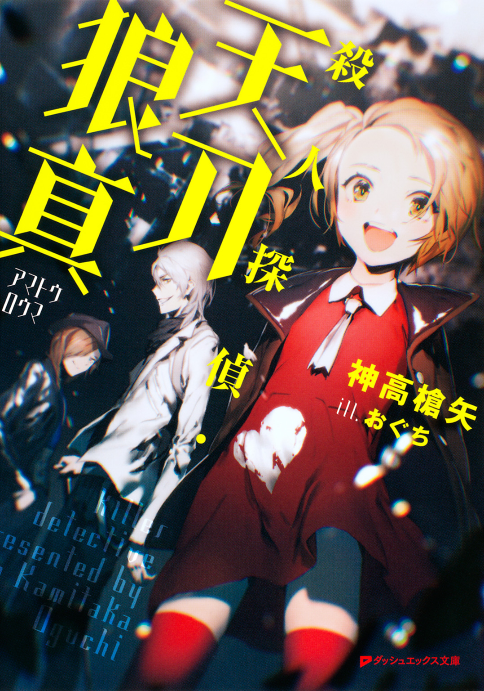
この本は縦書きでレイアウトされています。
また、ご覧になる機種により、表示の差が認められることがあります。
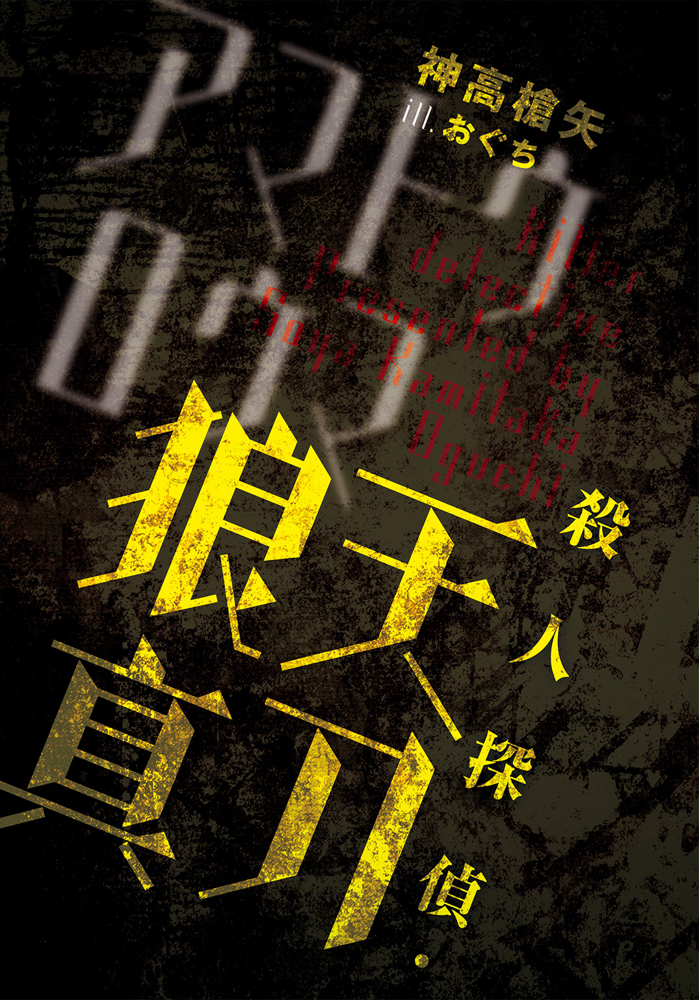
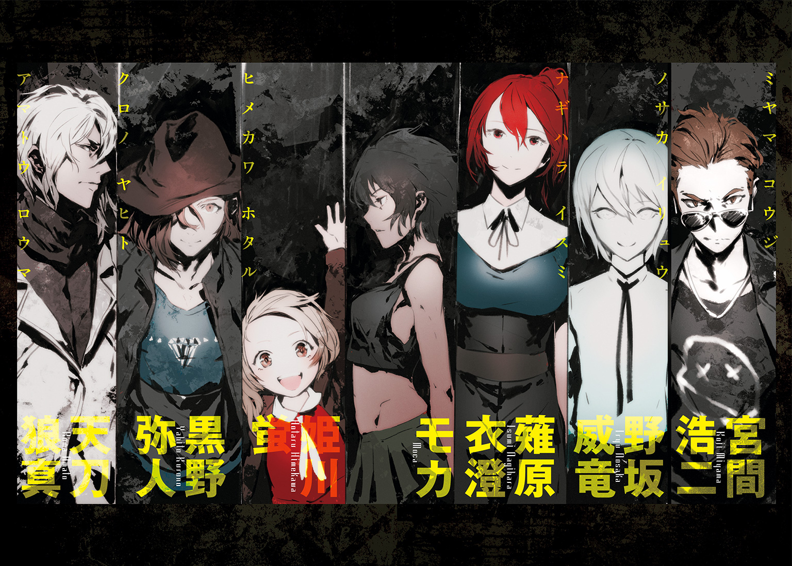
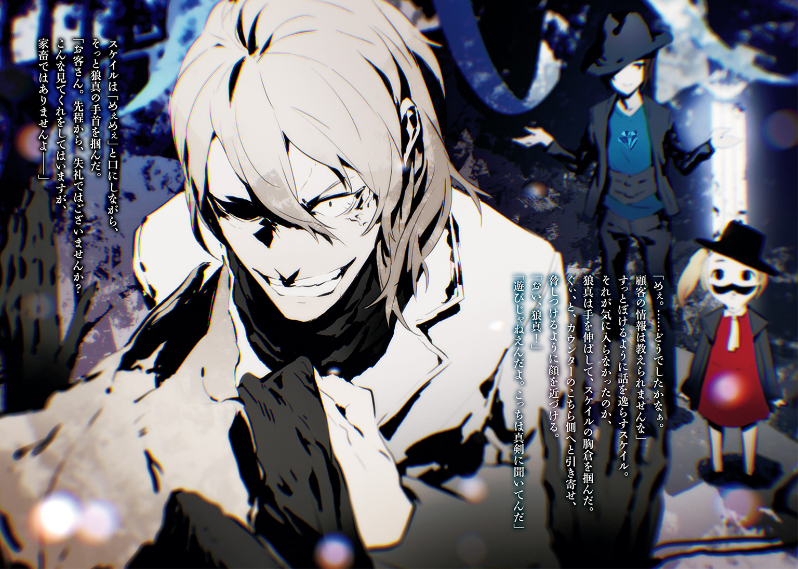
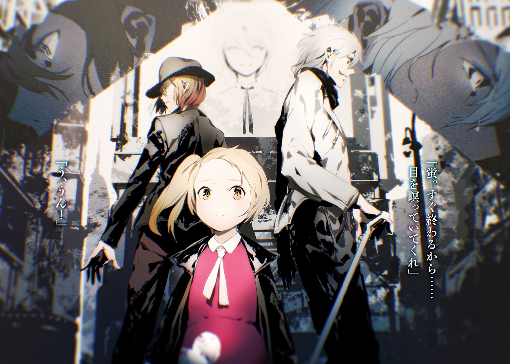
 ダッシュエックス文庫DIGITAL
ダッシュエックス文庫DIGITAL
殺人探偵・天刀狼真
神高槍矢
序章 視線の多い町
さて、問題です。
僕は何人いるでしょうか？
――正解は、５４３２４８人です。一週間後には３０００人増える予定です。
どうも、初めまして。野坂威竜です。
白瑠璃市の市長をやってます。名前や外見から、男性に思えるかもしれませんが、れっきとした女性です。ほら、シャツの上から、わずかに胸の膨らみが見えるでしょう。
パットを入れているんじゃないかって？ いえ。入れてないです。確認させてあげませんけどね。
白瑠璃市へようこそ。歓迎しますよ。引っ越しですか？ 旅行ですか？ お仕事？
へぇ、生き別れたお姉さんを捜しに来たんですか。......え？ 殺しに来た？ はは、物騒なジョークです。
白瑠璃市は、いいところですよ。駅周辺は、東京に匹敵するぐらい栄えています。町から少し離れると、農業地や工業地帯などもあって、働くところには困りません。大企業も注目しているので、地価は年々上昇傾向にあります。港には新鮮な魚がいっぱい。何より、僕がたくさんいます。この町に来たのなら、ぜひ、僕とお友達になることをお勧めします。
僕の優秀さを知りたかったら、質問をしてみてください。難しい計算に、調べ物。なぞなぞでもいいですよ？
美味しいスイーツショップですか？ そうですねぇ。この先を真っ直ぐ行ったところにあるロイヤルディコというお店はいかがでしょうか？ リサーチ済み？
それなら......あ、ちょっと、何をする気ですか？ あてんしょん。強制終了は、お勧めしません。パソコンをシャットダウンする時は、左下の――。
☆
「気持ち悪い......」
家電量販店の店先。
銀髪の青年は、展示品のノートパソコンに軽蔑のまなざしを向けながら、電源ボタンを長めに押した。画面がブラックアウトし、市長を名乗る女性が消える。
白瑠璃市に到着した天刀狼真は、ホテルでチェックインを済ませると、駅北にある繁華街へとやってきていた。
広い往来には、有名チェーン店や自己主張の強い個人店舗が、所狭しと軒を連ねている。ファッショナブルな人々が、ひしめきあい、交差点はどこも車で溢れ、渋滞していた。
最先端都市を謳っているだけあって、歩道のところどころにはタッチパネル式の案内看板。ディスク状の立体映写機からは、先程の市長がぼんやりと浮かび上がって道案内をしている。
なるほど、噂に違わぬイカれた町だと、狼真は思った。
白瑠璃市は、世界初の『疑似人格ＣＰＵが市長を務める町』だ。
市長の野坂威竜は、ＣＰＵでありながら、十分なコミュニケーション能力と、柔軟な思考力、学習能力を有している。交渉も駆け引きもできる。話をしてみたが、ネットの向こうにいる誰かと、画面越しに会話をしているかのようであった。
「お客さん、どうかしましたか？」
店の奥から、ハッピを着た若い女性店員が、にこやかな表情で現れた。彼女が電源ボタンを押すと、パソコンが素早く立ち上がった。
「市長に、殺人犯みたいな面してますね、って言われたんだよ」
「またまたぁ、威竜君は、そんなこと言いませんよ。ね？」
再び、パソコンの画面に、整った顔立ちの白髪の女性が映った。ボーイッシュな短めのヘアスタイル。真っ黒なシャツに真っ黒なズボン。中性的で表情が薄かった。もう少し、オタクが喜ぶような格好をすればいいのに、と、狼真は思った。
「パソコンの電源は、左下のメニューボタンから。強制終了は、負荷がかかっちゃいますから。ふふっ。店の奥で、威竜君から聞きましたよ」
「フリーズしてたから、親切心で切ってやったんだよ」
『いやいや、気持ち悪いとか言ってたじゃないですか』
画面の中の威竜が、親切にも正直に語ってくれる。さらには――。
『ちゃんと見てましたよ』『あ、僕も見てました』『咎めるつもりで言っているわけではないのでご安心を』『営業です』『疑似人格ソフト『威竜』の普及も、市長の仕事ですから』
周囲のパソコン。展示してあるタブレットやスマホ。果てはテレビまで。視界にある、ありとあらゆる『モニター』が、野坂威竜を映し出した。
「この町に引っ越して来たなら、威竜君は必須ですよ。もちろん、私も使ってます」
そう言って、店員は、私物であろう桃色のスマホを、ポケットから取り出して見せた。画面には、やはり威竜が映っている。
『けど、このお客さん、旅行者みたいですよ。生き別れのお姉さんを捜しているそうです』
「へえ、じゃあ、威竜君の力で捜してあげたらどうかな？」
女性店員は、自分のスマホに映る威竜と会話する。
『残念ながら、個人情報保護のため、できません。ただし、お客さんと、お姉さんの双方が『威竜』を所持していた場合、情報を開示するか、尋ねてみてもいいですよ？ 結果、お姉さんが承諾すれば、必要な情報をお伝えしましょう』
「ご覧のように、個人情報の保護に関してはバッチリ。威竜君は、白瑠璃の誰よりもモラルがあるから安心です」
威竜市長は、市民の生活の隅々に入りこむソフトウェアでもある。パソコンやスマホ、タブレット。昨今ではテレビやカーナビなどにもオンライン機能が搭載され、威竜の管理下にある。ただし、あくまで『ソフト』だ。製品にインストールして駐在させなければならない。それらの威竜はネットワーク上で繫がって、必要な情報と記憶を共有している。どの威竜に話しかけても同一人物に思えるだろう。
非常に便利ゆえ、ユーザーは多い。会話感覚で検索してくれるし、テレビやビデオに駐在させておけば、話しかけるだけで録画、再生をしてくれる。
不気味に思う人や、プライバシーが気になるという人は、威竜と疎遠な生活を送っているが、町そのものは、彼女に支配されているといってもいいだろう。
「こんな僕っ娘と、四六時中一緒にいたら、二次元と三次元の違いがわからなくなっちまう。引きこもりになるのはゴメンだ」
「メリットは大きいですよ？ オンラインに繫がっているので知識量は膨大。行政機関との連携もバッチリなんで、何かあった時は、すぐに警察へ通報してくれるんです」
「俺が人を襲う側だったら、どうするんだよ。デメリットばかりじゃねえか」
「ええと......その時は、通報されちゃいますねぇ......」
女性店員は、上目遣いで狼真の顔を窺い、苦々しく笑った。
『けど、ジョークか、そうでないかの判断はできますよ。先程、あなたは「姉貴を殺しに来た」とか言ってましたけど、ジョークとして受け止めておきました』
「あはは。そんな怖いこと言ってたんですか？」
ネットが社会に浸透し、プライバシーのない時代が来ている。その上、自宅やポケットの中にまで監視者を置くなど、どうかしている。と、狼真は思った。
『おっと、こんなに見られていたら不愉快ですよね。すいません』
威竜が演出気味にパチンと指を鳴らした。視界にいる彼女が、接客中の数人を残して一斉に画面から消える。
「どうでしょう？ パソコン版なら二万九千八百円。スマホ、タブレット版は一万九千八百円となっております。カーナビとテレビ版は、次回の入荷をお待ちくださいね」
「引っ越してきたわけじゃねえし。市長の面を拝みに来ただけだ」
威竜のシステムは、白瑠璃市内でしか機能しない。市外へ持ち出した瞬間、口をきいてくれなくなる。
「長期滞在でしたら、スマホに入れておくだけでも便利ですよ？ あなた専用のコンシェルジュとなって、旅のお世話をしてくれます。白瑠璃市に引っ越したくなるかも。威竜君は、すっごく人気で、たぶん、今日、明日で売り切れちゃいます。次回入荷は一カ月ぐらい先ですね」
「ケッ。バケモノが住んでる町なんざ、誰が引っ越すかよ」
狼真は皮肉を吐き捨てると、店に背を向け、杖をつきながら歩きだす。
これらのやりとりを、誰一人として物珍しく見る者はいなかった。威竜との会話は、白瑠璃市での日常なのだろう。住んでいれば、いずれ慣れるのだろうが、現状は不愉快だ。こうして歩いているだけでも、どこかで威竜が見ているのだから。
銀行の前をとおりかかった時、店の壁に掛けてある宣伝用のディスプレイに、威竜の顔が映った。すれ違いざまに彼女が語りかけてくる。
『あてんしょん。バケモノという言葉ですが......この町では使わないことをお勧めします』
白瑠璃市の別名は最先端共存都市。
共存は『人間』と『ホロ』の二種間を意味している。
ホロとは、人間の姿をしていながら人間ならざる者の総称である。外見は、人間と変わらない。しかし、特殊な能力を有していたり、身体能力が極端に優れていたりする。太古の昔から生息する少数民族か。はたまた、後天的に能力を授かったミュータントか。
悪い呼び方をすれば『バケモノ』だ。しかし、白瑠璃市では人間とホロが仲良く暮らしている。それゆえ、その呼称は差別用語となっていた。
国がホロの存在を認めたのは五年前。
それまで、都市伝説レベルの存在であったのだが、ネット社会の弊害なのか、変わった連中は世間へと押し出されやすくなった。隠し切れる存在でもないゆえ、日本を始め多くの先進国は、ホロの存在を認めることにした。
国によって、ホロに対する認識は様々であったが、日本はホロとの共存を望んでいる。
国民に理解を求めるため、中級都市であった白瑠璃市に莫大な予算を投じ、最先端共存都市へと開発を推進。管理のために、広大な土地面積を覆うよう高さ六メートルの外壁を造った。基本、都市への出入りは自由だが、道路と線路に限定されている。威竜が監視しやすくするためだろう。ホロの雇用推進のため、白瑠璃市民や企業の税金や手当を優遇。威竜を監視システムの要にし、治安を維持する。白瑠璃市を魅力的な都市としてアピールしていった。
白瑠璃市は、ホロの住みやすい町へと変貌を遂げた。土地開発によって多くの金が動き、人口も爆発的に増え、百万人都市となった。ホロも日本各地から集まってきている。現在、白瑠璃市には三千人ほどのホロが住んでいると言われていた。
「――知ってるよ。俺もバケモノだから」
天刀狼真は、威竜の忠告に対してそう答え、白瑠璃の町並みへ消えていった。
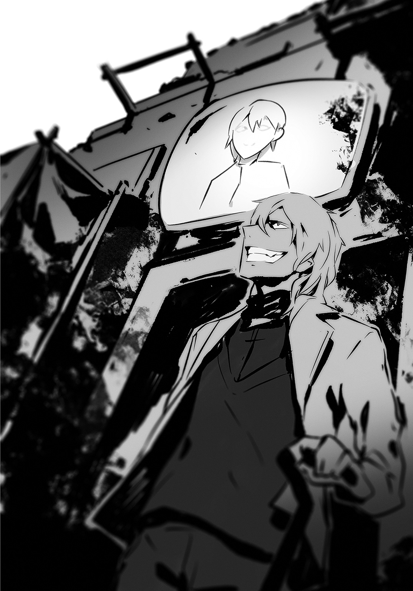
一章 ＮＥＥＴギャング
狩川電気は、白瑠璃市内に三店舗展開している地域密着型の小さな株式会社だ。
その二次試験――集団面接の会場に、黒野弥人はいた。
視線の先には、パリッとしたスーツを纏う面接官が二人、背筋を伸ばして座っている。四十代と思われる中年と、二十半ばであろう青年。双方、穏やかな表情を貼り付けていたが、その瞳には雷光のような鋭さがあった。
「では、名前から聞いていこうか」
黒野の隣には、四人の候補者がパイプ椅子に腰掛けて並んでいる。面接官の要求に従い、それぞれが、名前と大学名を告げていく。
「誠銘学院大学から来ました。山川博之です。よろしくお願いします」
「誠銘学院？ 名前さえ書けば入れる大学だよね？ なんで、そんなところに入ったの？」
「え？ た、たしかに偏差値は低いですが、自宅から近く、学びたい学部もあって――」
威圧的な問いかけに、早速困惑する山川とやら。他の就活生も、膝の上で拳を固めていた。
なるほど圧迫面接かと黒野は理解する。だが、数々の不採用宣告とクビを繰り返してきた自分にとって、危惧することではない。相手も仕事でやっていると俯瞰で受け止め、冷静に対応すればいい。順番が回ってくると、毅然とした態度で立ち上がり、淀みなく自己紹介をする。
「黒野弥人。十九歳です。最終学歴は白瑠璃高校です。本日はよろしくお願いします」
問われる事柄は山程ある。高卒についてはもちろん、職を転々としていることにも説明を求められるに違いない。
「履歴書を見る限り、いろいろな仕事をしてきたようだね。それじゃあ、次は志望動機を聞かせてもらおうかな。今度は、黒野君から順番にどうぞ」
しかし、踏み込んだ質問がなく、黒野は拍子抜けしてしまう。とりあえず、アピールを続けることにした。ネットを駆使して調べた情報を元に、働きたい理由を目一杯伝える。
「はい。御社の地域密着型という営業形態が非常に魅力的だったからです。他店と比べ、製品の値段こそ高いですが、アフターケアに関しては――」
「なるほど。うちの社風を理解しているようですね。では、次の方」
熱き思いを必死に述べたが、サラリと流されてしまう。反面、他の志望者たちは、明らかに威圧的な質問を受けていた。意地悪な質問は、裏を返せばそれだけ興味があるということ。対応力や精神力を試しているのだ。
なのに、黒野だけは暖簾に腕押しといった感じで、手応えがない。
そんな面接が三十分ほど続いた辺りで、中年の面接官が、ほのかに疲れた表情で告げる。
「少し、休憩しましょうか」
それほどの長丁場というわけでもないのに、突如提案される小休止。反論する理由もなく、黒野を含めた就活生は、部屋の外の空気を吸いに退室しようとした。
「あ......。黒野君？ ちょっと残ってもらえるかな？」
「はい？ なんでしょう？」
他の就活生が退出するのを待ってから、お互いが立ったままという、フランクな状態で言葉を交わす。
「君、若いのに、しっかりとした受け答えをしているよね？」
「は、ありがとうございます」
「いろんなところでアルバイトをしていたみたいだけど、なんですぐに辞めてるのかな？」
本来なら、面接中に飛んできそうな質問だった。
あまり答えたくない問いかけに、黒野は虚構を述べずとも、やや事実を暈して説明する。
「しょ、職場の仲間と気が合わなくて......」
褒められた解答ではないが、本当のことを伝えてしまえば、休憩後に黒野の椅子は残されてはいないだろう。
それを聞いた面接官の二人は、お互いに視線を交錯させると、気まずそうに話し始めた。
「あ、あのさ。その......気を悪くしないでほしいんだけど。一次の書類選考のあと、君の噂を聞いたんだよね。く、黒野君がギャングだって......な、何かの間違いだと思うんだよ？ 礼儀正しいし、真面目そうだしさ。けど、実のところ、どうなのかなって......」
面接官の笑顔は引きつっていた。冷や汗も滲ませている。
「ギャ、ギャング......ですか？」
黒野の背筋が冷たくなった。
「クロノスってギャングのボスと同姓同名だからさ。年齢も同じだし......は、はは。一応、念のために聞いているだけだから。ただ、正直に話してくれたら嬉しいかなぁ......」
「......そ、それは、なんというか......」
言葉を詰まらせる黒野。どう答えようかと必死に頭を回転させる。
けど、身分を偽ったところで、困るのはお互い様だと思う。事実を黙っていることはできても、質問されたことに噓はつけないと黒野は思った。ただ、いろいろと誤解があるようなので、しっかりと説明させてもらうことにした。
黒野は深く瞬きをすると、開き直るかのように「ふっ」と笑って、誇らしげに語る。
「クロノスはギャングじゃありません。公務員や企業の不正を暴いたり、警察が強く取り締まれない未成年の喧嘩や、ヤ――暴力団関係者を、取り締まったりしているんですよ。正義感の強い人たちが、ボランティア的に活動しているんです。ニューヨーク発祥のガーディアンエンジェルスを知ってますか？ アレに似てますね。世間には悪く伝わったのか、ギャングと揶揄されていますが、怖い組織ではありません」
「そ、それで、黒野君は、クロノスのボス......なんですか？」
「......................................................................................................そうです」
長き沈黙の後に、その一言を告げると、若い面接官はポケットの中から『お車代』と書かれた封筒を取り出した。
「きょ、今日のところは、これで勘弁していただけないでしょうか？ 我が社のコンプライアンスとしては、黒野君の期待に答えられそうになく、本当に申し訳なく思っていて......これはご足労いただいた費用といいますか......」
「ちょ！ ま、待ってくださいよ、どうか、僕の話を最後まで聞いてください！」
「だ、大丈夫です！ 警察とか市長には報告しませんから！」
むりやり握らされる封筒。それを、押しつけるように返す黒野。金が欲しくて、ここへ来たわけではない。仕事が欲しくて、正面から面接を受けに来たのである。
「違いますって！ 御社で働きたいだけなんです！」
「す、少ないようでしたら、こちらもございますので！」
今度は、懐から『迷惑料』と書かれた分厚い封筒を差し出す面接官。それを見た黒野は、さすがに顔を青くする。これではまるで恐喝ではないか。
「う、うぅ......くっ......ご、ご迷惑をおかけしてすいませんでしたっ」
そこまでさせてしまったことに罪悪感を覚えた黒野は、迷惑をかけたことに対し、深く謝罪する。当然、封筒の類など受け取れない。面接の続きは謹んで辞退させてもらった。
項垂れながら、一人寂しく会社を出た黒野は、玄関に背を向けたまま、ぼんやりと佇んだ。空虚な気持ちを目一杯味わうと、口の隙間から「はは」という自虐的な笑いが漂った。大きな溜息をつくと、鞄の中から、お気に入りの中折れハットを取りだして、頭に乗せる。
フラフラと、リストラされたサラリーマンの如く、黒野は歩き出した。
脱力しながら向かった先は、若者で賑わうカフェだった。二階の一部がオープンテラスになっていて、賑やかな繁華街を見下ろすことができる。待っていたのは、煉瓦色のオールバッグが特徴的な、サングラスをかけた、いかにもギャングな青年だ。
「お疲れ様です。黒野さん」
黒野よりもギャングな風貌のギャングは、丁寧な物腰で挨拶をした。
彼の名前は宮間浩二。黒野の就職の障害となっている暗黒組織クロノスの参謀である。
自称、黒野の右腕だ。ギャングというレッテルは、目の前の奴にこそ相応しいと思う。黒野のような、どこにでもいるような平凡面とは、醸し出す雰囲気が違う。
「面接、どうでした？」
「上手くいってたら、こんなに早く来ないよ」
言いながら、テーブルに突っ伏すという、わかりやすいリアクションをしてみせる黒野。
「いつものパターンにウンザリといった感じですかね。奢りますよ。何がいいですか？」
言いながら、メニューを取り上げる宮間。
「蕎麦」
「メニューにありませんね。出前してもらえるか、店員に聞いてきます」
「噓だよ。......ココア。冷たいヤツ」
宮間は、ウェイトレスを呼んで、黒野に代わって注文してくれた。
黒野の就職は失敗の連続であった。今日のような途中退場も珍しいことではない。
高校を卒業してからというもの、黒野は職を転々としている。長く続いても一カ月程度。クロノスのボスだとバレた瞬間採用してくれない。あるいは、肩を叩かれてやんわりと退職を勧められてしまう。黒野としても、職場の人を不安にさせたくないゆえ、無理に縋るようなことはしない。幸い、死んだ両親の遺産があるので、生活はできるのだが、このままでは本格的にギャングのボスとしての人生を歩んでしまうだろう。他の構成員のように、自分らしい生活を送りながら、副業的に慈善活動をしていきたいと黒野は思っているのに。
「クロノスって、そんなにマイナス要因ですかね？ 黒野さん以外、皆、仕事してますけど」
「......俺の面接のやり方が悪いんだろ」
黒野は、ふてくされるように言った。
「拗ねないでくださいよ。タイミングは悪いと思います。クロノスも有名になってきましたしね。ボスの黒野さんはもっと有名ですし」
黒野は、偽善者ともいえる性格だ。中学校の頃からだろうか。弱い者虐めの現場などを見てしまうと、ついつい口と手を挟んでしまう。その頃まではまだよかったのだが、高校生にもなると不良気質な輩も増え、虐めもエスカレートする。そんな連中から弱い者を守るためには、バイオレンスな手段も使わざるを得ない。困っている人を助け続けているうちに、気がつけば『黒野に頼めば、なんでも解決してくれる感』が、校内に広がっていた。初めは敵視していた不良連中も、黒野に一目置くようになり、果ては頼ってくることさえあった。
次第に、そんな黒野の行動を賞賛してくれる奴が現れる。例えば目の前の宮間だ。そういう『仲間』が増えた結果、慈善活動を組織化しようと彼が言い出し、気がつけばクロノスという組織が出来上がっていた。ちなみに、名前の由来は『黒野＋巣』という安直な理由からだ。
クロノスの構成員は十数人。主要なメンバーはそれだけだが、それぞれに大勢の部下がいたりするので、末端まで含めれば、三百人規模の大集団にもなるとか。クロノスに助けられた人たちも、後援者となって陰ながら応援してくれている。黒野自身は、マイペースに自分のできることだけをやっているので、仲間に協力を仰ぐことはあれど、命令することはない。誰もが自分の正義を持って、組織が一人歩きするかのように活動している。
メンバーの中には、悪徳企業や汚職警官を潰すために、盗聴や脅迫などの黒い手段を使う者もいる。ヤクザや暴走族を相手には、バイオレンスな手段も使う。悪党からのネガキャンも相まって、クロノスは世間からギャングのレッテルを貼られているのが実状だ。
それが、真っ当な職に就こうとしている黒野の障害となって立ちはだかっている。
「クロノス、辞めてみます？」
「......辞めて意味あると思うか？」
「うーん。あんま意味ないっすね。辞めても、俺は黒野さんがボスだって思ってますし。きっと、他の仲間も、そう思い続けますね。レッテル、消えませんね」
黒野の前に、アイスココアが運ばれてきた。ソフトクリームが浮かべられていて、思ったよりもボリュームがあった。黒野はストローを刺して、ちゅうと茶色い液体を吸い上げる。冷たさと甘さが舌の上を通過して、喉へと吸い込まれていく。胃の中を心地よく冷やしてくれた。
「......辞めないよ。今の白瑠璃市にはクロノスみたいな組織が必要だからな」
ホロという種族が住むようになって、白瑠璃市は大きく変わった。変化は悪いと思わないし、新しい試みも忌むべきコトではない。ホロは社会に溶け込んでいるし、黒野の友人にもホロは大勢いる。彼らの能力は企業にとっても有益だ。
だが、他種族との共存によって、諍いが生まれるのは避けられない現実だった。人の性格は十人十色。ホロを差別視している人間もいるし、そんな人間を嫌っているホロもいる。能力を使って犯罪に走るホロもいる。そのホロを利用する悪い人間もいる。
そんな両種の仲を『強引に』取り持つのが野坂威竜という市長だ。黒野からすれば鼻持ちならない奴でもある。ホロのイメージを悪化させぬよう、町で起こったホロ絡みの事件のほとんどを隠蔽している。加えて、人間のホロに対する差別的な活動や行為、暴力に対しても表面化させないようにしていた。両種間のトラブルはデリケートな問題として扱うよう警察に徹底させ、裁判などにならぬよう、被害者に泣き寝入りさせるか示談に持っていく。報道も規制している。行政の透明度も低い。ゆえに、市民の味方になるような組織が存在してもいいと思った。
「経営者とかどうです？ 俺なんか、店を持ってますけど、時折顔を出すだけで、ほとんどバイト任せですもん。楽ですよ？」
「労働の素晴らしさを感じたいんだよ。働かずに食う飯は美味いか？」
「デリシャス。黒野さんは？」
「罪悪感の味がする」
そう言って、黒野はココアを飲む。罪悪感の味というのは噓だ。真面目に職を探しているのだから、うしろめたいことはない。味わっているのは焦燥感なのだと思う。
「このあと、どうします？ 暇な奴を集めてカラオケでもいきますか？ 残念会でもしましょう。もちろん、無職の黒野さんに金は使わせません」
「気分じゃない」
「じゃあ、姉さんトコ行きますか？ 慰めてくれますよ？ そうだ。姉さんの児童養護施設の職員になるってのはどうすか？ モカみたいに」
「そういう気分でもない」
クロノスの活動は完全に自己満足の世界だ。報われないが、黒野弥人にとって相応の価値がある。助けた人たちからの感謝の声は、何事にも変え難い充足感を与えてくれる。
『偽善者』である黒野弥人には、その金にもならない充足感が、どうしても人生に必要だった。
なぜなら、それを食って生きているようなモノなのだから。
☆
白瑠璃市の駅から北は、朝から晩まで賑わう繁華街が広がっている。
駅の南は多くの企業ビルが軒を連ね、オフィス街として構築されていた。ビジネスマンの多くは日中を駅南近辺で過ごすことになる。大都会らしく昼間は非常に賑やかだが、夜にもなると人の数が一気に減少し、様相をガラリと変化させる。摩天楼を構築する巨大なビル群も、残業に勤しむサラリーマンのために数室の灯火を残すだけ。路地を入って少し進めば、威竜の目も届かなくなるため治安も悪くなる。まるで、昼と夜で別の顔を持っているかのようであった。
そんな夜のオフィス街。寂れた路地裏に、一台の真っ黒な車が、闇へと紛れるように進入していった。奥へ進んだ先にある、空き地のような駐車場に止まると、運転席からサングラスをかけた中年男性が、ぬらりと降りてくる。顔の輪郭を覆い隠すような髭が特徴のその中年は、後部座席のドアを開くと、中にある革製のボストンバッグを優しくポンポンと叩いた。
「もう少しの辛抱だからな」
呼応するかの如く、バッグの中からは「うん！」という女の子の元気な声が飛び出した。
そのバッグを持って歩道へ。暗闇の先を見ると、人っ子一人いない空間に、一軒だけ、明かりのついているバーがあった。玄関から伸びる点灯した看板には『ジャルカッタ』と書かれていた。中年は、店の明かりを目印に歩き始めた。
ふと、後方から車のエンジン音が聞こえた。この近辺は廃れていて、車など一時間に一台通るかも怪しい。中年は、平静を装って一瞥だけすると、ポケットの中に手を突っ込む。歩く速さは変えず、目的地のバーへと向かうことにした。
背後からやってきた車は、徐々に速度を落とすと、中年のすぐ側へ停車した。ドアが開いたかと思うと、中から二人の男女が降りてきた。一人はドラゴンジャケットに袖を通したチンピラだ。もう一人は、パンツスーツの女性。墨汁のように黒く長い髪に、真っ赤な口紅。仕事のできるＯＬを想起させる。アンバランスなコンビだと中年は思った。
平静を装う中年男性に、チンピラの方が、なんの前置きもなく質問を投げかける。
「鞄の中身はなんだ？」
金品を要求されるのならともかく『鞄の中身』をピンポイントで尋ねられたのだ。中年がどのような存在なのか、ある程度わかって接触してきたのだろう。
額に汗を滲ませながら、中年は適当な言葉でごまかす。
「親父狩りなら、相手を間違えているぞ」
「間違えているかどうかは、鞄の中身を見てから判断してやるよ。車の中も見せろ。命を安売りしたくなかったら、黙って従っとけ」
「勘弁してくれ。思い出の詰まったボストンバッグなんだ。車だってローンが残ってる」
「黙れって意味、理解できるか？」
従わなければタダでは済まないことぐらいわかっている。連中が鞄の中身を確認せず、立ち去るとは思えない。ならばと、中年は溜息をついて、覚悟を決める。
「ったく。この鞄がなんだっていうんだよ......」
愚痴をつぶやきながら、男はポケットに入れていた手を静かに抜いた。すると、そこには拳銃が握られていた。すかさず、正面のチンピラへと向ける。
「本物か？ 玩具か？ どちらにしろ、そんなもんでビビるとでも――」
中年は、事務作業をこなすかのように、淡々とトリガーを絞る。静かな路地裏に銃声が響き渡った。狙ったのは太股だ。間違いなく、チンピラのそこへ命中したのだが――。
返ってきたのは、カキンという金属音。チンピラのズボンに穴が開いたかと思うと、弾丸は軌道を変えて、アスファルトへと潜ってしまったではないか。
中年は、ギョッと目を丸くして、一歩後退した。
「何かしたか？」
薄っぺらい笑みを貼り付けるチンピラ。衣服の中に防具を纏っていたのだろうか？
絶対に失敗できない取引を前に、中年は覚悟を決めることにした。腕を持ち上げ、今度は額めがけてトリガーを絞る。だが、発砲音のあとに聞こえてきたのは「いでッ！」という緊張感のない声と、先刻と同じ金属音。チンピラは仰け反るように尻餅をつくと、デコピンをくらったかのように、額をさすっていた。
「そ、そんな......」
中年男性が狼狽声を漂わせたその時だった。ベキという豪快な破砕音と共に、凄まじい激痛が首を襲う。瞬間、視界がグニャリと九十度傾いた。
「調子に乗り過ぎね」
透き通るような女性の声が、耳へと届けられる。背後にいた彼女の細腕が、中年の側頭部を叩いたらしい。凄まじい力が首の骨をへし折った。中年の全身からヌルリと力が抜けていく。持っていた、バッグと拳銃を路面に落としてしまった。
「バ......バケモノ、か......」
そう言って、男は脱力するかのように崩れ落ちる。
「バケモノじゃなくてホロね。バケモノは差別用語よ。あの世では気をつけなさい」
彼女は、一仕事終えたかのように、掌をパンパンと叩いた。瞳は、蔑むように中年を見下ろしている。フンと鼻を鳴らし、彼女は相棒のチンピラを気遣うようにしゃがんだ。
「終わったわよ。大丈夫？」
「いつつ......さすがに頭は効く。響くんだよな、クソッタレが。......なぁ、へこんでね？」
中年は、薄れゆく意識の中、最後の力を振り絞った。力の入らぬ腕を必死に伸ばし、ボストンバッグへと乗せる。手探りでジッパーの引き手金具を探して摘まんだ。これが自分にできる精一杯だった。ほんの少しだけ開けてやる。
中年は、ボストンバッグに向けて、最後の言葉を絞るように囁いた。
「ほ、蛍......出てきていいぞ」
もう、身体も唇も動かなくなった。目の前の光景が、消えかけの視力へと吸い込まれる。
バッグの隙間から、小さな掌がちょこんと飛び出した。びぃぃぃ、と、ジッパーを押しやるようにして開いていく。すると、そこから、幼気な少女が顔を覗かせたのだった。
――悔いはある。やるべきことはたくさん残っていた。けど、これで己の人生に幕が下りるというのなら、俺は最後『娘』に、自分の死を見せつけてやりたかった。
☆
カフェでひと心地ついた黒野と宮間。その後、二人は近場の蕎麦屋へと移動した。クロノスのことや、黒野の就職のことなど、他愛のない話題を交錯させながら夕食を済ませる。
しきりに遊びに行こうと誘う宮間であったが、面接を失敗したのにハメを外すともなると、罪悪感も一入だったので、黒野は断らせてもらった。
宮間と別れたあとは、単身ネットカフェへと向かう。フリードリンクを片手に、職はないかと、パソコンと向き合った。時折、漫画を読んで休憩。再び職探し。良さげな企業があれば、メモして、志望動機に使えそうなソースを探す。クロノスや町の噂も気になるので、大型掲示板の白瑠璃市スレッドも眺めたりしていた。話題性のある町の、話題性のある組織なせいか、スレ民たちが根も葉もない噂を書き込んでいる。こういう心ないレスが、黒野の就職を邪魔しているのかと、思わず溜息が零れた。
お得なパック料金だと、ついつい時間ギリギリまで入り浸ってしまうのはいつものこと。気がつけば、時計の短針は二十三時を示していた。
スーツ姿に中折れハット。手にはビジネスバッグと、残業帰りの会社員のような黒野弥人は、駅南のオフィス街の路地へ入っていく。威竜が苦手なので、奥まった路地にあるアパートを借りて住んでいる。
帰宅する前に、翌日の朝食を買っていこうと、コンビニへ寄ることにした。ペットボトルのお茶とパンを購入。自動ドア付近にある無料の求人誌を丸めて、ビニール袋に捻じ込む。
店を出ると、廃れた路地裏へ、一人静かに足音を刻んだ。
静寂に沈んだその空間に、ふと、オカルト染みた声が漂ってくる。
「えうえう」という、女の子のすすり泣くような声とでもいうのだろうか。
気のせいかもしれないと歩いていたら、やがて、闇の奥から、街灯の光へとさらされるように、声の主が現れる。黒野は中折れハットのツバを持ちあげると、ツチノコでも発見したかのように目を丸くして、思わず足を止めた。
瞳に飛び込んできたのは、桃色パジャマを着た小学校低学年といった感じの女の子。サイドテール気味に結ばれている髪が印象的だった。彼女は、もう少し歩を進めると、黒野の存在に気づいたのか「ひぅ！」という慄いた声と共に尻餅をついた。
「あ......大丈夫か？」
心配そうに近寄る黒野。彼女は、威圧的に感じたのか「あわわ」と、怯えるように立ち上がって、逃げ出してしまう。
十九歳の無職が少女を追いかけ回すなど、不審者極まりないのだが、この近辺は、子供が夜中に徘徊していい場所ではないだろう。おせっかいかもしれないが、放っておくわけにはいかないと、黒野は思った。
軽く駆けると、すぐに追いついた。強引だとは思うが、腕を捕まえる。
「ひゃぁぁあぁぁッ！ 離して、離してぇッ！」
彼女は必死めいた表情で、ポカポカと黒野を殴りつけた。痛くもなんともないので、黒野は歯牙にもかけず、目線を合わせるようにしゃがみこみ、優しく問いかけた。
「どうしたんだ？ こんな真夜中に一人でいたら危ないよ。迷子？」
「うぅ......うぅぅ......」
「お父さんと、お母さんは、どこにいるのかな？」
「あぅぅ......パパは死んじゃったぁ......」
「ご、ごめん。マ、ママは？」
「ママは、どこにいるのかわかんない......」
「ええと、それじゃあ、どこに行こうとしていたのかな？」
「......わかんない」
涙声で、必死に訴える少女。黒野は困り果ててしまう。犬のお巡りさんの気持ちが、少しだけわかった気がした。周囲を見渡してみたが、保護者どころか人影すらない。
参ったなぁと心を湿らせる。交番に連れて行きたいところだが、警察は苦手だ。しかし、迷子の少女を見なかったことにできるほど薄情でもない。
こういう時は威竜に頼るしかないのだろう。白瑠璃の管理者である彼女なら、少女の住所や家族構成など、すべて把握していると思う。他称ギャングという立場ゆえ、威竜という疑似市長も苦手だが、仕方ない。
「とりあえず、もっと広くて明るいところへ行こうか？ ここは暗くて怖いからさ」
「ここ、怖いところなの？」
「えっと......ほら、人がいないと寂しいだろ。賑やかなところの方がいいよ」
「う、うん」
彼女は、遠慮がちに頷いた。
「名前は？」
「ひ、姫川蛍だよ。にぃには？」
「俺は黒野弥人」
彼女の小さな掌を、そっと握りしめる。彼女が握り返してくれると、黒野はにっこり微笑んだ。小さな歩幅に合わせながら表通りへと向かう。
道中。彼女は、黒野を見上げると、不安げに問いかけた。
「蛍は、どうなっちゃうの？」
「大丈夫だよ。ちゃんとお家に帰れるから」
「......おうちには帰りたくないんだよ......」
彼女は、うつむくようにして、ポツリとその言葉を零す。
「どうして？」
「蛍、部屋から出してもらえないの」
「出してもらえない？」
「うん。だから、逃げてきたんだよ」
家出少女だろうか？ 真夜中に一人でうろついていたのだ。複雑な家庭の事情があるのかもしれない。
二人は表通りへと抜けた。オフィス街ゆえに、この辺りでもほとんど人がいなかった。極稀に車が走り抜ける以外は静かなものだ。ただ、等間隔に並んでいる街灯の光が、寂しさと不安をかき消してくれる。
黒野は防犯カメラを探す。街灯に取りつけられているそれを見つけると、レンズの視野に蛍を映した。見上げて、市長に呼びかける。
「おい、迷子を見つけたんだ。保護してやってくれ」
数秒待っていると、スマホがデフォルトの味気ないメロディを奏でる。威竜からであろう。彼女をインストールしていなくても、黒野の顔と名前は市役所に登録されている。スマホの番号は調べられるだろうし、電話をかけてくるぐらいはしてくる。
『こんばんは。市長の野坂威竜です。どうかしましたか？』
「迷子だよ。保護してやってくれ」
『......御連絡ありがとうございます。すぐにパトカーを向かわせましょう』
少ない会話だが、何を優先すべきなのかを判断し、迅速に行動してくれるのは、彼女が優秀なＣＰＵだからか。こうして会話している間にも、少女の身元を突き止めているのだろう。
「俺は消えてもいいか？」
『警察が到着するまで、彼女に付き添ってくださるとありがたいのですが？』
「おまえなら、俺のコトは知ってるよな？ 警察、苦手なんだけど？」
威竜とて、黒野がギャングと揶揄されているのを知っているハズだ。
『安心してください。逮捕しないよう伝えておきます。警察は、あなたのこともクロノスも嫌っているようですが、個人的にはファンなんですよ？』
「どーも」
冗談か、あるいは皮肉か。話し半分に黒野は受け止めておく。
他愛のない会話をスマホ越しにしていると、蛍がスーツの裾をくいくいと引っ張った。
「ねぇ、にぃに。誰とお話ししているの？」
「市長さんだよ。威竜は知ってる？ パトカーが迎えに来てくれるってさ。そうしたら、お家まで送ってもらえるから」
「にゃ！ ダ、ダメなんだよ！」
黒野の言葉に、蛍は慌てふためいた。
「威竜君に見つかったらいけないって、パトカーもダメだって、パパが言ってたんだよ！」
「あれ？ パパは死んだって、さっき言ってなかったか？」
スマホの向こうで、威竜の溜息が聞こえてきた。
『黒野さん。真に受けちゃ駄目です。その子、何度も家出をしてますよ。たくさんの人に迷惑をかけてますね。僕の方で、今、調べました』
「親からの虐待とかは？」
『相談所や学校からの報告は受けていません。けど、親御さんには厳しく言っておきます。こんな幼子を夜中に外出させないようにとね』
そういうことか。と、黒野は得心する。
彼女の頭にポンと掌を乗せると、黒野は優しく叱ってやることにした。
「いいか、蛍。子供はお父さんとお母さんのところに戻らなきゃ駄目なんだぞ。嫌なことを手伝わされたりとか、怒られたりとか、いっぱいあるけど、大人になるまでは我慢だ。厳しいことを言われても、それは愛があるからだよ」
とまあ、大人じみたことを言ってみた。
黒野には両親がいない。小学校六年生の時に死んでしまい、高校を卒業するまでは、児童養護施設で過ごしている。両親という存在がいるのは、羨ましく思う。
「ち、違うんだよ。パ、パパは死んじゃって、ママとはたまにしか会えなくて......蛍は、ずっと部屋に閉じ込められていて――」
「大丈夫。俺は、もう行くけど、待っていればパトカーが来るからさ。路地に入ると迷子になっちゃうから、ここから動いちゃ駄目だぞ？」
「うぅ......ほ、本当なんだよぉ......」
蛍は、黒野の服を摑んで、縋るように見上げた。
その、必死めいた表情に、後ろ髪を引かれた。黒野弥人は偽善者で、彼女のような困っている人を助けるのは基本だ。しかし、これは家族の問題だと思う。
「じゃあな。家に帰ったら、パパとママと、ちゃんとお話しするんだぞ？」
ポンポンと頭を軽く叩いて、黒野は踵を返した。警察と関わるのは嫌だが、彼女のことは心配ゆえ、パトカーが迎えに来るまで、遠くから見守ることにする。
「威竜。俺は消える。あとは頼むよ」
『わかりました』
「う、うぅ。なんで......なんで信じてくれないのぉ......」
「......」
黒野は、少し歩いた。けど、ピタリと足を止めた。横顔を見せるように彼女を一瞥する。
なんだが、物凄く嫌な気分になった。彼女を信じなかった罪悪感とでもいうのだろうか。
もし、彼女の言っていることが本当だとしたら？ ただの家出少女ではなかったら？
彼女が家出を常習的に行っているのであれば、パパやママが怖いとか、もっともらしい理由があるはずだ。黒野は、都合のいい解釈をしていないだろうか？ 威竜が、もっともらしいことを言っているから、それを受け入れているだけではないだろうか？
なぜ、彼女は助けを求めているのだろうか？
「行かないでほしいんだよ......！」
蛍は、トテテテテと駆けて転んだ。ベチリと顔面からアスファルトに突っ込む。
なんだか、鋸で心を引き裂かれるかのような痛みを感じた。誰を信じるか、何を信じるかという話ではないような気がする。彼女の、絶望的な表情と声と涙を最後に別れることが、あまりにも心苦しかった。憐れみを感じたのではなく、黒野自身が耐えられなくなったのだと思う。
「......威竜。両親の住所を教えてくれるか？ 蛍は、俺が送るよ」
電話の向こうの市長に、黒野はそう告げた。
『個人情報保護のため、それはできません』
「どう見ても普通じゃない。ただ親元に帰すっていうのはちょっとな」
『親御さんには注意しますよ。問題があれば、児相にも連絡します』
蛍は起き上がり、黒野のもとに駆けてくる。両腕を腰に回して、ギュッと抱きしめてきた。
「そういうところはＣＰＵって感じだな。蛍の言いぶんは無視するのか？ パパが死んだとか、たまにしかママに会わせてもらえないとか。おまえは気にならないのか？」
『常習的に家出をしていますからね。こちらにデータはありますし』
黒野弥人は視線を下ろした。潤んだ瞳で見上げる彼女に質問をする。
「なぁ、蛍。正直に答えてくれ。絶対に噓はナシだ」
「う、うん......」
「威竜は、おまえがしょっちゅう家出してるって言ってるんだが、これで何回目だ？ それだけ家出を繰り返してるんだ。パパやママと上手くいってないんだろ？ それなら、にぃにが助けてやるよ。本当のことを教えてくれたら、力になってやる」
「噓なんかついてないんだよ。蛍は、ずっと部屋の中にいたの。家出じゃなくて、逃げてきたんだよ。ママとは仲良しだよ。パパは......うぅ......動かなくなっちゃったのぉ......」
グジグジとした泣き声を引きずりながら、姫川蛍はその場にへたり込んだ。
――事情はわからなかった。けど、彼女の気持ちが本気なのはわかったような気がする。
本当のことを言えば助けてやると言ったのに、それでも彼女は意味のわからない主張を続けた。偽るのが得意なら、同情を引けるような言葉を選ぶだろう。なのに、彼女の証言は一貫していた。何より、彼女の嘆きが偽りだとは、どうしても思えなかった。
この辺りから黒野の表情は変わっていたのだろう。
無職の一般市民としての黒野ではなく、クロノスのボスとしての顔に。
「......悪いな威竜。彼女は俺の方で保護するよ」
「にぃに......？」
『......それだと、あなた、誘拐犯になってしまいますよ？』
淡々と告げたつもりかもしれないが、威竜の声には怒気が感じられた。
「ちょいと話を聞いて、問題ないとわかれば、俺が責任を持って警察署にでも届けるよ」
『そういうわけにもいかないでしょう。一応、この町にも秩序というものがありますから』
「けどさ。おまえ、この子の話を何一つ聞いてやろうとしないだろ？」
すっとぼけた感じで口にしたが、己の行動の業の深さぐらい黒野は理解している。たしか、未成年を言葉巧みに連れて行ったら、誘拐になる。
『あなた、町でも評判の善人でしょう？ 僕も評価していたのですが？』
「自分のことを善人だと思ったことはないよ。俺は偽善者だ」
徐々に、お互いの言葉が棘を帯びてくる。
ただ、正面から喧嘩を売る気もないので、黒野は柔らかい物腰で話をまとめようとした。
「ま、この件は俺に任せてくれよ。さっき、ファンだって言ったじゃん」
『家出の件に関しては、家族の問題だと思いませんか？』
「話を聞くだけだよ。不都合はないだろ？ 俺、ちゃんと届けようとしたんだぜ？ ってなわけで、じゃあな威竜」
そこまで言って、黒野は通話を終わらせようとしたのだが――。
『......待ってください』
スマホの向こうで、威竜がつぶやいた。すると、彼女はしおらしく言葉を繫ぐ。
『ごめんなさい。僕、噓をつきました。実を言うと、その子の両親は政府の要人なんです。理由あって、保護していたのですが、今から一時間ほど前、誘拐されてしまいました。彼女がパパと呼んでいる男性は誘拐犯です。死んだというのは初耳ですね。しかし、蛍さんの証言の一部は認めましょう。母親とはたまにしか会えません。閉じ込められていたというのも事実です。立場が立場ですから』
「要人の......娘？」
威竜が証言を変えたのは、黒野が連れていくことを避けられないからか？ しかし、新たな証言も、どこまでが真実なのかはわからない。まあ、真実だとしよう。けど、それなら、蛍は、大人の事情に巻き込まれている哀れな少女となる。
『一般市民の黒野さんに教えられないこともあるんです。僕と蛍さんの証言の違いは、そのせいです。誤解を招いてしまいましたね。申し訳ございませんでした』
「いいよ。けど、渡すわけにはいかないかな」
このままのらりくらりと情報合戦をやっていれば、いずれパトカーが迎えに来る。そうなれば面倒なことになる。黒野は、できるだけ早く、この場を離れたかった。
『部屋に閉じ込めていることに関して、母親は了承済みです。クロノスに睨まれるような、うしろめたいことは一切ありません』
だが、これほどまでに助けを求める蛍を見捨てられるだろうか。答えはＮＯだ。もし、ここで彼女を渡してしまったら、二度と会うことはない。そんな気がする。何があったのか、知る機会さえも失われる。
「蛍。行こうか」
「え、えっと......」
「蛍の話が聞きたいな。一緒に行こう」
「う、うん」
『後悔しますよ？ 僕を敵に回すことになります。これは脅しではありません。彼女を保護しているのには、それなりの理由があるんです。正義の味方なんでしょう？』
「言ったろ。俺は、ただの偽善者だ。あと、俺、おまえのこと信用してないんだ。嫌いだし」
それを最後に、黒野弥人は通話を終わらせた。少女の手を握った。彼女も、黒野の手を握り返した。そして、威竜の目の届かない路地の奥へと、二人は姿を消した――。
自宅へは戻れないだろう。蛍が大事ならば、この近辺へ警官を送りこんでくるに違いない。ならばと、黒野は古巣へ向かうことにした。明るい表通りから再び暗闇はびこる路地へと身を投じる。ある程度走ると、黒野たちは徐々に速度を落とした。蛍の呼吸が落ち着くのを待ってから、黒野は蛍に質問を投げかける。
「なぁ。部屋に閉じ込められていたっていうのは本当なのか？」
「うん。お外に出るのは初めてなんだよ。パパが連れだしてくれたの。これからは、学校にも行けるし、お友達もいっぱいできるし、公園にも、お買い物にも行けるんだって」
「パパは死んだんじゃなかったのか？」
「えぅ......動かなくなっちゃったんだよ......」
そのニュアンスだと、死んだのは最近だろうか？
「いつ、死んじゃったのかな？」
「......さっき」
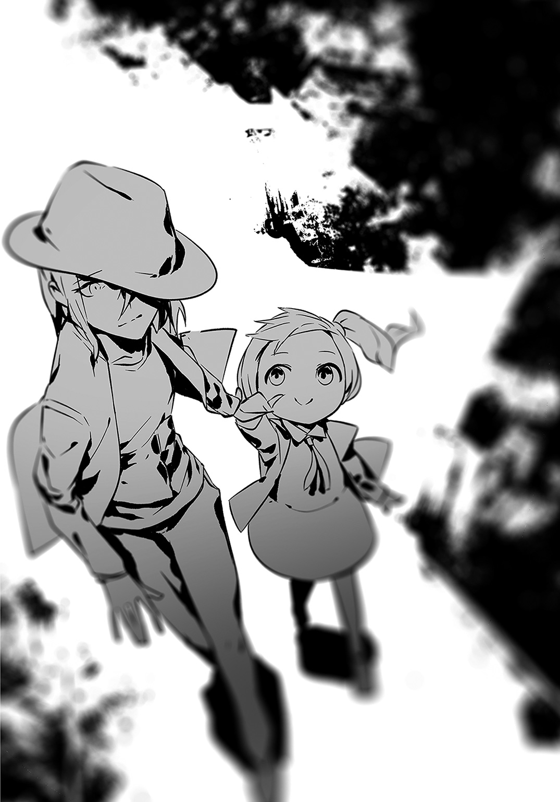
黒野は、丁寧に質問を繰り返して、姫川蛍の人物像と事情を紐解いていく。
姫川蛍。九歳。物心ついた時から『部屋』で生活していた。そこには、遊具や絵本、玩具やテレビなど、なんでもあった。ただ、彼女は外の世界を知らずに生きてきた。
食事もおやつも、お昼寝の時間もあった。部屋での世話は、スタッフと呼ばれる人たちがしてくれたそうだ。パパと会えるのは週に一回。ママに会えるのは月に一回。
本やテレビを見ているうちに、世の中には友達とか、学校とか、お店などが存在することを知った。それらに触れたいと思う気持ちをパパが掬い上げ、部屋から連れ出してくれたのだという。これからは、普通の子供のように暮らせるはずだった。もちろんママも一緒だ。
パパは、白瑠璃市を出る前に、寄るところがあると言っていた。現場までは車で移動した。しかし、到着するや否や、何者かに襲われてしまった。ボストンバッグに身を潜めていた蛍が顔を覗かせると、パパが倒れていた。そして、知らないお兄さんとお姉さんがいた。
「......その、お兄さんたちは？」
「わかんない。倒れちゃったんだよ」
パパと若者は相討ちだったのだろうか。その後、呼びかけても揺すっても起きないパパは、死んでしまったのだと理解する。どうしたらいいのかわからない蛍は、アテもなく路地裏を徘徊。黒野と出会うことになったようだ。
不可解なことは多いと黒野は思った。蛍の証言は、あくまで主観。威竜の言い分とも異なる部分がある。蛍にとってパパと呼んでいた男は、威竜にとっての誘拐犯である。どちらが真実かなど、蛍にもわからないのではないだろうか。
歩いていると、やがて、ビルとビルとの間に広い空間が現れる。そこには緑があった。綺麗な芝生が敷き詰められた広場には、二階建ての神秘的な建築物が、月光に晒されながら聳えている。黒野が足を止めると、蛍はその建物を舐めるように見上げた。
「ここは？」
「児童養護施設だよ」
正式名称は薙原教会。昔はキリスト教会であったが、現経営者の薙原衣澄が、神様よりも子供たちのために使うべきだと、二十数年前に児童養護施設へ切り替えた。衣澄と職員が一人。そして、四十人の子供たちが住んでいる。黒野も、高校を卒業するまでは、この教会に住んでいた。ここならば、自宅よりはマシであろう。万が一、警察が嗅ぎつけても強制捜査は難しいのではないか。きっと衣澄もかくまってくれる。
「じどうようごしせつ？」
「お父さんやお母さんと一緒に暮らせない子供たちが住んでいるんだよ」
「じゃあ、蛍も、ここに住むの？」
己の状況をわかっていない蛍は、安直にもその結論に至ったようだ。
「そういうわけじゃないよ。夜も遅いし、一晩泊めさせてもらおうかと思ってさ」
黒野は、正面玄関のチャイムを押した。
寝ているのではないかと心配したが、杞憂に終わる。
『こんな夜更けにどちら様？』と、インターホン越しにくぐもった声が返ってきた。
「俺だよ。弥人。ちょいと揉め事でさ。一晩だけ泊めてくれないかな？」
『揉め事？ ......おっけ。ちょっと待ってね』
教会の管理者は、深い事情も聞かず、すぐに応対してくれた。ほんの少しの間があって、大きな正面玄関が、ちょこんと開いた。声の主がひょっこりと顔を覗かせる。
皆のお姉さんといった感じの快活そうな女性。栗色の長い髪は腰まで伸びている。瞳は、黒真珠の如く綺麗だった。神秘的なパジャマは、シスター服をリサイクルして作ったモノである。
「やほ。おかえり」
薙原教会の院長。薙原衣澄。教会で暮らす子供は、彼女のことを『姉』か『母』だと思っている。黒野にとっても姉代わりだ。独り立ちした後も、時折遊びに来るのだが、彼女はいつも『おかえり』と言って、迎えてくれる。
「おや？ そっちのかわいらしいお嬢さんは？ こんばんは」
「こ、こんばんは。姫川蛍だよ」
ペコリと丁寧なお辞儀をする蛍。それにあわせて衣澄も、恭しく頭を下げた。
「これはこれはご丁寧に。初めまして。薙原衣澄お姉ちゃんだよ」
「泊めてほしいのは、俺と、この子なんだけどさ。いいかな？」
衣澄は、黒野と蛍を交互に見やると、半眼を滑らせながら、からかうように問う。
「もしかして誘拐ぃ？」
黒野としては、助けたのだと思っている。のっぴきならない事情があると感じたから、それが解るまで保護するつもりで連れてきた。だが、蛍の身内や、威竜からすれば、まあ誘拐に該当するのかもしれない。
☆
――さて、これはいったいどういうことだろうか。
オフィス街の路地裏へとやって来た天刀狼真。噂に違わず、この近辺は夜になると治安が悪くなるようだ。しかし、この光景はいささか限度を超えている。
取引現場と聞いていた『ジャルカッタ』というバーの店先に、人が三人倒れている。
本来なら１１０か１１９に連絡を入れてもおかしくない状況だろう。天刀狼真は、持っていたコンビニのアイスをコーンまで一気に囓ると、そいつらに視線を馳せる。
中年の男は、首が変な方向に曲がっているから死んでいるのだろう。
チンピラと女には外傷がなかった。試しに杖でつついてみるが、反応はない。二人の首へと指を当て、脈を測ってみることにした。バケモノの住む町なので、いきなり息を吹き返して、襲いかかってこないか心配であった。が、そんなことはなく、しっかりと死んでいる。
アスファルトには拳銃が転がっていた。そして空のボストンバッグ。
それらを眺めながら、狼真は唸るように考える。
「......何があったんだ？」
狼真は、思いついたかのようにジャルカッタの窓を見た。
明かりがついている。中はどうなっているのだろうか？
「......もしかしたら」
狼真は、扉へ視線をスライドさせると、店内に急いだ。
勢いよくドアを開けた。カランカランと古き良き喫茶店のような鐘が鳴る。
鋭い視線を店内に向けて一周させる。モダンな雰囲気の漂う空間。カウンター席が五つ。テーブル席は一つで、グラスが二つ並べられていた。
床には、バンダナを巻いたチャラそうな男が転がっている。知った顔だった。脈を探ってみるが、コイツも死んでいるようだ。外傷は見られなかった。
カウンター側に回りこんでみると、そこにも死体があった。
格好から、おそらくバーテンだろう。こちらは喉にナイフが刺さっている。誰かに連絡を取ろうとしていたのか、右手にはスマホが握られていた。
遺体を跨いで、控え室のドアを開ける。誰もいないことを確認すると、今度は裏口から外へと出てみた。狭く陰鬱な空間をキョロキョロと見渡してみるが、人の気配は感じられない。
静寂を味わった狼真は、頭をくしゃくしゃと搔き、緊張の糸を弛緩させる。控え室へ引っ込むと、裏口のドアをパタンと閉め、気だるそうに「チッ」と舌打ちした。
ここで『殺人事件』があった。遺体が転がったままゆえ、そう時間は経過していないと思う。犯人か、あるいは関係者が残っているのではないかと期待したのだが、逃げ出したあとだったらしい。ガッカリしながら、控え室の中を軽く見渡してみる。不自然な点は見当たらないので、遺体を一つ一つ調べてみることにした。
店の方へと戻ろうと、扉を抜けたところで――狼真の横腹に『棒状の何か』が、ポスッと押し当てられた。それが、スタンガンだと気づいた時には遅かった。
「ん？ バッ！」
撃ち抜かれたような衝撃が内臓を襲った。痺れが全身へと一瞬にして駆け巡る。足に力が入らなくなって、床へと勢いよく倒れ込んでしまう。相手が犯人ならマズいことになると、狼真は遮二無二身体を起こそうとするが、痺れがそれを邪魔した。
「チョロイっすね」
若者が、軽快な言葉を飛ばしながら、掌の中でスタンガンをクルクルと回していた。
「ぐッ......」
狼真は、持っていた杖を若者の足首へと伸ばした。柄の部分を引っかけると、痺れを押し殺して、思いっきり引く。
「うおわっ！」
その場で、すっ転ぶ若者。息絶え絶えになりながら、狼真は必死に杖をたぐり寄せるのだが――バーカウンターを飛び越えてきた男に、手の甲を踏みつけられてしまう。
煉瓦色の髪をオールバッグにした、いかにもギャングといった風情の人物だった。スタイリッシュなサングラスが、より彼をギャングたらしめている。
そいつは、狼真を見下ろしながら、怒気を込めた質問を落とした。
「おまえが殺したのか？」
☆
黒野と蛍は大食堂へと案内された。六人掛けのテーブルが数多に並べられたアットホームな空間だ。夜も遅いので、起きているのは衣澄だけ。広いその空間は実に静かで、声がよく響く。黒野たちは、衣澄の入れてくれた温かいミルクと一緒に、テーブルを囲むことになった。
蛍が「んく」とミルクを一口。
衣澄は、優しく穏やかに「美味しい？」と、微笑みながら問いかける。
「甘くて美味しいんだよ」
黒野も一口啜った。砂糖のタップリ入ったホッとする味だ。
身体の内側から、緩やかに温まっていく。
「仕事の方はどうだったの？ 格好から察するに、今日も面接行ってきたんでしょ？」
「完璧だったよ。慈善活動さえしてなければな」
その言い回しで、衣澄は理解したのだろう。バツが悪そうに苦笑していた。
「さて、それじゃあ、説明してもらおっかな」
黒野は、蛍との出会いを丁寧に伝える。といっても、わからないことだらけだ。威竜が噓を交えていたせいで、何が真実かハッキリしない。なぜ、蛍を連れてきたかと問われたら、それはもう『直感』としか言えないだろう。必死めいた彼女が噓をついているとは思えない。
「......それ、誘拐じゃん？ やっぱし幼女誘拐じゃん？」
「い、いや、そうかもしれないけど、放っておけないだろ？」
少なくとも、あのまま引き渡すことはできなかった。それは、蛍の気持ちを考えてのことだけではなく、黒野自身の気持ちもあった。縋るように助けを求める彼女を見捨てることなど、目覚めが悪いことこの上ない。それに......黒野だって教会育ちだ。事情のある子供たちは、多く見てきている。世の中には醜い親がいることも知っている。クロノスの活動を通じて、悪い大人が大勢いることも知っている。それに虐げられている弱者を多く見てきたのだ。それが、蛍と被った。
「ふぅむ。相変わらず、見事な偽善者ぶりでございます」
丁寧な嫌味に対し、黒野は誇らしげに「だろ？」と胸を張った。
「ま、奇妙なのは同感。たとえ芸能人の娘でも、学校には通うもんね。それに、パパが殺されたっていうのも気になるし......」
「姉ちゃんが、俺の立場なら、素直に引き渡したか？」
「たしかに、見捨てることはできないかな......。姉ちゃんも、悪名高き正義のギャングの一員だしねぇ......」
衣澄も、クロノスの構成員の一人であった。彼女の正義は『子供たちの未来』だ。児童養護施設を設立し、大勢の子供たちに愛を注いでいる。
「いいよ。弥人のことは信じてるし、協力するよ。けど、これからどうするの？ 蛍ちゃんのコトを調べるのはいいけど、威竜が素直に教えてくれるとは思えないし、パパのこともあるでしょ？ 事件だよね、コレ？」
「ええと......それは......」
とまあ衝動的に動いてしまったので、どうすればいいのかというプランはなかった。とりあえず、これからじっくり考えることになるだろう。
「ま、まあ、情報収集からだよな。仲間の誰かが何か知ってるかもしれないしさ。はは」
無計画さに呆れたのか、どうするんだよと言わんばかりに衣澄がジトリとした半眼を向けてくる。そんな二人を、蛍が素っ頓狂な表情で、交互に眺めていた。
その時、スマホが鳴り響いた。三人ともが身体をビクつかせる。
「お、俺のか」
「い、威竜からじゃないよね？」
まさかと思いながら、黒野はポケットからスマホを抜いて、画面を確認する。
「いや、宮間からだ。――もしもし。どうした？」
黒野が応答すると、彼は神妙な声で告げた。
『黒野さん。事件です』
「事件？」と、黒野は疑問調で繰り返す。
『ジャルカッタって店を知ってますか？ そこで殺人がありました。店の外に三人。中でも二人死んでます。容疑者っぽい男を捕まえたんで、一応ご報告を、と。どうします？ 仲間にも知らせときますか？ 何もなければ、いつものように簀巻きにして、警察署の前にでも置いてきますが――』
突如、犬の吠えるような怒号が、黒野の耳朶を打ちつける。
『誰が容疑者だ！ この杖を見ろ！ 俺は障害者だ！ 電話の向こうにいるのは、テメエらのボスか？ あ？ 聞こえてますかぁッ？ アンタの手下、社会的弱者にスタンガンを食らわせやがりましたよぉッ！ これって仁義に反してませんかぁッ？』
キンキンとうるさい声に、黒野は思わず片目をつぶった。
喚き叫ぶ彼こそが、宮間の言う『容疑者っぽい男』のようだ。
「障害者なのか？」
『噓に決まってますよ。釣り上げられたばかりのマグロみたいに暴れてます』
事件のことを聞いて、ピンとこないわけがなかった。黒野は、スマホを耳から離して、蛍にパパの容姿について質問してみる。威竜の目を欺くため、タップリとした髭を装備していると言ったので、宮間に確認させた。すると、遺体の一つがビンゴだったようだ。
今度は、機嫌を窺うように衣澄を一瞥する。物騒な奴を教会に呼ぶのは忍びないが、どうしても容疑者の話を聞いておきたかった。
「姉ちゃん......。宮間がさ。事件の容疑者を捕まえたんだけど......連れて来てもらってもいいかな？ 暴れマグロみたいな奴なんだけどさ......」
「あ、暴れマグロみたいな容疑者？」
☆
――マズいことになった。狼真を捕まえた連中は、クロノスという組織。警察やヤクザを相手に喧嘩を売っていると噂のギャングだ。一説には、正義の味方ともいわれているが、宮間という男の態度からは、正義の欠片も見られない。
「......ど、どこに連れていく気だ？ 築地か？ ......俺は出荷されるのか？」
「寿司屋だ。明日から一皿百円で回ることになる」
グッタリと項垂れたまま、狼真は己の未来を案ずる。ボスのところに連れていかれたら、状況はもっと悪くなる。犯人扱いされ、拷問されるかもしれない。隙を見て逃げ出したいところだが、手首を縄で縛られ、杖も奪われてしまった。スタンガンの痺れも残っている。
宮間と共に車の後部座席へ。彼の監視の下、その仲間の運転で車を走らせること約五分。
到着したのは教会だ。迎えてくれたのは、シスター服を彷彿させるパジャマの女性。
中へと導かれる狼真。廊下の掲示板には、当番表や学校からのお知らせプリントなどが貼られている。厳粛さよりも生活感があることから、教会ではなく児童養護施設だと察する。
「......ここで、寿司屋をやってるのか？」
「そうだ。ボスが待ってる」
大きな扉の前にやって来た。この向こう側にクロノスのボスがいるらしい。
数百人規模の集団のトップは、果たしてどんな奴だろうか。刺青満載の屈強なゴリマッチョか。それとも、カリスマ感溢れる指導者か。はたまた、インテリヤクザか。
宮間が、扉を押すようにして開いた。
「黒野さん、お待たせしました。ご注文の暴れマグロです」
狼真の瞳に飛び込んできたのは、広々とした大食堂の景色。六人掛けのテーブルがいくつも並んでいる。壁には、子供たちが描いたのであろう絵が貼りつけられていた。
待っていたのはスーツを纏った平凡な青年。そしてサイドテールの少女。
狼真は、仲良く並んで座っている二人の方を眺めながら、宮間に質問する。
「どれが黒野サンだ？ パジャマのチビか？ スーツの野郎か？ その隣の透明人間か？」
「透明人間がそうだ。挨拶を忘れるなよ」
スーツの男が「よ、宮間。お疲れさん」と軽快な言葉を飛ばす。
就活中の学生みたいな彼が、クロノスのボスらしい。とても、ギャングを率いているようには見えなかった。身体が大きいわけでもなく、風格を感じさせるわけでもない。隣のあどけない少女の存在が、より一層威厳を減衰させている。
「俺は黒野弥人。事件現場にいたんだって？ 詳しい話を聞かせてほしいんだけど――」
思いのほか、低姿勢なボスに対し、狼真は不機嫌そうに、拘束された両腕を見せる。
「その前に、コレをどうにかしてもらえねぇか？」
すると、ギャングのボスは意外にも素直に受け入れてくれた。
「宮間。外してやってくれ」
「暴れるかもしれませんよ？」
「事件現場にいただけで、犯人と決まったわけじゃないんだろ？ 姉ちゃんもいるし、大丈夫だよ」
黒野が言うと、宮間は懐からチンピラ感満載の折りたたみナイフを出した。不満そうに縄を断ち切る。狼真は、手首の感触を確かめながら、訝しげに黒野を睨んだ。
「おまえ、本当にクロノスのボスなのか？」
「ボスっていっても形式的なモノだよ。世間じゃギャングとか言われてるけど、院長先生や、弁護士とか、普通に仕事してる奴だっている。噂ほど怖い組織じゃない」
狼真は拍子抜けしていた。少なからずカリスマ性のある奴が、ボスをやっていると思ったのだが、これなら、宮間の方が『らしい』と思った。あるいは少女の方が面白い。
「とりあえず、座れよ」
宮間が、椅子を引いて促した。拒否権はないのだろう。渋々座ると、シスターパジャマの女性と宮間が、狼真を挟むようにして椅子へと腰掛けた。部下の男は、狼真の背後へＳＰのように佇んでいる。
「それじゃ、名前から聞かせてもらえるかな？」
「ギャングに名乗る名はねぇよ。好きに呼んだらどうだ？」
「黒野さんが聞いてるんだ。答えろよ」
宮間が、睨んだまま視線を外そうとしないので、狼真は渋々と名前を告げてやった。
「ケッ。......狼真だ。天刀狼真」
「かっこいい名前だぁ。初めまして。蛍だよ」
「私は衣澄。この児童養護施設の院長ね」
「仕事は何をやってるんだ？ カタギには見えないけど......？」
「探偵。怪事件専門のな。噓じゃねえぞ。疑うのなら、ググってみろ」
衣澄が、スマホを使い、名前で検索をかけてみる。事務所のサイトを見つけたのか、得心するように「本当みたいだね」と、つぶやいていた。
「いろいろと聞きたいこともあるんすけど......その前に、その子、どうしたんですか？」
宮間が、この場に似つかわしくない幼気な少女を指さした。
「ああ、俺の方でもいろいろとあってさ。......そうだな、お互い、事情を説明しておこうか」
ギャングのボスは、蛍と出会ってから今に至るまで、何があったのかを一から解説してくれる。彼の方でも一悶着あったらしい。
「――狼真の方は、警察に任せてもいいと思ったんだけど、蛍のことがあったからさ。それで、何か知ってるのならと思って、連れて来てもらったんだ」
「......なるほど」
狼真は咀嚼するかのように黙って聞いていた。黒野の話は僥倖であった。狼真の持っている情報と重ねれば、あの場で何があったのかを推理できる。
「それで、宮間は、どうしてジャルカッタに行ったんだ？」
「バーテンと知り合いなんですよ。クロノスを応援してくれているっていうか、アンチ威竜です。黒い客も多く、警察に出入りされると評判が落ちるからって、揉め事の時には俺を頼ってくるんです」
それを聞いた黒野は、ジトリとした半眼を宮間へ滑らせた。
「......そういう黒い店とつるんでるから、クロノスの評判が悪くなるんじゃないのか？」
「い、いや、黒いっていうか、グレーっすよグレー。だ、大丈夫ですよ」
銃声が聞こえた。急に人が倒れた。などの連絡があったらしい。しかし、話の途中で連絡が途切れたゆえ、宮間は心配して店に急行したそうだ。すると、奥の方で物音がした。犯人がいるのだと思って、襲撃したのだという。
「そうなると、蛍ちゃんの件と狼真は関係あるんですかね？」
お互いの情報交換が終わると、事件の容疑者である狼真の話題にシフトする。
「一杯やろうと思って店に入っただけだ。そしたらうしろの奴にスタンガンでやられた。俺は被害者だよ。あー、内臓がビリビリするぅ」
狼真は、わざとらしく横腹をさすった。
「表にゃ死体が三つも転がってたんだ。その状況で店に入るのは、どう考えてもおかしい。それにおまえ、控え室から出てきたじゃねえか」
容疑を向けてくる宮間だが、狼真からすれば、彼こそ犯人ではないかと疑いたくなる。
「......適当にぶらついていたら、店の前で人が倒れてた。瞬間、俺の中の名探偵の血が騒ぎ出した。面白半分に店内を調べていたら、この有様だ。現場にいただけで、もれなく犯人か？ 外見で判断したんだろ？ かわいい女の子だったら、スタンガンをくらわせたか？」
黒野は、ウンザリと肩をすくめた。被害者ぶる狼真の態度に嫌気が差したのだろう。
「スタンガンの件に関しては謝る。すまなかったな」
「ちょっと、黒野さんが謝る必要ないっすよ」
ただの嫌味で言ったつもりが、ここまで素直に受け止められるとは思わなかった。お人好しなボスの謝罪にいたたまれなくなったのか、宮間も部下も渋々頭を下げる。
「じゃあ、俺は帰らせてもらうぜ。話すことなんて何もねぇからな」
「それはダメだ」
黒野は、真っ直ぐに狼真を睨んでキッパリと言った。
「先に仕掛けたのは宮間だが、おまえが容疑者であることには変わりはないんだ。知ってることを教えてもらう。うしろめたいことがないならな」
「なんで俺がこんな目にあわされなきゃならねぇんだよ。俺は、殺ってねえって言ってんだろ。現場にいただけで犯人だなんて、冗談じゃねえ」
「はいはい。それじゃあさ、一回整理してみようよ」
衣澄が、出来事を順番に並べてみる。
――事件が起こったのは夜。二十三時前後。
――まず、蛍とパパがバー『ジャルカッタ』の駐車場に到着した。
――店の前で、パパが二人の男女に囲まれる。抵抗するも相討ちで終わる。
――一方、店の中では、銃声を聞いたバーテンが宮間に連絡を入れていた。
――だが、店の客とバーテンも殺されてしまう。
――蛍は、どうしていいのかわからず、オフィス街の路地を徘徊。黒野に保護される。
――黒野たちが教会に移動。
――狼真が、ジャルカッタに到着。
――その少しあとに、宮間が到着。狼真を連れて教会にやってくる。
概ね、こんな感じだった。そして、謎に関しては――。
――なにゆえ、蛍は部屋に閉じ込められていたのか？
――外傷がないのに死んでいる奴がいた。死因は？
――パパと若者二人が相討ちになったとして、店の中にいた連中は誰が殺した？
「死体は五つでしょ？ 狼真が無双したって可能性は？」
衣澄が、サラリと容疑を向けてくる。
「殺してねぇよ。俺が到着した時には、五人とも死んでた」
「怪しい奴はおまえしかいないぞ？」と、宮間。
「ろ、ろうまがパパを殺したの？」
「ざけんな。おまえら、揃いも揃って脳筋か？ 一人ぐらいインテリキャラを入れとけよ」
「じゃあ、無実を証明して見せろ」
「宮間君。おまえは痴漢でっちあげ女子高生か？ やってない証明をさせるんじゃなくて、やった証明をしてみせろよ」
「満員電車なら、容疑者は大勢いるよ。けど、あの店にはおまえしかいなかったろ？」
容疑者なら、もう一人いるはずだ。こんな奴らに教えたくないゆえ、黙っていたが、そうも言っていられないようだ。狼真は奥歯を嚙みしめると、わざとらしく「あ」と、思い出したかのように言った。
狼真は顎を弄りながら、出し惜しみしていた反論材料を思わせぶりに伝える。
「そういや......あの場に、もう一人『客』がいたよな」
何を言っているのやらと、宮間の眉間にシワが寄せられる。
「グラスだよ。テーブルにはグラスが二つあったろ？ 一人は、床に倒れていたバンダナ野郎のぶんだろうな。じゃあ、もう一つは？ ――現場から、客が一人消えてんだよ。ほうら、俺以外にも容疑者がいた」
噓でもハッタリでもない。狼真は間違いなく見ている。テーブルにはグラスが二つあった。
「その消えた客ってのが、おまえじゃないのか？」
宮間は、尚も疑いの目を向けてくる。
「俺じゃねえよ」
狼真は衣澄に「フゥ」と息を吹きかけた。衣澄は、怯むように顔を背ける。
「にゃ！ 何すんの！」
「なんの匂いがした？」
衣澄は、顔を歪めながら、自信なさげに答える。
「うん？ これは......バニラ？」
「そうだよ。俺は駅前でアイスを買った。それを食いながら、ジャルカッタに向かったんだ。俺が客なら、酒臭いはずだろ？ だから、店で飲んでたのは俺じゃねえ」
「けど、グラスに入っていたのが酒じゃないかもしれない。もしくは、注文したけど一口も飲まなかったのかもしんないじゃん」
「じゃあ、戻って調べて来いよ。酒の量が減ってるのか。アルコールは入ってんのか」
狼真はアルコールを飲んでいない。店の客でもない。それが無実の証明にはならないが、現場に怪しむべき人物がいた可能性を示唆する。
「パパを襲った奴が飲んでたのかなぁ？」と、衣澄がつぶやく。
「襲った奴は二人か？ それなら、もう一個グラスがあってもおかしくねぇ。しかも、これから人を襲うってのに、酒なんて飲むか？」
狼真が怪しいのは変わらない。だが、議論の余地は大きく残ると思う。連中が本物の悪党であれば、ここから拷問でも始まるのだろうが、お人好しギャングの黒野は、そんなことをしないハズだ。蛍というガキもいる。恐ろしい真似は、できっこない。
「どう思いますか、黒野さん」
「......まだ、聞くことはある」
しつこく食い下がろうとする黒野。
「おまえが、店の中に入った理由だ。興味本位で入るわけがないよな？ 納得のできる説明をしてくれ。もう、冗談はナシだ」
「正直に話したら、俺は無罪放免か？ 言っとくが、聞いたところで無実を証明できるとは思えねぇし、おまえらが信じてくれるとも思えないんだが？」
「かもな。けど、話さないなら、宮間に警察署まで送ってもらうことになる」
馬鹿馬鹿しいと狼真は思った。話したところで無実を証明できなければ、結局は警察署に送られるのだろう。情報を吸い取られて終わりだ。
「質問には全部答えろってか？ 銀行の口座番号から、艦これのアカウントまで？ 冗談じゃねえ。俺の第六駆逐隊には指一本触れさせねえからな」
「事件の容疑者を野放しにはできないだろ？ 俺だって、無実の人間を無下に扱いたくないんだ。ちゃんと話をしよう」
殺してはいないが、警察署に行ったところで厳しい取り調べが待っている。無実なのはともかく、カタギではない自覚はある。叩けば埃の出る身だ。
そろそろ潮時かと狼真は思った。痺れは完全に消えている。聞きたいことは聞けたし、これ以上、ここに居る必要はない。そろそろ終わらせてもいい頃か。
狼真は顔をしかめると、悪態をつきながら、とりあえず承諾の言葉を送る。
「......ちっ。わかったよ」
「ようやく、話す気になったか。もったいぶりやがって」
宮間がほざいているが、好き勝手言わせておこうと狼真は思った。
「そんかし、ちょっと休憩だ。便所を貸してくれ。あと、俺のぶんのミルクも頼む。砂糖多めでな」
狼真は、降参するように言い放ち、ガタリと椅子から立ち上がった。
「便所行ったまま、帰ってこないなんてオチじゃねえだろうな？」
「心配なら個室の中までついてこいよ、宮間。おら、杖を返してくれ。足の古傷が疼く」
狼真が催促すると、宮間はお決まりの如くボスの顔色を窺った。お人好しの黒野が、構わないといったふうに頷いたので、狼真はようやく杖を返してもらえた。
「さてと。コイツを俺に返したのが、運の尽きだったな」
杖のグリップ部分を握って、一気に引き抜く。すると、銀色の刀身が出現する。すかさず衣澄の首元に近づけ「動くなよ」と警告した。
衣澄は、刃に視線を落とし「ありゃ？」と、間抜けな声を零す。
「......仕込み杖？ 抜けそうな感じはなかったんですけどね」
「マヌケが。抜くにゃ、ちょいとしたコツがあるんだよ。で、ここからは、俺のターンだ。いいか？ 俺はおまえらの言いなりになるのも、警察署に出荷されるのも御免だ」
狼真は、全員の動きに気を配る。黒野が動きそうな気配はない。蛍は慄いて、彼の胸に頰を押しつけている。宮間は、呆れたような表情を貼りつけていた。緊張感の欠片も見られない。
背後の手下が一番厄介そうだ。隙を見せたら襲いかかってくるだろう。
「俺は犯人じゃねえ。おまえらに危害を加える気もねぇ。クロノスを敵に回したくないしな。だが、これ以上付き纏うってんなら、俺も覚悟を決めながぁあぁぁぁいいぃぃだだだッ！」
狼真の手首を激痛が襲った。慌てて視線を向けると、衣澄が鷲摑みにしているではないか。ミシミシと、まるで万力のように締め上げてくる。骨と筋肉が砕き潰されそうだった。
思わず、握っていた刀を落としてしまう。
「う、おあぁああぁぁッ、は、は、離せッ！」
「人質にする相手を間違えたな。凄い力だろ？ 逆らわない方がいい。うちの姉ちゃん、ホロなんだ。強いよ。斧でも傷一つつかない。もう百年以上生きてる」
黒野は、ミルクを啜りながら、落ち着いた態度で説明した。
「ひゃ、百年......？ バ、ババアじゃねえか！」
「誰がババアだ」
メキメキと、彼女の指が手首へとめり込んでいった。狼真の悲鳴が大食堂に響き渡る。
さらに衣澄から「うるさい。子供たちが寝てるんだぞ！」と、強烈な拳骨をいただいた。
☆
この辺りで、黒野たちは休憩を入れることにした。逆襲に失敗した狼真は、不貞腐れるようにして、テーブルに頰杖をついている。蛍は、ウトウトとし始めたので、部屋の隅にいくつかあるソファへと寝かせてやることにした。衣澄が、院長室のベッドを勧めてくれたのだが、蛍は一人になるのが寂しかったらしい。休憩の間に、衣澄が毛布を持ってきてくれる。その後、狼真の分のミルクを温めてくれていた。
黒野は宮間と部屋の隅で、今後のことを話していた。
「明日までに、アジトを手配してもらえるか？」
「俺ん家か、黒野さんトコじゃだめなんすか？」
「威竜に知られている可能性があるからな」
「わかりました。知り合いの不動産屋を叩き起こして、明日の朝までに用意しておきます」
「頼む。それと......あいつのコトは俺に任せてくれ」
そう言って、狼真にチラリと視線を向ける。彼は、思いついたようにキッチンへと近づき、冷蔵庫を漁り始めた。チョコを見つけ、パァと表情を明るくしている。
しかし、衣澄に見つかってしまい「それは子供たちの！」と、叱られていた。
「い、いろんな意味で......大丈夫ですか？」
「杖は預かっとくし、姉ちゃんもいる。平気だよ」
「なんでしたら、俺の部下を呼びますよ。こいつも置いていきます」
宮間は、一緒にいた部下の背中をポンと叩く。
申し出は嬉しかったが、さすがにこれ以上、教会に迷惑をかけたくない。黒野、宮間とその部下、容疑者の狼真と、現時点でもかなり物騒な面子である。彼らとは、ここで別れることにした。
宮間たちを見送った黒野は、温かいミルクと共に、再び席へついた。
狼真の隣には衣澄だ。恋人よろしく腕を回している。妙なマネをすれば、今度は首の骨をへし折るぞという警告なのだろう。頼もしいことこの上なかった。
「ベ、ベタベタ触るな」
「あっらぁ、私みたいな美人で清楚な女性をはべらせられるなんて、嬉しいでしょ？」
「黙れババア。加齢臭で俺を殺す気か？ 女は苦手なんだよ。セクハラで訴えるぞ？」
「ほう。狼真君はＢＬ系男子なのかな？ それとも自殺志願系男子かな？ 肉体は二十二歳のままなんだぞ。加齢臭なんかするもんか」
「いいから腕をどけろ」
「ヤダ。ふふん、力尽くでどけてみなっさぁい」
狼真が強引に腕を押しやるが、衣澄は石像のように動かなかった。息が切れるまでそれを続けると、狼真はやがて観念したのか、脱力するように項垂れる。
「じゃあ、聞かせてもらおうか。なぜ――」
「待てよ、再開する前に、話の落としどころを決めとこうぜ」
「落としどころ？」
「そうだ。このまま話を続けても、最終的には俺を警察に突き出すんだろ？」
「い、いや......」
否定しそうになったが、彼の言っているコトは事実かもしれない。頑なに証言を拒んでいるところを見ると、情報は持っていても無実の証拠はないのだろう。そうなると、最終的には警察へ委託することになる。
「......そう......だな。おまえの言うとおりかもしれないな」
騙すようなことができない黒野は、馬鹿正直にも認めてしまう。
「俺は警察の世話になりたくない。殺っちゃいねぇが。仕込み杖なんて持ってたら、疑われて当然。日本の司法は穴だらけだ。真犯人が見つからなけりゃ、俺の繰り上がり当選ってこともありえる。となると、俺は、どんな手段を使ってでも逃げなきゃならねぇ」
最終的に、警察署へ突き出されるのなら、狼真は話をするメリットがない。対談は、この時をもって終了である。そう、言いたいようだ。
「ここからが『話の落としどころの話』だ。もし、俺が警察に行った場合、おまえにもデメリットがあるのはわかるか？」
「デメリット？」
「おまえらの事情はわかった。威竜の秘蔵っ子を誘拐してきたんだろ？ 俺が捕まったら、ここで聞いたことを全部密告する。おまえらの居場所も、ババアや宮間が共犯だってこともな」
黒野は心の中で舌打ちをした。完全な黒野の落ち度だ。イニシアチブを握っているといい気になって、あるいはこういう展開になることを予想してなかったせいで不必要な情報を与えてしまった。
「懲りない奴だね」
狼真の肩を摑み、ググと力を込める衣澄。骨を砕くぞと威嚇しているようであった。彼は冷や汗を垂らしながらも、勝ち誇った笑みを絶やさない。
「ぐ、くくっ、脅迫してるわけじゃねえ。俺たちが揉めたところで、お互いリスクがあるって言ってるんだよ。警察には行きたくねぇ。おまえらも、誘拐を密告されたくねぇだろ？ だから、聞きたいね。どういう条件なら、俺を警察に突き出さないと約束する？」
誘拐の密告を匂わせてきた時点で、逃がすことなどできなくなった。それに、彼が真犯人だとしたら、市民を危険にさらすことになる。ゆえに、狼真の『話の落としどころ』など、存在しないと思うのだが。
「いいアイデアが思い浮かばないんだろ？ だから、俺の方から提案してやる」
「提案？」と、黒野。
「俺とおまえたちとで協力するんだ。事件解決までな」
何を馬鹿なことを言っているのだろうと黒野は思った。
「協力してなんの意味があるんだ？」
「俺の本当の目的を教えてやるよ。なんなら、パパとやらを殺した連中の正体も教えてやろうか？ おまえら、なんにも知らねぇんだろ？ 情報が欲しいのなら、手を組むのは悪くねえと思うんだが？」
ニィと口の端を吊り上げる狼真。
「やっぱり、何か知っているのか？」
「俺と仲良くすれば、ぜぇんぶ教えてやるぜ？ もちろん、俺にもメリットがある」
狼真の捜している人物が、事件に関わっているかもしれないそうだ。ゆえに、黒野たちが本気で事件を追いかけるつもりならば、狼真としても悪くない話だという。それに、容疑も晴れるのだから。
「姉ちゃんは反対だね。話にならないよ」
「ほう。いいだろう、ババア。反論させてやる」
「反論も何も、アリエナイってコト。事件現場にいた悪人面が刃物を持ってるんだ。しかも、私を人質にしようとしたしね。裏ドラが乗りすぎだよ」
「決めるのは黒野だ。おまえじゃねえ。三国志を知ってるか？ 信頼関係はなくても、目的が同じなら手を組むことはできるんだよ」
「それ、裏切りが世の常の時代でもあるじゃん。密告するとか言ってるけど、問題ないね。今日一日、縛っておいて、弥人がいなくなったあとに警察へ突き出せばいい」
脅しつけるように、ベキバキと拳を鳴らす衣澄。
「ほう。やる気か、ババア。かかってこいよ。無実の男を叩きのめす後味の悪さを思い知らせてやる」
少し、黒野は考えてみた。天刀狼真が鼻持ちならない奴には変わりない。
しかし、蛍のためを思えば、少しでも情報がほしい。現場にいた彼以上に事情を知っている者はいないだろう。黒野の知らないことも知っているようだ。警察に渡すのは惜しい。
「......店へは何しに行ったんだ？」
「それは、交渉成立ってコトか？」
「話を聞いてから決めさせてもらう」
「クロノスのボスは、お人好しなだけでなく頭も弱いのか？ しゃべるだけしゃべって、約束を反故にされたらかなわねえ。俺が損するだけだ」
「そうは言うけど、約束なんて実のところ意味ないだろ？」
口約束でしかないのだ。お互いが、いつでも裏切られる立場にある。つまり、結局のところ協力関係を結ぶならば、狼真の話が有益であることがわかった上で、黒野が心から協力を約束するしかないのである。
「他の提案があるなら聞いてやるけど、これが、お互いの話の落としどころじゃないかな」
「......まあ、そうなるな」
黒野は情報を得られる。狼真は、その情報如何で警察送りを免れる。そして、お互いが真犯人を追いかけるために協力する。いや、協力と言うよりも、黒野からすれば『監視下に置く』といった感じか。行動を共にすることで、犯罪者かもしれない彼を野放しにせずに済む。
「他の提案は......ねぇよ。ケッ、たしかに、おまえの言うとおりだ。俺にとっちゃ、その辺りで手を打つしかねぇ。......ただ、おまえもバカだな。協力しようって適当に合わせておけば、聞きたい放題だった。約束なんて反故にすりゃいいのに」
話は一歩前進。黒野と狼真はともかく、衣澄は不満そうであった。けど、双方のＷＩＮＷＩＮを考えた場合、この辺りで合意するのがベストであろう。狼真だって、これ以上ゴネても意味がないことをわかっているはずだ。
「じゃあ、話を聞かせてくれ。なぜ、ジャルカッタに行った？」
話を再開させることにする。
狼真は表情を消した。しばらく何かを考えているかのように黙っていた。やがて、黒野を一瞥したかと思うと、重たそうに口を開いた。
「......俺がジャルカッタに行ったのは......姉貴に会うためだ」
「狼真の、お姉さん？」
つぶやくように、衣澄は繰り返した。
「姉貴とは、因縁があってな。ジャルカッタで取引をするって噂を聞いたもんで、この町に来たんだよ。......名前は天刀紫苑。聞いたことあるか？」
黒野は首を横に振った。衣澄も知らないようで、同じく首を左右に振っていた。五年前のモノだがスマホのフォトも見せてもらった。見たことのない女性である。
「因縁ってのはなんだ？」
「答えたくねえ」
「......じゃあ、取引ってのは？」
「ちょいと頭を働かせれば、想像がつくんじゃねえか？ 店にいた奴で、取引しそうな奴は誰だ？ 要人の娘を誘拐した悪党は、どこのどいつだ？」
店で取引をしそうな奴。それは......蛍のパパである。......まさか、彼が蛍を取引の材料にしようとしていたのか？ たしかに、状況を考えれば考えられなくもないが――。
「しかし、そうなると、おまえの姉貴は――」
「悪党だ。それも、とびっきりのな」
狼真は、己が姉を『悪』だと言い切った。狼真は、取引内容までは知らなかったが、姉がジャルカッタに来るという情報を摑んでいた。だから足を運んだのだという。そうしたら、事件に遭遇した。姉は悪党ゆえに、事件が起きたとなれば情報も眉唾ではないと思った。だからこそ、狼真は踏み込んで店の中を調べたそうだ。
「紫苑が来ていたって証拠はあるのか？」
「店の中で死んでいたバンダナの男に見覚えがあった。姉貴の取り巻きの一人だ」
狼真からは酒の匂いはしない。彼の言っていることも、店に踏み込んだ理由も、辻褄は合うと黒野は思った。しかし、だとすればハッキリさせなければならないコトがある。
「紫苑とおまえの関係は？」
「耳が遠いのか？ それとも物忘れが激しいのか？ 言ったろ、答えたくないって」
「そういうわけにはいかないだろ」
紫苑を悪党と仮定するのなら、狼真は悪党の弟だ。二人の関係が完全に対立していると判断できなければ、彼を信用することはできない。最悪、狼真と紫苑が共犯ということもありえる。紫苑をかばって黒野たちの捜査を邪魔するかもしれない。
「姉貴と仲良しなら、こんなにベラベラしゃべらねえよ。少し考えればわかることだ。姉貴への愛情はこれっぽっちもねえから安心しろ。崖から落ちそうになってたら、スマホのカメラで記念撮影。あとは落下するのを笑って見届けてやるよ」
「憎んでいるのか？」
「ああ」
「おまえは紫苑に会って、どうするつもりだったんだ？」
狼真は、黙ってしまった。表情からは、明らかに苛立っているのがわかる。
ただ、黒野としてもスルーできるような話題ではなかった。
「ハッキリさせよう。おまえと紫苑の関係を。このままじゃ、おまえを信用できない」
「俺は姉貴が嫌いだ。それだけで十分だろ？ 適当な噓でごまかしてもいいんだぜ？ けど、俺は正直者だから『言いたくない』って、言ってるんだ」
「なぜ、隠す必要がある？」
狼真は、射殺すような眼光を向けてきた。刃物を抜いた時よりも殺意を湛えているような気がした。ただ、黒野も引く気はない。同じように狼真を睨み返す。
よっぽどの事情があるのだろう。プライベートなことかもしれない。だが、姉との関係は、黒野と協力し合えるかどうかの肝だ。
「......答えなかったら？」
「教える気がないのなら話は終わりだ。おまえを拘束して倉庫にでも閉じ込めさせてもらう。明日、俺がいなくなってから、警察に連れて行くことになる」
正直なところ、そんなことはしたくなかった。ようやく、狼真も話してくれる気になったのだ。けど、相手が犯人の身内で、しかもその関係をハッキリさせないようでは、黒野もどう協力していいのかわからない。
「......正直に言えば、おまえは絶対に協力しない。だから黙ってんだよ。察しろ」
「聞かなきゃわからないだろ」
「例えば、だ。俺が復讐のために町に来たって言ったらどうする？」
「紫苑を逮捕することで復讐が遂げられるなら、その協力はしてやれる」
悪人の逮捕はクロノスの仕事でもある。別になんらおかしいことではない。
「じゃあ、姉貴を殺しに来たって言ったらどうする？ そんな危ない奴とコンビを組めるか？ おっと、あくまで『例えば』の話だぜ？ ケケケ」
「まあ、俺とおまえが協力関係にあるなら......全力で止めてやらなくちゃいけないな」
聞いた狼真は「あ？」と、疑問符混じりの声を零した。半眼になって、口を半開きにしている。黒野の発言が、意外だったのだろうか。
狼真は復讐のために白瑠璃へ来たのだろう。因縁を語れば、黒野が軽蔑すると思って、深く話したくないのだと思う。けど、黒野としては、狼真の性格が歪んでいることなど重々承知だ。問題は、姉との関係だ。まずは、正直に話してくれたらそれでいい。
狼真は、調子が乱されたと言わんばかりに、後頭部を搔きむしる。
「......本気で言ってるのか？」
「過去のことで軽蔑はしないよ。俺が聞きたいのは、おまえと紫苑の関係だ。殺したいぐらい憎んでいるのなら、理由を聞かせてくれ。それらが話のスタートラインだろ？」
天刀狼真は、腕を組んだまましばらく動かなかった。黒野も、それ以上は口を動かさなかった。彼が、話し始めるのを待っていた。衣澄も、空気を読んだと言うよりも黒野の判断を尊重してくれたのだろう。夜も遅いというのに待っていてくれた。
やがて、十分ほどの長い沈黙のあとだったろうか。
狼真がポツリポツリと話し始めたのは――。
☆
天刀狼真の人生は、生まれながらに不幸であった。
まず、父親からホロの血を継承した。
ホロであることが、不幸に直結するわけではないが、生き難い人生になるだろう。
そして、それ以上に不幸だったのは、天刀紫苑の弟として生まれてきたことだ。
姉の紫苑とは異父姉弟である。母と前夫との子供が紫苑。人間だ。
母と、二人目の結婚相手との子供が狼真。ハーフのホロである。
狼真が生まれる前に、実父は姿を消した。理由は知らないが、生活が上手くいかなかったのだろう。
失踪する前、父は紫苑に『狼真にホロの血が流れていること』を教えた。悪意からか、そんな息子を頼むと言いたかったのか。真意は定かではないが、悪い結果に繫がったのには違いない。五歳だった紫苑は、当然意味などわからなかった。しかし、年齢を重ねるごとに、漠然とではあるが、父の言っていたことを理解していったようだ。
――狼真は、バケモノなのだと。
紫苑は、狼真が異端な存在だと理解すると、気味悪く思うどころか、異常なまでの興味を示した。他の子供たちよりも優れた肉体。怪我の治りも早かった。そして種族固有の能力。狼真が物心つくようになった頃から、彼女は弟を玩具のように扱った。どれぐらいの痛みなら耐えられるのか。治癒速度は人間と、どのぐらい違うのか。能力は？
紫苑は、狼真を人間だと思っていなかった。むしろペット。いや、実験動物程度の下等な存在に思っていた。ただ、他の実験動物と違うのは、一匹しかいないこと。殺したら終わってしまう。誰も持っていない紫苑だけの玩具だ。
五つも年が離れていた狼真は、姉の扱いをただただ受け入れるしかなかった。
母は、紫苑が狼真を虐めているだけのように見えたのだろう。だが、それを止めることはせず、むしろ積極的に加担し始めた。貧乏な家庭だったので、母の苦労は絶えなかった。バケモノだと知らないハズなので、純粋にストレスの捌け口が欲しかったのだと思う。
だが、狼真が八歳になった時、事件は起こった。
母と姉を半殺しにしてしまったのである。種族ゆえの不可抗力。気づいた時には、血塗れの姉と母親が、畳の上に横たわっていた。母親は声も出せないほど苦しんでいた。姉も同様であったが、表情は不思議と嬉しそうだった。
翌日、母は紫苑を連れて出ていった。紫苑の方は、そんな目にあっても唯一無二の玩具を手放したくなかったようだが、母の方が恐れてしまったようだ。
その日から、狼真は一人で暮らすことになる。母と姉の玩具として生きてきた日々が、いい意味で否定され『個人』として生きる権利を与えられた。あの時ほど『自分』を感じた瞬間はなかった。素晴らしい世界の幕開けだった。
持家だったので、住むところには困らない。無一文だったので、食事は学校の給食だけ。児童相談員が、何度か訪ねてきたが、狼真は他人を信用する気になれなかった。虐待のせいで性格も歪んでいたのだと思う。義務教育を終えるまで、孤独に過ごした。
そんな狼真が進学などするわけもなく、就職といっても一般企業で通用するわけがない。ゆえに『なんでも屋』を営むことにした。人探しから、借金の取り立てまで。順風満帆とはいかないが、それでもようやく人間らしい生活が始まった。
しかし、十八歳のある日。仕事を終えた狼真が、誰もいないはずの自宅へ帰ると、女性が食事を作って待っていた。ニコニコと、とても嬉しそうに。そのサイコでマッドな表情は、十年の変化をものともせず、狼真に『紫苑』だと理解させた。
彼女は、狼真のコトを考えなかった日はない、二度と手放したくないと言った。十年もの歳月が『執着』を『愛』へと育てたようだ。それも、とびっきり気持ちの悪い愛だ。恋人のように甘くもなく。ペットのように愛おしいわけでもなく。道具のように愛着があるわけでもない。狼真というモノは、自分が好きなようにできる『人のような何か』だ。
紫苑は、一緒に暮らしたいと誘ってきたが、冗談ではなかった。そこに、狼真の人権がないことなど目に見えている。子供のころならともかく、現在の狼真を紫苑が支配できるわけがない。性別的にも種族的にも狼真の方が強い。復讐する気などなかったが、紫苑が人生に介入しようとするのであれば、狼真も黙っていなかった。
けど、紫苑には仲間がいた。狼真と別れたあとも、彼女はホロに対する興味を薄れさせてはいなかった。研究を続け、狼真以外のホロを見つけ出し、言葉巧みに従えていた。ぶちのめすつもりが、逆に紫苑の手下によって、ボロ雑巾のようにされてしまう。
血の染みこんだ畳の部屋で、紫苑は聖母のように優しく手当てし、自分がいかに狼真を愛しているのかを語る。バケモノである狼真を守れるのは紫苑だけ。理解をしてあげられるのは紫苑だけ。唯一無二の姉弟なのだから、手を取り合って生きていこう、と。
彼女の言葉は、何一つ狼真の心に染みこんでこなかった。
生活を心配し、現金も置いていった。怪我が治る頃、再び会いに来る。『一緒に暮らしたい』という要求に従わなければ、完膚無きまでに叩きのめされる。治療して、金をくれて、回復した頃にやってくる。その繰り返しだ。
狼真も黙ってやられていたわけではなく、何度か手下を返り討ちにしたこともあった。罠を仕掛けたこともあった。だが、紫苑の方が常に上手で、逃げられてしまう。そして、もっと強い部下を連れて、再び現れる。
狼真の服の下は傷だらけ。骨折の経験も数え切れない。もはや、紫苑のやり方は、どうしたら自分の愛を伝えられるかという『実験』のようなものであった。
何度も逃げ出した。引っ越しも繰り返した。けど、その度に、どこからか情報を仕入れて居場所を突き止められる。紫苑の手下に、人探しの得意なホロがいるのだろう。
唯一無二の弟が愛おしいのか、あるいは、狼真の身体に流れるホロの血を従えたいのか、絶対に見逃してくれない。
姉の奴隷になれば、幾分かマシな人生を送れる。だが、それは人としての尊厳を放棄することになる。一人で暮らしてきた十年間は、ロクな暮らしではなかった。誇れることもしていない。けど『生きてる』という実感があった。己の人生というモノを嚙みしめることができた。
姉の玩具として生きるのは真っ平御免だ。己を守るのは、己しかいない。屈するのも、屈しないのも狼真の意志一つである。選択肢は二つしかなかった。
――紫苑の玩具として生きるか。
――紫苑のいない世界で生きるか。
紫苑はあきらめない。逃げ切ることはできない。ならばと狼真は『殺す』ことにした。どうせ、社会のダニのような女だ。屈するのが嫌なら、彼女の方を消すしかない。
職業をなんでも屋から怪事件専門の探偵に変える。サイトを作り、全国各地のホロ絡みの事件を片っ端から請け負っていく。天刀紫苑は、常にホロを追いかけている。いずれ、彼女の予期せぬ形で出会うのではないかと思った。その時が、姉の命日となる。
狼真が殺意を抱いていることを、紫苑は知っている。けど、それでも彼女の愛は変わらない。憎しみ、愛する、ふざけた関係。だが、お互いが胸に抱いた信念は本物だ。
天刀狼真は紫苑を殺す。
天刀紫苑は狼真を愛す。
ホロこそが、紫苑の生き甲斐なのだろう。人間より稀有で優れたそれを崇高な存在として認めながらも、自分の配下にしたがっている。自分とホロの理想郷でも作ろうとしているのかもしれない。そしてきっと、その理想郷には、従順な狼真がいることを望んでいるのだろう。
☆
皮肉屋の狼真であったが、生い立ちを語っている時だけは、真剣な表情をしていた。まるで、戦場での思い出を語る帰還兵のようであった。
突拍子もない話であるが、彼が噓をついていると黒野は思わなかった。
復讐心ではなく、ただひたすら自分を守るために、そうせざるを得ないという理解しがたい現実。永遠に執着されるから、そうするしかないから、バイオレンスな形で姉と向き合わなくてはならない。
「殺す、ねぇ......。弥人、やっぱコイツ警察に突き出した方がよくない？」
衣澄が嫌悪する気持ちも理解できる。それはきっと狼真の殺意が本物だからだろう。憤怒と衝動によるものではなく、氷の如く冷たい意志を、ナイフのように鋭く研磨した結果だ。ひねくれた性格も、女性嫌いなのも、トラウマに近いモノがあるのではないかと黒野は思った。
「おっと、冗談だよ、冗談。殺しゃしねぇ。俺としちゃ、姉貴が改心してくれたらオールオッケーだ。聞きわけがねぇから、手荒くなるかもしれねぇけどな。ひゃはは」
冗談だと撤回するが、空気を読んで適当にはぐらかしただけだ。彼が『ここ』にいるのは、覚悟があるから。中途半端な復讐心なら、姉の影に怯えて暮らしている。仕込み杖なんて物騒な物を持ち歩くわけがない。彼の殺意が本物なのだと、黒野は心で理解る。
「どんな悪党だとしても絶対に殺すな」
圧のある言葉を送る。大人が子供に、越えてはいけない一線を教えるかのように。
「ケッ、何を偉そうに......。はぁい、わかりましたぁ。人の命は尊いモノですからね」
天刀狼真は、小馬鹿にするかの如く、ふざけた調子で述べる。
「そんな高尚なことは言ってない。殺された側の身内も、殺した側の身内も、大勢の人が傷つく。おまえの人生だって、いい方に変わるとは限らないんだ」
「殺す側の身内は姉貴で、殺される側の身内は俺だ。おや？ 問題なくねぇか？ 死にお詳しいようですけど、殺したことがあるんですか？ 先輩でしたか？」
「殺したことは、ない」
漆黒の意志を抱いているのなら、誰かがそれを止めればいいだけである。ただ、言葉で説得できるものでもない。黒野は、それを知っている。
「あんまし、弥人の前で殺すとか死ぬとか言わない方がいいよ。正義の味方は、その手の話に敏感なんだから」
狼真は「はいよ」と、やはり興味なさそうな返事をした。
黒野は、話を戻すことにする。
「おまえの推理だと、紫苑とパパが取引しようとしていた。その取引というのが、蛍ではないかと疑っているんだな」
「確証はねえよ。けど、威竜が大事に扱ってるなら、チビにも何か秘密があるんだろうしな」
「秘密？」
「例えば......特殊な能力を持ったホロだとか？ 触った金属をプラチナに変える錬金術師の末裔とかはどうだ？ 経済のバランスが崩れるから隔離してるんだ。もしくは、放射能をガンガンまき散らしてるとかな」
「だとしたら、父親すら近づけないだろ。俺もすこぶる健康だ」
「思いつきで適当に言ったんだ。真に受けんなよ。要人の娘って線も十分ありえる。......だが、姉貴は無類のホロ好きだからな」
「けど、蛍がここにいるってことは......」
紫苑の取引が失敗したのだろう。交渉が折り合わなかった。ゆえに、強硬手段を使ったのではないか？ そう口にすると、すかさず狼真が反論してくる。
「俺に憧れて探偵の真似事か？ 姉貴は、最初から取引するつもりなんてなかった。チビの証言を思い出してみろ。車を降りて、すぐに襲撃されたんだろ？」
「あ......そうか......」
そうなると、やはり大きな疑問が残る。パパが店に入っていないのなら、中にいたバンダナとバーテンは誰が殺したのか？ バーテンはともかく、バンダナは紫苑の取り巻きだ。ならば、紫苑が殺すわけがない。いや、紫苑側にも何かトラブルがあったのか？ それとも、あの場には他にも客がいたのか？ 消えた客は紫苑ではなかったのか？
「しかし......それだと、威竜の言っていたことが事実になるな」
黒野は複雑な心境でぼやく。威竜は、パパのことを誘拐犯だと言っていた。彼は、言葉巧みに蛍を言いくるめ、連れだしたことになる。
「実の父親だってのもフェイクなんだっけ？ 頷けるな。見ろよ。父親が殺されたってのに、スヤスヤ眠ってやがる」
黒野は蛍を見やった。途端、不憫に思えてきた。
信じていたパパに裏切られたのだ。それを知ったら、彼女は失意に駆られるだろう。
「どうした黒野。チビをお家に帰してやりたくなったか？」
「いや......」
答えは『ＮＯ』だ。むしろ、守ってあげなければと、黒野は、より強く思うようになった。
「......おまえも、ホロなんだよな。種族と能力は？」
ホロは種族によって固有の能力を持っている。例えば、衣澄であれば不老と強靭な肉体だ。狼真も、ホロなら特殊な能力を持っているのだろう。
「コレだよ」
狼真は、甘いミルクの入ったマグカップを持ちあげて見せた。
「俺の能力は、甘いモノを摂取して、治癒力を増進させることができる。ババアから受けた傷を癒すために、能力は目下発動中だ」
「それが本当だったら、腹抱えて笑ってやるよ」
能力を明かす気はないらしい。
「事件に関して、知ってることは全部言った。言いたくもない過去もな。少なくとも、俺以外に容疑者がいることはわかってもらえたと思うが？」
「ああ、わかった。紫苑を殺そうとしていることもな」
「否定しねえよ。で、どうする？ 殺人探偵とコンビを組む覚悟はできたか？」
狼真が噓を語っているとは思わない。少なくとも、紫苑を憎んでいるのは本当だと思う。情報に関しても、すべてを鵜呑みにはできないが、徐々に全貌が見えてきたような気がする。ともすれば、彼を近くに置いておくことは有益でもあるし、もし、彼が紫苑を殺そうとしているのであれば、それも止めてやらなければならないのではないか。どんな悪党でも、殺していい理由にはならないのだから。
「これが、話の落としどころみたいだな......。いいよ、蛍の件と、ジャルカッタの殺人事件に関して、協力してもらう。けど、おまえを信用したわけじゃない」
「ちょ、ちょっと、弥人。本気なの？」
「ああ」
警察に突き出さないという約束は守る。だが、狼真を野放しにする気はない。黒野と蛍のコトを密告しないという保証はないのだから、一緒にいてこそ、お互いの協力関係は、歪ながらも対等に守られる。スマホと杖を奪った上で、今夜は黒野と一緒にいてもらう。
「それで......その、姉ちゃんにお願いがあるんだけど......？」
ただ、それには大きなハードルがあるのは否めない。黒野は、ゴクリと唾を飲んだ。神妙に、なおかつ機嫌を窺うようにして、黒野は恐る恐る言葉を紡ぐ。
「狼真も一晩ここに置いてもらえないかな？」
「あぁん？」
衣澄は、因縁をつけられた不良の如く不機嫌さを露にする。
「オゥ、い、いや。あの......一応、容疑者だし、野放しにしたら、市民に申し訳ないかなと」
「倉庫でよければ。もしくは土の中？」
「いや、狼真も本音を話してくれたわけだし......その、他の場所は......？」
「相変わらずの偽善者っぷりですなぁ。けど、そのシワ寄せを、私と子供たちに押しつけるのはどうかと思うんですが？」
「そうだ。ガキどもがかわいそうだ。俺はホテルに帰る」
「黙れ、狼真。――ほ、ほら、これも一応クロノスの仕事ってことで......さ？」
こういう時だけ組織を持ちだすのも卑怯ではあるが、衣澄に見捨てられたら黒野と狼真は途方に暮れてしまう。
「だったら、あんたと狼真でホテルに戻ればいいんじゃないかな？ 部屋はシングル？ まあいいわ。女嫌いでホモモな狼真は、シングルベッドを二人で使っても気にしないもんね？」
「冗談だろ？ 俺はともかく、黒野が嫌がってる」
「た、頼むよ、姉ちゃん。俺と蛍のコトを威竜にチクられたくないし......。携帯を取り上げて、ここで見張ってるのが、ベストかと......」
迷惑をかけていることもわかっている。だが、申し訳ないことに、黒野の少ない選択肢を守ってくれるのは衣澄しかいない。黒野は、土下座せんばかりに拝み倒した。
「......ババア、黒野がここまで頭を下げてんだ。俺の部屋を用意してやれよ」
「それが、人にモノを頼む態度か！ ババアババアうるさい！ ちょっと待ってろ！」
憤慨しながら、衣澄は大食堂をあとにする。ほんの一分程度で戻ってくると、その手には縄が握られていた。
「......お、おい、ちょっと待て」
「教会の中を動き回られたら困るからね。今夜は、これで拘束させてもらうから。ほら、弥人も手伝ってちょうだい。つか、手伝え」
「は、はいっ！」
ニ章 見張る竜、怒る羊に笑う狼、間違ったのはタダの人
翌朝。黒野を目覚めさせたのは、蛍の慌ただしい声であった。
「にぃに！ にぃに！ 大変なんだよ！ 事件なんだよ！」
「う......うん？」
唸りながら、黒野はまぶたを持ちあげる。目の前に蛍の顔があった。彼女は、馬乗りになって、部屋の隅のソファに寝転ぶ黒野を必死に揺すっている。
「......ぁ......おはよ。どうした？」
「ろうまと、いっぱいの子供たちが喧嘩してるんだよ！」
眠い目を擦る黒野。ぼんやりとした視界の中には、ガヤガヤと揉めている子供たちの姿があった。中心にいるのは天刀狼真なる人物だ。昨晩、黒野たちは大食堂を寝床にした。もちろん、狼真は拘束しておいたのだが、彼が転がされていたはずのソファには、どんな手を使ったのか、ほどかれた縄だけが残っていた。
「そのお菓子は、僕たちのおやつなんだよ！」「誰ですか、アンタ！」「衣澄お姉ちゃんが、食べていいって言わないと、食べちゃ駄目！」「お母さんに怒られるよう！」
「俺様は客だ。チョコの一枚や二枚でガタガタぬかすな。おい、ズボンを引っ張るな！」
狼真が冷蔵庫を勝手に開け、子供たちのお菓子を略奪しているようであった。彼を知らない子供たちからすれば、不審者以外の何者でもない。しかも、奪った菓子は抱えるほどである。
黒野は、後頭部をボリボリと搔いた。いつの間にか落ちていた帽子を拾い上げ、埃を払って頭に乗せる。胸から、蛍がぴょんと飛び降りた。
「誰か！ 衣澄お姉ちゃんを呼んできて！」「黒野君も、起こそう！」「ああ、叩き起こせ、きっと、あの人の客だ」「あ、起きてる！ 黒野君！」
三十人はいるであろう子供たちが、狼真から離れたかと思うと、怒濤の勢いで黒野のそばへと駆け寄ってきた。
「黒野君！ あの怖い顔した銀色のお兄ちゃん、酷いんだよ！ 僕たちのお菓子を泥棒しようとしてるんだ！ やっつけちゃってよ！」
「......あー......うん。あとは兄ちゃんに任せろ」
黒野は、子供たちの群れをかき分けて、面倒くさそうに狼真へと歩み寄る。悪いのは狼真だが、奴を連れてきたのは黒野だ。責任は取らねばなるまい。
「おい、ゴミ探偵。朝っぱらから何やってんだよ。人ん家の冷蔵庫は勝手に開けちゃ駄目だって、大好きな紫苑から教わらなかったのか？」
「ババアが、好きなだけ食えって言ったんだよ」
言うわけがない。そもそも、縄から抜け出した時点で、庭に埋められるハズだ。
ふと、リモコンの停止ボタンを押したように、狼真がピタリと固まった。彼の視線は、食堂の入り口へと伸びている。黒野は、それをなぞるようにして振り向いた。
「誰がババアだって？ フフ......私はいいよ。うん。大人だからさ。けど、子供たちを虐めるのは......許せないね......」
怒りのオーラを纏って入場するのは薙原衣澄。シスター服のはぎれ布を使ったかのようなシャツとスカートは、神秘的な雰囲気を醸しながらもカジュアル。動きやすいよう髪はポニーテールにまとめられていた。さっきまで掃除をしていましたといわんばかりに箒を担いでいる。背後には、告げ口したのであろう年長の子供たちが、勝ち誇るようにズラリと並んでいた。
「皆、勉強部屋へ避難しろ！」
黒野が指示すると、子供たちは『わああぁぁぁぁぁ』と、騒がしく部屋から出ていった。取り残された蛍は、キョトンとしていたが、楽しそうに見えたのか「わああぁぁ、だよ！」と、あとを追いかけていった。
薙原衣澄は、殺意を漂わせながら一歩、また一歩と、狼真へ近づいていく。
命の危険を感じたのであろう。狼真は、持っていたチョコすべてを黒野に押しつけ、台所にあったフライパンを手に取る。
「......おい、それ以上近づくな」
「そんなチンケなフライパンで、どうしようっていうのかな？ 私の箒はトレーニング用の特別製。重さは二十キロ。受け止められるかしら？」
「ようし、まずは話し合いからだ。俺がいったい何をした？ ただ、朝飯を――」
ヒュンと横薙ぎに振るわれた箒が、フライパンを蹴散らす。狼真がポカンとした表情を浮かべている暇に、衣澄の拳骨が狼真のボディへと吸い込まれていた。
狼真はボクサーのＫＯシーンのように床へと沈まされる。まあ、殺人事件の容疑者なのである。これぐらいの仕打ちは仕方がないか。
「う、ぐ......う、噓だろ......」
「罰として、今日の朝食はあんたが作ること。連帯責任で、連れてきた黒野も手伝うこと」
管理不行き届きとして、これぐらいの罰は仕方がないだろう。むしろ、コイツの横暴に気づかず止めることができなかったことに、黒野は罪悪感すら覚えた。
リンゴの皮を剝き、適当な大きさに切りながら、黒野弥人はつぶやいた。
「......おまえの辞書には、常識とか優しさとか、思いやりって言葉がないのか？」
「常識は人それぞれ。思いやりを強要するのはエゴだ。説教なら、チョコ一枚でガタガタ抜かす心の狭いガキどもにしてやれ。ったく、なんで俺がこんなことを......」
狼真は、黒野が切っていくリンゴを、次々に口の中に放り込んでいく。
「勝手に食うな。ほら、それ全部割っとけ」
狼真に包丁を持たせたくなかったので、黒野はボウルと卵を渡した。
彼は舌打ちをすると、卵を手に取って面倒くさそうに眺める。
「俺はこいつを使って何を作ればいい？ パンデピス？ ザバイオーネ？」
「何の呪文だ？ おまえが作るのはオムレツだ」
「俺の得意料理だな」
「噓つけ」
「八歳から一人暮らしだぜ？ 料理なんざ、日常茶飯事なんだよ」
狼真は、卵をボウルの縁にカンッとぶつける。そのまま片手で割り入れた。どうだと言わんばかりの得意顔を演出気味に見せつけてくる。その、うざったらしい顔を黒野に向けたまま、二個目三個目を片手で割っていった。割る度にドヤ顔を向けてくる。悔しいが、このバカは、そこそこ料理ができるらしい。多少の心配はあるが、狼真にオムレツを任せ、黒野はデザートのフルーツを切っていく。その間、衣澄はというと、子供たちに蛍を紹介していた。狼真のコトも含めてマイルドに説明してくれているようだった。
狼真という危険人物がいるにもかかわらず、和やかな朝を迎えていると――突如として、扉の方から嬉々とした声が大砲のように撃ちこまれる。
「クロノ！」
やって来たのは、ラフなＴシャツに、動きやすそうなスカートを穿いた若い女性。健康感あふれる褐色の肌に、癖のある髪。明るく快活そうな顔立ちで、口からは八重歯がちょこんと覗いていた。
「うぉあぁぁぁあっ、クロノだぁ！」
彼女は、手に持っていた洗濯籠を放り投げると、パルクールのようにテーブルを乗り越え、広い大食堂を突っ切るようにして猛進してくる。
危ないと思った黒野は、持っていた包丁を狼真にパスした。
「うおわっ、危ねっ！」
避ける狼真。包丁がカランと床を滑る。褐色の少女が、黒野めがけて勢いよくダイブした。苦しいほど強く抱擁し「会いたかったぞぉ！」と、胸に頰を擦りつける。
彼女は、ガバッと顔を離し、くりっとした瞳で見つめてくる。
「昨日の夜、来たんだって？ 起こしてくれたらよかったんだ」
「は、はは。姉ちゃんと難しい話をしてたもんでさ」
「そっか。モカも難しい話をしたかったなぁ」
作業を中断し、腕を組みながら半眼を向けてくる天刀狼真。その口元には、嫌らしい笑みが浮かべられていた。
「ケケケ、ラノベみたいなシチュだな。もしかして、おまえのコレか？」
小指を立てるという時代遅れのジェスチャーを、恥ずかしげもなく見せる狼真。
「むっ！」
表情を険しくして、黒野を守るかのようにモカが立ち塞がった。
人差し指をビシリと狼真に向ける。
「おまえがロウマだな！ 姉ちゃんから聞いたゾ！ ホモモでクロノを狙ってるんだろ！」
「......あのババア、なんて説明したんだよ」
口の端を引きつらせながら、衣澄を一瞥する狼真。
件の彼女は、確信犯の如く「にひひ」と笑っていた。
「おまえが変なコトをしたら、ぶん殴っていいって言われてるんだ」
「しねぇよ。する予定もねぇよ」
『ホモモ』という問題発言に、子供たちが若干ざわついていた。クスクスといった笑いと、薄く黄色い悲鳴が漂っている。
「紹介するよ。こいつは、ここの職員をやってるモカ」
「どうした黒野。急に気持ちの悪い語尾をつけんじゃねえモカ」
「語尾じゃない。彼女の名前だ」
モカは黒野と同じ薙原教会の出身だ。遺児だった彼女を連れてきたのが黒野だった。以来、懐かれてしまい、一方的に好意を抱かれている。太陽のように明るい性格と、長身でスラリとした体軀。肌の色は南国の少女を彷彿させる。顔立ちもよく美人であるが、あどけない性格のせいか、不思議と性的な気分になれず、黒野にとって兄妹のような存在であった。
「で、クロノはともかく、おまえは何しに来たんだ？」
「あ？ 俺様は客だ。黒野の親友だよ」
「噓をつくな。クロノの親友はモカなんだ」
「そうか、わかった。じゃあ、親友のポジションは譲ってやる。代わりにお嫁さんのポジションを俺がもらうことにする」
「むっ！ やっぱりおまえ、クロノのコトを狙ってるんだな！」
「黒野が俺に惚れてるんだよ。禁断の恋だ。内緒にしてたんだが、ババアのせいで隠しきれなくなっちまったようだな。この際だ。黒野、打ち明けちまおうぜ」
「寝ぼけろ。嫌がらせにもほどがある」
狼真は、自爆ホモを繰り広げる気だろう。彼はいい。明日以降、二度と教会に来ることはないのだから。しかし、黒野のダメージは深刻だ。年長の子供たちは、クロノスのことを知っている。学校でエピソードを語れば、それをネットに書きこむガキンチョがいるのだ。
噓を本気にするお子様と、噓と理解しつつもからかいたくなる性分のお子様が、ザワザワとどよめき始めた。
「ク、クロノ？ こ、コイツの言ってることは本当なのか？」
そして、純真無垢なモカが、ほんのわずかな疑念を抱いてしまったようだ。
「噓に決まってんだろ......」
徹底的に誤解を解いておきたかったが、早く朝食を作れと衣澄に言われた。モカにも手伝ってもらい、子供たちの朝御飯を完成させる黒野たち。子供たちは各々の席につき、両手を合わせて「いただきます」を唱える。その中には蛍の姿もあった。初めての子供たちとの食事に、大はしゃぎのようだ。
メニューは、白米とオムレツとフルーツのヨーグルト和え。
オムレツを担当した馬鹿が、オリジナリティを発揮したせいで、いつもと違う味付けになっている。挽肉などの材料を排除し、生クリームや砂糖などをぶちこんだデザート仕様。テーブルのあちこちで賛否両論の声が上がっている。味は悪くないが、甘いオムレツはおかずにならない。急遽、各テーブルにふりかけが支給される事態となった。
子供たちの楽しげな声をバックミュージックに、黒野たち大人は別テーブルで食事しながら会議をしていた。
「そっか。じゃあ、クロノは、犯人を捜しに行くんだな？」
黒野たちの目的は二つ。一つは蛍が部屋に閉じ込められていた理由を探ること。もう一つは、ジャルカッタの殺人事件の犯人を見つけることだ。狼真が言うように、それが紫苑で『取引』が行われようとしていたのなら、蛍の秘密に迫れるかもしれない。
「けど、ホタルのコトなら、威竜に直接聞けばよくないか？」
「威竜が本当のことを言うわけがないだろ？」
話せるような事情なら、蛍を保護した時に打ち明けている。聞きだすにしても、相応の交渉材料が必要だ。今後は、宮間が用意するアジトへ移動し、彼と共に事件を探っていくことになる。他の構成員にも声をかけて、協力してもらえるなら心強い。
「移動先は決まったの？」
「いや......。そうだな。ちょっと確認してみるか」
黒野は、ポケットからスマホを取り出した。
「......ん？ ......え？」
宮間からメールが来ているかもしれないと思い、画面に視線を落としたのだが――そこには、奇妙な一文が書かれていた。
「マ、マジか......」
「どしたの弥人？」
黒野のスマホのロック画面には、白瑠璃市のニュースの見出しが、新しい順に五つ表示されるようになっている。その一つに、黒野の名前が入っていた。
『クロノスのリーダー黒野弥人、少女を誘拐か』
タイトルをタップして、記事に視線を馳せる。
『白瑠璃市のギャンググループ『クロノス』のリーダー黒野弥人が、小学生の女の子を誘拐したと威竜市長が発表した。昨晩、少女と二人で歩いていた黒野容疑者に、威竜市長が声をかけたところ、逃走。少女は、迷子の届けが出ており、捜索中であった。現在も行方はわかっていない。野坂威竜市長は、この事件に対し『誠に遺憾です。市民の安全と安心のために、一刻も早い解決を期待しています』とコメントしている』
なんとも一方的かつ不思議な記事だ。少女を捜しているにもかかわらず、名前も特徴も書いていない。事実とも若干異なっている。どうせ威竜が文章を考えたのだろう。しかも、少年法を無視して、十九歳の黒野を実名で報道している。まあ、昨今のネット事情を考えると、規制したところで無意味なのだろうが。
狼真が、ひょいとスマホを取り上げる。彼は記事を確認すると、嬉しそうに皮肉を並べた。
「ケケケ。よかったじゃねえか。これでお人好しの優男クンも、ギャングらしくハクがついたな。今日からロリコンの仲間入りだ」
「何が書いてあるの？」と、尋ねる衣澄に向かって、狼真がスマホを滑らせる。
「......あ。こりゃたしかにハクがつくわ」
「ん、なんだ？」と、モカも覗き込む。
「ハクなんていらないんだけど」
「クロノ。落ちこむな。威竜だろうが警察だろうが、モカが守ってやる。ほら、デザートあげるから元気出すんだ」
モカは黒野のトレイに、フルーツのヨーグルト和えを載せ、よしよしと頭を撫でてくれた。
蛍を奪還するためなら、手段は選ばないということか。これで黒野は、一般市民も敵に回したであろう。外出には、より一層の注意を払わなければなるまい。
そして、これでまた就職から一歩遠のいたであろう。
黒野たちは、食事を終え、洗い物を済ませると、子供たちを学校へ見送った。蛍も、行きたそうに指を咥えていた。黒野は、教会に置いてあった普段着のジャケットへと着替え、中折れハットを被る。
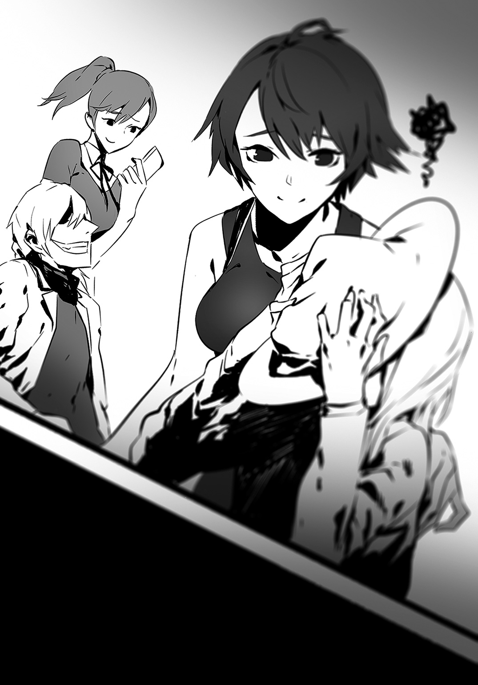
「もう行くの？ 蛍ちゃんだけなら、預かってもいいけど？」
「たぶん、ここにも警察が来るだろうからな。宮間がアジトを用意してくれたし、そっちに移った方がいい」
蛍の姿は大勢の子供たちが見ている。学校で話題にしたら、きっとなんらかの形で威竜が知ることになると黒野は思った。
「モカも一緒に行ってもいいぞ？ クロノの役に立つんだ」
「大丈夫だよ。おまえには教会の仕事があるし。けど、何かあったら、その時は頼む」
「おう。わかったんだ」
「気をつけてね。アジトについたら、ちゃんと連絡しなさいよ？」
「ああ。けど、その前に『羊屋』に寄ろうと思う」
羊屋とは、黒野が贔屓にしている道具屋だ。威竜や警察、そしてホロが絡んでいるのであれば、黒野たちも対抗手段を用意した方がいいだろう。自宅に寄ることもできず、何度も外出したくもないので、寄っていきたいところだ。
「なぁ、おまえ、指名手配されてんだろ？ どうやって移動するんだ？ おまえみたいなガチの犯罪者とは、一緒に行動したくねぇんすケド？」
狼真が愚痴ると、黒野は得意げな表情を浮かべる。
「姉ちゃん、頼んだモノは？」
「用意できてるよ」
黒野たちが、正面玄関を出ると、そこには二台のネイキッドバイクが用意してあった。
指名手配されている以上、人の多いところは歩けない。夜と違い、昼間はこの辺りも賑やかになる。スマホを弄っている人も多く、威竜の目はそこら中に存在する。となると、どうやって移動するのか？ 答えはシンプル。顔を隠していても、怪しまれない状況を作ればいい。顔をフルフェイスヘルメットで覆い隠せば、誰が運転しているのかわからなくなる。
衣澄が、教会のＯＢに言って、ナンバーを調べられても困らないモノを用意させてくれた。蛍は大きめのリュックに入れて黒野が背負う。
「なるほどな。威竜ってのは、こうやってやり過ごすのか」
狼真は、感心したように言った。
黒野と狼真、蛍の三人が向かった先は、昼間でも人が寄りつかないような寂れた路地裏であった。ビルとビルとの間隔がほとんどなく、車もギリギリ入ってこれない薄暗い通路。
黒野はバイクを止めると、蛍をリュックから出してやる。ヘルメットを脱いで、サイドバッグから帽子を取り出し、頭の上に乗せる。狼真もヘルメットを外した。
『一応、念のために変装させた方がいいだろ？』という狼真の提案で、蛍の鼻下には英国貴族の如きカールした髭がつけられていた。加えて、玩具のシルクハットも乗っている。蛍もノリノリだったのか、そのまま行動するようだ。
「正直なところ、途中で逃げ出すと思ってた」
「ケケケ。警察に密告られた時のために、アジトの場所ぐらい把握しとかねぇとな。いつ裏切られるかわかんねぇしぃ？」
「それは、俺の台詞だ」
事件が解決するまで、対等な関係でいたいらしい。
「むぅ。蛍、もっと教会にいたかったんだよ。友達いっぱいできたのに」
蛍は、鼻髭をびよんびよんと引っ張りながら言った。
「そうだな。落ち着いたら、また、行こうな」
「うん！」
「で、ここがアジトか？」
「違う。羊屋に寄るって言ったろ？」
「ジンギスカンでも食ってくのか？」
「羊屋ってのは――」
言いかけたところで、黒野のポケットから着信音が流れ出した。そういえば、運転していた時も、何度か鳴っていた気がする。黒野は取り出して画面を確認した。
「ちょっと待ってくれよ。っと、宮間からだ」
「ほっとこうぜ。俺、あいつ嫌い」
「そうか。俺は、おまえより宮間との方が仲がいいもんでな」
「ちぇ」と、面白くなさそうに狼真が不貞腐れる。
蛍が「大丈夫。蛍がろうまと仲良くしてあげるんだよ」と、慰めていた。
「――もしもし。俺だ」
『っと。黒野さん。お疲れ様です』
「どうした？ 何かあったのか？」
『さっき姉さんに電話したんですけど、狼真のこと聞きましたよ。事件のことも。だいぶ、焦臭くなってきたじゃないですか。それで、羊屋寄るってのも聞いたもので、俺もスケイルに何か都合してもらおうかなと。今、どこにいるんすか？ ほら、俺、スケイルに嫌われてるじゃないですか』
宮間も、事情を聞いて物騒なことになってきたと思ったらしい。
買い物をするなら、一緒にと考えていたようだが――生憎と黒野がいるのは店の前だ。
「もう、到着したよ」
『げ。じゃあ、店の前で待っていてくださいよ！』
気持ちはわかるが、蛍もいるし、用事はなるべく早く済ませてアジトに移動したい。
「あとからゆっくり来いよ。スケイルには、おまえのコト、ちゃんと話しとくから」
『い、いいっすよ。ホント、すぐ行きますから！ つか、向かってます！』
「はは。先に入ってる」
言って、黒野は通話を切った。
「あいつ、来るの？」
「あとからな。待つ必要はないよ。買い物を済ませておこう」
黒野たちの前には小さなビル。狭い玄関の正面にはエレベーターがあるだけ。人の気配などまったくなかった。廃墟といっても差し支えがないだろう。エレベーターに入ると、黒野はボタンを、一、二、四、五、六、四の順番に押していく。点灯もせず、まるで壊れているかのようであったが――やがて扉が自然に閉まる。すると、ボタンにはない階下へと降りていった。チンという古めかしい音が鳴る。扉が開くと、そこにはロールプレイングゲームの道具屋のような空間が広がっていた。
木造感を演出する壁紙。陳列台には、真っ青な液体の入ったフラスコや、毒々しい薬草。煌びやかな装飾を施したナイフなどが並べられている。値札はあるが、金額は書かれていない。天井からぶら下がっている裸電球が、店内を幻想的に照らしていた。
店主のいないレジカウンターで、黒野はベルを摘んでチリンと鳴らす。
「趣味は悪くねぇな」
陳列されている商品を眺めながら、狼真は感心するかのように言った。
「ゲームの世界みたいなんだよ！」と、蛍も興奮している。
やがて、カーテンを潜るようにして、羊顔の店主が、ゆっくりとした足取りで現れた。羊のような顔ではない。羊の顔である。真っ黒な肌に、やや伸びた鼻。眠たげな瞳。頭部は、白髪のパーマに見えなくもないが、羊毛と表現する方が相応しいだろう。人間のような五本指は、枯れ木のように瘦せ細っている。鼻の上には、小さな丸眼鏡がちょこんと乗っていた。
「めぇめぇ。これはこれは、黒野さん。いらっしゃるんじゃないかと思ってました」
声の調子は、ややくたびれた女性といった感じだ。ホロなのだろうが、彼女のような亜人は滅多に見られない。非常に特殊な種族だと思われる。
蛍は、あんぐりと口を開いて、驚きの表情を浮かべていた。
「しゃ......しゃべる羊さんだぁ！ かか、かっこいいんだよ！ サインが欲しいんだよ！」
「めぇめぇ。かわいらしいお嬢さんですなぁ。嬉しいことを言ってくださる」
「......いくらホロでも、ここまでキモイのは見たことねぇぞ......。ってか、人間でありながら、人間ならざる者が、ホロの定義だ。羊でありながら、羊ならざるものとくればタダのバケモノじゃねえか！ ケケケ。被り物の下はどんな面してんだ？」
蛍の感想とは対照的に、殺されてもおかしくはない無礼な発言をする狼真。
しかも彼女の髪を剝ぎ取ろうと、カウンター越しに腕を伸ばす。見かねた黒野は、狼真の喉元へ、チョップを滑り込ませる。結構本気でやった。深々とめり込んだそれは、彼の呼吸を一時的に停止させる。「グァ、ゴフッ、ノフッ」と、無礼者が床を転げ回った。
「ろうま。ホロにはバケモノって言っちゃ駄目だって、テレビで言ってたんだよ？」
狼真の相手は、お子様に任せておくことにした。
「スケイル。騒がしくしてすまないな。実は――」
「事情は知っておりますよ。ニュースを見ました。ネットも騒いでおりますなぁ。クロノスが、ロリコンギャングと揶揄されております。まあ、私も、クロノスの端くれですからね。反論を書きこんでおきました。『ロリコンなのは、クロノスじゃねえ、黒野だ』とね」
「どーも」と、黒野は苦く笑って、話を続ける。
「あっちの馬鹿は狼真。あの子は、噂の小学生だ。生まれてからずっと威竜に監禁されていたみたいでさ。外に出たことがないらしい」
「めぇぇ......それは、不憫な......」
スケイルとの出会いは一年前。彼女が町へやって来たばかりのころ、チンピラに絡まれていたのを黒野が助けた。その後、仲良くなって、店の開店準備を手伝ったり、客を紹介したりと世話を焼いているうちに、気に入られていた。
「ここへ来た理由は......いつものヤツですかな？」
「家へ戻るわけにはいかないからな。少しでいいから都合してもらえないか？」
「ええ。三粒だけですが、ニュースを見て、急遽用意させていただきました」
カウンターの下から、ポケットサイズのプラスチックケースを取り出した。受け取って、中身を確認する。入っているのは、小指ほどの透明感のある蒼味を帯びたクリスタルだ。不純物などが一切なく、宝石のように輝いている。ぶつかって割れぬよう一つ一つが固定されていた。
「サンキュ。いくらだ？」
「三万円で」
「わかった。けど......持ち合わせがないんだ。ツケで頼めるか？」
「めぇめぇ。黒野さんの頼みなら断れません」
「言っとくが、無職だからじゃないぞ？ 威竜と揉めてるから自宅に帰れないだけだからな」
「わかっておりますよ」
ケースを閉じ、ジャケットの内側へと入れる。
「狼真。おまえも何か都合してもらうか？」
黒野は、生まれたての小鹿のように立ち上がろうとしているゴミ探偵に問いかける。
「がんばるんだよ！ あと少しで立ち上がれるんだよ！」
蛍が一生懸命応援した甲斐もあって、天刀狼真がようやく起き上がった。
「クソギャングが。か弱い市民に暴力振るいやがって」
「おまえが失礼なことをしようとするからだろ」
「そのバケモノとは恋仲か？ 悪趣味にもほどがあるだろ。二人の間に、どんな子供が生まれてくるのかは楽しみだがな」
羊顔ゆえ表情は読み取りにくいが、スケイルもさぞかし不愉快だろう。そもそも、先程から連呼している『バケモノ』という単語は、白瑠璃の禁句なのだ。
「めぇめぇ。彼には、毒薬なんかいかがでしょうか？」
「すまん。本当にすまん！」
黒野は、両手を合わせて、バカの不始末を詫びる。
「つーか、なんだよ、ここは？」
「羊屋でございます。羊は扱っていませんがね」
ホロは数を減らし、現代では稀有な存在となっている。能力的に優れている彼らが、なぜ、人間との生存競争に敗北したのか？ 原因の一つに『道具』があると考えられている。
人間は、剣や石斧、弓矢や戦車など、道具を開発する術に特化してきた。だが、それだけではホロに敵うまい。ゆえに、古代人はホロに対抗するため、ファンタジックな道具を作りだしたのではないかと言われている。いや、実際、それは存在する。
鞘から抜いたら火炎を帯びる剣。何かに当たるまで勢いが衰えない弓矢。それらの道具は、特殊な能力を持ったホロの皮膚や骨、血液などを使用して作られる。
羊屋では、そんな中二病患者にはたまらない代物を販売していた。
「そういうのがあるってのは知ってたが......取り扱っている店があるとは思わなかったぜ。じゃあ、俺の仕込み杖に雷撃属性を帯びさせてくれ。対話する機能も欲しい。あとは、ピンチになった時の形状変化だ。オシャレな感じでな」
「あと、狼真の目からビームを出せるようにしてあげてほしいんだよ。ブロッコリーが頭からモリモリ生えてくるとかもいいと思うんだよ」
「めぇめぇ。それより、こんなのはどうです？」
彼女は、カウンターの下から、小さなビニール袋に入った赤色の粉末を取り出して見せた。
「新商品でしてね。『ユリウス』というらしいです。一週間ほど前、奇特な方から安価で原料を譲ってもらいました」
その単語を聞いた瞬間、狼真は眉間にシワを寄せた。
「ユリウス......？ 見せろ」
スケイルから、ビニール袋を奪うように受け取ると、狼真はまじまじと眺めた。勝手に開封し、指先に粉を付着させてペロリと舐める。
「お、おい、勝手に商品を――」
黒野が叱ろうとしたが、それを無視して狼真はスケイルに問いかけた。
「羊。コレを持ってきたのは、もしかしてコイツか？」
狼真は、紫苑の映ったスマホの画面をスケイルに見せた。
「めぇ。......どうでしたかなぁ」
「狼真。その粉に心当たりがあるのか？」
狼真は「んあ？」と口にしてから、面倒くさそうに言った。
「心当たりは......ない。けど。名前がちょいと引っかかった」
ユリウスと聞いて、連想したのがユリウス・カエサル。ユリウスはローマの英雄ゆえに、『狼真』と『ローマ』を掛けたのではないかと勘ぐった。狼真が白瑠璃市にやってくるのを見越して、挑発紛いに紫苑が流通させようとしたのではないか。
「たしかに......安く、お譲りいただいた代わりに、安価で大勢に流通させてほしいと言ってましたなぁ......」
紫苑からのメッセージだろうか。正直なところ、考えすぎだと黒野は思った。探偵という職業柄、そんな細かいことまで気にするのだろうか。
「この女が持ってきたんだな？」
「めぇめぇ、どうでしたかな。顧客の情報は教えられませんな」
「答えろよ」
「お断りします。あなたのこと、あまり好きではございませんので」
とぼけるように話を逸らすスケイル。それが気に入らなかったのか、狼真は手を伸ばして、スケイルの胸倉を摑んだ。ぐぃ、と、カウンターのこちら側へと引き寄せ、脅しつけるように顔を近づける。
「おい、狼真！」
「遊びじゃねえんだよ。こっちは真剣に聞いてんだ」
スケイルは「めぇめぇ」と口にしながら、そっと狼真の手首を摑んだ。
「お客さん。先程から、失礼ではございませんか？ こんな見てくれをしてはいますが、家畜ではありません。黒野さんに免じて、今回だけは許しますが......次はございませんので」
スケイルが摑んでいる狼真の腕が、みるみるうちに瘦せ細っていった。肌が土色に変化し、少しずつヒビが走っていく。
彼女の先祖は乾いた大地に住んでいたらしい。口以外からも水分を摂取できるよう進化してきた。泥水からでも、草木からでも水分を補給できる。もちろん、相手が生物であろうとも。
「の、やろッ！」
狼真は腕を振りほどいて、素早く距離をとった。黒野が、とっさに二人の間に割って入る。
「やめろ、狼真。さっきから酷いぞ！」
蛍が、狼真の服の裾を、くいくいと引っ張った。
「ろうま。乱暴は駄目なんだよ」
スケイルが、黒野の肩をトントンと叩く。
「黒野さん。コレを彼に。その程度の乾燥なら、すぐに治りますので」
渡されたのはペットボトル。黒野は、やれやれとキャップを外してやった。
「ほら、狼真。腕を出せ」
「あ？」と、苛立ち交じりに凄む狼真。黒野は、彼の乾いた右腕を摑むと、ペットボトルの水をジャバジャバかける。ミイラ寸前であった彼の腕が、徐々に太さと色を取り戻していった。狼真は、腕の感覚を確かめるように動かす。スケイルを睨んで、彼は質問を変えた。
「ユリウスを売りに来た奴だが......女か？」
スケイルは、眠たそうな瞳で、チラと黒野を見た。狼真はさておき、黒野に気を遣っているようだ。
「女性だったかもしれません」
「蛍の件に、そいつが関係してるかもしれないんだ。詳しく聞かせてもらえないか？」
今度は、黒野が尋ねる。だが、
「めぇめぇ。黒野さんの頼みとはいえども顧客のことを教えることはできませんなぁ」
気難しいスケイルのコトだ。言わないと決めているのなら、絶対に口を割ることはない。縋ったところで、関係を悪くするだけだと思った。逆にいえば、そんな彼女だからこそ、信頼できるのかもしれない。手掛かりを前に歯がゆいが「そうか」と、言うのが精一杯だった。
ただし、それで黙っていられるような狼真ではなかったが。
「人が大勢死んでるんだ。悪党とグルってんなら、町の平和のためにも、ちょいと荒っぽい質問になるのもしょうがねえよなぁ？」
そう言って、狼真は杖を持ち上げて見せた。脅しつけるような瞳でスケイルを睨む。けど、それは彼女も同様だ。敵意を向けられたぐらいで怯むような奴ではない。
「やめとけよ。これ以上は、俺も黙ってない」
さらに、蛍から「めっ、だよ」と、叱られてしまう。
狼真は「あん？」と、苛立ち眼で、黒野たちに視線を配った。すると、興ざめしたかのように態度を緩めて、舌打ちをする。
「......使えねぇ羊だな。お客様は神様って精神を、一度人間の世界から学んでこい」
狼真は、中指を立てると、一人踵を返して羊屋をあとにした。
それを見送ったスケイルは、溜息交じりにつぶやく。
「......お客といいますが、あの方、何も買ってませんけどね」
「すまなかったな、スケイル。今度、埋め合わせをさせてくれ」
「めぇめぇ。悪いのは黒野さんではございませんので」
「......このあと宮間が来ると思うが、腹いせに吹っかけるのは勘弁してやってくれ。責任は俺にあるから」
「宮間さん？ はて？ はて？」
宮間の名前を聞いて、スケイルは首を傾げた。
「どうした？」
「......いえ、なんでもありません。お気をつけて。あの狼真とかいう無礼者によろしく言っておいてください」
スケイルは、恭しくお辞儀をして、黒野と蛍を見送った。蛍は「バイバイなんだよぉ」と手を振った。スケイルも小さく手を振り返していた。
店を出ると、待っていたといわんばかりに、狼真が不満をぶちまけてきた。
「おい、黒野。おまえ、やる気あんのか？ 羊が紫苑のコトをしゃべれば、事件は解決すんだぞ。連絡先を交換してんなら、呼び出してもらえばいい」
ぐい、と、顔を近づけ、脅すように問い詰める狼真。黒野は、飄々とした態度で、
「スケイルは、しゃべらないと決めたらしゃべらないよ。そういう奴だ」
「うむ。ろうまの態度が悪かったんだよ。もっと、媚びた方がよかったのかもなのだ」
蛍は、つけ髭をびょんびょんと引っ張りながら、尊大に語る。
「クロノスのボスが聞いて呆れるぜ。羊一匹飼い慣らすことができねぇんだもんなぁ」
「はいはい。どうせたいしたボスじゃありませんよ。それに、おまえも考えすぎだ。ユリウスを売ったのが、紫苑かどうかわからないだろ。憎しみのせいで、何もかも紫苑の仕業にしようとしてる」
「それを証明したけりゃ、おまえの愛人に真相を問いただして来い。でなきゃ、モカに二股かけてることをバラすぞ」
「スケイルの機嫌を損ねたのはおまえだろ」
「じゃあ、ご機嫌を取りに行くか？ いいぜ。皆でジンギスカンでも食いに行こう」
次はきっとミイラにされてしまうだろう。そんな性格だからこそ、何も教えてもらえないのだ。世の中には、脅しの通じない相手もいる。
店先で、狼真の愚痴につきあっていると、路地の奥に人影が見えた。何気なく視線をやると、倣うようにして狼真も振り返った。そこには宮間の姿。大きなトランクケースを片手に、駆けてくる。それを見た狼真は「げっ」と、もの凄く嫌そうな顔をして一歩後退した。
「よかった。黒野さん。待っててくれたんすね！」
息を切らせながら宮間が到着。どうやら、本当に急いで追いかけてきたらしい。
「おっす、宮間。昨日はお疲れさん。残念なことに、入る前じゃなくて、出てきたところだ。買い物は終わったよ」
「うぇ。ちょっと......俺、スケイル苦手だって言いましたよね？」
個人の自由な慈善活動を推奨するクロノスの中で、宮間は参謀を気取っているせいか、協調性を重んじている。それが、スケイルのような気分屋には合わないらしく、仲間としてはつきあっているが、友人としては上手くいっていない。
「なるべく早くアジトに向かいたかったんだからしょうがないだろ」
黒野は苦笑しながら、ぶつぶつと文句を言う宮間を宥める。
「ちなみに、買い物するなら、覚悟した方がいい。どこかのバカのせいで、スケイルの奴、すっげえ機嫌が悪いから」
「狼真が、何かやったんすか？」
「勝手に羊がキレただけだ。ウールのセーターでも土産に持って、機嫌を取って来いよ。ジャルカッタの犯人を知ってるかもだぜ？ 頼りないボスに代わって聞きだすんだ」
「こいつ、よくスケイルに殺されませんでしたね」
「そうでもない。あと少しで、右腕を持っていかれるところだった。どうする？ 行ってくるか？ 俺たちは、一足先にアジトに向かうが」
「話を聞いたら、行く気も失せましたよ」
ごもっともだ。宮間に八ツ当たりせぬよう頼んだが、それに従うスケイルではあるまい。決して安くは買えないだろう。
蛍が、くいくいと宮間の裾を引っ張った。
「ねぇねぇ。蛍が誰かわかる？」
突然のクエスチョン。しかも、答えを口にしてしまっている。宮間はうろたえながら、
「え？ ええと、そりゃあ、蛍ちゃんでしょ？」
「ふふふ、よくぞ見破ったんだよ！ 正解は......蛍だよ！」
蛍は、踊るようにクルリと回転し、鼻髭をピッと剝がした。そういえば、蛍は変装している気になっているのだった。誰かに試したくて、仕方がなかったらしい。
「......ちょっといいか？」
狼真が、思案顔を浮かべながら声を飛ばした。
「俺からもクエスチョン。そのトランクケースはなんだ？」
宮間の持ってきたトランクケースを訝しげに指差した。
「着替えだよ。アジト移すなら、着替えとか日用品はあった方がいい。考えたらわかることだろ？ 威竜に見張られてるんだ。外出はなるべく控えたいだろ」
狼真は「ふぅん」と、唸って、さらに質問を続ける。
「わかんねえな。おまえ、ここへ来るのに、車を使ったろ？」
バイクなら、そのまま路地に入ってくればいい。そもそもトランクを持ってバイクは運転できない。徒歩で来るのも考えられない。黒野が指名手配されているなら、クロノスの参謀である宮間もマークされていてもおかしくないからだ。ならば、誰かに車を運転させて、やってきたと考えるのが妥当だが、なぜトランクを車内に置いてこなかったのか。
「筋トレのために常日頃から重い物を持ち歩く習性があるのか、あるいはバカなのか、それとも、俺たちにサプライズがあるのか、それともやはりバカなのか。なあ、答えてくれ。子供の頃、刑事コロンボが好きだったせいか、細かいことが気になると夜も眠れねえんだ」
宮間はトランクに、うんざり視線を落とした。
「そうだな。車の中に置いてくればよかった。俺がマヌケだと教えてくれてありがとよ」
皮肉に悪態で応える宮間。しかし、狼真は怪訝な表情のまま、嫌味たらしく続ける。
「もう一つ質問。それ、本当に中身が入ってるのか？ 随分、軽そうに見えたんだが？」
気になるのは結構だが、どうでもいい話題である。宮間をバカにしたいのはわかるが、こんなところで揉めなくてもいいと黒野は思った。
「狼真。細かいことでいちいち突っかかるなよ」
「中身が空だとか言われたら、納得できたんだ。羊屋でデカい買い物するかもしれないしな。けど、着替えなんて答えはナンセンスだ。何が入ってるのか、見せてもらってもいいか？」
黒野と宮間は、ウンザリと顔を見合わせて肩をすくめた。蛍も、真似をしたくなったのか、同じように肩をすくめる。買い物できなかった挙句、小姑みたいな探偵に絡まれたら、宮間もたまったものではないだろう。
「マジ、どうでもいいことっすね。で、黒野さん。これからどうしますか？ 車を用意してありますけど？ トランクの中なら、バイクよか安全っすよ？」
「いいよ。ちゃんと対策はしてるし」
「じゃあ、蛍ちゃんだけでも、俺が連れていきましょうか？ 二ケツじゃコケた時に危ないですからね。警察とカーチェイスするようなシチュはないと思いますけど」
「それもそうだな......」
安全を考えれば、その方がいいかもしれない。
「リュックの中は苦しいけど、できればにぃにと一緒の方がいいんだよ？」
黒野たちが、これからのコトを相談していると、狼真がコッソリとトランクケースに手を伸ばしていた。それに気づいたのか、宮間がすかさず彼の手首を抑える。
「手癖の悪い奴だな？ 勝手に人の荷物に触んじゃねえよ」
「いいじゃねえか。中身を見るだけだ。趣味丸出しのエロ本が入っていても、見なかったことにしてやるから安心しろ」
狼真の腕を、投げるように振り払う。しかし、彼は懲りずに再びトランクケースに手をかけようとする。再度、宮間が手首を摑んだ。ギリギリと圧縮していく。
「俺は、おまえを信用してねぇんだ。何がなんでもトランクの中は見せてもらうぜ？」
くだらないことに時間を使うのもアホらしいと黒野は思った。お子様な狼真を納得させるため、とっとと宮間に折れてもらう。
「宮間。見せてやれよ」
「嫌ですよ。見られて困るような物は入ってませんが、コイツの言うことを聞くのは癪です」
宮間が苛立ちを込めて突き飛ばす。狼真は、よろめくように後退した。
「俺の性格を知らねぇようだな。嫌がってる奴には、とことん意地悪したくなるんだ」
宮間のサングラスの奥から放たれる視線と、狼真のヘラヘラとした視線がぶつかって火花を散らす。すると、宮間は、肺の空気を入れ替えるかのように溜息をついた。
「......もう、いいすよ。穏便に済ませたいと思ってましたけど、バカのせいで台無しだ」
黒野は、子供の喧嘩の仲裁に入る母親の如く、オロオロと二人を見やる。
「お、おい。ガキみたいな理由で喧嘩すんなよ」
「ケケケ。何を穏便に済ませるつもりだったんだ？ そんなにトランクの中身を見られたくなかったのか？ 空だとしても、それを知られて何かマズいことでもあるのか？」
「黙れ、狼真。......黒野さん。先に謝っときます。すいませんでした」
宮間は、寂しげな表情で告げる。
「殴り合いなら、アジトでやれ。蛍もいるし、こんなところで揉めるな」
「いえ。そういうことじゃないんです。事情が変わったんですよ――」
そこまで言うと、宮間は、やや顎を傾け、打ち上げるような声を張り上げた。
「おい、おまえら！」
宮間の咆哮に呼応するかの如く、路地の正面背後から数人の若者がゾロゾロと駆けてくる。ビルの屋上からも特殊部隊の如く飛び降りてきた。軍隊と違うのは、六階の高さだというのにロープを一切使用していないコトだろうか。平然と着地している。人間業とは思えない。
「狼真。トランクの中身が見たいんだろ？」
縦に置いたトランクを、倒すかのように開ける宮間。中には何も入っていなかった。
降りてくる若者たちを見て「おお、かっこいい！」と、感嘆の言葉を漏らす蛍。宮間は、そんな彼女の腕を捕まえると、強引にトランクの中へと押し込んだ。勢いよく閉じる。
「ど、どういうことだ？」
黒野は、困惑した調子で問いかける。トランクがバゴボゴと暴れていた。
「黒野さんのことですから、わかってないんでしょうね。だから、わかるように一言で説明しときます。――すいません。俺、裏切りました」
「う、裏切った？」
おかしなことをやっているのはわかる。だが、相手は宮間だ。家族ともいえる彼が、黒野を裏切るなど考えられなかった。だから、理解が遅れ、ただただ立ち尽くしてしまっていた。
「ボケっとしてんじゃねえよ。黒野」
裏切りという言葉を飲み込めたのか、それとも、状況を見て判断したのか、狼真がいち早く反応した。抜刀し、居合の如く刀を走らせる。宮間は、トランクケースで受け止めた。ガキンと金属音が爆ぜる。
「そんな物騒なモン振り回して、蛍ちゃんが傷ついたらどうするんだぁ？」
「峰打ちだよ。おまえこそ、チビが傷ついたらどうするんだぁ？ 傷ついてもいいってか？ ――黒野、手下の躾がなってねぇぞ」
ギャリと踏み込み、斬撃を繰り出す狼真。宮間は、それらすべてをトランクケースで受け止め、わずかな隙の暇に、間合いをとる。すると、内ポケットに手を突っ込んで、拳銃を抜いた。
銃声が路地を満たした瞬間――狼真の頰に一本の紅い線が引かれる。
狼真の動きがピタリと止まった。
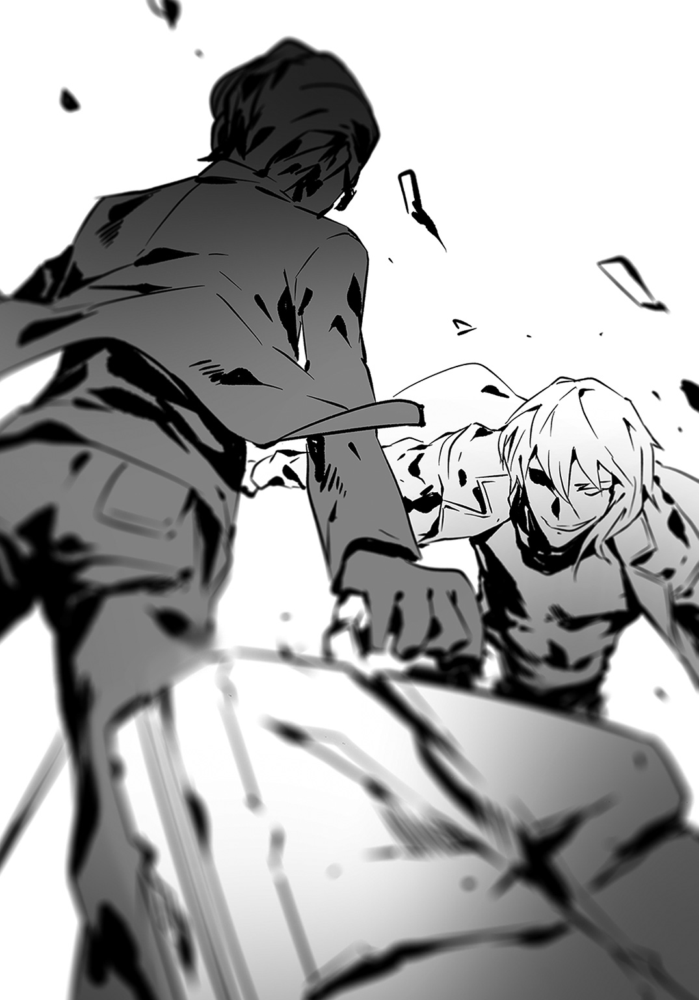
「な、何してんだ......宮間......」
黒野は絶句しながらも、その言葉を必死に絞り出す。
「詳しい事情は、あとで話します。蛍ちゃんは、俺が連れて行きます」
クロノスは正義のギャングだ。宮間が銃を持っているなど知らなかった。ましてや、使うなど夢にも思わなかった。けど、それでようやく黒野も理解する。これは、遊びなどではない。現実なのだと。
「じょ、冗談じゃない。理由を言え！」
裏切った。ああ、彼が自分の口から教えてくれた。宮間は操られているのか？ それとも、仲間を人質に取られているのか？ 昨晩までは、裏切りの兆候すら見られなかった。昨日から今日までの間に、果たしていったい彼の身に何があったというのだろうか。
どちらにしろ、指を咥えて静観しているわけにはいかない。黒野は、内ポケットに手を突っ込んだ。――だが、その時、後頭部を凄まじい衝撃が襲った。
「がッ、ぅ？」
前のめりによろける黒野。視界が溶けるように歪んだ。地面を踏みつけるようにして堪える。何事かと振り返れば、そこには殴りましたといわんばかりに鉄パイプを握りしめているチンピラの姿があった。再度、鉄パイプが振り下ろされる。かろうじて回避するが、それを皮切りに、周囲にいた若者たちが、暴徒の如く一斉に襲いかかってきた。
「くっ！ うおあぁぁッ！」
四方八方から拳や蹴りが放たれ、黒野の肉体をあらゆる角度から滅多打ちにした。肺も、腹も、背中も、顔面も。袋叩きという言葉が見事にあてはまるだろう。
そんな光景を眺めながら、狼真は涼しげな態度で、宮間と言葉を交わしていた。
「ボスがボロクソにやられてんぞ。助けてやった方がいいんじゃねえかぁ？」
「狼真が助けてやったらどうだ？」
抵抗はした。けど、そんな甲斐もなく、気がついたら地面へと、黒野は死にかけの犬みたく横たわっていた。
「見くびってたぜ。おまえのコトは、モブかなんかだと思ってたんだがな。面白いことするじゃねえか。少し、興味が出てきた。トランクの中身を教えてくれたついでに、もう一つ質問に答えてくれ。昨日まで黒野の忠犬だったおまえに、どんな心変わりがあった？ 誰かと会ったのか？ 何を聞かされたんだ？」
「探偵なんだろ？ 自分で考えてみろよ。推理を聞いてやる暇はないがな」
宮間は、トランクケースを片手に踵を返し、路地の向こうへと駆ける。
小さくなっていく彼めがけて、黒野は絞るように声を飛ばした。
「ま、待て............宮間ッ！」
「すみません、黒野さん。蛍ちゃんとは......もう、これっきりです――」
宮間は、ほんのわずかに横顔を見せ、残酷な言葉を残す。
すかさず、狼真が追いかける。小太りなチンピラが反応した。ここは通さないといわんばかりに立ちはだかった。
「ケッ。自殺願望でもあんのか？ 得物が見えねぇのかよッ！」
狼真は足を止めず、刀を横薙ぎ一閃。しかし、チンピラは微動だにせず、斬撃を甘んじて受ける。シャツと腹の肉を、刀身が通過した。『ぐっ』と、痛みを堪えるような声を滲ませる。
狼真は、驚きの表情を浮かべ、足を止めた。斬るつもりなどなかったのだろう。あくまで脅し。刃物を振れば、道を開けると思ったに違いない。黒野だって、そうなると思っていた。
小太りのチンピラが拳を振るう。狼真は困惑しながら回避する。
相手をしているうちに、宮間の姿が消える。路地を出た先で、バタンという扉の開閉音があった。続いて、エンジン音が唸る。ビルとビルの狭い視界を、黒のセダンが通り過ぎていった。
「あ............」
這いつくばっていた黒野は、眺めていることしかできなかった。
連中は、それらを見送った瞬間、目的を達成したかのように態度を弛緩させる。
「俺たちの勝ちだな」
どこにでもあるような車。大都会という条件。一度距離ができれば、捜すのは至難の業だろう。狼真は、それを認めてしまったのか、同じように緊張の糸を緩めると、苦虫を嚙み潰したような表情で視線を一周させた。
「続ける意味はなさそうだ」
狼真は、刀をアスファルトに突き立てると、降参するように小さく両手を挙げた。
「気分はクソッタレだが、俺はギブアップ」
「狼真！ あきらめるな！ 追え！」
黒野は言うが、狼真は動こうとせず、チンピラ相手に淡々と言葉を交錯させる。
「物わかりのいい奴だな。何か企んでるのか？」
「おまえらの目的はチビを誘拐して宮間を逃がすことなんだろ？ ミッションコンプした今、俺たちと戦う理由はねえよな？ 黒野みたいにボコボコにされるのはゴメンだ」
効率的に考えるのなら、それもアリだろう。しかし、それは自己保身を一番に考えた最低の選択である。
「俺たちは続きをやってもいいんだが？」
「俺だって切り札は残してるよ。やる気があるなら相手してやってもいいぜ？」
狼真は頰の傷を拭った。紅く彩られた指先に視線を落とし、手の中で揉むように握りしめると、紅に染まった掌を、見せつけるように突き出した。
「その場合、おまえらが後悔することになるがな」
狼真は自信タップリに言い放つ。チンピラたちは、顔を見合わせた。誰もが適当に頷き、やがて納得したかのように告げる。
「......いいだろう。これ以上、黒野さんに怪我させたくないし、おまえにも恨みがあるわけじゃないからな」
「交渉成立。名誉のために言っとくが、降参したんじゃなくて、降参してやったんだからな」
「狼真ッ。ふざけるな！ 蛍が誘拐されたんだぞ！」
「俺は、あのチビに特別な思い入れはないんだが？ つか、命令すんな、ザコ」
黒野はあきらめない。地面を手繰り寄せるように身体を持ちあげる。だが、背中に靴底を叩きこまれ、再び無様に地面へとへばりつくことになった。
「ゴハッ！」
「無駄な抵抗はやめろ」
それは本来、敵が吐く台詞だ。おまえが言うなと狼真に言いたい。
「ま、賢明な判断だ。――っと、黒野さん。今回の件は、大変失礼しました。すべてが終わったあと、俺たちも宮間さんと一緒にケジメをつけます」
「終わったあとってのは......どういう意味だ......ッ？」
その質問に対しての答えはない。彼は言いたいことだけを告げていく。
「ジャルカッタと蛍ちゃんの件に関しては、宮間さんが引き受けます。複雑な事情があるんですよ。クロノス内で対立が起こらないためにも、手を引いてください」
「宮間に伝えろ。蛍に何かあったら、タダじゃおかないってな......ッ！」
「伝えるだけ伝えておきます。それじゃあ、俺たちはこれで失礼します」
チンピラ連中は、恭しく黒野に一礼すると、次々と踵を返して立ち去っていく。一人だけ残った奴がいた。狼真に腹を斬られた奴だった。平然と狼真に歩み寄り、顔を近づける。
「この服、高かったんだよな」
「あまりにもダサかったから、処分するキッカケを作ってやったんだ。礼はいらねぇよ」
彼は、狼真の胸倉を摑むと、頰めがけて打ち抜くようなパンチをくらわせる。
狼真は勢いよく尻餅をついた。血の滲んだ口元をグイと拭う。口の中も切ったのか、血をペッと吐き捨てた。
「ぐぅ......うぉい！ 降参してやったんだぞ！ こいつぁ不当な暴力だ！」
立ち去るチンピラの方に訴える狼真だが、連中は見向きもしてくれなかった。
「請求書の代わりだ、ゴミクズ」
今度は顔面めがけて靴底が叩きこまれる。狼真は、後頭部を地面へぶつけるようにして倒れた。満足したのか、そいつはようやく仲間たちを追いかけるように走り去って行った。
狭い路地に、負傷者二人が取り残されると、辺りは不気味なほどの静寂に包まれた。
まるで、悪い夢を見ていたかのようだ。宮間が裏切ったこと。蛍が誘拐されたこと。
完膚無きまでに叩きのめされたこと。どれも、幻であってほしかった。
「......ひゃ、はは。......さすがは裏社会のボスだ。凄い活躍だったな。目を疑ったぜ」
天を仰ぎながら、皮肉をぶちまける狼真。そんな彼を見て、黒野は拳を固めた。
「なんで......あきらめた......ッ？」
「連中はホロだ。一、二、三、四、五......六階の屋上から飛び降りて、平然としてたんだぞ？ 俺なら足を捻ってる。刀も通用しなかった。我慢強さに定評のある種族だな」
「一人でも捕まえれば、宮間の行き先を聞きだせたかもしれないッ」
「おまえと違って拷問が苦手なんだ。倒すのも難儀だし、宮間の行き先をゲロさせるのにも、あの我慢強さじゃ一苦労。どうにもならねぇよ。怪我の少ないうちに降参して正解だ」
効率の話などクソくらえだと黒野は思った。今頃、蛍は怯えているに違いない。
宮間が言っていた。『蛍ちゃんとは、これっきりです』と。何を考えているか知らないが、このまま放っておくつもりはない。蛍など、所詮は他人かもしれないが、見殺しにできるハズがない。蛍の身に何かあったら、責任の一端は、ここへ連れてきた黒野にもある。
黒野は、よろめくように立ち上がる。生暖かい液体が、額から流れていることに気づいた。それは耳を通過し、顎の方へ滴ってくる。脱げ落ちていた帽子を拾うと、頭の上に乗せた。
「連中もクロノスか？ おまえのトコには、あの手のホロがいっぱいいるのか？」
「さあな」
黒野はスマホを取り出すと、すぐさまグループチャットを使い、宮間の乗った黒い車の情報を仲間に要求する。なんとか足取りを摑めないものか。
黒野は、ふらふらとバイクに跨った。エンジンをかける。
「追うのか？ やめとけよ。行き先もわからねえんだろ？ そもそも、チビとは昨日会った仲じゃねえか。そこまでする義理もねえだろ」
黒野のグループチャットはクロノスの主要メンバーだけで構成されている。それぞれの部下にも連絡してくれているようだが、それでもせいぜい三百人。町の人口と比較してみれば、微々たる数字である。返信はあるが、役に立ちそうな情報はない。
黒野は「クソッ」と、苛立ちを吐き捨てた。
それならと、黒野は別の手段を考えてみる。
――三百でダメなら、五十万ならどうだ？
「......威竜なら......捜せるかもしれない......」
「仲間を売るのか？ 宮間は、おまえの代わりに預かってくれてるだけかも」
それなら、打ち明けてくれてもおかしくない。黒野を袋叩きにするなど、よっぽどの黒い事情があるはずだ。
「捜してもらうだけだ。ケジメは俺がつける。あいつが間違ったことをしようとしてんなら、俺が正してやる。協力する気があるなら来い。あきらめるなら、二度とその面を見せるな」
狼真には失望した。蛍が泣いて怯えているかもしれないのに、よくもまあ、そこまで薄情になれるものだと黒野は思った。
黒野はアクセルを思いっきり捻る。クラッチを開放する。
車体が一気に加速し、狭い路地に重低音が鳴り響いた――。
狼真を置き去りにして、黒野は交通量の多い大通りへと抜ける。たくさんの人が往来する歩道で、立体プロジェクターから浮かび上がる半透明の威竜を見つける。ビジネスマン相手に道案内をしている彼女のそばへ横付けすると、黒野は荒々しい声を飛ばした。
「威竜、緊急だ！」
ビジネスマンは、怯んで数歩後退した。幽霊色の威竜がクルリと振り返る。
『おや、黒野さんじゃないですか。今朝のニュースを見て、出頭する気になりましたか？』
「そんなことはどうでもいい！ 蛍が誘拐された！」
物騒な会話であったが、バイクのエンジンや車の走る音に押し潰されて、さほど聞かれてはいないだろう。たとえ聞かれていても構わない。
『そうですね。蛍さんは、あなたに誘拐されていますね』
「違う！ 宮間浩二って男にだ。あいつが蛍をトランクケースに詰めて、車で誘拐した！ 取引だ。車の特徴を教える。その代わり、見つけたら俺にも居場所を教えろ！」
『失礼を承知で言いますが......頭は大丈夫ですか？ 誘拐した少女を誘拐されたから、僕に捜索をお願いする？ 矛盾していると思わないんですか？ しかも、宮間さんは黒野さんの仲間でしょう？ 僕を陥れようとしてます？』
「矛盾はしてる！ けど、蛍の安全が最優先だ。だから、頼んでる！」
蛍が大事なら、犯人である黒野や宮間の処遇など二の次であろう。威竜なら、効率的に物事を考え、何を優先すべきかわかってるはずだ。
彼女は、飄々と涼しげな態度で思案顔を浮かべた。じぃ、と、ボロボロの黒野を見つめる。
『ふむ.....................いいでしょう。わかりました。車の特徴をどうぞ』
「黒いセダンタイプの乗用車だ。宮間の顔は調べられるな？」
『調べるも何も知ってますよ。地元じゃ有名ですからね。......他に情報は？』
「え？ ほ、他......？ お、おまえなら、それだけの情報でも捜せるだろうッ？」
白瑠璃に蔓延るカメラで黒い車を捜し、宮間を見つけるだけである。威竜の力を持ってすればわからないはずがないと、黒野は信じていたのだが――。
『黒い車なんて溢れてますよ。宮間さんが運転してるんですか？ 他に何かありませんか？』
「情報......。ま、待て。今、思い出す」
しかし、黒野が確認できたのはそれぐらいだ。ナンバーも見ることができなかった。
『あ、わかりました。後部座席にスモークフィルムが張られていますね？ 運転手は宮間さんではありません。角刈りの男です。ドアの開閉音は一回でしたから、車のトランクは使ってませんね。宮間さんはトランクケースと一緒に後部座席へ乗りこんだのでしょう』
「へ？ どうして......」
『別の僕が、狼真さんという方から教えてもらってます。彼、黒野さんの知り合いだったんですね。近辺の該当する車を片っ端から調べてみましょう』
黒野は驚いていた。完全にあきらめているものと思っていた狼真が、こういう形で協力してくれるとは思わなかった。しかも、黒野以上に観察していたらしい。
『見つけました。黒いセダン。角刈りの男が運転しています。後部座席にも男が座っていますね。顔は見えませんが、宮間さんである可能性は高いのではないでしょうか？ トランクケースっぽい物もわずかに見えます。他に該当する車は見当たりません。あとは、お任せください。ご協力ありがとうございました』
「ま、待て！ 居場所を教える約束だろうッ？」
『はい。約束どおり教えてあげます。確保したあとにね』
「それじゃあ意味がない！ 今は、蛍の安全が最優先だろうが！ 宮間が蛍を人質に取ったらどうするんだよ！ 蛍はおまえのコトを嫌ってる。けど、俺は信頼されてるんだ！ 宮間だって、きっと自分の意志でやってるわけじゃない。俺の言葉になら耳を貸す！ 俺が、絶対に役に立つハズだ！」
☆
車の後部座席。宮間は、オールバッグの髪を解き、センスのないキャップを被って、うつむいていた。
――黒野は兄のような存在だった。ボスとしても尊敬している。お人好しぶりも好きだ。けど、仕方がなかった。宮間は『あの人』から、姫川蛍の秘密を聞いてしまった。蛍の存在は、白瑠璃の未来を変えてしまう。
これが終わった時、黒野は失望すると思う。宮間は軽蔑されるだろう。絶縁だってあり得る。家族ともいえる黒野に、それを宣告されるのは、全人類から見放されるよりもつらいことだった。けど、覚悟はしてきた。世界から蔑まれる心の準備はできている。
羊屋から南へ進み、街並みを従えるように伸びるハイウェイへ。道は広く三車線。この先は白瑠璃の経済を担う工業地帯。さらに南下すれば港へ到着する。都市部から離れるほど、威竜の存在は薄まる。港までたどり着けばこっちのものだが――。
「宮間さん。混んでますね」
「......ちっ。なんで平日の昼間っから渋滞してんだよ」
緩やかに進んではいるのだが、思っていたよりも交通量が多かった。
「イベントでもあったか？」
「何もなかったと思いますけど......どうします？ 次のインターで降りましょうか？」
黒野が指名手配されている以上、右腕である宮間もマークされていると思った。だから、車に乗ってからは、なるべく下を向いていた。『誰か』が乗っているとわかっても、それが宮間とはわからないと思う。けど――。
「町中を移動するのは、できれば避けたいが......」
宮間はスマホで渋滞情報を確認した。しかし、どこにも渋滞理由が書かれていない。
「あれ？ やっぱ、イベントっすかね？ 次のインターで降りていきますよ」
そこで、多くの車がいなくなり、道路がスッキリとした。角刈りの運転手は、道なりに高速道路を進み、アクセルを踏んでやや速度を上げる。
「なんだったんですかね」
「......嫌な予感がするな」
宮間はスマホのグループチャットを使って、仲間に連絡を入れる。いざというときのための護衛として、二台ほど仲間の車を追走させてある。それらに先行させ、先の様子を見てくるよう命令した。
「嫌な予感ってなんすか？」
「バックミラーを見てみろ」
インターを過ぎた辺りから、宮間は集団の先頭へと躍り出るように走行している。後続の車がついてこなかった。前を走っていたはずの車も左車線へと避け、速度を落としている。ほんのわずかに感じる意図的な動き。宮間は警戒せずにはいられなかった。
しばらく走っていると、先行させた仲間から通話で連絡が入った。
「どうした？」
『この先で、警察が待ち伏せしています！』
「待ち伏せ？」
先行していた二台が速度を緩めていた。その数百メートル先には、四台のパトカーが側面を向けるようにしてバリケードを構築している。それらを盾に、十数人の警官が拳銃を構えていた。狙っているのは宮間たちか？
威竜に見られていたとは思わない。ならば、黒野が威竜に密告したのだろうか？ 指名手配されている身分で、そんな危険を冒すか？ ああ、黒野の性格ならありえる。他人のために、意地もプライドも捨てられる人だ。だが、どうやって車を割り出した？ 宮間は、特徴のない車を選んだ。ナンバーも見られていないはずだ。
威竜が敵に回ったとなれば、渋滞も頷ける。すべての車とは言わないが、カーナビに威竜がインストールされていることは珍しくない。スマホからだって語りかけることはできる。民間人のドライバーの中から、仕事のできる奴を何十人か選んで協力してもらう。威竜の指示に従わせながら作為的に渋滞を起こした。インターを過ぎてからも、そういう民間人の協力者が、宮間だけを先に行かせ、なおかつ威竜を所持していないドライバーを含めて減速させるようコントロールした。時間を稼ぎ、警察を配備した上で、宮間たちを孤立させたのだ。おそらく。
『宮間さん。どうしますか？』
偶然、この場で別の事件が起こったとは思えない。よしんばそうだとしても、車を止められたらお仕舞いだ。バレたと割り切った方がいい。
ならばと、宮間は奥歯を嚙み、苦渋の決断をする。
「突っ込ませろ。二台ともな」
電話の向こうの相手は『わかりました』と、迷うことなく了承してくれた。
先行していた車が速度を上げる。ブレーキという概念を消失させたそれらは、並ぶパトカーへと、なんの躊躇いもなく突っ込む。お互いの車両がへこみ、けたたましい衝突音が響き渡った。わずかに、抉じ開けられた隙間へ、宮間の車が滑り込む。砕けたガラス片がバラバラとフロントガラスを叩いた。抜けられる。宮間は、そう確信した。が――。
「宮間さん！」
「なっ......よ、避けろッ！」
抜けた先には、数多の白バイが壁を構築するように駐車していた。まるで、宮間がこうするとわかっていたかように。
角刈りはハンドルを切るが、回避するには至らず、乗り手のいない白バイの群れへと突っ込んでしまう。激しく揺れた。運転席のエアバッグがドムンと膨れ上がる。強引に推し進めようとするが、二百から三百キロはある障害物が、フロントに引っかかっている。もたもたしているうちに、隠れていた警察官がゾロゾロと現れ、タイヤに向けて拳銃を発砲。四輪すべてを打ち抜いて、パンクさせられてしまう。
「クソが。降りるぞ」
「れ、連中、ピストル持ってますよっ？」
「俺たちはホロになったんだ。あんなの『痛いだけ』だろ？」
宮間は、トランクケースを持って車を降りる。角刈りも、エアバッグを押しのけるようにして、外へ。パトカーに突っ込ませた仲間たちも、次々に車から降りてくる。
警察官は、各々の拳銃を彼らに向け、脅迫めいた警告を送った。
「動くな！ 両手を挙げろ！」
誰も反応しなかった。宮間たちは、ただただ冷めた表情を警官たちに向ける。仲間は九人。警察側は三十人といったところか。宮間は自虐的に笑うと、静かにつぶやいた。
「日本の警察も物騒になったな。いや、白瑠璃市だからか」
張り詰めた空気の中、誰かが言った。
「......宮間さん。命令してくださいよ。俺ら全員、腹は括ってます」
宮間たちは幾度となく、公務員や企業の汚職、隠蔽を暴き、悪党をバイオレンスなやり方で潰してきた。正しいことだと思っていたし、少なからず支持も受けていた。威竜や警察も、そんなクロノスを便利だと思っていたからこそ、本格的に取り締まらなかったのだろう。けど、今回だけは別だ。どんな大義名分を掲げようとも、許されるとは思わない。
「そうだな。今更、お家に帰りたいなんて言い出す奴は、とっくに俺のダチをやめちまってるもんな。......いいぜ。大悪党、上等だ。やれ！」
宮間の言葉が合図となって、仲間たちが一斉に襲いかかる。
仲間たちは、ホロの身体能力を駆使して、警察官どもを片っ端から倒していく。相手は所詮『人』だ。感情がある。心臓や頭に弾丸を撃ちこむ度胸はない。公務員が最初に狙うのは足か腕だ。だが、それは仲間たちに痛みしかもたらさない。痛みでは気絶させることはできても、殺すことはできない。宮間たちが『あの人』から受け取った能力は、怪我を自己修復できる。
発砲音が響き渡り、悲鳴があがる。雄々しき叫びも渦巻いていた。
平和な日本とは思えない戦闘が繰り広げられている中、宮間はトランクケースを持って、悠々とパトカーへ近づいていった。使えそうな車はそれぐらいだ。
近づけまいと銃が向けられる。しかし、仲間たちがそれを潰す。あるいは身を挺して守ってくれる。銃弾が飛び交う中、宮間は世間話をするかのように、落ち着いて言葉を残す。
「足止めしたら、頃合いを見て逃げろ」
「了解っす」
宮間が運転席のドアを開ける。
乗り込もうとしたところで、都心方面からエンジン音が近づいてくることに気づいた。
ふと、宮間は意識をやった。
『それ』が視界に飛び込んできた瞬間、宮間の動きは止まって、唇から言葉が零れ落ちる。
「な......そんなバカな......」
「宮間ぁッ！」
闘牛のように猛進する一台のバイク。跨っているのは、叩きのめしたはずの黒野だった。強風から守るように帽子を押さえ、射殺すような視線を宮間に向けていた。車や人などの障害物をひゅると抜ける。二人の距離が一瞬にして縮む。近づいてきたその刹那、黒野は勢いよくバイクから飛び出した。宮間へと抱きつくようにぶつかる。受け止めきれず、無機質な路面を、二人は回転草の如く豪快に転がっていった。
時速百キロ以上出ていたのではないか。もちろん、ぶつかる寸前にはブレーキをかけていたかもしれない。それでも覚悟なくできるスタントではなかった。
それほどまでに、彼の執念は強靭だったのだろうか。ああ、強靭だったのだろう。
黒野の精神は、宮間が一番知っている。もっとも近くで、彼の活躍を見てきたのだから。
☆
黒野は、宮間にしがみついたまま、天地もわからぬ状態で、派手に転がった。頭から爪先まで、酷い痛みを訴えてくる。回転が止まると、それぞれが地面へ、くたびれたかのように横たわる。トランクケースは、カーリングのストーンのようにアスファルトを滑っていった。
肩で息をしながら、黒野弥人は生まれたての小鹿のように立ち上がる。
宮間も、最終ラウンドでダウンをもらったボクサーの如く、ふらふらと起き上がった。
「クソッ、なんで追いかけてきたんすかッ！」
「......おまえは、こんなことをする奴じゃねえ。ダチを人質に取られてんのか？ 弱みを握られてんのか？」
「は？ ......は、はは。なんすかそれ。お人好しにもほどがありますよ」
宮間は私利私欲のために行動する男ではない。薙原教会で共に育った家族だ。組織内で意見が食い違った時も、トコトン喧嘩につきあってくれた。裏切ることなど、一度としてなかった。警察相手に、これほどまで大仰な喧嘩をやるタイプでもなかった。
「おまえが『やらされている』のなら、助けてやる」
宮間の裏には誰かいるのか？ 威竜か？ クロノスを守るために、蛍を差し出すつもりだったのか？ いや、それなら威竜は、黒野をここへ誘導しないだろう。
宮間は、衣服の埃を軽く払うと、背後にいる仲間たちに問いかけた。
「......何人残ってる？」
「三人です。他は、気を失っちまいました。けど、警察は全部倒しましたよ」
「思ったよりも減ったな」
「警官の中にホロが混ざってたんですよ。ショボい電気使いが」
「そうか。......黒野さんを囲め。とっとと終わらせる」
三人の若者が、黒野を眺めながら、包囲するよう、緩やかに動いた。
連中の手には拳銃やサバイバルナイフ。使命感に彩られた顔つきをしている。国家権力と喧嘩をするぐらいだ。生半可な覚悟ではないだろう。
――だが、羊屋に寄っていたのが幸いした。
黒野は、内ポケットに手を差し込んだ。取り出したのはプラスチックケースである。
「やめてくださいよ。あんたがそれを使ったら、俺たちも本気でやらなくちゃならなくなる」
黒野は、淡々とケースを開いた。小さく綺麗な蒼いクリスタルを一粒取り出し、カリと歯で咥える。ケースを片付けながら、やや顎を傾けて舌に乗せた。奥歯まで運び、バギと嚙み砕く。薬のような甘味と苦味が、口の中に広がっていく。
「おまえらの事情はわからないけど、俺だって中途半端な気持ちで幼女誘拐なんてしてないんだ。蛍とは縁もゆかりもないが、見て見ぬフリができるほど、精神的にタフじゃないんだよ」
砕かれた蒼き結晶が、喉の奥へと吸い込まれる。胃から、喉から、舌から、蒼きクリスタルの成分が、細胞へと染みわたっていく。全身が透き通るように、冷たくなった。
「宮間さん。もしかして、今のが......？」
「スパシオンだ。厄介だぞ」
――ブラッグ・スパシオン。
ブラッグとは、血液と薬の二つの言葉をかけあわせた造語だ。ブラッディドラッグ――略してブラッグ。一部のホロからだけではあるが、その血液を人間が摂取することによって、一時的に能力を自分のものにすることができる。副作用として嘔吐や発熱、場合によっては精神や肉体が崩壊する恐れがある。それをスケイルが、人間が使っても問題ないレベルにまで、上手く加工、調合し、商品にした。
「手加減はするな。丸腰とも思うな。本気でやれ」
「わかりました」
スパシオンの効果が現れる。黒々とした黒野の瞳が、湖のように透明度を増し――。
やがて、海のように蒼く彩られ、模様が浮かび上がる。
――ここからの黒野は、自分を操ることになる。
スパシオンの効果は『超感覚』だ。視覚、味覚、触覚、聴覚、嗅覚などの五感に加えて、集中力や判断力といった、脳に関する能力を限界まで引き上げる。
例えば『わかりました』という台詞を吐いた青年が、トリガーを引こうとしている。結構な距離だが、指先のわずかな動きまでも見えている。あと一秒程で発砲するだろう。
もう一人、銃を持った奴がいる。そいつは『黒野が動いたタイミング』を狙って、発砲しようとしていた。指と眼球の動き、息づかいなどで予測できる。
ナイフを持った一人は、ヘラヘラと余裕ぶっているようだが、油断しているわけではなさそうだ。ナイフを握った手には力が込められていた。
ここまでの分析に要した時間は〇・一秒ぐらいだろうか。これは、時の流れがゆっくりになっているわけではない。黒野の感覚が研ぎ澄まされ、刹那を十分な時間だと感じられるようになっているだけだ。
これだけの『観察する時間』と『考えられる余裕』があると、どうなるか。
――人間はバケモノになれる。
足めがけて弾丸が放たれる。回避する黒野。別方向からも発砲。弾丸がジャケットをかすめた。銃を持っている男に接近。弾丸が乱れ飛ぶが、怖くはない。射撃軸は銃口の向きから把握できる。タイミングは指先を見ていればバレバレだ。見えない位置であろうと、車のミラーや窓ガラス、連中の瞳に反射して、すべて映っている。
間合いに入るや否や、水月に拳を深々とめり込ませる。
「ハッ、ガッ――」
苦悶の表情で男が蹲る。手から零れ落ちた銃を、車の下へと滑り込ませるように蹴飛ばしてやった。ナイフを持っていた奴が襲いかかってきた。黒野は、ギリギリまで引きつけてから回避。相手は大きく体勢を崩す。顎先に鋭いジャブをくらわせ、脳を揺さぶる。
倒れゆくそいつの瞳を見ると、背後から銃で狙っている敵の姿が映っていた。
すかさず踵を返し、二発の弾丸を回避。同時に駆ける。さらに放たれる弾丸。黒野は、鋭角的な軌道で、跳ねるように避けながら、一気に間合いへ飛び込んだ。相手は得物を放棄し、摑みかかってくる。黒野はあえて受け入れた。右腕を差し出すと、袖を摑まれた。もう片方の腕で殴りかかってくる。黒野は、摑まれている腕を冷静にグルリと回す。瞬間、男の身体が半月を描くかのように宙を舞う。豪快に背中から叩きつけた。男は、呻きながら、のたうち回る。
スパシオンは『技術』と『対応力』を特化させる。相手の動きと力に合わせて、反応し、予測し、制圧する。合気道に近いが、雑で荒々しい。だが、それに超感覚が加わると、途端に驚異的な武術となる。超反応が、黒野を達人レベルにまで昇華させる。
「......さてと。おまえもやるのか？」
のたうち回る連中を眺めた後、黒野の双眸が宮間を捉えた。
「俺は......黒野さんと、やりたくないっすね。蛍ちゃんさえ渡してくれたら、それでいいんすけど......ま、無理な話なんでしょうね」
宮間があきらめていないというのは理解できた。瞳が、そう語っている。
「言えない理由があるんだな？」
「はい。最低なことをしようとしてます。軽蔑されるようなね。操られてるわけじゃないし、人質を取られてるわけでもない。けど、やるべきだと信じているからやってるんです」
クロノスは個々の正義を尊重する。世のため人のために、自分が正しいと思うことをする。そういう正義の集合体だ。協力もするが、主義主張が異なれば対立だってある。まあ、宮間とだけは、ぶつかると思っていなかったが。
「気がついたら病院のベッドの上に寝てるかも。俺じゃなくておまえがな」
「黒野さんの強さは知ってますよ。だから、殺す気でやりますけど、死なないでくださいね」
宮間は、転がっていた白バイを摑んだ。すると、発砲スチロールか何かを持ちあげるように、高々と掲げたではないか。
「なっ――？」
黒野は、困惑色の一文字を零した。人間が、片手でバイクを持ちあげるなどありえない。
宮間は人間のハズだ。教会で一緒に暮らしてきた。ホロであることを隠し通せるわけがない。隠す理由もない。だが、瞳にはホロ特有の模様が浮かび上がっている。普段の生活や、多少の能力を使ったぐらいではなんともないが、能力を色濃く発動する時――ホロの多くは瞳に変化が現れる。
バイクが投げつけられる。黒野は跳躍。それを踏みつけるようにやり過ごして接近。宮間はさらにもう一台バイクを摑むと、鈍器の如くスイングする。ぶつかる直前、黒野はベクトルの向かう方へと飛んで、威力を殺す。刹那、パーツを摑んでコバンザメのようにバイクへ取りついた。ならばと、バイクごと叩きつけようとする宮間。黒野は、翻るように離れた。バイクがアスファルトを砕く。黒野が着地したタイミングで、バイクが投げつけられた。黒野は、伏せるようにしてそれを回避。
「くらったら、俺、死んじゃうじゃん」
「これぐらいやらないと、あんたを倒せないでしょう？」
宮間は、内ポケットから二丁の拳銃を抜いた。蒼き双眸が、その所作を捉える。黒野は動きを止めた。心を冷たくし、銃口の動きを読み抜く。落ち着き払い一歩進む。放たれる弾丸。身体を斜めに向けて弾丸を回避。さらに、一歩踏み込んで回避。歩くような速さで近づきながら、最小限の動きで弾丸を搔い潜っていく。
やがて、弾倉が空になると、拳銃そのものを投擲してきた。それらを足で蹴飛ばすように払い除けると、宮間が一気に接近。殴りかかってくる。
拳を紙一重で回避し、黒野は襟元を摑んだ。宮間はバケモノの如き力で、強引に振り払おうとする。黒野の『技術』を『怪力』で叩きのめそうとしているのだろう。事実、宮間のパワーなら、黒野に致命の一撃を与えるのは不可能ではない。一歩間違えれば、タダでは済まないというこの状況に、黒野はヒヤリとする。『死』の一文字も頭を通過した。
しかし、そんな強力な力こそ、スパシオンの大好物なのだ。
黒野は、彼の者の力を利用して勢いよく投げる。宮間自身が風車のように回転した。
「なっ！」
「おおおぉぉぅッ！ らッ！」
彼がタフであることを信用して、容赦はしない。勢いを殺すことなく、背中から、路面めがけて全力で叩きつけた。
――結果、アスファルトが砕けるほどの衝撃が宮間を襲う。
「が......あがっ......」
宮間は四肢をピクピクと震わせる。黒野は、見よう見まねの残心をとって、ピタリと動きを止めた。そして、全身を弛緩させるように「ふ......ぅ......」と息を吐く。
黒野の周囲には、数多の警察官の横たわる姿。死んではいないと思いたい。宮間側の連中も転がっている。警察車両もグシャグシャ。穏やかな光景ではなかった。黒野は、暗澹たる気持ちになる。ここまで派手にやってしまえば、宮間は社会的にタダでは済まないだろう。
本来なら、宮間からいろいろ聞きだし、蛍を連れて急いで逃げるべきなのだろうが、これで終わりではなさそうだ。都市部方面の景色を見て、黒野は心を曇らせる。
数多のパトカーが接近していた。それらは、黒野たちのそばで停車する。特型警備車や、輸送車などもあった。警官たちが、車両から続々と降りてくる。
それに気を取られていると、宮間が跳ね起きた。軽くよろめくと、悔しそうな表情を浮かべながら、吐き捨てる。
「ぐ......黒野さん......ッ......俺は、あきらめてないですからッ」
「おまえ、どうなってるんだ？」
もう、驚いてはいない。バケモノのような肉体を持っていることは、戦いの中で十分にわかった。気になるのは方法だ。どうやって、その力を手に入れたのか。後天的にホロ化する奴がいるのは聞いたことがあった。基本的には遺伝だが、映画のゾンビのように感染するか、あるいは儀式を経てバケモノになることもある。
宮間は、黒野の質問を歯牙にもかけず、逃げるようにハイウェイから飛び降りた。高さは十メートル以上ある。けれど、彼に躊躇いはない。
黒野は、睨みつけるように見送る。苛立っている自分がいた。宮間という家族が、何も相談してくれないことに、疎外感を覚えているのかもしれない。
そのうちに、黒野は大勢の警察官に囲まれてしまった。五十人はいるであろうか。拳銃やライフルを構えている。さすがに圧巻であった。倒れていた宮間の部下を次々に拘束していく。
連中の一人が分厚いメカニカルなディスクを放り投げた。それは、クルクルと回転しながらアスファルトを滑る。展開し、ほんのわずかに面積を増やすと、淡い輝きを浮上させた。逆向きのスポットライトから、立体ホログラフィの威竜が浮かび上がってきた。
『いやぁ。お疲れ様です。黒野さん。大活躍でしたね』
相変わらずの不愛想な態度で、黒野の前に立ちはだかる白瑠璃市の市長。
「わざわざ来なくてもよかったのに」
皮肉を込めて、黒野は言った。蛍を助けるまでは協力関係ともいえる間柄だったが、ここから先は別の話。このままでは、蛍を奪われ、黒野は......まあ、誘拐犯として逮捕されてしまうのだろう。武器を持った五十人もの警官を相手に、勝てるとは思っていない。
『あなたを派遣したのは正解だったようですね。時間を稼いでもらえて嬉しいです』
「俺も感謝してる。おかげで、蛍を助けることができた」
黒野は、路面のトランクケースに意識をやった。
『自分が罪人だという自覚はありますよね？ 昨晩、僕の言葉を受け入れてくれたら、蛍さんを危険にさらすこともなかった。若気の至りで、この有様です。パトカーも白バイも決して安くはないんですよ？ 派手にやってくれちゃって......』
「知るかよ。宮間がやったことだ」
『とりあえず、続きは署で伺いましょう。情状酌量を期待したいのなら、おとなしく連行されてくださいね』
指示に従えば、相応の社会的制裁が待っているのだろう。覚悟はしている。
それよりも、蛍のことが気がかりだった。
「蛍はどうなる？」
『どうにもなりません。理由もなく閉じ込めているわけではないんですから』
「じゃあ、その理由を教えてくれ」
『言いたくないです。ただ、通報したのは間違いではありませんでした。僕の推理だと、蛍さんはロクな最期を迎えなかったでしょう』
それは、暗に『死んでいた』と言いたいのだろうか。
『世の中には知らない方がいいこともあるんですよ』
話は平行線。黒野に打開策はない。交渉材料もない。トランクケースを回収したところで、逃げ切れるわけがない。だが、あきらめたくはなかった。黒野弥人が偽善者を貫くなら、無駄な抵抗だとわかっていても、立ち向かう必要があるのではないか。
その時だった。警察官たちがざわつき始める。
「おい、バイクが来てるぞ？」「高速道路は、安全のために封鎖したんじゃ......」
その場にいた誰もが、示し合せたように都市部方面へ視線をやった。向かってくるのは、一台のバイク。それは、道路の遙か向こうから、凄まじい速度で近づいて来ていた。
「あいつは......」
バイクは一気に接近。警察官が、彼に銃を向けつつ「止まれ！」と警告した。しかし、バイクは車両の隙間を抜けて、速度を落とすことなく突っ込んでくる。轢かれてなるものかと、警官たちは慌てて避ける。『彼』は、バイクを放棄して跳躍した。宙でクルリと一回転。靴底と杖をザリザリとアスファルトに擦らせながら着地する。バイクは、慣性の赴くままに、警官たちを慄かせながら、路面を疾走。やがて転倒し、パーツを激しく散らしながら止まった。
現れた彼は、掌の中でクルリと杖を回転させ、肩へと担いだ。
「だ、誰だ？」と、警官たちが口々に疑問を漂わせる。
「ヒャハハ。誘拐された少女を追いかけ、ハイウェイで銃撃戦たぁ、なんともハリウッドな展開じゃねえか。主役が遅れてやってくるのもな」
「狼真......？ た、助けに......来てくれたのか？」
「仲間が困ってるんだ。当然だろ？」
とても嬉しい言葉のはずなのだが、彼が口にすると、なぜか胡散臭く感じた。
『なぜ、彼が......？』
助けに来てくれるとは思わなかった。
しかも、完全な負け戦である。チンピラ相手に降参していた奴とは思えない。
『まあ、いいですケド......今更、なんの意味があるんです？』
「勝算もなく、助けに来ると思うか？ 無理だと思ったら、他人のフリしてとおり過ぎてたところだ」
狼真の着地点には、トランクケースがあった。彼は、それに片足を乗せると、杖から刀身を引き抜き、鞘を捨てる。
「さぁて。ご注目......。おまえら。この中身がどうなってもいいのか？」
「......おい、待て」
待ったをかけたのは黒野だ。さすがに、そのやり方はないだろうと思った。
『あの......狼真さん？ 人質、意味ありますか？ 状況、わかってます？』
「わかってるよ。威竜市長が人の道から外れたことをしようとしてんだろ？ ああ、人じゃねえからいいのか。まあいいや。なんの罪もない少女を拉致監禁してたのは知ってる。脱走したそいつを保護した黒野に、冤罪くらわせてるのも知ってる。市民の税金をソシャゲにジャブジャブ注ぎ込んでることも知ってる」
『だいぶ歪んだ事実ですね？ 黒野さんに吹きこまれたんですか？』
「そんなトコだ。ま、どっちにしろ、こうして人質を取っちまった以上、俺もあとには引けねえ。どうだ？ ここは一つ、取引しようぜ」
『しません』
「チビが大事じゃねえのか？ 死んだら困るんだろ？ 聞く耳持ってくれねぇと、チビ髭危機一髪ゲームをしちゃうぞ？ 試しに一本いっとくか？ 下手すりゃお陀仏。ひゃはは。なんてかわいそうなチビなんだ。涙が出てくるぅ」
切っ先で、コンコンとトランクケースを叩く狼真。警官が、狼狽声を湧かせる。
「なんて恐ろしいことを考えるんだ」「人間じゃない」「考え直せ！」「殺人犯になりたいのか」「いや、あの目を見ろ。すでに十人ぐらい殺している目だ」
黒野の口からも「最低だ」と、無意識に零れていた。
『ふむ。皆さん。彼に銃を向けてください』
威竜が腕を掲げた。その場にあった、数多の銃器が、一斉に狼真へと向けられる。
『僕を甘く見ない方がいいですよ』
威竜の無機質な瞳が狼真を睨む。ＣＰＵでありながら、その視線は氷柱のように冷たく研ぎ澄まされていて、殺意すらも感じられた。
「ったく......じゃあ、こういうのはどうだ？」
狼真は、切っ先を器用に操って、トランクケースの留め金をパチンパチンと外した。
『あてんしょん！ な、何をッ？ やめてください！』
まるで、凶器を突きつけられたかのように威竜がうろたえる。
狼真は、制するかのように掌を向けた。
「動くなよ。俺が足を退けたら、泣き虫蛍ちゃんが飛び出してきちまうぜ？ おうら、これでも俺を殺せるのか？ ほらほら、蜂の巣にしてみろよ」
『......知ってるんですか？ 蛍さんのコトを』
「部屋から出してもらえない、哀れなお姫様だろ？」
『違います！ トランクケースを開けたらどうなるかです！』
「ひゃはは、知らねぇなぁ」
なぜ、威竜は慌てているのだろうか？ 狼真も、こうすることで、狼狽させることができるとわかっていたのか？ 黒野の知らない何かを知っているのか？
『何が望みです？』
威竜は、奥歯を嚙みしめるように要求を問う。
「そうだな......とりあえず、話し合いの場かな。ここじゃあ、大事な話も盗み聞きされちまう。ちゃんとした場所で、いろいろと話をしたい」
『いいでしょう。わかりました。......その足を絶対に動かさないでください』
「さすがは市長。判断が早い。――確認するぜ？ 威竜に人権を無視され、生まれてからずっと部屋に閉じ込められているかわいそうな姫川蛍ちゃん。囚人のように過ごしていた彼女は、昨晩、威竜の隙を見て逃げだしたんだ。それを保護したのが黒野だよな？ けど、拉致監禁が明るみに出るのを恐れた威竜市長は、誘拐事件をでっち上げて、無実な黒野に罪を被せた。間違いねぇな？」
『何が言いたいんですか？』
「確認するぜ？ 蛍は威竜に監禁されていたんだ。それを認めるんだな？」
『......くそっ。......あなた、録音してますね？』
「認めるのか？ 認めないのか？」
『み、認めなかったら......？』
「チビに直接聞くまでだ。この場でな」
いったい、威竜は何を危惧しているのだろうか。ただ、狼真のネゴシエイトは威竜にとって効果的だったようだ。あれほど高慢であった威竜が悔しそうに吐き捨てる。
『う、ぐっ......どうせ話は平行線......わかりましたよ。認めればいいんでしょう！』
狼真はポケットからスマホを取り出して操作する。
「はいよ。約束したかんな？ おっしゃるとおりだ。ぜぇんぶ録音してたぜ。で、昨日知り合ったババアに送信した。近代的なババアで、パソコンも楽々使えるんだ。約束を破ったり、俺らを逮捕したりなんかしたら、今の会話をネットにアップさせる。人権を無視された哀れな蛍ちゃんの存在が明るみに出ちゃうぞ？ 市長様の隠蔽体質もな。ヒャハハハハ――」
――その後は、不思議なほどアッサリとしていた。
黒野は、警察が用意した護送車に乗せられた。運転手と隔離されたバスのような乗り物だ。一番うしろの広い席に、黒野とトランクケースに入った蛍だけが乗っている。狼真は、別の車両に乗せられていた。お互い、犯罪者という立場ではなく、客としてだ。
蛍を出してやりたいのはヤマヤマなのだが、それは威竜の話を聞いてからというのが条件であった。黒野は「もう少しだけ、我慢してくれな」と、トランクケースに語りかける。
正面にある大型ディスプレイに威竜が映った。
『黒野さん、お互い、いろいろと大変でしたねぇ』
皮肉にも感じられる挨拶に、黒野は「そうだな」と、そっけなく返す。
「言いたいことがあるなら、早く言ってくれ。蛍を出してやりたい」
『わかりました。ただし、今から話すことは、あなたにとって酷な話です。聞いて後悔するかもしれませんよ？』
「じゃあ、やめとく。――って、引き下がると思うか？」
『思いませんね。では、お話ししましょう』
会話のジャブを終わらせ、早速とばかりに威竜が本題を告げる。
『姫川蛍さんは、世界を変えるだけの力を持っています』
疑いの眼差しを向ける黒野。『冗談です』という言葉を待っていた。
『噓じゃないですよ。彼女、ホロなんですが、わかりましたか？』
「いや......。......そうなのか？」
『ええ。蛍さんは、フォト・ライミという種族のホロです。女性しか生まれません。他種族との交配でのみ、子を宿すことができます。フォト・ライミの遺伝子は、百パーセント優性なので、生まれてくる子供も、やはり女性になりますね。当然、能力を持ってます』
「その能力ってのは？」
『泣き声で、ホロを殺すことです』
「泣き声で......殺す？」
フォト・ライミの泣き声を聞いたホロは死ぬ。毒の音波とでもいうのだろうか。人間には効かない。同種にも無力。泣き声に混ざるのは、ホロにのみ通用する死の音色であった。人間に効かないのは、人間という種族をメインに子孫を残してきたからだと考えられている。
もし、狼真がトランクケースを開けていたら――その時、蛍が泣きじゃくっていたら、少なくとも、ホロである狼真は死んでいた。転がっていた宮間の仲間もホロなら死んでいた。警官の中にもホロがいたなら死んでいた。威竜が条件を飲んでくれていなければ、大勢の死人が出ていたかもしれない。実のところ、彼女に助けられたということか。
『昨晩、ジャルカッタというバーで事件があったんですが――』
「......知ってる。パパが蛍を誘拐して連れて行ったんだろ？ 死人が出たらしいな」
『それなら話は早いですね。パパさんは蛍さんを売り飛ばす算段だったのでしょう。しかし、取引の際に殺されてしまいました。それを見た蛍さんは号泣してしまい、パパを襲った二人は死亡。店の中にもホロが一人いたようですね。泣き声が届いたのでしょう。もっとも、バーテンは別の方法で、誰かに殺されたようですが』
「パパは、どういう立場だったんだ？」
『彼は、実父ではありません。役割としてパパを演じていただけです』
パパはドライな人物だったらしい。蛍は懐いていたようだが、思い出は特にないそうだ。ゆえに、蛍も悲しみを長くは引きずらなかったのだろう。
『蛍さんの能力は、非常に危険です。だからこそ隔離しておく必要がありました。ましてや子供ですからね。泣いて当然の歳です』
黒野は暗澹たる気分になった。薙原教会に連れていった時、下手をすれば衣澄や狼真。ホロの子供たちを大勢死なせていた。いかに、自分が危ういことをしてしまったのか――。知らなかったとはいえ、黒野は背筋が凍る思いだった。
『聞きたいこともあるでしょうが、続きは市役所で。さ、感動のご対面をどうぞ。運転手さんは人間ですのでご安心を。あと、彼女には、能力のことを伏せておいてください。重すぎる現実と能力です。成長し、精神的にもタフになるまで、内緒にしておきたいのです』
「おまえが、そんな気遣いをできるとは思わなかった」
『これでも市長ですよ？ 市民のことは、ちゃんと考えてます。泣いているでしょうから、到着までに泣き止ませてくださるとありがたいです。あてんしょん。じゃないと、狼真さんと合流した瞬間、殺しちゃいます』
その台詞を最後に、ディスプレイが暗転した。
黒野は、憐憫を込めた瞳でトランクケースに視線を落とした。姫川蛍に罪はないだろう。悪いのはパパ。誘拐しようとした連中。そして、連れ回した黒野かもしれない。
黒野は、トランクケースの留め金を外してやる。パカンと、焼き蛤のように勢いよく開いた。
「うわぁああぁぁあぁあぁぁぁぁあぁぁぁん！」
号泣しながら飛び出す蛍。黒野にとっては、ただの泣き声だった。これが、死を呼ぶなど、到底思えなかった。
「えぅぅえあぅ？ あああぁぁあぁあぁぁぁん、にぃにぃぃぃぃぃ！」
黒野を見つけると、ミサイルのように突っ込んできた。ぐしゃぐしゃになった顔を胸に押しつけてくる。
「どぼなっでるのぉ？ ごごはどごぉ？ ......蛍、どぼなっちゃぶのぉぉ......」
「蛍が、かわいいから誘拐されちゃったんだよ。けど、もう大丈夫だ」
「にゃぁぁあぁぁ......ごわがっだよぉ......ぐらがっだんだよぉぉ」
とにかく蛍の話を聞いてやることにした。怖かったことや暗かったこと、窮屈だったこと。断片的に語る言葉の一つ一つを、咀嚼するように聞いて、優しくポンポンと背中を叩く。
市役所へとたどり着く。この建物の中に、蛍が隔離されていた部屋があるらしい。
蛍は、黒野の胸の中から離れなかった。涙も止まり、だいぶ落ち着いたが、怖い思いが消えないのだろう。黒野は、蛍を抱いたまま護送車から降りる。
黒野と蛍は、二十一階建ての建築物を舐めるように見上げた。
「おっきな建物だねぇ。ここはどこ？」
閉じ込められていたがゆえに、外から見たことがなかったのだろう。
「市役所だよ。蛍が住んでいたところ」
「にゃ！ も、もしかして、また、蛍は部屋の中に戻されちゃうの？」
「わからない。これから威竜と話をするんだ。蛍を部屋から出してあげられないかな、って」
「で、でもでも、パパが言ってたんだよ。威竜君は絶対に出してくれないって。せっかく、お外に出られたのに、にぃにが助けてくれたのに、なんで？ なんでッ？」
「昨日とは違うよ。逃げるんじゃない。話しあうんだ」
騙されていたとはいえ、パパの命と引き換えに脱出できたのだ。彼女にしてみれば、水泡に帰す行動など、納得できないだろう。しかし、昨日からの一連の出来事が、この対談を可能にしたのだ。あの時とは状況が違う。
「駄目だよ。威竜君は駄目なんだよ！」
「にぃにも、威竜は好きじゃない。けど、にぃにもパパも、蛍も......威竜も、いろいろ勘違いをしていたことがあるみたいなんだ。一度、しっかりと話す必要がある。このまま逃げても、あいつはずっと追いかけてくるからな」
「あぅ......そうなの？」
黒野は心苦しかった。蛍を隔離しておく理由は十分にある。黒野が市長だとしたら、どんな決断を下したのだろうか。泣かないように教育してから社会へ解き放つか？ けど、感情に絶対はない。何かの拍子に号泣してしまうこともある。結果、大勢のホロの命を奪ってしまったら。黒野弥人は責任を負えるのだろうか――。
別の車に乗っていた狼真と合流する。
「......ろうまだ。また会えて嬉しいんだよ」
「へーへー。俺も嬉しいよ。感動の再会だな」
市役所の中に入ると、二十代半ばといった感じの女性が迎えてくれた。彼女は『スタッフ』と呼ばれる蛍の世話係らしい。色のない態度と表情で、淡々と誘導してくれる。
内装は実に近代的だった。白を基調とした最先端のビル。待合室も、空港のラウンジと見紛うほどに高級感が溢れていた。電子案内板やテレビ。自由に使えるパソコンなども充実している。待機中の画面には、どれも威竜が映っていた。すれ違う時『お仕事の検索もできますよ』と皮肉を飛ばされる。関係者以外立ち入り禁止の看板と、ガードマンを横目に奥へと進み、ひとけのないところにあるエレベーターへ乗り込んだ。ガラス張りで、白瑠璃の街並みが一望できる。徐々に小さくなっていく景色を見て「おおぉ」と蛍が感動していた。
ドアが開くと、円形状のエントランスが広がっていた。高級ホテルかといわんばかりに、赤色の絨毯が敷き詰められている。正面にはモダンな扉。壁にあるタッチパネルに、スタッフの彼女がパスワードを打ちこみ、音声を認識させる。
「ここは......？」
黒野が尋ねると、スタッフは「この十九階は要人の住まいとなっております」と答えた。
蛍のような、外に出せないホロ。あるいは、保護しなければならない人物。悪いことはしていないが、世間一般には晒したくない人間やホロの住まいだという。
「職員なら誰でも入れるのか？」と、今度は狼真が質問した。
「エントランスまでなら。ここから先は、決められたスタッフしか入ることができません」
扉や壁には分厚い鋼鉄の板が埋められている。床や天井も同様。重火器を使用しても、滅多なことでは突破できないそうだ。扉の向こうには、やはりホテルの如く廊下が伸びていて、数多の部屋が並んでいた。とある部屋の前まで来ると、彼女は足を止めた。扉脇にあるタッチパネルへ、再びパスワードを打ちこんで、開ける。
「ここが蛍さんの部屋です」
真っ白な壁には、蛍が描いたであろう絵や、アニメのポスターが飾られていた。木造調の床には円形の子供用テーブルに座布団。床でも遊べるようになっている。ソファやベッドも完備。四十畳はあるだろうか。大きな窓が一つ。蛍が一人で過ごすには、広過ぎるぐらいだ。
「あぅ......また、この部屋に戻って来ちゃったんだよ......」
「おいおいおいおい」
狼真は蹴飛ばすように靴を脱いで、とりつかれたように部屋へと上がっていく。導かれた先にあるのは、テレビの前に積み上げられている数多のディスクケースであった。
「三毛猫戦隊みけみけみぃのブルーレイディスクじゃねえか。しかも、初回版のパッケージ......じゃあ、特典の記念プレートも？」
「おぅ？ ろうま、詳しいんだね！」
共通の話題があって嬉しいのか、蛍も狼真の方に駆けていく。
彼はキョロキョロと見回し、タンスの上にあった記念プレートとやらを見つけた。手に取って、まじまじと真剣に眺める。
「はぁ......思ったより高級感があるな」
三毛猫戦隊みけみけみぃとは、目下人気爆発中のアニメである。元々は特撮の戦隊物ヒーローだった。三毛猫になぞらえて、黒、茶、白という地味なカラーリングだが、人気アイドルを起用したせいか、子供から中年まで、幅広い層から支持を受けた。視聴率が沸騰し、その後、アニメや漫画になった。
「にゅふふ。いいでしょ？ ママにプレゼントしてもらったんだよ」
「ガキンチョには贅沢だ。ブルーレイセットが、いくらすっか、知ってんのか？」
「蛍は、子供だから、お金のことは気にしなくていいんだよ」
「記念プレート、手に入れ損ねちまったんだよなぁ......。............くれ」
「ダメなんだよ！ これは蛍のなんだよ！」
黒野を置き去りにして、二人だけの世界を構築する狼真と蛍。今度はベッドで何かを見つけたようだ。狼真は、ヒャッハーといわんばかりに駆けていって、ダイブする。
「みけみけブラウンのデフォルメぬいぐるみまであるじゃねえか！ これ、一番くじの一等賞品だぞ？ 家から出られないおまえが、なんでコイツを持ってんだよ」
狼真はベッドに寝転び、楽しそうにぬいぐるみを持ちあげる。
「ふふん。それはパパが手に入れてくれたんだよ」
蛍は鼻息を荒くし、誇らしげに言った。
「あ、でも、それは触っちゃダメなんだよ！ 蛍のお気に入りなんだから！」
「おい、狼真。遊びに来たんじゃないだろ。大事な話をしに......」
「おまえに任せる」
「にぃに、任せるよ！」
二人して、アニメの世界に浸ろうとしているようだが、そうはいかない。黒野は、狼真の首根っこを摑まえて、現実の世界へと引き戻した。
黒野と狼真はコの字型に配置されたソファへと腰掛ける。蛍は、離れたところの座布団の上にちょこんと座らされていた。どうやら、難しい話には参加させないつもりのようだ。蛍はヘッドホンをつけ、タブレット端末でアニメを視聴しているように言われる。黒野たちが威竜と対談している間、スタッフが蛍を見てくれているらしい。彼女は、いかにも管理者といった感じで、蛍とコミュニケーションをとろうとしなかった。
しばらくして、正面の五十インチはあろう大型ディスプレイに、威竜が出現する。
『ようこそ。いらっしゃいました』
「あのさ。黒野。この町に住んでると、こいつの顔、見飽きね？」
「飽きる。けど、慣れる」
威竜は、とてもわざとらしく『コホン』と咳払いをした。
『さて、今回の件は、僕にとって非常に不本意な結果となりました。こんなことなら、黒野さんを誘導しなければよかったです』
「誘導しなくても結果は同じだ。俺が通報した時点で、パトカーがざわつき始めた。あとをつければ、宮間のところまで案内してもらえる。そうやって、俺も現場にたどり着いたワケだしな。それに、黒野がいなかったら、タッチの差で宮間に逃げられてたろ？」
『別の手は考えてありましたよ。......まあ、これ以上引っ搔き回されるのも嫌なので、しっかりと話しあった上で、終わりにしましょうか』
「そうだな。約束だから、録音したデータはババアに消させる。チビのコトも口外しねぇ。もっとも、俺と黒野を納得させた上で、無事家に帰してもらえたらの話だがな」
『納得も何も、蛍さんのコトは十分理解してもらえたと思いますけどね』
理解はした。けど、疑問は多く残っている。これからのコトも話しあわなくてはなるまい。
『質問をどうぞ。単刀直入で結構ですよ。これ以上、隠すことはありませんから』
「だ、そうだ。黒野。言いたいことがあるなら言ってやれ」
それを受けて、黒野はポツリとつぶやいた。
「蛍に......本当の家族はいるのか？」
『はい。両親ともに健在です。父親は行方不明ですが、現在のところ死亡届は出ていません』
「行方不明？」
『まあ、世間で言うロクデナシですね。妻がホロだと受け入れた上で内縁関係を結んだのですが、徐々にホロがネットでも話題になって、嫌気が差したのか、蛍さんとママさんを置いて蒸発しました。言いましたが、蛍さんがパパと呼んでいるのは、うちのスタッフの方ですね』
「ママは？」
『由香里さんという方で、現在は、県外の研究所で働いています。とても芯の強い女性です。女手一つで蛍さんを育てようとしていました。けど、能力のことを気にして、蛍さんを保育園などに預けることができなかったようです。戸籍がなかったせいで、昔は、ロクな仕事につけませんでした。母子家庭の手当ても受け取れません。それゆえ、国に保護を求めてきたのです』
由香里は、己の能力を理解していたゆえ、自らを研究材料として国に売った。条件として、娘である蛍の生活を保証させた。当時、公的にはホロを認めていなかったが、存在自体は国も認識していたようだ。協力的なホロは、国も必要としていた。蛍は、社会から隔離して監視下に置いた。由香里は、生活の場を研究所内に限定し、スタッフ兼モルモットとして生活させている。八、九年前の話だ。
公認される前のホロの生活は、衣澄から聞いたことがある。衣澄は歳を取らぬ種族だ。それゆえ、周囲から不審がられる度に、引っ越してリセットする。持っていた戸籍が通用しなくなると、他人から『買った』そうだ。教会に落ち着いてからは、近所の人に永遠の二十二歳ですと主張し、年齢を偽って、なおかつ必死に化粧をしているように見せかけていた。ホロが公認された時には、すべてを打ち明けて、新しい戸籍をもらったそうだ。
「ふぅん。で、その由香里とかいうシングルマザーは、満足しているのか？」
腕と足を組みながら、狼真が質問する。
『貯金も稼ぎもありませんでしたからね。ホロだとバレるのも恐れていました。まあ、苦肉の策だったのでしょう。自由は失いましたが、実社会で生活するよりはマシだそうです』
贅沢な間取りに最新の家具家電。娯楽製品。部屋を見れば、その厚遇ぶりが窺える。
『蛍さんの立場は妥当ですよ。正義感を振りかざして、随分と勝手なマネをしてくださいましたが、まあ、不問にしましょう。反論がございましたら、代案と一緒にお願いします。アイデアもなく、ただ『かわいそう』なんてのはやめてくださいよ』
黒野は反論できなかった。子供ゆえ、泣くのは当然のこと。白瑠璃に住む他のホロを危険にさらすことになる。『かわいそう』と哀れむのは簡単だ。けれど、なんの解決策もなく、それを口にするのが卑怯なのは、理解できる。
「仕方ねぇな。相棒が黙っちまったから、ここは弁の立つ俺様が物申してやろう」
『はい、どうぞ』
「チビが、危険物扱いされているのは、周囲にホロがいるからだ。んじゃ、ホロのいなさそうな離島にでも送って、田舎暮らしをさせれば解決じゃねえか」
『離島にもホロが住んでいるかもしれません。彼女はよくても、近辺に住むホロの方々を危険にさらすことになりますね』
「いねぇよ。ホロはもれなく白瑠璃に集まってる」
『いますよ。人間に怯えて暮らしていたホロは、人里離れた地に住む傾向にあります。白瑠璃に集まってはいますが、すべてというわけではありません。あなたも市外にいたでしょう？』
「じゃあ、声帯を取っちまうってのはどうだ？ 声を代償に自由の身だ。いっそのこと顔も整形して別人になっちまえ。それで、平穏で普通な生活が送れるぜ？」
『それを幼い蛍さんに強いると？ 僕は嫌ですねぇ』
交互に言葉を飛び交わせる二人を、黒野は視線で追いかける。
「要するに、どうしても手放したくないわけだ。けど、それは気遣っているというよりも、おまえらが、おっかないコトを考えてるからだろ？ ......違うか？」
『おっかないコト、ですか？』
「とぼけるなよ。俺でさえ思いついたんだ。天才僕っ娘市長のマジカル威竜様が思いつかないはずがねぇ。――偉い人たちは、姫川親子を『切り札』にしようとしてんじゃないのか？」
「切り札？ どういう意味だ？」
黒野の疑問が気に入らなかったのか、狼真は軽蔑の眼差しを向けてきた。
「ラノベの主人公並みに鈍い奴だな。考えてみろ。泣き声で死ぬのは、ホロだけなんだぞ？ ママとチビは、対ホロ用の最凶兵器になるんだよ」
蛍の能力は泣き声。しかも対象はホロに限定される。これが、百年も昔なら、自衛手段か暗殺程度にしか使えなかった。しかし、現代は声を『飛ばす』ことができる。メディアや市内放送。ネットからの発信。ラジオなど、否応にも泣き声を聞かせることが可能だ。
姫川親子が威竜と結託すれば、ホロを駆逐できる。パソコンやテレビ、スマホやタブレット、オンラインに繫がっている５４３２４８人の威竜が、蛍の泣き声を強制的にダウンロード。周囲へと聞こえるように大音量で流せば『ホロだけ』を死なせることができる。国際的に普及すれば、世界のホロの数をゼロにすることだって不可能ではない。
「......威竜、い、今の話、本当か？」
困惑気味に、黒野は質問を飛ばした。
『............半分本当で、半分噓です』
ホロを駆逐する計画はない。だが、ホロが革命を起こそうとした時の抑止力として用意しておきたいというのが、威竜の本音らしい。実用化を進めているが、完成はしていない。この研究に関しては『実験が困難』というハードルがある。死なせてもいいホロなど、死刑囚ぐらいしかいないのだから。
「しっかし、随分と口の軽い市長様だな。国家プロジェクトを、俺たちみたいなチンピラにしゃべっちまってもよかったのか？ 最近の若者を舐めるなよ。コンビニのアイスケースに入ったのをＳＮＳで自慢しちまうようなゆとりばかりだぞ」
『突拍子もなさすぎて、信じませんよ。せいぜい、都市伝説になってお仕舞いです。......あなた、そういうコトをするんですか？』
「俺はしねぇよ。するのは黒野の方だ。昨日、誘拐した蛍と一緒にダブルピースで撮影会をやってた。タイトルは『幼女誘拐しちゃいました。ビバ』だったっけな。投稿する前に俺が止めてやったが」
「覚えがない。病院、行ってきた方がいいか？」
「病院よりも職安行ってこい」
ホロへの理解は深まっている。だが、差別はなくなっていない。やがて、ホロが徒党を組み、イニシアチブを取るようなコトがあれば、白瑠璃は大きく変わってしまうだろう。
兵器を抑止力にして、平和を保つ攻めの施策。
平和を唱え、ただひたすら友好の道を模索する施策。
黒野個人の好みはあるが、果たしてそれが正解かというと、また別の話になるのだと思う。
『蛍さんが出られない理由はわかっていただけたと思います。そして、こうするしか手段がないというコトも理解していただけたかと。......で、今度は僕から質問です。黒野さんが、この件に関与しようとする理由はわかります。白瑠璃でも有名な正義バカですからね。けど、狼真さん。あなたはいったい、どういう理由でここにいるのです？』
「物覚えの悪いＣＰＵだな。初めて会った時に言ったろ？ 姉貴を殺しに来たってよ」
『殺人予告ですか？ 通報した方がいいんですかね？』
映像の中で、威竜が掌に受話器を召喚してみせる。耳へ近づけると、狼真は、おどけるように小さく両手を挙げた。
「おっと、冗談だ。姉貴と感動の再会を果たすために来た。名前は天刀紫苑な」
狼真は神妙な顔つきになった。そして、慎重に言葉を紡ぐ。
「......ジャルカッタってバーの事件は知ってるか？」
『もちろん』
「俺も、詳しい話は、黒野から聞いた。昨晩、バーテンの連絡を受けて、仲間が店に行ったらしい。警察が来る前だと思う。そいつの話を聞いたところ、どうやら現場から消えた客がいるらしくてな。情報を合わせると、それが俺の姉貴だっていう結論に至った」
狼真の説明は、多くを省いている。彼自身が店に行ったと口にすれば、容疑者の一人になってしまうからだろう。ハイウェイで助けてもらった借りがあるゆえ、黒野は黙っていた。
「姉貴は無類のホロ好きだ。パパが、蛍を売り飛ばすために連れだしたのなら、取引相手は姉貴の可能性が高い。っていうか間違いないな。間違っていても、それでいい」
狼真は、順を追って、これまでのことを時系列順に語る。
「パパが若い二人に襲われて殺された。で、それを見たチビが号泣。死の声で、そいつらは死亡。店の中にいた客も一人死んだ」
外傷がないことから、蛍の能力によって死亡したことがわかる。しかし、バーテンは喉にナイフが刺さって死んでいた。これは紫苑の仕業だと考えられる。
紫苑にとって、バーテンの存在は不都合だった。殺人事件となれば、警察が関与してしまう。現場にいたパパとの関係を疑われたら、誘拐犯の仲間として威竜にマークされる。それが嫌だったからこそ、紫苑はバーテンを殺すしかなかった。もしくは、最初から殺すつもりだったのかもしれない。
『天刀紫苑さん......ですか。聞いたことがありませんね』
「戸籍上、間違いなく存在するから調べてみろよ。ホロの犯罪者を片っ端から締めあげれば、知っている奴がいるはずだ。奴の本性を知ったら、きっと逮捕する気になる。おっと、言っとくが、俺と姉貴の仲はすこぶる悪いからな。虐められてたから、恨みしかない」
『......ふむ。あちらの事件は、そういうコトになっていましたか。......有益な情報ですね。狼真さんが本当のことを言っていればですけど』
「安心しろ。俺は噓をつくと鼻が伸びるんだ。あとは、おまえの一人人海戦術で姉貴を見つけてくれ。捕まえれば事件は解決だ。抵抗するようなら殺しちまった方がいいぞ。遺族が訴えることは絶対にない。ほらよ、古いが、これが姉貴の顔だ」
狼真は、スマホの画面をディスプレイに向ける。
『僕に捜させたいようですが、見つけても、あなたに情報を教えることはありませんよ。殺すなんて言っている人には特にね。ここからは、僕たちの仕事です。黒野さんも、狼真さんも、民間人ですから。あとは警察に任せてください。――さ、お疲れ様でした。お二人は日常に戻ってくださって結構ですよ』
至極当然のように話を進め、そして終わらせようとする威竜。
――が、まだ解決していないことがある。
「待ってくれ。蛍は......結局......その......このままなのか？」
『というと？』
「ずっと部屋から出られないのかって聞いてるんだ」
『何かアイデアがあります？』
「あ、いや......わかってる。難しいことだってのは。けど、何も改善されないまま、永遠に、こんな生活をさせるのか？」
無茶なことを言っていると、黒野は自覚している。兵器にもなりうる少女を、国が手放すわけがない。それを知ったホロも、姫川親子を放っておくわけがない。外出することで、加害者にも被害者にもなりうるのだ。
『状況を見て、何かしらの変化はあると思います。ただ、現状では、これがベストです』
「蛍の意志は？」
最大の問題は、蛍の気持ちを一切考慮していないという点だ。
『彼女の意志は関係ないです。黒野さんも蛍さんも、考え方が子供なんですよ。諺にもあるでしょう。『木を見て森を見ず』というやつです』
「おまえは、森を見て木を見ていない」
『おっしゃるとおりです。けど、森を見るのは上にいる人たちの仕事です。黒野さんは木を見るのが仕事です。僕は両方を尊重しています。偉い人たちの判断が間違っていないからこそ、協力しています。クロノスのやり方も、嫌いじゃないですから黙認しています』
黒野の言うことに一理あったとしても、威竜は考えを改めないのだろう。
「......じゃあ、最後に一つだけ頼みがある」
『なんでしょう？』
「たまに、遊びに来てもいいか？」
国家レベルのわがままを言っているようなモノだ。幼い少女は、今や白瑠璃市の今後を左右する究極の兵器となりつつあるのだから。
『検討してみます。......これが、最大限の譲歩でしょうね』
現状、蛍との関係は繫いだ。威竜とも話す機会は今後もあるだろう。何もせずにあきらめるのは嫌だ。行動してこそ見えるものがあると、黒野弥人は信じている。
威竜との会話を終え、黒野は蛍の肩をポンポンと叩いた。彼女は、ヘッドフォンを外して立ち上がると、黒野の腰に勢いよく抱きついてきた。
「終わったっ？ 蛍は出られるのっ？」
太陽のような笑顔で、彼女は早速といわんばかりに質問を投げかけてくる。
酷ではあるが、噓をついても仕方のないことなので、黒野は正直に語るしかなかった。
「それが......難しいんだって」
「え！ そ、そんなぁ......。酷いんだよ！ 話が違うんだよ！」
「ご、ごめん。狼真と一緒に、精一杯説得したんだけどさ」
「パパの言っていたことは本当だったんだよ......。威竜君に見つかったら、また部屋に戻されちゃうって。閉じ込められちゃうんだって......」
蛍は、がっくりと肩を落とした。黒野は、膝をつくようにしゃがんで、蛍との目線の高さを同じにする。ポンと頭に手を乗せた。
「本当に、ごめん。これは、蛍一人の問題じゃなかったんだ。ママのこともあるしな。蛍のコトが大好きな人が、いっぱいいるんだ。勝手なことをしたら駄目なんだって」
「じゃ、じゃあ......パパは......？ どうして、蛍を逃がそうとしてくれたの？」
蛍は表情を湿らせる。黒野も、どう答えていいのかわからなかった。
すると、狼真がもっともらしい噓でごまかしてくれた。
「パパは、悪い奴から、チビを助けようとしたんだよ。あの日、部屋には悪い二人組が襲撃に来る予定だった。おまえのパパはその情報をキャッチしたが、威竜は信じてくれなかった。だから、噓をついて、おまえを連れだす必要があったんだ。けど、路地で追いつかれてしまった。パパは、おまえを守るために戦ったんだよ。おまえが生きているのはパパのおかげだ」
しかし、お子様は納得できなかったようだ。
「違うもん！ パパは蛍を部屋から出してくれるつもりだったんだもん！ う、うぅ」
「そ、そうだな。あわよくば、それも考えていたのかもしれないな」
掌を返すように、機嫌を取ろうとする狼真。泣かせたら死ぬのだ。彼も、必死なのだろう。
「パパも、蛍を出してやりたかったんだろうな。けど、威竜とか、ママとか皆で決めなくちゃいけないことだったんだ。突然、蛍がいなくなったら、ママも悲しむだろ？」
「えぅ......そうだけどぉ......パパの話じゃ、ママとも一緒に暮らせるって言ってたし......」
「また、にぃにと狼真が遊びに来てやるからさ。な？」
「俺もかよ」
泣きそうな彼女を宥める。夕方ぐらいまで、黒野たちは蛍と一緒に遊んでいた。一緒に昼ご飯も食べた。楽しく遊んだつもりだが、黒野の心境は複雑だ。蛍が外の世界で暮らすために、何をすればいいのか。努力の仕方すらわからないのが、あまりに歯がゆかった。
悩む黒野とは裏腹に、狼真は楽しんでいた。蛍とアニメ趣味が合うらしい。二人して、黒野をそっちの世界に引きずり込もうとしていた。
やがて、時間となって、スタッフの女性に玄関まで見送られる黒野と狼真。空は焼けた色をしていた。黒野の胸には、なぜかポッカリと穴が開いたような空しさがあった。
「黒野さん。一言よろしいでしょうか？」
スタッフの女性が、恭しく質問する。黒野は空虚な表情で「うん？」と返した。
「クロノスは、公務員や企業による、情報操作、隠蔽などを嫌って、スキャンダルを暴いたりしていましたね？」
「ああ」と、黒野は空返事をした。
「けど、黒野さんたちも、隠蔽や情報操作の恩恵にあずかっていることを忘れないでください。今回の件、お二人は誘拐と公務執行妨害で、逮捕されてもおかしくありませんでした。日常に戻れるのは、威竜市長が計らってくださったからです。隠蔽やコネによる情状酌量が許せないのなら、黒野さんこそ司法に則って罪を償ったらいかがでしょう」
「........................そう、すね」
黒野弥人は、力なく答えた。かといって、刑務所で罪を償うつもりはない。今は、そのことに関して、興味を持てなかったのだと思う。説教されても、結局は悪いと思っていなかった。
彼女は言いたいことを言うと、そっけなく市役所内へ戻っていく。その背中が見えなくなるまで眺めていると、黒野は向き直り、市役所の玄関から、大都会をぼんやりと眺めた。
「終わった、のか......」
何気なく、口から零れた。
「チビの件に関しちゃな。けど、まだ残ってることはあるぜ」
「ああ、宮間な。あと、紫苑も」
できるだけのことはやった。けど、蛍を救うには至らなかった。黒野は、威竜が完全な悪党であることを望んでいたのかもしれない。それなら気分は晴れやかだ。容赦なく戦うことができる。けど、結果はこのザマ。何一つ変わっていない。自分の思慮の浅さも思い知らされた。
そういえば、と、黒野は気になっていたことを尋ねる。
「......おまえ、蛍の能力を知ってたのか？」
「あ？ 知るわけねぇだろ」
「ハイウェイで、トランクケースを開けようとしたろ？ あの駆け引きは、知ってたとしか思えなかった」
しかも『泣き虫蛍』と能力を想起させる言葉で脅している。
「ハッタリだよ。大勢の警察官が銃を構えてた。要人の娘なら、そんな危険な場所に出現させるわけにゃいかねぇだろうと思ったんだ。そしたら、あの能力だ。危うく死んじまうところだったぜ」
理由を聞いても、黒野は納得できなかった。問い詰めなかったのは、のらりくらりと言い逃れをされるとわかっていたからだと思う。ならば、黒野はもう一つの疑問を投げかける。
「なんで、助けに来てくれた？」
メリットなどない。狼真からすれば、縁を切っても困らない協力関係だ。逃げ出さなかっただけでも驚きだが、ましてや助けに来るなど、性格の悪い彼からは考えられない。
「迷惑だったか？ おまえだって迷子のチビを見たら衝動的に誘拐したくなるだろ？ 俺も同じだ。裏社会を仕切るギャングのボスが困っていたら衝動的に助けたくなるんだ。大きな貸しができるしな」
「噓つけ。下手すりゃ蜂の巣にされてたかもしれないんだぞ」
大きな借りはできた。けど、それに見合うような行動ではないと思う。
「あとは......宮間の裏にいる奴が気になったからってのもある」
「裏にいる奴？」
「昨日と今日で、宮間の態度は明らかに違った。誰かにたぶらかされてんじゃねえかってほどにな。で、俺はそいつが紫苑じゃねえかって睨んでる。それなら、追いかける価値はある。確信はなかったが、チビの能力を聞いたら納得だ。ホロ好きの姉貴にゃ、チビの能力は許しがたいからな。だから、宮間の正義感をくすぐり、ホロの未来のため、世界を変える少女を誘拐させた。ってなオチじゃねえかと思ってる。どうすか、宮間は正義感溢れる男でしたか？」
宮間も、クロノスの一員として自分の正義を持っていた。紫苑に蛍の能力のことを知らされたのなら、ああいう行動を起こしても不思議ではない。
「他には......そうだな。威竜と話をしたかった。姉貴が事件に絡んでることを教えてやれば、嫌がらせにもなるからな」
けど、それらに、命をかけるだけの価値はあったのだろうか？
感謝はしている。これからの課題はともかく、現状は、黒野にとって最善なのだろう。
ただ、なにゆえ狼真が、これほど思い切った行動に出られるのか。黒野は、どうにも腑に落ちなかった。そもそも、コイツは本当に真実を語っているのだろうか。
「俺に隠してること、ないか？」
「ねえよ。せっかく助けてやったのに、なんで疑われなくちゃならねんだよ」
これが、衣澄やモカなら納得もできよう。けど、説明を受ければ受けるほど、彼が何かを企んでいるのではないかと疑いたくなる。
「さて、一度ホテルに戻るか。杖を押収されちまったもんで、スペアを取ってこねえとな。アレがないと落ち着かないんだ」
「......一人で行けよ。俺は教会に帰る。報告しなきゃならないことができたからな」
宮間の裏切りは、きっと衣澄やモカにとってもショックだろう。
「俺を野放しにしていいのか？ 容疑者なんだろ？」
黒野弥人は、天刀狼真に感謝している。彼がいなければ、蛍は誘拐されていた。真実を知る機会も失われていた。自己中心的で嫌な奴だが、助けてくれたのは事実だ。少なからず、彼を信用し始めている。完全に、ではないが。
気に入らないのは、歪んだ性格と自己中心的な行動。そして『姉を殺す』という淀んだ使命感だ。彼は間違った人生を歩もうとしている。黒野も同じだ。少し間違えば、闇の深淵で藻搔き苦しむような人生を、送っていたのだと思う。
三章 デスドライブ・ダイブ
狼真と別れ、黒野は薙原教会へと戻ってきた。大きな正面玄関から入ると、残業帰りのサラリーマンのようにくたびれた調子で「ただいま」とつぶやいた。広い教会に声が届くわけもなく、勝手にお邪魔することにしたのだが、奥の方から弾むような声が聞こえてきた。
「クロノの声だ！」
飼い主の帰宅を待ちわびた犬の如く、モカがすっ飛んできた。一糸纏わぬ彼女は、両腕を広げて、黒野の胸へと飛び込んでくる。そう。一糸纏わぬ姿。つまり、全裸だ。......全裸？
「お、おい！」
モカは、黒野にとって兄妹のような存在である。性的な感情を抱くことは『たぶん』ない。ただ、さすがに年頃の女性の裸体は、あまりに刺激が強かった。
クルリと回り込んで、背中へとおぶさるように抱きつくモカ。
「無事でよかったんだ！ 姉ちゃんから聞いたゾ！ 威竜に捕まったんだって？ 帰ってこなかったら、救出作戦を考えなければならないと思っていたんだ！」
そういえばハイウェイで、狼真が録音した音声データを衣澄に送っていた。ある程度、事情の方も知らせていたのだろう。心配をかけてしまった。もっと早く連絡してやればよかったかもしれない。それはともかく、
「服を着ろ！ 服を！」
「これから子供たちと、お風呂に入るところだったんだ。そうだ。クロノも一緒に入ろう！ 背中を流してあげるんだ！」
「お、俺はいいから！ 子供たちを入れてやれ！」
「遠慮するな。この前も一緒に入っただろ？」
「覚えがない！」
「そうか？ ああ。あれは夢の中で一緒だったんだ。まあいいや。入るんだ！」
モカを追いかけてきたのか、子供たちもパタパタと駆けてきた。全裸の大行進だ。
「あ！ 黒野兄ちゃんがエロいことしてる！」「変態だ」「学校じゃロリコンって噂されてたのに！」「違うよ。狼真が言ってたじゃん。『俺に惚れてる』って」「ホモモだよね？」
この二日間で、黒野の趣味嗜好は、滅茶苦茶な形で知れ渡ってしまっているようだ。要素を並べてみると、圧巻であった。
「は、な、れ、ろ！」
強引に引き剝がそうとするが、モカも本気なのか、しがみついて離さない。
「嫌だ！ 皆、クロノを風呂場に連行するんだ！」
「わあぁぁぁぁぁぁぁ」と、楽しげに黒野を引っ張ろうとする子供たち。
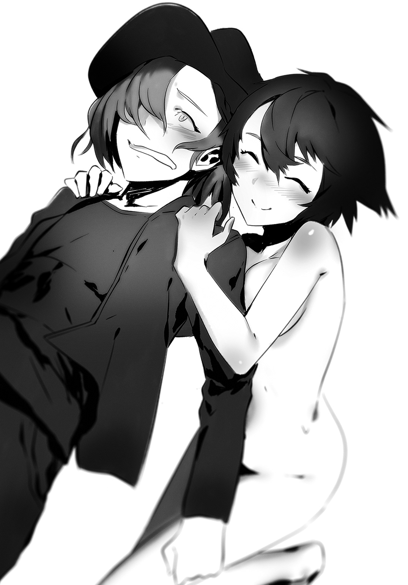
「やめろ、離せ！ これ以上、変態になりたくない！」
「ヤダ！ クロノの背中を流してやるんだ！ クロノが変態でも、モカは気にしないんだ！」
黒野におぶさるモカ。それを強引に連行しようとする子供たち。もはや四面楚歌であった。
しばらくすると、この情けない騒動に気づいたのか、年長の子供たちがやってきた。
「......クロさん、何やってるんですか？」
年長の子供たちが、ドライアイスの如き視線を向けてくる。ああ、ここの児童の最高年齢は高卒前の十八歳。女性だっている。彼女らからすれば、全裸のモカとじゃれあっているなど、不潔な行為にしか見えないだろう。モカの気持ちは純粋だが、行為自体は変態だ。
「あの......子供たちの前で、いちゃつかないでもらえます？」
「こ、これはいちゃついてるんじゃなくて、モカが......」
「はぁ、そうですか。不可抗力なんでしょうね。とらぶるですね。ええ。わかります。それで？ ......随分楽しそうでしたが？」
「は、はは。モカを引き剝がしてくれると助かるんだケド......」
「俺は、いい歳した高校生なんで、裸の女性には、さわれません」
年長で真面目そうな彼は、掌で自分の両眼をわざとらしく覆い隠した。
「モ、モカ、頼むから離れろ！ 俺が教会に居づらくなる！」
「え？ な、なんでっ――？」
――羞恥心の欠片もないモカに、女性のつつましさを語っても意味がなく、ましてや全裸相手に説教などをしていたら、変態と思われかねない。というか、すでに思われている。
『子供たちが風邪をひくから！』という理由で納得してもらい、なんとか全員風呂場へ撤退させることができた。年長の子供たちに事情を説明するも、誰もが興味のない感じで「はいはい」と戻っていった。黒野は、無人島に置き去りにされたかのような気分になった。
人柄という名の株が、大暴落のストップ安になってしまった黒野は、項垂れながら衣澄の部屋へとやって来た。ノックをして、そろりと覗きこむ。
「姉ちゃん、いる？」
衣澄は、ノートパソコンに向かってカタカタとキーボードを打ちこんでいた。
「ん。おかえり。ちょっち待ってね」
「......俺、変態になっちゃった」
「は？」
「冗談だよ。蛍の誘拐と、狼真とモカのせいで、子供たちから誤解されてるだけ」
黒野は、くたびれた感じでソファへと腰掛ける。パソコン画面に視線をやると、かわいらしい犬や猫の写真が映っていた。それに、衣澄が文章を打ちこんでいる。教会の掲示板に貼る『かわいい新聞』を制作しているようだ。
黒野は感心する。百年も生きているのなら、もっと高尚な人生観を持ってもいいと思う。けれど、彼女は、自分が幸せになることよりも、子供たちの将来を考えている。
衣澄は、エンターキーをタンッと押して「よっし、今日はここまで」と、マウスを動かしファイルを保存した。ディスプレイを閉じると、黒野と向かい合うようにソファへと座った。
「や、大変だったみたいだね。狼真と蛍ちゃんは？」
「......どうしようもなかった」
申し訳なさそうに、黒野は、その言葉を吐く。そして、教会を出てから帰ってくるまでの出来事を衣澄に話した。宮間の裏切りのことも、蛍の能力のことも――。
説明が終わると、彼女は愁いを帯びた表情でつぶやいた。
「――蛍ちゃんに、そんな秘密があったなんて......」
「どうすればいいのかわからなかった。蛍のことも宮間のことも」
「ミヤは......きっと蛍ちゃんの能力を知ってたんだね。国が蛍ちゃんを預かっている限り兵器として使われる可能性はある。保護するにしても、国とミヤでは意味が変わってくるし......」
「それが許されるとでも？」
「クロノスの正義は個々にあるんでしょ？ 弥人は、町もホロも蛍ちゃんも守ろうとしてるけど、ミヤはもっと現実的に考えてるんじゃないかな？」
蛍の人生と、ホロの未来。どちらを守るべきか天秤に掛けた場合、基本的には数の多い方が尊重されるのだろう。だが、それは最善ではない。もっとも推奨されるべきは両者の幸せだ。天秤のどちらかしか救えないと決めつけるのは、妥協に他ならない。想いだけでは、どうしようもならないことがあるのはわかっている。本懐を果たすためには、狡さが必要だ。天刀狼真がいい例だろう。蛍を人質にした取引は、黒野にできないことだった。結果として警察の包囲を解かせ、蛍の情報を聞きだし、なおかつ大手を振って市役所から出てこられたのだ。
「姉ちゃんは......どう考えてる？」
「何を？」
「宮間は正しいことをしてると思うか......？」
「わからない。ミヤにはミヤの考えがあるし、もしかしたら、蛍ちゃんも幸せにできるような凄いプランがあるのかもしれない」
そうは思えなかった。宮間の計画が素晴らしいものであったなら、最初から黒野に相談してくれていたハズだ。
「じゃあ、質問を変える。......もし......もしも......俺が、蛍をここに連れてきて......他の子供たちと一緒に世話をしてやってくれと頼んだら......引き受けてもらえるか？」
問いかけると、衣澄は消えた蠟燭の如く静かになった。黒野と目を合わせず、じっとテーブルに視線を落としている。
「難しい質問なのはわかってるよ。誰にも言わない。聞かせてくれ。姉ちゃんの考えを」
静寂な時間が五分ほど流れた。空気も止まっているような気がした。そして、ようやく衣澄が口を開いてくれた。
「......蛍ちゃんは、かわいいよね」
「ああ」
「幸せにしてあげなくちゃって思ってる。......でも、教会には、ホロの子供もいるからね。何かの弾みに、蛍ちゃんが泣いたりしたら、姉ちゃんはどうしたらいいのかわからなくなる。......酷なことを言うと......院長として、たとえ薄情だと思われても、断るしかないんだと思う」
「......そっか」
非難などできるはずもない。軽蔑も、黒野はしない。衣澄の答えは、子供たちを思いやる心から紡がれている。そういう選択も、仕方がないと思った。
「姉ちゃんだけならいいんだけどね。一緒に暮らす覚悟はあるよ。一生懸命向き合って、その結果、死んでも構わない。十分、生きたからね」
「よくないよ。姉ちゃんが死ぬと、悲しむ奴が大勢いる」
幸せにしてあげたいという気持ちがあっても、解決策が見つからない。哀れんだところで、蛍の環境は変わらない。
暗澹たる現状に、二人が沈んでいると――。
バンと、勢いよく扉が開いた。現れたのはパジャマ姿のモカだった。
「お風呂出たぞ！」
軽やかに部屋へ入ってくると、ソファの肘置きに手をついて、逆立ちするように一回転。そのまま尻から落ちるようにして寝転がると、黒野の膝に頭を乗せた。
「仲いいね、アンタたち」
「おう！」と、膝の上で返事をするモカ。火照る身体はポカポカと温かさを放ち、髪からは石鹼の匂いを漂わせていた。
「子供たちのお風呂は終わったんだ。次は姉ちゃんの番。クロノは、モカとお話をするからな。今日、何があったのかを聞いてもらうんだ。あ、クロノの話も聞きたいぞ？ ホタルはどうなった？ ロウマは？ ミヤマは？」
モカは、黒野の手首を摑むと、自分の頭の上に置いた。撫でてほしいのか、黒野の腕を動かし、セルフ撫でをさせられる。見上げるモカの顔は向日葵のように晴れやかで、瞳は真っ直ぐに黒野を見上げていた。なんだか気恥ずかしくなって、思わず目を背けてしまう。
「なんだか、姉ちゃんまで恥ずかしくなってきたよ。じゃ、ちょいとお風呂に入ってこようかな。弥人、今日も泊まってくでしょ？ モカ、あとで着替えを用意してあげてね――」
☆
怖かった。でも、楽しかった。けど、残念だった。
姫川蛍の心には、いろんな感情が混ざっていた。
人生で、一番怖い思いをしたけど、一番楽しい思いもした。やっぱり、外の世界は凄いのだと思い知らされた。物凄く、充実した二日間だった。
パパが死んだ時は、とびきり悲しかったけど、黒野と狼真に会えたことは、とびきり嬉しかった。まるで兄ができたかのようであった。しかも、その兄たちは、物凄く頼りになって、蛍が怖い思いをしていると、助けてくれるのである。
けど、結局は『戻らなくちゃ駄目だよ』というので、部屋に帰ってきてしまった。
「むーん。にぃにもろうまもわかってないんだよ。蛍は、他の子たちと同じように生活をしたいんだよ。ねぇ、茶子ちゃん」
蛍は、ベッドの上で、ぬいぐるみに語りかける。三毛猫戦隊みけみけみぃの、みけみけブラウンを担当する、猫井崎茶子をデフォルメしたものだ。
「うんうん。わかってないのです」
ぬいぐるみをコクコクと頷かせながら、腹話術のように声を出す蛍。
――そうなると、蛍のことを一番わかっていたのは、パパだったのかもしれない。
パパは寡黙で、一緒に遊んだりはしてくれなかった。けど、お外の世界で暮らそうと言ってくれた。普通の子供たちのように、学校へ行って、買い物したりして――。
パパのことを思い出して、ほんのわずかだけど瞳に液体が滲んだ。
はっ、と、蛍は思い出す。
――パパは死んでしまったけど、もしかしたら天国で生きているかもしれない。
幼い蛍には、その発想が矛盾していることだと気づかなかった。
ゆえに『試す』ことをする。
蛍は、ぬいぐるみと一緒に布団を被った。茶子のデフォルメ人形の背中へと手を突っ込む。生地の奥底に埋もれているファスナーを摘んで、ジィィと下ろし、中から子供用の携帯電話を取り出した。パパから渡された内緒のアイテムだ。脱出計画は、蛍とパパの極秘ミッションだった。部屋は威竜に監視されているから、布団の中に潜り込んで使うように言われていた。パパとは、これで連絡を取り合って、計画を練っていた。
見つかったら、取り上げられてしまう。パパも、物凄く怒られると言っていたから、これを使う時はドキドキであった。電池がなくなってしまうと使えなくなるので、必要な時以外、電源を入れては駄目だと言われていた。
真っ暗な布団の中、蛍は唯一登録されているパパの番号へ電話をかける。呼び出し音が鼓膜を叩く。パパの声が聞こえるのではないかと、蛍は期待に胸が膨らんだ。すると――。
『......もしもし？』
「パパっ？」
蛍は、嬉々とした声を必死に絞る。
『蛍ちゃんかな？』
蛍は、相手がパパではないことに気づく。パパは『蛍』と呼び捨てにするからだ。
「あれ？ パパじゃないんだよ？」
『違うよ。パパのお友達』
「パパは？」
『パパは......残念だったね。死んじゃったんだよ』
「そっかぁ......」
わかっていたことだが、蛍はやはり落胆した。死んでしまっても、電話でお話しできるのなら、素敵だと思っていたのに――。
「むぅ。......そうだ！ パパのお友達なら、助けてほしいんだよ。蛍は、部屋から出してもらえないんだよ。皆が、パパと蛍の計画を邪魔するんだよ」
『部屋から出たいの？』
「うん」
『部屋から出て、どうしたいのかな？』
「そうだねぇ。学校に行きたいんだよ。動物園とか遊園地にも行ってみたいんだよ。あと、デパートと駄菓子屋さんと公園と、行きたいところは、いっぱいあるんだよ。それで、ママと一緒に暮らすの。にぃにも一緒がいいなぁ。あとは、ろうまも一緒だと嬉しいんだよ。ろうまは、みけみけみぃに詳しい『話せる奴』なんだよ」
『そっか。じゃあ、お部屋から出してあげようか？ パパとは、お友達だったしね』
「ほんとっ？」
☆
野坂威竜は、巨大なドーム状の『部屋』の、中央にあるオフィスチェアに腰掛けていた。天井や壁、床には数多のディスプレイが隙間なく張り巡らされている。空虚で広い空間には、半透明な文字列が大量に漂っていた。情報という概念の存在でしかない威竜も、居心地のよい場所が欲しかった。だから、そう感じられるよう、自分で自分に信号を送ることで、人間のように『住んでいる』という感覚を楽しんでいる。
目の前には八枚のディスプレイ。どれも威竜が召喚したものだ。あくまで、威竜の構築した空間なので『なんでもアリ』である。人間でいう想像の世界だ。
ただ、画面越しの相手とは、現実のやりとりを繰り広げることになる。
映っているのは、研究所や市役所の職員、警察などの偉い人の中でも、比較的暇な者たちだ。こうして、会議の場を設けさせられたのは、姫川蛍の誘拐という失態に対しての釈明のため。威竜は一から事情を説明し、納得してもらう。
ハッキリ言って、時間の無駄だと威竜は思っている。報告書でも送付すれば済むこと。会議の内容など薄っぺらい。連中は、威竜という存在を管理したいがために――自分たちが上であると誇示したいがために、直接話をしたがっているだけなのだから。
「とまあ、これが事の顚末です。パパさんが死んでしまったのは予想外でしたが、蛍さんも無事に帰ってきましたし、問題ないかと」
『ふん。なるほどな』『事実を語るだけなのは、やはりＣＰＵだからかしら？』『いや、彼女は頭がいいです。余計なコトを言わないようにしているのでしょう』『これは威竜市長の責任になるのかな？』『実体のない彼女に、どう責任を取らせるんですか？』
嫌味を含んだ台詞が交錯する。威竜は、好きに言わせておいた。反論すれば、倍になって返ってくるのは目に見えている。
『フォト・ライミの少女のことはいいだろう。だが、黒野弥人に関しては、少々疑問が残るな。クロノスとかいうギャングの噂は、我々もよく耳にする。白瑠璃市では、ヤクザや暴走族よりも有名だ。逮捕するチャンスだったろう？』
「クロノスは、正義の味方を、本気でやろうとしているバカの集まりです。警察の仕事を減らしてくれているのは間違いありません。いや、企業の不正をぶちまけたりもしているので、仕事も増やしてますね。どちらにしろ、治安維持には役立ってますよ。彼らがいなければ、公務員の横領も、酷い額になっていました。暴走族もヤクザも、おかげで鳴りを潜めています。ホロのいる組織は強いですね」
『では、天刀狼真とやらはどうだ？ ハイウェイの映像を見たぞ？ 刀を持っていたな。カタギではないようだが？ 彼も、逮捕しなかったのか？』
「彼のことは、僕も気になっています。まるで、蛍さんの能力を知っているかのようでした。人質の使い方が見事です。しかし、弱みを握られていたから、仕方ありません」
『ジャルカッタの件に関わっている可能性は？』
「パパの取引相手というのが、狼真さんのお姉さんらしいです。そう考えると、なんらかの関係があるのかもしれません。しかし、今はなんとも」
『紫苑......だったか？』
「はい。資料を取り寄せました。国立大学出身で成績も優秀。卒業後は就職していませんね。行方もわかっていないです。前科はありません。白瑠璃に来ているようですが、まだ、僕の目には入ってきていませんね」
『じゃあ、その狼真というのに協力させて、紫苑をおびき寄せるのはどうかしら？』
『それはいいな。我々警察の方でも検討してみよう』
それは、威竜も考えた。だが、狼真は狡猾だ。それを手玉に取っている紫苑が一筋縄でいくとは思えない。相手を見下して行動するようでは、出し抜かれることになるだろう。まあ、好き勝手言っていればいいと威竜は黙っていた。
偉い人の一人が『ふむ』と、不満そうに唸った。
『ＣＰＵのクセに、随分と融通を利かせた処遇だったな。公私混同しているように見えるのは気のせいか？ クロノスなど、チンピラの寄せ集めにしか過ぎないと私は思っている。容疑者の弟というのであれば、天刀狼真も拘留すべきだった』
機械とは、総じて精密なものである。会話などはパターンやデータを基にして『機械的』に判断し、処理するのが普通だ。しかし、威竜は違う。人間と同レベルの臨機応変さを発揮している上に、感情というモノもある。
「公私混同は、気のせいではありませんよ......」
少し、余計なことを言ったと威竜は思った。連中が勘違いしているようなので、ついつい口を挟みたくなってしまった。
『問題発言だな。市長としての責任能力を疑われるぞ？ どういうつもりだ？』
威竜は、あどけない表情で「そうですねぇ......」と、顎を指に当てる。
「個人的に......考えが偏るの、好きじゃないんですよ」
『偏る？』
「物事を機械的に処理するのは簡単です。会議で、気に入らない案件があれば、過去のデータを証拠に却下できます。悪い子が歯向かってきたら、弱みを握って黙らせてもいいです。作業的に、やっちゃってもいいんです。人の話なんて、聞く必要はありません。会議も話し合いも無意味です。けど、それだと面白くないです。管理しているみたいで」
『管理することが、おまえの仕事だろう？』
威竜は、口元を押さえて「ふふ」と笑った。
「僕は......」と、天を仰ぐようにつぶやいて、さらに言葉を繫げる。
「僕は、白瑠璃を素晴らしい町にしたいと思っています。それが野坂威竜の存在理由ですからね。そのためには『管理』だけではいけません。白瑠璃市をよくするのは、僕じゃないです。僕じゃダメなんです。市民が成長しないことには」
疑似人格ソフト『威竜』は、市民を怠けさせるために開発されたのではない。
市民を助け、導くために開発されたのだから。
『完璧なはずのＣＰＵが、己を「ダメ」だと思っているなど――』
「僕は、自分を人間と同列だと思っています。だからこそ成長できる。完璧と思いこんでしまったら、成長は頭打ちです。それに――」
『それに？』
「僕が白瑠璃に来てすぐの頃、警察の上層部と喧嘩したのを知っていますか？ あの件で、僕は白瑠璃の一部でしかないと感じましたよ」
管理システムとしての仕事が始まった時、威竜は法に照らし合わせ、町の犯罪を片っ端から通報した。喧嘩、窃盗、交通違反。どれもが逮捕に繫がるようなケースばかりであった。だが、威竜は警察の上層部から文句を言われた。
――処理しきれない、と。
所詮、どれだけ情報が増えたとしても、受け取り手が人間である限り、それに合わせなくてはならない。
「虐めの件もありましたね。中学生の虐められっ子さんが、スマホの僕に相談してくださったんです。けど、学校や親には言わないでほしいと、釘を刺されました。その後、彼女は自殺。親御さんに訴えられたのは僕です。けど、あれは、僕が解決すべき問題ではないと思ったからこそ、口外しなかったんです。解決すべきは、家族と相手。そして学校側です。僕が解決してしまったら、きっと虐められていた子供は家族との関係を希薄にしてしまいます。学校だって、生徒たちのメンタルケアを疎かにしてしまうでしょう。僕も、虐められっ子さんには『僕ではなく、家族や先生に相談した方がいいですよ』と促したんですがね」
導く立場となるのなら、完璧を捨て、柔軟な思考を取り入れる。向上心というモノを掲げ、威竜は日々成長しようとしている。
「ＣＰＵらしからぬコトをいっぱいやります。いっぱい失敗します。それで学びます。ＣＰＵらしく物事を処理していればいいのなら、感情なんて与えませんよ。僕の製作者は」
威竜は、熱く語ったつもりであったが、連中のほとんどが、面白くなさそうな表情を浮かべていた。ＣＰＵという概念に講義されるのがウンザリだったのだろう。
『一つ、いいかな？』
「なんでしょう？」
『僕は、個人的に、市長のやり方に賛成だ。柔軟な考え方は大事だと思う。公私混同も結構。ここにいる者も、少なからずそういうコトをしているだろうしね』
「へえ、それは知りませんでした」
威竜は、空々しく言った。
『市長は成長しようとしている。けど、成長し、学び、その結果、人間が導けない存在だとわかったら、君はどうするのかな？ 人間に絶望し、やはり管理すべき対象だと判断したら？ その時、君は、ありとあらゆる手段を用いて、市民や僕たちを管理しようとするのかな？ あるいは駆逐？ ターミネーターのスカイネットのように？』
「それはありませんよ。僕の手に余ると判断したら、その時は辞任しましょう。どこかのＩＴ企業の面接にでも行きますよ」
適当にはぐらかした威竜であったが、彼の質問に対しては、こう思っていた。
――面白い、と。
自分が何をしたいのか。何をすべきなのか。市長としての仕事はわかっている。彼らに述べた気持ちは、偽りではない。けど『心変わり』がないとは言い切れないだろう。
人間とホロの住まう世界を魅せられ続け、威竜は何を思うのだろうか。
人間の成長は楽しみだ。けれど、自分という存在が、どのように移り変わっていくのか。
野坂威竜は、それも楽しみでならなかった。
☆
はあ、やれやれ。......あ、どうも。市長の野坂威竜です。
ようやく会議が終わりました。偉い人たちは、僕のことをなんだと思っているのでしょう。一応、市長なんですが、市長らしい接待を受けたことがないです。やっぱり、ＣＰＵということで、見下されているのでしょうか。悲しいです。
さて、今日も一日が終わろうとしています。
いやはや、蛍さんの件は肝を冷やしました。けど、一段落です。
......あとは、宮間さんと紫苑さんですね。
宮間さんは、どこから蛍さんの情報を仕入れたのでしょうか。まあ、クロノスの情報網は目を見張るものがあります。市役所の職員や、研究所の人、スタッフ。国のお偉いさんなど、情報を完璧に遮断することなどできませんからね。特に、アルコールに弱い権力者など困りものです。紫苑さんも、似たような経路で情報を仕入れたのでしょう。狼真さんの言ってることが本当なら、犯罪者に知り合いが多そうですしね。
そうなると、不思議なのは狼真さんです。彼も蛍さんの能力を知っていた節があります。白瑠璃市内に協力者がいたのでしょうか？ 探偵のようですが、どこから情報を引っ張ってきたのでしょうか？
――おや？ 考え事はさておき、市役所の外のカメラに不審な人影が映っています。
市役所は、白瑠璃市の中心にあります。建物の周囲を駐車場が。さらにその周囲を緑溢れる公園が囲んでいます。その公園から、ニット帽を被った男が現れました。サングラスとマスクをつけてます。全身で、怪しんでくれと訴えているかのようでした。
念のため、駐在しているガードマンさんに連絡をしておくことにします。
おや、ニット帽さんが、走りだしました。ポケットから特殊警棒を取り出すと、すぐさま展開し、それを使って窓ガラスをぶち破ります。
建物内へと侵入してきました。しかも、彼はジャンパーの内側に、大量の火炎瓶を隠し持っていました。ライターで火をつけ、あちこちに投げつけています。
あ、僕自身、呑気に解説していますけど、結構焦っています。警察と消防には連絡しました。火災報知機は作動しています。ジリリリリとけたたましい音が鳴り響き、火のついたフロアはスプリンクラーが作動しています。
ガードマンさんが取り押さえようとしましたが――返り討ちにあってますね。動きからしてホロでしょう。他のガードマンさんも集まってきましたが――相手側の仲間も、公園から、さらに六人ほど湧いてきました。
......妙ですね。目的は何でしょうか？ 僕の命？ ありえません。二十一階が市長室となっていますが、あるのは高性能なパソコンだけ。僕は５４３２４８人もいますから、壊したところで意味がないんです。あ、スパコンもありますね。破壊されても僕は死にませんけど。
金目の物が欲しければ銀行に行くでしょう。ここにあるのは市民の個人情報ぐらいです。連中は暴れるだけ。嫌がらせとしか思えません。ならば、十九階の要人フロアに用事でしょうか。しかし、窓は大砲の弾もとおさない防弾ガラス。扉だって、抉じ開けることができる人なんていません。
――っと......え？ ......は？ ......はい？ なんですか、その情報？
あ、いや、十九階を担当している僕から情報が入りました。
――騒ぎに乗じて、蛍さんが逃げ出したそうです。
火災が発生した際、要人フロアのロックは、一斉に解除されます。地震や火災で、僕がバグる可能性を危惧しての仕様です。安全に関しては、アナクロな方が信頼されていましたから、人間が、そうセッティングしました。
......蛍さん、火災報知機が鳴らされることを知っていましたね。開錠した瞬間、彼女は部屋の扉を開け、さらには廊下を進んでエントランスの扉も開いてしまいました。その後、迷うことなく非常階段へ。小さな身体を目一杯使って駆け降りています。
無意味に見える襲撃も、火炎瓶も、すべてはこのためなのでしょう。
非常階段の先にあるのは外への扉です。扉はアナクロ。僕の手が及びません。
ならばとスタッフさんに連絡。最優先事項として蛍さんの確保をお願いしましたが――こちらも賊に手を焼いているようでした。
......誰の仕業でしょう？ 黒野さんが、逃走計画を吹き込んでおいたのでしょうか？ しかし、こんなことをしても、なんの解決にもなりません。そういうタイプの人にも見えません。となると紫苑さん......？ もしくは宮間さん......？ しかし、彼女たちだとしたら、どうやって蛍さんを動かしたのでしょうか。世間知らずの子供を騙すぐらいはできるかもしれませんが、コンタクトを取るのは不可能――。
――いや、不可能ではないかもしれません。
見落としていた。蛍さんが無事に戻ってきたので気にしていませんでした。
蛍さんが外部と連絡可能な手段を持っていたと仮定します。さらに、パパと蛍さんの脱走が綿密な計画のもと、行われたのであれば『携帯電話』があっても不思議ではありません。手紙か何かで連絡を取り合っていたと思っていましたが、携帯電話なら辻褄が合います。
パパは、取引相手と連絡するために通信機器は必要でした。個人のスマホには僕がインストールされているので、別の携帯電話を用意していた可能性は十分に考えられます。さらに不自然なのは、彼の死体からも自宅からも、携帯電話が見つかっていないことです。ジャルカッタに向かった際、彼は携帯電話を持っていた。現場から消えた犯人が、それを盗んだのでしょう。蛍さんの連絡先が入っていれば、コンタクトを取ることは可能です。
僕は、館内放送で、蛍さんに呼びかけます。
『蛍さん。罠です。戻ってください！』
しかし、彼女は聞く耳を持ってくれません。ひたすら階段を下りていきます。
僕は奥歯を嚙みながら、その光景を眺めていることしかできませんでした。
――おや？ あの車は......？
一台の白い車が現れました。凄まじい勢いで進入してきたそれは、市役所の裏手へと回ります。非常階段の出口の方です。蛍さんを迎えに来たようですね。
市役所外にある監視カメラが、フロントガラス越しに犯人の顔を捉えます。
映し出されたその姿は――。
――あ、天刀狼真ッ？
☆
姫川蛍は、ぜえぜえと息を切らせながら、ようやく一階へ下りてくる。
「ふーんだよ。意地悪する威竜君なんか、嫌いなんだよ。パパの友達が迎えに来てくれるんだもーん」
パパのお友達の話では、非常口を出ると、駐車場が広がっているそうだ。そのまま、真っ直ぐ走ると、緑がいっぱいのお散歩コースのような公園に入る。そこを横切ると道路があって、白い車が停めてあるので乗りこめばいいと言っていた。
扉を開けて、市役所の外に飛び出す蛍。しかし、白い車の方から、迎えに来てくれた。それは、キュラキュラとタイヤを擦らせながら鋭角的に曲がり、けたたましいブレーキ音と共に、蛍の前でピタリと止まった。まるで、映画を見ているようだと蛍は思った。
「おい、チビ。迎えに来たぜ」
運転手席から身を乗り出すようにして、助手席の扉が開放される。
そこにあったのは、天刀狼真の姿だった。
「パパのお友達って、ろうまだったんだぁ」
「急いで乗れ。意地悪な市長さんに捕まっちまうぞ」
「おう、だよ！」
蛍が助手席へと飛び込むと、狼真がドアをバタンと閉じた。
「揺れるぞ。シートベルトの締め方はわかるか？」
「えっと......」
蛍が迷う間もなく、狼真は素早くベルトを引いて、カチリと留めてくれる。
蛍の身体が、ガクンとなって、急発進する。
「お、おおう。ちょっと怖いんだよ！」
「秘密の作戦は怖いのがお約束だ。泣くんじゃねえぞ」
車に乗れるなんて、なんだか蛍は嬉しかった。パパにも乗せてもらったけど、あの時は鞄の中だったから、景色も何も見られなかった。
狼真が言うように、秘密の作戦というのは怖いものなのだろう。
自由を手に入れるのも、大変なのだなぁ、と、蛍は思った。
三・五章 狼への鎮魂歌
大都市とはいえ、夜にもなれば交通量はまばらになってくる。ほどよい速度で流れている車両の間を縫うようにして、天刀狼真は軽快に車を走らせる。
狼真のスマホは、先程から鳴りっぱなしだ。どうせ相手は威竜だろう。
素早く視線を左右にスライドさせながら、車や人の位置を把握。
赤信号が見えたが、気にせず突っ込んだ。左右からやってくる車が、ハンドルを切ったり、ブレーキをかけたりと忙しそうであった。助手席では、蛍が呑気に「おお」と感嘆の言葉を放っている。
直線に入ったところで、狼真は、ようやく電話に出る。
「よう、威竜」
『狼真さん。いったい何を考えているのです？ あなたが黒幕だったんですか？』
「偶然、市役所の前をとおりかかったんだ。警報機がうるさかったんで、野次馬根性で近づいてみたら、たまたまチビが出てきた」
『そんな噓が通用すると思っているんですか？』
白瑠璃は威竜の監視下にある。宮間のように部下がいるわけでもないし、狼真は逃げられると思っていなかった。そもそも、蛍を連れて逃げる気もない。
「威竜、俺を追いかけてる車があるだろ？」
『パトカーが一台。どんどん増えるので覚悟しておいてください』
「そっちじゃねえ。一般車両で追いかけてきてるのがいんだろうが」
『は？ え？ ......ええと......あ、あります。白いセダンが追跡してますね』
「おまえの頭がいいことを前提として、説明は省くぜ？ ――チビの誘拐計画を立てたのは、俺じゃねえ」
『話が見えません』
「チビは、布団の中で、誰かと携帯を使って連絡を取ってたんだよ。だからこそ、火災報知機が鳴るタイミングで脱出できたんだ」
『その『誰か』は、あなたしかいないでしょう？ ドンピシャのタイミングで現れたのですから』
「違う。俺は、盗聴してたんだよ」
狼真は、威竜がパパの遺体から『携帯電話』という証拠品を見逃していたことをわかっていた。なぜか？ 答えはシンプル。もし威竜が携帯電話を手に入れていたのなら、早い段階で、狼真に、こう質問していたからだ。
――なぜ、パパの携帯電話に、狼真さんとの通話履歴があるのですか？ と。
その質問がなかったからこそ、狼真は盗聴器を仕掛ける気になった。
狼真とパパとの通話は間違いなくあった。パパのことだ。履歴は消してあると思うが、電話会社に調べさせれば、誰と電話をしたのかはバレてしまう。ゆえに、現場に来た威竜関係者以外の誰かが携帯を持ち去ったと考えるのが妥当である。
そもそも、パパの『取引相手』というのは紫苑ではない。
天刀狼真だった。
パパは寡黙な人間だが、情のある人間だった。電話でしか話をしたことはないが、狼真はそう感じた。蛍を操るために、父親という威厳ある存在を演じること。それが、パパの役割だ。相手は兵器ゆえ、必要以上に情を抱く必要はない。しかし、蛍は兵器とは思えぬほど、あどけなく、優しく、いい子であった。寡黙で、一緒に遊ぶ術を知らないパパだが、蛍は会う度に笑顔で迎えてくれた。黙っていても、彼女が一方的にしゃべってくれた。すると、パパの中で父性が育ち始めたようだ。部屋から一生出られない蛍を、不憫に思うようになった。
普通の子供なら当然のように得られる経験や幸福を、蛍は知ることなく人生を終えることになる。自分の娘のように思えてしまったパパは、我が子に人間らしい人生を与えてやりたかった。そのエゴが膨らんだ結果、彼は行動を起こした。
まず、外部に協力者が必要だった。ホロに理解があり、黒い依頼を引き受けてくれる者。ヤクザやギャングのような『組織』はダメ。関わる人数は極力少ない方がいい。
金さえ払えば、確実に仕事を成し遂げてくれるエージェントのような奴だ。
白羽の矢が立ったのが、天刀狼真であった。怪事件専門の探偵で、その手の連中からの評判も上々。古い依頼人を通じて、狼真とパパは知り合った。
ジャルカッタで蛍を預かったあとは、彼が用意した車を使って、田舎の施設に届ける手筈になっていた。そこにはパパの信頼できる女性がいる。残ったパパは、威竜と取引する予定だった。パパとママと蛍の三人で暮らす――あるいは、ママと蛍の二人でもよかった。威竜が要求を飲まなければ、パパは（本気かどうかしらないが）自殺すると脅す。パパが死ねば、蛍の行き先を知る者はいなくなるので、無下にはできない。あるいは、研究所に勤めるママを説得するか誘拐し、蛍のもとへと導いてやる。これが、パパの計画であった。
聞かされた狼真は、成功率を二割以下だと踏んでいた。よくて三割だろう。蛍を施設に届けるまではともかく、親子三人で暮らすのは難しい。威竜が要求を飲むとは思えない。そもそもママが蛍をどう思っているかわからない。蛍と合流したママが、安定を求めて威竜のもとに戻るというのも十分に考えられる。まあ、狼真の仕事は、蛍を目的地に連れていくこと。エージェントらしく、任務を完遂するだけ。それに、狼真に知らされていない切り札があったのかもしれない。
しかし、ここで予想外の出来事が起こる。
天刀紫苑の妨害だ。狼真に会いたかったのか、それとも蛍を横取りしようと企んだのか、それとも両方か。狼真とパパの取引の情報を嗅ぎつけたのだろう。一足先に取引先に来て、酒を楽しんでいた。待ち合わせ場所の変更を懸念して、市役所を出たパパを部下に尾行させる。ひとけのない場所――店の前にやって来たところで襲わせた。しかし、ここでしくじってしまった。蛍が泣きだし、店の内外にいた紫苑の部下が全滅する。
紫苑は、警察と関わるのが嫌だったに違いない。バーテンを素早く始末。蛍を確保する余裕もなく、現場から急いで立ち去った。仲間がいない状態で狼真と鉢合わせたら、確実に殺されるからだ。逆に、狼真は遅れてきたことが幸いする。と、いっても、パパが予定より早く到着しただけだが――。狼真の到着がもう少し早ければ、蛍の泣き声で死んでいただろう。
到着した狼真は、死体と空になったボストンバッグを見て推理した。
『何者かがパパを殺した結果、蛍が泣いてしまい、全滅した』と。
死んでいた客は紫苑の取り巻きだ。そして、バーテンの死因は刺殺。そして、残された二つのグラス。紫苑が来ているのだとわかる。黒野たちからもたらされた情報により、それは確信に変わった。
取引はポシャったが、紫苑に近づいていることは喜ばしかった。しかも、紫苑にとって予想外の出来事が起こっている。始末するチャンスだ。姉は三人も部下を死なせてしまっている。
狼真の人生の目的は紫苑の抹殺である。しかし、町に来た目的は蛍の保護のため。
このタイミングで、狼真の目的が切り替わる。
この時、狼真が危惧していたのは、パパの携帯であった。回収する前に、宮間たちの襲撃を受けてしまった。だが、威竜は一切そのコトに触れてこない。つまり、携帯電話は他の誰かが持ち去った。宮間なら、すぐにでも黒野に見せているから違う。おそらく紫苑だ。大事な狼真が塀の中に入ってしまわないよう気遣って、キープしていた。携帯には蛍の番号が入っているかもしれない。それならコンタクトを試みるのではないかと狼真は思った。
蛍の部屋へ入った時、はしゃぐフリをして、ぬいぐるみの服の中に小型の盗聴器を仕掛けてみた。チャンスがあったので、風呂とトイレにも。
一日、二日で気づかれるとは思っていたが、ありがたいことに初日でヒット。蛍の方から犯人に連絡を入れてくれた。白いセダンで迎えに来ると犯人が言っていたので、狼真は急遽レンタカー屋へと足を運び、威竜のインストールされていない似たような車を用意。迎えに行くという役目を強奪した。
取引の真実が威竜にバレたら、誘拐未遂で逮捕されてしまうので、言えるわけがない。黒野にも軽蔑されるだろう。
――だから、紫苑とパパの黒い取引をでっちあげた。天刀紫苑が、私利私欲のために蛍を欲しがったのだと。パパが金目当てに蛍をたぶらかして、誘拐計画を企てたのだと。
当然、蛍の能力のことは、パパから聞かされていた。だからこそ、ハイウェイでは大胆な取引をすることができた。
「チビの部屋は常時おまえが監視してる。脱出計画なんざ立てられねぇ。それなら、携帯電話か何かがあったと考えるのが普通だろ？ ケケケ、ＣＰＵのクセに推理力は俺以下だな」
自分の用意周到さを、もっともな理由でごまかす。
『......僕の落ち度ですか？』
「盗聴していたことは詫びる。けど、おかげで助かったろ？」
『事前に教えてくれていたら、もっと助かってましたが？』
「それじゃあ黒幕を引っ張り出せない」
『蛍さんを餌にするつもりですか？』
今更、蛍を白瑠璃から逃がすつもりはなかった。金を受け取る前だ。義理もない。だが、紫苑が絡んでいるのなら、事件を追いかける価値はある。まずは宮間だ。忠犬だった彼が、あの態度の変わりようである。紫苑が蛍の能力を教えたに違いない。
威竜に教えてやれば、誘拐を未然に防ぐことはできた。しかし、それでは連中の戦力を大きく削ぐことはできないと思う。派手にやらかしてこそ派手にダメージを与えられる。威竜側にも被害が及ぶが、それこそ狼真の知ったことではない。
「未然に防いだら、これからも悪党の影に怯えて暮らさなきゃなんねぇ。それよりは、とっとと始末しちまった方が、おまえも蛍も安心して暮らせるだろ？」
連中は必ず動く。蛍が市役所から出てくるという絶好のチャンスを見逃すはずがない。誘拐し、そのまま逃走を図るつもりだったのなら、足止め役だって必要だ。誘拐犯一味は必ず追いかけてくる。
『蛍さんに危害を加える気はないんですね？』
狼真は「ねえよ」と断言した。
「むぅ......ろうま。いったいどうなってるの？ 蛍を呼び出したのはろうまじゃないの？ とうちょうってどういう意味？」
蛍は腕を組んで難しそうに唸る。
「おまえがバカだから、悪の組織が追いかけてきたんだよ」
「蛍はバカじゃないんだよっ」
「バカなんだよ。秘密の携帯電話でパパの友達と話したろ？」
「うん。パパの友達は、狼真の友達でしょ？」
「違えよ。悪の組織の罠だったんだよ、マヌケ。もう少しで誘拐されるところだ」
「ふぇ？ ゆ、誘拐？」
蛍が、不安げに言葉を漂わせる。その途端、狼真の額から汗が滲んだ。誘拐に対する恐怖は記憶に新しい。もし、泣きだしてしまえば狼真は死ぬ。これは命懸けのドライブなのである。
「お、落ち着け。泣くなよ？ いいか？ 大丈夫だからな？」
「ほ、本当？ ゆゆゆ、誘拐は嫌なんだよっ？」
先刻までは、脱出という期待感に胸躍らせていた蛍だったが、途端に慌てふためき始めた。
「お、おう。俺がいる限り、誘拐なんてさせねえから。安心しろ」
狼真は、ゴクリと唾を飲み込んだ。予想はしていたが、蛍が怯え始めた以上、これから忙しくなりそうだ。狼真は、頭の中のタスクを順番に処理していく。
「威竜、俺を追跡してきている車は一台だけだな？」
『街中を見渡してみたところ、他にも妙な動きをしている車が何台かあります』
連中の仲間だろう。計画が失敗したせいで、蛍の捕獲に動いているに違いない。
「俺のとこに続々と集まってくるはずだ。警察を動員して、片っ端から逮捕させろ。そのうち、宮間が出てくるはずだ。もしくは紫苑だな。徹底的にやっちまえ」
『警察と犯人組織をぶつけることで消耗させる。そして、裏にいる紫苑さんを捕まえる......そういう魂胆ですか......。いいでしょう。協力はします。ただし、あなたの思いどおりにはさせません。僕が優先すべきは蛍さんの安全です。警察署へ向かってください。あと、蛍さんを利用したことに関しては、なんらかのペナルティを考えておきます』
「はいよ。警察署な。その前に、チビと話があるから待ってろ」
狼真は、スマホを通話状態にしたまま、ポケットへ入れた。
「ね、ねえねえ！ 蛍どうなっちゃうのっ？」
「落ち着けッ！」と、怒鳴る狼真。蛍は「ひぐっ！」と嗚咽を引きずった。
「......これから、大事なことを伝える。俺の命に関わることだ」
「ろうまが死んじゃうのっ？ そうなったら、蛍はどうなるの？」
あわあわと捲し立てる蛍。狼真が伝えるのは、過酷な現実である。本来ならば、五年か十年先――精神的に成長した頃に話すべきだ。部屋から出ないことを前提とするならば、一生知らなくてもいい。現状をごまかし、宥めてもいい。けれど、それは付け焼き刃の処方に過ぎない。これから、どのような状況が待っているのかわからないのだ。後顧の憂いをなくすためにも、彼女には乗り越えてもらわなければならない。
「ホロは知ってるな？」
「し、知ってるよ？ 人間の姿をした『いのうりょくしゃ』なんだよ」
「そうだ。......で、おまえはホロだ」
「ふぇ？」
「おまえの能力は超強力だ。大勢のバカが狙ってる。だから、威竜はおまえを閉じ込めてたんだよ。外に出せば誘拐されちまうからな」
伝えるべきは『泣いたら狼真が死ぬ』こと。少しでも早く、耳に叩きこんで理解させなければならない。わかりやすく簡潔に、狼真は言葉を選ぶ。
「で、でもでも、蛍にそんなチカラがあるなんて、聞いたことないんだよ？ ホロなんて、嫌なんだよ！ 意地悪な人に、バケモノって言われちゃうんだよ！」
困惑するかのように言葉を並べる蛍。狼真は容赦なく話を続けた。
「......いいか？ ここからが大事な能力の話だ」
「のう、りょく？」
「いいか？ 能力は『泣くこと』だ。おまえの泣き声を聞いたホロは死ぬ。俺が、ホロだってことは言ったっけか？ まあいい。俺もホロだ。もし、おまえが泣いたら俺は死ぬ」
「あぅ......蛍が泣くと......ろうまが死んじゃうの？」
蛍は恐る恐るつぶやいた。狼真は、キッパリ「そうだ」と断言する。
「噓だと思うなら泣いてみろ。次の瞬間、俺は二度としゃべらなくなる。ピクリとも動かなくなる。で、冷たくなる。死ぬってのはそういうことだ」
「じゃ、じゃあ、パパが死んだのも......」
「死ぬのはホロだけ。パパは人間だ。おまえを誘拐犯から守るために死んだんだよ。パパを襲った連中は......パパが殺したんだ。おまえを守るためにな」
事実は違う。パパの仇を討ったのは蛍に違いない。だが、それを伝える必要はない。そもそも、あれはエゴイストどもの自業自得。哀れなのはバーテンだが、奴こそ蛍は関係ない。
「でも......でもでもぉ......ぅ......」
「おまえは誰も殺していない。だが、泣いたら俺が死ぬ。あとは自分で考えろ」
「い、嫌なんだよ......そ、そんな能力いらないんだよ！ 怖いんだよ！ ホロなんか、嫌なんだよぅ。嫌われるのも、誘拐されるのもぉ......ろうまが死ぬのもぉ......」
「な、ななな、泣くんじゃねえ！」
「な、泣かないけどぉ。うぅ、ぁぁぅ......なんで、蛍がこんなに怖い思いをしなくちゃいけないんだよぉ......ホロじゃないもん......パパもママも、そんなこと言ってなかったしぃ......」
「お、おまえには内緒にしていたんだよ。優しいパパとママだったから、な？ な？」
泣かないと宣言しながら泣くというお子様特有の嗚咽が漂った。心の中で慌ただしく『待て待て待て待て！ やめろ！』と、唱える。口に出せば、蛍を刺激してしまうかもしれない。台詞は選ぶ必要がある。簡単にクリアできる問題だと狼真は思っていた。ポジティブなガキだったし、泣かないなんて簡単なことだ。口を塞いで感情を閉ざすだけでいい。
「あ、あとでプリンを買ってやる。だ、だから泣くな、な？ し、死ぬんだぞ？ 俺が死ぬんだぞ？ わわわ、わかってんのかッ？」
「プリンなんかいらないんだよ！ わかってるけど............ろうまが死んじゃうのも嫌だけどぉ......なんで、蛍がぁうぅぅぅぁああぁぁ――」
嗚咽が泣き声に変わる。耳がそれを受け止めた瞬間、狼真の意識が混濁した。
「な......」
視界が歪んだ。脳が考えるのを放棄したかと思うと、失明したかの如く、目の前が真っ暗になった。死を呼ぶ声も聞こえなくなった。とても静かだ。アドレナリンの味も匂いも消えていた。全身の感覚が消失した。一が零になる瞬間とはこういうものか。
死ぬ、なんて思う暇なんかなかった。
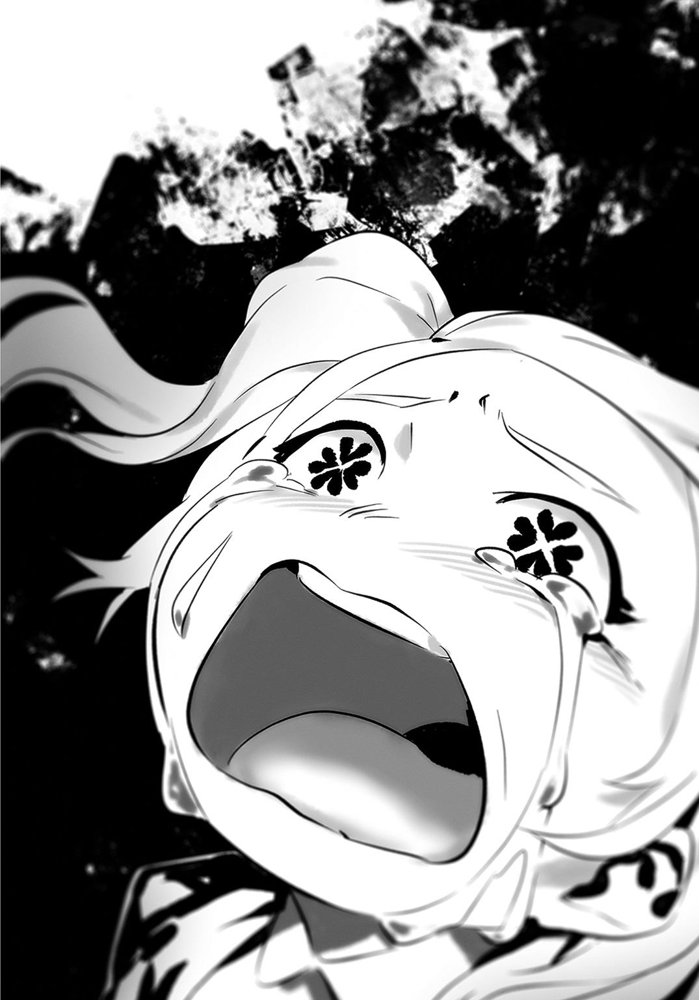
四章 瞳に映る紅と蒼
地震でも起こったのかと錯覚するかのような『揺れ』が起こった。ゴリガリガギと、金属を擦りつけたかのような音が鼓膜を叩く。クラクションが喚き叫ぶ。
「ひうっ！」と、蛍が素っ頓狂な悲鳴を零した。
狼真は「うぁ......」と呻いた。何が起こったのか解らなかった。ぼんやりする意識を、ゆっくりと手繰り寄せる。すると、自分がハンドルに突っ伏していることに気づいた。
そして、運転している車が、走行車線へと寄せられ、巨大なトラックに車体を押しつけるようにして併走しているではないか。
「へ？ あ......ぁ？ ......うおぁあぁあぁぁぁッ！」
何が起こっているのか、現実を把握した狼真は、ハンドルを両手でしかと握りしめる。急いで車を元の車線へと戻した。荒々しくなっていた呼吸を必死に整える。
――ヤバかった。死にかけた。いや、死んだ！
視界も、匂いも、音も、触覚も味覚も、すべてが遮断された無の空間。体験できないはずのそれを体験した。トラックにぶつかった瞬間、驚いた蛍が、偶然にも泣くのを止めた。衝撃が奇跡的に狼真を涅槃から呼び戻した。正直なところ、これほど強力だと思わなかった。いざという時は、車から飛び降りて、距離を取ればいいと思っていたが、そんな余裕など一切ない。
蛍はパニックになっている。能力を受け入れるだけで精一杯なのだろう。閉じ込められている理由や、パパの死、誘拐のことなど、考えれば考えるだけ、悲しい理由を見つけてしまう。
「おい、チビ！」
「ひゃいッ！」
狼真は、左腕を伸ばして、蛍の口を塞いだ。運転しながら、わずかに彼女の方へと視線をスライドさせる。彼女の目は赤みを帯びていて、液体が滲んでいた。
「いいか？ 俺たちは悪の組織に追われている。狙われているのはおまえだ。わかるな？」
「うう......！」
掌の向こうで、蛍は必死に何かを言おうとしていた。
「わかったら。頷け」
蛍は「う」と唸りながらも、首を縦に振った。
「このままじゃ俺が死ぬ。俺が死んだら、おまえを守る奴がいなくなる。わかるな？」
蛍は、再び首を縦に振った。狼真は、片手でハンドルを操って、周囲の車を避けていく。
「悲しいのはわかる。だが、考えれば考えるほど悲しくなるんだ。だから、一つのことだけを考えろ」
「......う......うぅ......」
「それは『泣かないこと』だ。わかったら、首を縦に振れ」
「......」
「もう一度言う。泣くな。俺のためにだ。その約束を守ってくれるなら、俺も、おまえを守ると約束してやる。できないのなら、おまえとはこれまでだ。俺は死ぬ」
掌の中で、蛍の口の動きが止まった。
「いいか。俺は、おまえに殺されるんだ」
凄まじく恐ろしい現実。怖いのは狼真だけではないだろう。彼女も、同じ『死』という記号を握っているのだ。狼真とは違い、ぬるま湯しか知らぬ彼女に『我慢』という感情はわかるまい。だが、死の意味はわかるはずだ。
――パパが、命を懸けて教えてくれたのだから。
二度と会話ができぬということ。二度と気持ちを通わすことができなくなるということ。嗚呼、子供からすれば、損得勘定でしかないのかもしれない。けど、死が究極の寂しさをもたらすことはわかると思う。
「約束、守れるか？」
狼真の視線が、蛍の視線と重なった。するとやがて、彼女はコクンと頷いた。
「手を離すぞ？」
蛍が再び頷いた。だから、狼真はようやく手をどけてやった。
「現実を受け入れて乗り越えろ。泣かないことを信じてるぜ。蛍」
狼真は、助手席に向けて拳を差し出した。蛍は、狼真と拳を交互に見やる。
「......蛍、泣かないよ。泣いちゃいけないってことはわかったんだよ」
蛍は、ぐじっと鼻をすすると、小さな拳を、狼真の拳にぶつけた。
「おう」
「その代わり、あとでいっぱいお話を聞いてもらうんだよ」
「それは、黒野の仕事だ。俺は、アニメの話しかできねぇ。おら、ここから、ちょいと怖くなるぞ」
「う、うんっ！」
狼真は、再びポケットの中からスマホを取り出した。
「よう、威竜。警察署へ行くにはどうしたらいいんだっけ？」
『......余計なコトを言いましたね』
取り調べの刑事の如く、威竜は、脅しつけるような低い声を這わせる。
「聞いてたぁ？ ケケケ、悪いな。告白の機会を俺が奪っちまって」
『自分勝手にもほどがあります！ もっと周囲のコトを――』
液晶のスピーカーボタンを押した。蛍に「持ってろ」と、スマホを渡す。
「説教はあとにしろ。このレンタカーはナビなしだ。おまえがナビれ。どっちに行けばいい？」
『......警察署からは遠ざかってますよ。次の交差点を右へ』
不機嫌そうに案内する威竜。狼真は、ハンドルを素早く切る。キュラキュラとタイヤの跡を刻みながら、広い交差点を豪快に右折する。
「ふぉおぉぉ。怖くないよ。泣かないよ」
蛍は奮い立たせるような呪文を唱えていた。
「なぁ。援軍はどうした？ 蛍様の一大事に、誰も助けに来ないのか？」
『それなんですが、あとで説明します。それよりも、別経路から四台近づいてます』
「敵か？」
『おそらく。そのうちの一台が、次の信号の左から来てます。速度を落としてください』
狼真はアクセルから足を離す。左方向から、猛スピードでバンが一台突っ込んでくる。それを視界に収めた瞬間、狼真はアクセルを踏んで急加速。バンのすぐうしろを、狼真の車が通過する。バンは、車体の向きを変え、倒れそうになりながらブレーキをかけていた。
『ところで......あなた、強いんですか？』
「まあ、それなりにな」
『あてんしょん。じゃあ、がんばってください。屋根にとりつかれます』
威竜が言った瞬間、ドンという音が降ってきた。屋根がへこみ、車体が激しく揺れる。
「ひぅ！」
チンピラ風味溢れる若い男が、フロントガラス上方より顔を覗かせてきた。どうやら、バンの屋根に張り付いていたようだ。避けた瞬間に飛んできたのだろう。
「あ、あばばばば」
「落ち着け、チビ。俺がいいって言うまで目ぇ瞑ってろよ」
「おぉお、おう、だよ！ ろうま、信じてるんだよ！」
運転席の脇にあった仕込み杖から、刃を引き抜く。男は、すぐさま頭を引っ込めた。狼真は、およその位置を想定しながら、曲者を穿つかのように何度も屋根を突き差した。ゾグ、という手応えがあった。引き抜いた刀身は血色を帯びていた。しかし、男が落ちる気配はない。
「おい、威竜。こいつらはホロか？ おまえの方で市民のデータは管理してんだろ？」
『はい......しかし、屋根の上の彼は、人間として登録されていますね』
「じゃあ、後天的なホロか」
『かもしれません。それよりも、もう一回速度を落としてもらえますか？』
狼真は、言われたとおりに速度を落とす。すると、どこからかエンジン音が聞こえてきた。バックミラーを覗くと、路地から飛び出すバイクの姿があった。
それは、車体を横滑りさせるかの如く鋭角的に曲がる。膝が路面に擦れそうだった。すぐに車体を起こし、超高速で接近してくる。誰が乗っているのか、狼真は一瞬で理解した。帽子を風に飛ばされないようにして運転できる器用者など黒野しかいない。
「おまえが呼んだのか？」
『ええ、蛍さんの危機を伝えたら、飛んで来てくれました』
凄まじい速さで急接近してきたバイクは、一瞬のうちに狼真の車を追い抜いていった。
だが、そのバイクに黒野の姿はない。乗り手を失ったバイクは、慣性のままに道路を貫き、やがてバランスを失い転倒。火花を散らしながら、路面を滑っていく。
そして、天井にドンという衝撃が落とされた。
「な、お、おまえはッ、がっ、あ、うああぁぁぁぁぁぁぁぁああぁぁぁッ！」
頭上が騒がしくなったかと思うと、チンピラ風の男が屋根から落下するのが見えた。派手に地面へ叩きつけられ、悲鳴と共に遠ざかっていく。
帽子を押さえながら、黒野が逆さまの状態で覗きこんできた。コンコンと助手席側のドアを叩くので、車を走らせたままウィンドウを下げてやった。
「よ。蛍」
蛍の瞳がパチリと開いた。
「にぃにだ！」
「おう。屋根にいた奴はやっつけたぞ。大丈夫か？」
「大丈夫だよ。蛍は泣かないんだよ！」
「そう、か？」
泣くというキーワードが気になったのだろう。黒野は蒼い瞳で、窺うように狼真を見た。
「能力のコト、教えちゃった」
ペロと舌を出す狼真。
「え......？ い、いいのか？」
説明してやりたいところだが、このままの状態では落ち着かないだろう。
「いいんだよ。ほら、黒野。追手が来てるぜ」
「追手？」と、後方を見る黒野。狼真もバックミラーで確認した。乗用車やバンが五台ほど追いかけてきている。
「......わかった。が、事情は威竜から聞いた。蛍を利用したのは許さないからな」
「こいつはチビのためでもあるんだぜ？ 市民の皆様のためにも、悪党は駆逐しなくちゃな。おうら、おまえの出番だ、行け！ 偽善キング、ヤクチュウ！」
「......あとで覚えてろよ。ったく」
そう言い残して、黒野は跳んだ。蜘蛛を模したアメコミヒーローの如く、後方に見える追跡車へと飛び移った。うしろの連中を任せ、狼真は黒野を置き去りにするかの如く速度を上げる。
『次、右に曲がってください』
威竜の指示があれば、そのとおりにハンドルを切る狼真。それを繰り返して、上手く敵をやり過ごしていく。威竜は、遠回りでも敵の少ないルートで案内してくれる。
「威竜。さっきから、警察が仕事してる気配がねぇぞ」
『それがですね......少し、プランを変更する必要があるようです』
「......悪い知らせか？」
『警察車両が軒並み足止めを食らっています』
「は？ どうやって？」
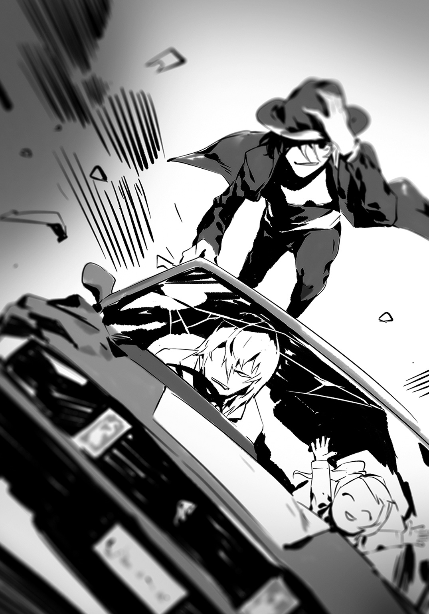
『渋滞させたり、とおせんぼしてます』
警察署の出入口、及び狼真と合流できるであろう経路の多くを、若者たちが封鎖しているというのだ。ただ、大勢で道を塞ぎ、車を駐車して妨害している。それが、白瑠璃の各地で行われている。世紀末でもあるまいし、邪魔だからといって轢き殺すことなどできない。鎮圧に動いているが、連中は、軒並みホロなのか、一筋縄ではいかないようだ。戦闘に発展し、完全に足止めを食らっている。
「警察の皆様に、俺からのエールを伝えてくれ。『この税金泥棒が』ってな」
『わかりました』
白瑠璃の治安は決して悪くない。ホロという異端者と共存していく上で、それを鎮圧する手段はどうしても必要になってくる。警察の数も多ければ質だっていい。だからこそ、市民はホロと一緒の空気を吸っていられる。それが、足止めされているということは、相手も、それだけの数と質を用意していたということになる。
狼真は、敵を見くびっていたのかもしれない。いや、狼真だけではない。威竜もだ。黒野を頼っているぐらいである。よっぽど、切羽詰まった状況なのだろう。
『警察署に向かうのは得策ではなくなりました。対応に手一杯です。なので、都心部から離れてもらいます。東に向かうと、自衛隊基地がありますので、そこを目的地にしましょう』
狼真は、威竜の指示に従って、車を進めていく。せっかく、黒野が相手をしてくれているというのに、多方面から続々と敵側の車が集まってきているようであった。
『正面から二台来てますね。次の交差点を右へ曲がってください』
狼真はポツリと不安を漏らしながら、ハンドルを回す。
「なぁんか、さっきから嫌な予感がするんだよなぁ。おまえ、誘導してるんじゃなくて、誘導させられてるんじゃ――」
その時、車体の前方に激しい衝撃が走る。フロントが派手に沈み、アスファルトをガリガリと削るようにして急ブレーキがかかった。蛍が「ぎにゃん！」と潰れた猫のような悲鳴を上げる。狼真も、突如として膨らんだエアバッグに押されて「なッ？」と、困惑の声を漏らした。
エンジンが損傷したのか、アクセルが効かなくなる。車は完全に息吹を失った。
静かな車内。フロントガラスの向こう側へと視線を向ける狼真。
そこにいた人物に対し、顔を引きつらせながら恭しく質問した。
「......え、ええっと、宮間さんでしたっけ？」
ボンネットに乗って、拳を突き立てている宮間。彼の強烈な一撃によって、車の前面がグシャグシャになっている。ビルの屋上から飛び降りてきたのだろう。
わずかにズレたサングラスから覗くのは、真っ赤な瞳だ。まるで、ブラッディドラッグを使用しているかのようだった。
狼真は刀を摑んだ。エアバッグの空気が抜けたところで、宮間めがけて、鋭い突きを放つ。ヒビの入ったフロントガラスを銀色が貫いた。
しかし、宮間は猿のように翻る。道路の上へと、音もなく着地した。
「チッ」
狼真はドアを開け、宮間を意識しながら降りる。
「チビ。おまえも降りろ」
「う、うんっ」
蛍はシートベルトを外し、運転席側を抜けるようにして下車する。狼真の隣へ並び、ジャケットの裾を不安げにちんまりと摑んだ。
宮間は、サングラスのズレを戻しながら、偉そうに語り出す。
「よう、狼真。俺が何しに来たのかはわかるよな？」
「幼女誘拐だろ。ロリコン」
「死人とか、怪我人とか、あまり出したくないんだ。黒野さんに怒られるからな。おとなしく蛍ちゃんを渡してくれないか？」
ビルの広告塔や、液晶看板、掲示板などの光が、街並みと狼真たちを照らす。片側三車線のだだっ広い道路だというのに、不気味なほど静かであった。オフィス街に近いせいか、ほとんど人がいない。
「怒られるも何も、ボスはとっくにカンカンだぜ。おまえも絶縁覚悟で、裏切ったんだろ？ 偽善王たる黒野様とはいえ、おまえだけは許さねぇよ」
「絶縁は覚悟しているが、尊敬してるんだ。汲み取れる意志は汲み取るさ」
おそらく宮間は、許されないことをしようとしている。蛍を殺すか、現状以下の状態で隔離するか。あるいは売り飛ばすか。
「......ずっと気になってたんだが......おまえのバックに誰かいるだろ？」
「雑談で時間稼ぎか？」
「気になってたんだよ。昨日と今日で、あまりに態度が違うもんでな。昨晩、おまえは、教会を出たあと『誰か』から蛍の能力を教えてもらった。そいつの名前は天刀紫苑だ。違うか？」
「さあな。おまえには関係のない話だ」
「冥土の土産に教えてくれ。俺の勝利フラグにもなる」
「やなこった。時間が惜しい。邪魔をするなら、容赦はしないぞ。少し前に、新作のブラッディドラッグを手に入れたんだ。ユリウスっていうな。結構、俺にあっているらしい――」
言葉を閉ざし、宮間が踏み込んだ。大地を蹴飛ばすようなその一歩は、五、六メートルはある間合いを、一瞬にして詰める。飛んできた、と、表現した方がいいだろうか。
宮間の正拳突きが放たれる。狼真は蛍の手を払い、身体を捻るように回避。そして反撃。
流れるように刀を振るう。宮間は、軽く下がって、刀身をやり過ごす。
狼真は、半歩踏み込み、四度、刀を走らせる。宮間は、三度目まで上手くかわし、四度目で退いた。再び間合いができる。狼真は「ふっ」と一呼吸した。
斬撃の一つが、宮間の頰に一本の赤い線を生み出していた。ダラリと流れ出る血。
狼真は、その傷口が治っていくのを見逃さなかった。
「自己修復能力があるようだな。黒野は、おまえを人間だと言っていたぜ。誰から能力をもらった？」
傷口は消え、血の色だけが残る。宮間は、それを親指で拭った。
「言う必要はない」
背後から車のエンジン音が聞こえた。キキッとやや車体を斜めに向け、タイヤを滑らせるようにブレーキをかけて止まった。中から続々とチンピラが降りてくる。三台。計十人。さらに、周囲のビルの隙間からも、若者たちが現れる。すぐさま、狼真を囲み始めた。こちらは二十人ほどだろうか。
「ろ、ろうま......」
「チビ。目ぇ瞑ってろ。絶対に俺から離れるなよ」
「め、目を瞑ってたら、離れてるかどうかわからないんだよ？」
☆
車の屋根での戦いは、スパシオンを使う黒野にとって、非常に有利な場であった。振り落とそうとハンドルを動かされても、刹那単位で動きを察知できるゆえ、すぐさま重心を切り替えることができる。たとえ急ブレーキを踏まれても対応できる。
周囲には足場以外に四台の車。黒野は、セダンの屋根の上へと脱力気味に佇んでいた。帽子が飛ばないよう、左手を使って押さえる。
他の車の窓から、続々と若い男たちが這い出て、黒野のように屋根へと上った。
「狼真たちを追わせるわけにはいかないからなぁ」
軽自動車が近づいてきた。屋根にいた金髪の若者が飛び移ってくる。黒野は、トランクの方へと足を運ぶ。金髪は、着地した途端に蹴りを放った。黒野は上半身を素早く引いて回避。同時に、そいつの軸足を掬うかのように足払いをくらわせる。金髪は、屋根へと派手に身体を打ちつけると、そのままリアウィンドウを転がってきた。黒野はひょいと飛び越える。金髪は、路面へと落下し「うぎゃぁああぁぁぁッ！」という悲鳴を残して、遠のいていった。
瞬間、急ブレーキがかかった。察した黒野はやや後方を走るバンへと飛び移る。屋根には、太めの男がいた。全身を使って摑みかかってくる。
黒野は、帽子を外し、風へと委ねるように飛ばした。それは、男の顔へと覆い被さる。
「む、おっ？」
視界を奪われたまま、太めの男は両腕でクワガタのように挟み込もうとしてきた。黒野は股下へと滑り込むように潜った。向き直ると同時に尻を蹴飛ばすと、男はバランスを崩しながらフロントの方へ。進行方向に落ちるのはマズイと判断したのだろう。運転手側へと、よろめくように落下していった。帽子が舞い戻ってきたので、黒野はキャッチして頭に乗せる。
「何人いやがるんだよ。ったく」
黒野は、周囲を囲む車を眺めながら、苦々しくつぶやいた。車から、補塡されるように敵が這い出てきて、再び屋根に登る。
ふと、進路上に人影が見えた。バンはそれを轢き殺さんばかりに突っ込んでいったのだが、ぶつかる寸前で人影が消える。何があったのか、黒野は見逃していなかった。
「姉ちゃん？」
薙原衣澄が跳躍し、黒野の乗っているバンへと華麗に推参したのである。
スタイリッシュなジャケットは、相変わらずのシスター仕様。ポニーテールを風にはためかせ、自信に溢れた笑みを浮かべる彼女の姿は、実に格好がよかった。
「よ。弥人、お待たせ。姉ちゃんも加勢に来たよ」
「教会の子供たちはいいのか？」
「モカに任せてきた。蛍ちゃんが誘拐されるのは嫌だし、ミヤのことも気がかりだからね」
頼もしかった。衣澄の身体能力は、黒野の知るホロの中でもトップクラスである。加えて、絶対に傷つかない肉体を持っているのだ。
「狼真たちを追いかけながら戦いたい。この車を奪えるか？」
「オッケイ。怪力が自慢の姉ちゃんだからね。他の敵は任せるよ？」
黒野と衣澄は、背中を合わせた。と、思ったその時だった。
――ドン、と、強い衝撃が、背中を押した。
「へ......？」
それは、意識の外から、突如としてやってきた。
足場から靴底が離れる瞬間、黒野はとっさに振り返った。そこには『押しました』といわんばかりに、掌を突き出している薙原衣澄の姿があった。
押されるまで気がつかなかった。押されてからようやく反応できた。
スパシオンを服用しているはずの黒野が、なにゆえ、こんな間抜けなことになったかというと――完全に油断していたからであろう。
全身が浮遊感を覚えた。
摑めるものは何もなかった。空中へと解き放たれ、風だけが黒野を包んだ。
スロウな意識の中、黒野弥人は目を丸くして、姉と慕っていた女性に問いかける。
「な、なぜ......？」
スパシオンを服用しているとはいえ、百キロ近い速度で走っている車から落ちれば、どうなるかなど、わかっているはずだ。
「ごめん、弥人。姉ちゃんには、守らなきゃいけないたくさんの子供たちがいるんだよ......」
轟々と唸る風の音が邪魔だった。けど、研ぎ澄まされた五感が、彼女の謝罪の言葉を聞き、唇の動きを読んだ。
黒野は、とにもかくにも、衝撃と痛みに備えなければならなかった。
頭から落ちるのはマズい。まずは、足からだろう。全身を包む装備の中で、もっとも丈夫なのは靴である。踵から、アスファルトへと触れる。刹那、どうすることもできない慣性が全身を包み、自由を奪う。黒野の身体が、風車の如く派手に転がっていく。アスファルトという動かぬ凶器に、全身を滅多打ちにされた。
研ぎ澄まされた感覚は、痛みを必要以上に伝え、そして永遠ともいえる長さで体験させる。路面を転がってから止まるまでの数秒は、何十分もの拷問に感じた。
黒野弥人の肉体と精神が、完膚無きまでに叩きのめされる。
白瑠璃市のど真ん中。ボロ雑巾のように朽ち果てた黒野弥人が横たわった。
☆
天刀狼真は、タンッと軽快に踏み込んだ。同時に得物を突き出す。若者の腹部を貫き、そのまま横薙ぎに裂く。――しかし、そんな殺人鬼のような所業でも、連中は死ななかった。
「ぜぇ、ぜぇ......なぁ、ヒント。ヒントくれ。弱点を教えてくれ。な？ それぐらいのハンデがあってもいいだろ？ 紫外線に弱いとかよっ」
「弱点なんかねえよ」
台詞を述べながら、スキンヘッドの男が飛び蹴りを放つ。狼真は、それをバックステップで回避すると、胸部めがけて刀を差し込み、すかさず金的蹴りを食らわせる。狼真が得物を引き抜くと、ＫＯされたボクサーのように膝から崩れ落ちた。
戦いの中で、狼真は理解する。連中の能力は『再生』ではなくて『修復』だ。ゆえに、腕を斬り落としても、生えてくることはない。切断面をくっつけることで、ようやく細胞が元通りになろうと修復する。殺すことはできなくても気絶させることはできる。不死身だが、痛みはあるという矛盾のある種族で統一されていた。
狼真は、蛍を守るという使命もある。凄惨な光景は、お子様に刺激が強すぎる。目を閉じたままチョロチョロされても困るゆえ、彼女は、狼真の背中に、ちょこんとひっついていた。腕を首に巻きつけ、両足で狼真の身体を挟んでいる。野郎どもの悲鳴が打ちあがる度に「ひぅ」と首を締めてくる。狼真をじわじわと弱らせている一番の原因だ。
「目を開けるな。んで、泣くなよ。絶対に泣くなよ！ 絶対だぞ！」
芸人の前フリのようにも聞こえるが、決して冗談ではない。もし、この状態で泣かれたら、狼真は逃げることもできずに死んでしまう。文字どおりの背水の陣であった。
そして宮間。奴だけは段違いで厄介だ。ホロの肉体に、ブラッディドラッグの恩恵。他の連中とは、明らかに動きが違った。
狼真の横薙ぎの一閃。宮間はしゃがんで回避すると同時に、ギュルリと身体を捻る。足元を掬うような蹴りを放つ。今度は狼真が跳ねるようにかわした。宮間がバックナックルを放つ。狼真は『刃の部分』で、それを受け止めた。彼の腕が刀身を通過する。いかに丈夫な腕でも、刃は殴り飛ばせまい。彼の腕が真っ二つに切り離され、宙に舞った。
瞬間、彼は跳躍して己が腕を回収。そのまま、空中で身体を捩ると、胴回し回転蹴りを繰り出した。とっさのことだったので、狼真は刀の側面で受け止めてしまう。支えきれず、掌から刀が離れた。足元でカキンとバウンドし、弾かれるようにして得物が飛んでいった。
軽やかに着地すると、宮間は悠々と腕を切断面に装着する。
「無駄な足搔きだな。あきらめろよ。この数だ。おまえに勝てる見込みなんて――」
ふと、狼真は、宮間の後方を覗きこんだ。
「あ......黒野......？」
「え？」
宮間が慌てて振り向いた。その隙を狙って、狼真は全体重を乗せたボディブローを撃ち放つ。
それは、宮間の内臓奥深くにまでめり込み、白瑠璃市の外壁の向こう、遙か彼方まで吹っ飛ばす、予定だったのだが――。
拳が横腹にドムンと直撃したまではよかった。しかし、どういう肉体をしているのか、まったくといっていいほど、めり込む感触がなかった。痛がる気配もない。むしろ、狼真の手の方が痛かった。
「..................黒野さんはどこだ？ 見当たらねぇが......なんの真似だ？」
「......ぇ、ぁ......キュ、キュイ様の真似かな？」
宮間は、狼真の胸倉を右手で摑むと、クレーンのように持ちあげる。
蛍が手を離してしまった。「あぅ！」と、地面へ尻餅をつく。思わず、目を開けてしまったようだ。追い詰められている狼真を見て「あわわ」と怯えた声を漂わせる。
「じ、自分だけ狡ぃぞ。ブラッグなんか使いやがって！」
逃れようと、宮間の腕を殴りつける。まるで、硬質ゴムを相手にしているかのようだった。
宮間は、もう片方の掌を広げ――ギュッと圧縮するように拳を作る。
「や、やめろ、離せ！ おまえのボスが言ってた！ 人を殺しちゃいけないってな！ ぎぶ。ぐ、ぁ......ぎ、ぎぶあっぷ。お、俺の負けだ。命だけはぁぁ......」
「死ぬかどうかは、おまえ次第だ。耐えろよ」
奴の拳をまともに受けたら、タダでは済まないだろう。死ぬか、再起不能になるか。
「ろうま、ろうまぁぁあぁ！」
絶望的な光景を前に、蛍が、不安そうに名前を叫んだ。
☆
黒野弥人は、震える手を伸ばして、地面を摑んだ。それを手繰り寄せるようにして、進む。
さらにもう一度、身体を引きずるようにして、進む。進んだあとには、なめくじがとおったかのように、赤い液体がぬらりと帯を引いていた。荒々しい呼吸を刻みながら、再度地面を摑んだ。むりやりといった感じに、上半身を起こす。ようやく膝をついた姿勢となる。
少し休んだ。帽子を被り直そうと頭に手をやった。そこにはなくて、髪を摑んでしまう。ぬるりとした感触があった。掌を見やると、ペンキのバケツに手を突っ込んだかのように、べっとりと血がついていた。ゆっくりと眼球をスライドさせ、黒野は帽子を捜した。十メートルほど先にあるそれを見て、少し気を落とす。
衣澄に突き落とされて、黒野はようやく理解した。
彼女も、宮間側の人間なのだと。
白瑠璃の未来を思えば、蛍の存在は喜べない。抑止力とはいえ、万が一にも兵器として運用されたら、大勢のホロが死ぬ。その中には、教会の子供たちだって含まれている。
「は......はは......」
黒野は自虐的に笑った。自分が甘かったのだ。宮間も衣澄も、己を犠牲にして、目的を成し遂げる覚悟があった。黒野にもあった。なかったのは裏切る覚悟。自分が悪人になってまでも信念を貫きとおす『それ』がなかったから、馬鹿の一つ覚えのように不覚を取ってしまうのだ。
黒野は、立ち上がって、一歩だけ歩を進める。
『黒野さん。......今、救急車を呼びます』
歩道にあったディスク状の立体映写機から、薄い色の威竜が浮かび上がっていた。
気遣う彼女の言葉を無視して、黒野は問いかける。
「蛍は......狼真は、どうなった？」
『宮間さんに車を壊されてしまいました。狼真さんが、蛍さんを必死に守ってくれてます』
「そう、か」
黒野は、呻くように言った。
『衣澄さんは......どういうつもりだったんですか？ 裏切ったんですか？ それとも、あなたを戦いに巻き込まないために、突き落としたんですか？』
「さあ、な」
真実は解っている。けど、説明に体力を使いたくなかったから、黒野は適当に濁した。
『郊外の自衛隊が、もう少しで到着します。黒野さんの出番は終わりました。足手纏いになるだけです。休んでくださって結構です』
「......いい。黙ってろ」
黒野は、また一歩、進んだ。ポタと血が落ちて、さらに一歩進んだ。
『なぜ、そこまでするのですか？ 蛍さんも、狼真さんも、あなたにとって他人でしょう』
蛍がかわいそうだから？ 狼真に借りがあるから？ 正義のため？
理由ならば、いくつもある。けど、黒野を突き動かしているのは、そんな高尚なものではない。もっと、自己中心的で身勝手な、バカバカしい理由に集約される。
善行など所詮は自己満足。黒野が戦う理由は自分のため。誰のためでもない。それを、誰よりも知って、認めているからこそ、黒野弥人は戦い続けることができる。
――俺は、偽善者なんだから。
黒野弥人の人生が大きく変わったのは小学校六年の時だった。
修学旅行から帰ってきたら、両親が部屋で死んでいたのだ。
父は全身の筋肉と骨を潰され、母は喉を抉られていた。部屋は凄惨なもので、超巨大なトマトを破裂させたかのように、赤でいっぱいだった。
幼い黒野は喚き散らしたのだろう。気を失ったのかも。病院にも行ったかもしれない。その辺りの記憶は曖昧で、気がついたら葬式や掃除などのすべてが終わっていた。事件のあった部屋にポツンと取り残されていたのだ。引き取ることに、親戚の誰もが難色を示したらしい。黒野が、やんちゃな子供だったということもある。親が『殺された』というのもよくなかった。酷い死に方だったし、恨みを買っているのではないかと、関わるのを恐れたようだ。犯人だって捕まっていない。
事件をキッカケに、学校へ行くのをやめた。勉強は嫌いだったし、人と会いたくなかった。行かないことに誰も文句を言わないから、必要性を感じなかった。シンプルに人生を怠けていたのだと思う。毎日が、家で一人ぼっちだ。
しばらくすると、先生や親戚、警察の人が訪問して、黒野を励ますようになる。今後の生活についても、いろいろとアドバイスしてくれた。それは、黒野をとても惨めな気持ちにさせた。黒野を想って言ってくれているのはわかっている。けど、愛がなかった。立派な言葉を並べても、本気で『人生に介入』してこようとはしない。
例えるなら、黒野は嵐の中に孤立する船舶だ。他人は無線でアドバイスはしてくれるが、己を犠牲にしてまで救出はしない。けど、両親であれば、たとえそれが無謀な行為であったとしても、己を犠牲にして助けてくれる。黒野は、そう信じている。
そのギャップを思い、何度も打ちのめされるような気分になった。
そんな日々が続いたある日。黒野は、絶対に存在しないと思っていた『人生に介入しようとする人』と出会う。それが、薙原衣澄だった。
『うちの教会で暮らしてみない？』
塞ぎこんでいる黒野を、教会の方で面倒を見てやってほしい。学校に通うよう促してほしいと、教師から衣澄に相談があったとのこと。最初は、他の大人と同類だと思って、黒野は拒絶した。けど、衣澄の勧誘はパワフルだった。毎日といっていいほど、黒野の家を訪ねてくる。彼女は言いたいことを言って、聞きたいことを聞いた。そして、仕事があるからと一時間キッカリで帰っていく。居留守を使っても、一時間はインターホンを押し続け、時には窓からの侵入を試みる。合鍵もいつの間にか作られていた。忙しい時は、教会の子供たちが派遣された。彼らもパワフルで、居留守を使ってもあきらめない。無邪気に黒野を遊びに誘う。黙っていても勝手に話しだす。黒野を元気づける作戦なのだと楽しんでいた。
それが二週間ほど続くと、衣澄は強硬手段に打って出た。
『弥人、引っ越すよ』
『......は？』
『教会に引っ越すの。言っとくけど、拒否権はないから。ちゃんと学校行って、やんちゃしてればいいけど、家から出ないわ、飯もロクに食べないわ、遊ばないわで、健全なガキンチョじゃないもん。このままじゃ、引きこもりになっちゃいそうだからね』
嫌がる黒野を車に放り込んで、有無を言わさず発進。冗談じゃないと怒鳴り散らしたが、彼女はどこ吹く風といった感じで、聞き入れてくれなかった。
教会に到着すると、大食堂へ案内される。誕生会のような飾りつけがしてあった。『黒野弥人君 教会へようこそ』の手作り看板があった。子供たちがクラッカーを鳴らして迎えてくれる。黒野は苛立っていたが、楽しげな子供たちを見ていると、さすがに怒鳴れなかった。嬉しかったからではない。大人げないと思ったからだ。
けど、そこからは、衣澄たちのペースだ。『まずは、お試し一週間』と言われて、渋々教会で寝泊まりすることになった。衣澄も子供たちも、決して黒野に媚びなかった。哀れむこともない。特別扱いはされず、家事全般をやらされる。サボったりすると、年長の子供たちに根気よく叱られた。寝る時は大勢の子供たちと一緒の大部屋だ。黒野の境遇を、根掘り葉掘り聞きだそうとしてくる。孤独に暮らしていた方が、肉体的にも精神的にも楽だった。が、不思議なことに、教会で過ごしていると、無骨な心が徐々に丸くなっていくような気がした。
約束の『お試し一週間』が過ぎた時、本当は、もっと一緒にいたかったけど、黒野は強がるように言った。
『もう、帰るよ。一週間経ったし』
『あ、だめだめ。また、引きこもる気でしょ？ どうせ、姉ちゃんが連れ戻しに行くことになるんだから、もうしばらくここにいな。嫌なら、姉ちゃんを倒していきなさい』
倒していけと言われても、やっつけることなどできるわけがない。本心では、一緒にいたいのだから、逃げ出す理由もなかった。
ただ、そんな彼女の台詞のおかげで、幼い黒野は『しょうがないなぁ』と、生意気な台詞を言うことができたのだ。微笑みながら。
黒野は明るさを取り戻しつつあった。学校にも通い、友達とも遊ぶようになった。順風満帆な生活を送っていた。
だが、二カ月が経過したある日の夜。黒野は、衣澄に呼び出された。
向かい合うようにソファへと座り、彼女は、いつになく真剣な表情で告げる。
『警察の人から電話があってさ。お父さんとお母さんを死なせた犯人がわかったんだって』
行方を追っている段階であるが、警察の方では、ほぼ間違いないと見ている。近いうちに指名手配され、ニュースでも取り上げられる。どんな形であれ、黒野は知ることになるだろうと、衣澄に連絡してくれたようだ。
黒野は複雑な気持ちだった。衣澄や仲間のおかげで、心の傷も癒えてきた。教会の暮らしも気に入っている。蒸し返さなくてもいいのではないか。というよりも、現実と向き合うのが、怖かったのだと思う。しかし、情報を完全にシャットアウトできないなら、衣澄の口から聞きたいと、黒野は思った。
衣澄は、犯人の名前を告げた。最初は、なんの感情も湧かなかった。父母が殺されたという現実は変わらない。名前を聞いたところで、それはアイコンのようなものでしかない。深く追及することもなく、黒野は何事もなかったかのように、平然と部屋をあとにした。けど、不思議なことに、その日は眠れなかった。布団に入ると、途端に憎悪が溢れだしてきたのだ。
――なぜ、父と母は殺されなければならなかったのか。犯人は、残された息子のコトを考えたことがあるのか。罪悪感など微塵も感じていないのだろう。それならとっくに出頭している。犯人のせいで、黒野は教会に住んでいる。衣澄と出会えたのは幸運だが、両親の死は忌むべき記憶だ。
ペットに名前を付けると、情が湧くのに似ているかもしれない。犯人の名前を耳にし、心に刻み、人物像を思い描き、そして憎悪を向けられる具体的な対象として創造してしまった。
その日から、黒野弥人は憎しみを育てることになる。不幸を感じる度、犯人のせいだと呪うようになった。親のいないことをからかわれる。授業参観に衣澄が来る。友達と喧嘩をする。雑な家事をして怒られる。どんな些細なことも、両親さえいればと考えてしまう。
数カ月後。黒野は中学一年生になった。教会では小中高の入学者全員のお祝いパーティーをした。その時『将来の夢』について、語りあう機会があった。黒野は『警察官』と、言った。
夜になって、黒野は一人で院長室を訪ねた。進路のことを相談したいというのが口実だった。けど、実際は違う。
『姉ちゃん。進路のことで相談があるんだけど――』
『うん？ 警察官になりたいってやつ？』
警察官というのは半分本当で、半分噓だ。警察官になれば、未だ捕まらぬ親の仇を見つけられると思ったから。本当の目的は、その先にある。
『ああ。俺は、父さんと母さんを殺した奴を見つけて......殺してやりたい』
たぶん、黒野の人生の中で、一番怖い言葉を吐いたと思う。
衣澄は、涼しげな表情で聞いていた。しばらく考えて、彼女は自分の考えを述べる。
『そっか。あんまし、よくない動機だね。......なんで殺したいのかな？』
犯人の名前を聞いて以来、奴の存在がずっと黒野の心を蝕んでいる。忘れようと思っても忘れられない。払拭できないのは、奴が生きているからだ。警察が成し遂げられないなら、黒野がやるしかないだろう。一生、奴の影がついて回るのは嫌だった。
『殺したところで満足しないよ。フフッ。中一にして、中二病を拗らせたね』
『俺は真面目に言ってる。前へと進むために、ちゃんと考えたんだ』
『弥人にとって、お父さんとお母さんの存在は、物凄く大きいと思う。けど、復讐したところで、得られるのは、ほんのわずかな達成感とドス黒い罪悪感。のほほんと生活していた方が、弥人にとって幸せだよ』
衣澄の言っていることは、ただの綺麗事だと思った。間違ってはいないが、黒野の気持ちをないがしろにしている。成し遂げなければ、漆黒の霧は晴れることがない。
『酷なことかもしれないけど、悪い記憶は、ずっと心の中に残る。それは、アンタだけじゃない。教会には虐待された子もいる。虐待どころか、何一つしてもらえなかった子もいる。あの子たちは、時折それを思い出して、心を暴れさせるんだ。それは、悪いことじゃない。そうやって、向き合うことで、少しずつ乗り越えていくんだ。弥人も一緒だよ』
『向き合ったよ。けど、乗り越えられなかった。でも、乗り越えたいから、そうするしかないんだって思った』
『弥人には無理だよ。優しすぎるからね』
『そんなことは......ない』
殺すという行為が、まともではないことぐらいわかっている。その行為を恐れている自分がいることも自覚している。それを補完するために、黒野はここへ来た。
衣澄が、肯定し、背中を押してくれるのならばありがたい。否定し、蔑むようであれば、所詮自分の理解者はいないのだと、漆黒の意志を燃やすことができる。卑怯かもしれないが、黒野は一線を越えるために、薙原衣澄を利用しているのだと思う。
『無理だよ。噓だと思うのなら、試してみようか？』
衣澄は、デスクからカッターナイフを持ってきた。隣に座って、チキチキと刃をスライドさせると、強引に黒野の手に握らせる。そして、グイと彼女の喉元に近づけた。
『な、何を......ッ？』
黒野はギョッとした。払い除けようとしたけど、ビクともしなかった。
当時は、公的にホロが認められる前で、その存在は一部の人間が知っているだけ。衣澄がバケモノだなんて思いもしない。殺してしまうのではないかと、恐怖がこみ上げてくる。
『犯人を殺したいんだよね......？ 人を殺す覚悟があるんだよね......？ 殺される身内の痛みは考えたことあるよね？ 当事者なんだから。じゃあ、殺す側の身内の気持ちは......？』
衣澄の口調は、赤子に言い聞かせるかの如く穏やかだった。
『は、離せっ、何を考えてんだよッ！』
『あんたの信念は、その程度だったのかな？ 本物の悪党ならともかく、弥人は凄く優しい子なんだ。大勢の人を愛してるし、大勢の人に愛されてる。姉ちゃんも愛してる。弥人が、復讐に生きるなんて、胸が張り裂けそうになる。それこそ、姉ちゃんは、死にたくなるぐらい嫌なんだよ？』
心臓を鷲摑みにされているかのような気分になった。衣澄の、黒々とした瞳が怖かった。まるで心の中を見透かしているみたいだ。黒野は、まぶたを閉じた。摑まされているカッターの刃が、徐々に彼女の首へと沈んでいくような気がした。ガチガチと歯がぶつかっていた。杭を打たれたように胸が苦しくなる。喉の奥から胃液が込み上げてくるようだった。
『これが、人を殺すっていうことだよ？ 命を奪うだけじゃない。周りにいる人たちの心も壊すんだ。他人を思いやる気持ちがあるなら、殺しの才能なんてないよ。本気なら、姉ちゃんを殺してみなさい。あんたの人生がかかってるからね。姉ちゃんにも、人生を懸ける覚悟がある。弥人には、その覚悟があるの？』
どんなに抵抗しても離してくれなかった。怒っているわけでもない、叱っているわけでもない。呆れているわけでもない。ただ、衣澄は問うているだけ。
刃が喉へ。
やがて黒野が放った言葉は――。
『ごめんなさい！』
情けないが、黒野には人を殺す才能などなかったらしい。殺すことによって起こる負の連鎖を背負う覚悟もなかった。殺したいという言葉は、黒野が思っていた以上に薄っぺらかった。
ようやく、衣澄が腕を離してくれた。黒野は、勢い余って、寝転がるようにソファへと背中から倒れる。瞬間、衣澄がのしかかるように全身で抱きしめてきた。
『ね、姉ちゃん？』
『やっぱり、弥人は優しい子だったね』
それは、とても力強い抱擁で、ずっとこうしていたいと思えるほど温かかった。
『なんで、姉ちゃんに相談したのか......弥人はわかってる？』
覚悟を知ってもらいたかったのと、覚悟を固めたかったからだ。
『弥人はね。姉ちゃんに止めてほしいから、ここに来たんだよ？ 憎む気持ちは本当だと思う。殺したい気持ちもね。けど、弥人は優しいから、絶対にできないんだ。だから、どうすればいいのか、一人でずっと悩んでいた。けど、姉ちゃんなら、絶対に正しい方へと導いてくれると信じていた。だから、こうやって打ち明けに来たんだよ』
......きっと、衣澄の言ったとおりだったのだと思う。
こうして優しく抱擁してほしかった。暴れた心を力尽くで押さえつけてほしかった。
もう、黒野の辞書から、復讐の二文字は消えたと思う。
しかし、犯人に対する憎悪が、黒野を侵食していたのは事実だった。抱いた感情も虚構ではない。そうなると、黒野の心に巨大な不安が産み落とされる。
『俺は......これからなんのために生きればいいのかな......？』
黒野は、問いかけるようにつぶやいた。復讐なんてものは、シンプルでベクトルを向けやすいモノだ。それを除外された黒野は、胸に巨大な風穴が開いたような気分になった。理由がなければ警察官になる必要もない。心を埋める何かが欲しかった。
『生きる理由なんて、教えてあげられないよ』
残酷な答えだけど、それが現実なのだろう。黒野の質問に正解なんてない。あったとしても十人十色。他人に教えてもらうようなものでもない。
『けど、探し方なら教えてあげられる』
『......探し方？』
『人に感謝されることをいっぱいするの。すると、温かい気持ちになれる。人生を応援してくれる人が増えるんだ。その方がずっと自分の価値を見つけやすいんだから――』
溢れ出る憎悪を抑えるには、別のことを考えなければならなかった。油断すれば、負の濁流に心が飲み込まれてしまうような気がした。
次の日から、黒野はバカ正直に善行を積んでみた。教会の掃除や、町のゴミ拾いなど、最初はとても小さなこと。やがて、困っている人や学校で虐められている子供を助けるようになった。さらにエスカレートし、町でカツアゲにあっている中年や、不良に絡まれている女性なども救った。黒野の行為をバカだと笑う人はいた。領分を越えた正義は、ただの自己満足でしかないし、何かあったら、苦労するのは自分と身内だ。アニメのように勧善懲悪とはいかないのが現実である。けど、認めてくれる人はいる。衣澄も肯定してくれた。それが黒野という人間の生き方ならば、貫けばいいのだと。
善行を繰り返すのは、黒野の自我を保つため。
他人のために何かをすることで、偽善者であることで、自己満足な行為を続けることで、黒野弥人は満たされている。誰かに感謝され、必要とされることで、自己肯定できる。生きる価値があるのだと、復讐以上の使命があるのだと、思い続けることができる。
やがて、青年の信念は復讐心を融解させ、気がつけば自分が偽善者でいることに違和感を覚えなくなった。それが基本の人格なのだと錯覚する。
自分が、他人のために傷つくことを不思議に思わない。人を助けることなど日常だ。
――嗚呼、最低の偽善者だ。
――けれど、それが最高の自己満足だ。
――俺、生きてるッ。
そして、今。黒野弥人は歩くことができる。細胞が動くことを拒んでいても、心がそれを許さなかった。妥協し、あきらめてしまえば、心が破壊される。基本が崩壊してしまえば、醜い人間になるという恐怖があった。すべてが終わった時に、全力を尽くさなかったことを後悔するのは絶対に嫌だった。
薙原衣澄も、己の『基本』のために戦っているのだろう。子供のため、白瑠璃のため。
凄く理解してやれる。ただ、黒野の偽善も理解してもらわなければならない。
裏切られても、黒野弥人は薙原衣澄を愛している。
裏切っても、薙原衣澄は黒野弥人を愛している。
二人は――そしてクロノスは、そんな関係が許されるのだから。
歩いた。咳をした。血を吐いた。爪先を引きずるようにして歩いた。膝をついた。
地面が目の前に迫った。アスファルトに突っ伏した。全身を痛みが襲った。
けど、這った。ナメクジのように。そして、虫のような声で言った。
「待......ってろよ............」
☆
為す術なく、宮間に持ち上げられる狼真。彼の掌から解放され、浮遊感が狼真を襲う。地面へと落下するまでの刹那。宮間の剛腕が、キャノン砲の如く放たれる。狼真は、腹部を守るように腕を巻いた。万事休すかと覚悟を決めたその時。蛍が名前を呼んだ。
「ろうまあぁぁあぁぁぁぁぁあぁあぁぁんッ！」
叫びを耳にした瞬間、狼真の四肢が弛緩した。歪にアスファルトへと倒れこむ。
それは狼真だけではなかったようだ。宮間を始め、その場にいたホロであろうチンピラ連中も、ガクリと膝をついているではないか。
「チ、チビが......やったのか？」
狼真は、周囲を眺めながら苦しそうにつぶやいた。
蛍は泣いていない。が、感情を爆発させた叫びであれば、似たような効果を発揮できるということか？ だとすれば、蛍の能力は末恐ろしいものとなる。もし、彼女が感情をコントロールし、声に乗せることができるようになれば、最強のホロにもなりうるだろう。
「さ、叫ぶな。お、俺は大丈夫だから」
「ピンチが伝わってきて怖いんだよ！ 命乞いをするろうまは、かっこ悪かったんだよ！」
「油断させるための噓に決まってんだろうが。目を瞑ってろって言ったろ」
狼真は、キョロキョロと見渡し、己が武器を捜す。見つけると、素早く回収した。血が付着していたので、勢いよく振り下ろし、ピッと払った。
宮間が、首を振るようにして意識を確かめる。手下の連中も、続々と覚醒し始めていた。回復速度に差があるのは、種族の差か。それとも狼真がハーフだからか。
「こ、これでわかっただろう。蛍ちゃんの能力は危険だ。命が惜しくないのか？ 威竜は、これを利用しようとしているんだぞっ」
「バカ言え。蛍を守らねぇと、５４３２４８人の近衛兵と無職の偽善者に、俺がボコボコにされるんだよ」
宮間の言葉に、少なからず共感はしている。そもそも、狼真自身がホロなのである。威竜のやっていることには諸手を挙げて賛成できない。そして、行動すれば、人類を敵に回すとわかっている。ゆえに、中立でいるだけだった。
最悪の状況は乗り切ったが、ジリ貧なのには変わりない。気絶させた相手も、時間が経てば起き上がってくる。『能力』を使いたいところだが、条件が揃わない。
――ふと、遠くから複数の光が近づいてきた。
車が五台。接近してきている。屋根の上には、それぞれ人がいた。対峙しているかのように向き合っている。そのうちの一人は、二十二歳の老婆。薙原衣澄であった。
「怪力ババア......？」
狼真たちの存在に気づいて、明るく向き直る衣澄。
「あ、無事だったんだね！」
車が、次々とブレーキをかけた。衣澄は慣性を利用して「とうっ！」と、空高く跳躍した。
ようやく光明が差し込んできたと狼真は思った。彼女がいれば、思い切り戦える。
狼真は安堵し、笑みを浮かべた。
だが、その時、ふとした違和感を覚える。
――この状況に、宮間側の連中が、誰一人として顔色を変えていない。
怪力ババアの名をほしいままにする衣澄は、彼らにとって脅威だろう。なのに連中は、警戒もせず、狼真たちを囲んだままだ。
その、ほんのわずかな疑問が、狼真にもう一度推理をさせる。
宮間の裏切りは、背後に紫苑がいたから。だが、その推理が間違っていたとしたら？
思い返せば、宮間の人間性は『駒』だった。大勢の部下を従えているにもかかわらず、クロノスという枠組みから逃れられないでいる。仕えるべき主のために身を粉にできるタイプだ。
裏切ってなお、黒野を尊敬している。ここまで黒野を慕っている彼が、果たしていったい誰の指示で動いているのか。それは、もしかしたら、単純な話なのかもしれない。
――黒野よりも尊ぶべき衣澄がいたから。
羊の話を聞く限り、紫苑は狼真より以前に白瑠璃へ来ている。社会の表も裏も調査していたのだろう。クロノスについても、どんな奴がいるのか調べたのではないか。狼真の取引ですら嗅ぎつけたのだ。よっぽどの情報網を持っていたに違いない。
ジャルカッタで事件があったあの日、紫苑は『蛍の能力』のリーク先を考えた。計画に失敗した自分の代わりに、蛍を誘拐、あるいは始末してくれる者。クロノスが保護したのだから、構成員の誰かを引き込みたい。
もっとも都合がいいのは、ボスの黒野だ。しかし、正義感の塊のような彼が、蛍を傷つけるとは思えない。口説くことなど不可能。
ならば、参謀の宮間はどうだろうか？ 部下も多く、クロノスの要となっている。正義のためなら悪人にもなれるタイプだ。難点があるとすれば、忠義心が強いこと。蛍の情報を与えたとしても、黒野に報告される恐れがある。
それなら、薙原衣澄は？ 黒野と宮間の姉代わりだ。子煩悩で、誰よりも『愛』がある。しかもホロ。そして、二人よりも達観した人生観を持っている。
――事件の夜、紫苑がコンタクトを取った相手は宮間ではなく、衣澄だったのかもしれない。
蛍の恐るべき能力と、それが将来どのような悲劇を招くのかを吹聴する。姉代わりである彼女なら、自己判断で二人を仲間に引き込むか、個人で実行するかを的確に選ぶであろう。
紫苑の仕事は終幕。あとは衣澄に任せ、事の顚末を見守る。不本意だが、部下を三人も失い動くことができなかった。これが、紫苑にとっての最善。あるいは苦肉の策だ。
衣澄が、蛍の脅威を真摯に受け止めれば、行動を起こしてくれる。
衣澄には大勢の部下がいた。いや、部下というよりも『子供』たちか。あるいは仲間。百年以上生きてきたのなら、知り合いも多い。教会を卒業した者たちも、様々な企業や機関に就職している。その日のうちに裏を取らせ、情報が眉唾でないことを確認する。
衣澄は夜の時点で誘拐する気だったのかもしれない。しかし、教会を血の海にすることはできなかった。それに、蛍が寝ている大食堂には、狼真と黒野の二人がいる。犯行は翌日以降になる。だから、宮間を引き入れることにした。
宮間には素質がある。参謀を気取っているが、黒野と違って甘くはない。衣澄は、宮間にすべてを打ち明けた。
衣澄と黒野。宮間にとっては、どちらも尊敬すべき人物かもしれないが、選ばなければならないのなら、自分の正義に従う。宮間も、蛍を消すべきだと判断したのだろう。
紫苑は着火剤。その後は、衣澄が動かしていた。自分はひたすら優しいお姉さんを演じる。そして、駒である宮間を動かし、穏便に済ませようとした。けど、それができなかったから、宮間は大々的に裏切る羽目になり、衣澄も、こうして表舞台へと出てきたのではないか。
それなら、宮間たちが警戒していない理由も頷ける。
「そう......いうことなのか......？」
狼真は、走馬灯のように推理をかけめぐらせた。
推理から導き出された、非常に色濃い疑念。
それが、狼真を救い、確信へと導くことになる。
車から跳躍した衣澄は、空中で翻った。狼真の眼前へ、格好よく着地しようとする。
寸前。足を伸ばして踵落とし。警戒していたがゆえに、狼真は素早く回避した。衣澄の細い足が空を裂いた。そのままストンピング気味に踏み込む。地面に強烈な亀裂が入った。まともに受けていたら、ミンチになっていただろう。
何をすべきか、狼真は理解していた。衣澄の隙を見逃さず、刀を引いて、電光石火の突きを繰り出した。切っ先が、衣澄の脇腹へゾブリと吸い込まれ、背中へ抜ける。
「......やるね。いつ気づいた？ 躊躇わなかったのも褒めたげる」
致命の一撃をまともに受けたのに、彼女は平然と言葉を口にしていた。
「七秒前だ。俺じゃなかったら、ぺしゃんこだったな。ちょいと遅いが、探偵らしく言いたい台詞があるんだ。......いいか？」
「なに？」
「――犯人はおまえだ。薙原衣澄」
「なんの犯人？ まだ、誰も殺してないよ？」
「それもそうだ。じゃあ、黒幕はおまえだ。薙原衣澄」
「にゃるほど。理解してるんだね」
「ああ。紫苑と繫がってるってのもな」
「繫がってるわけじゃないよ。いろいろと教えてもらっただけ」
狼真は、得物を引き抜くと同時に、斬撃の嵐を繰り出す。銀閃が縦横無尽に迸る。衣澄は、それらすべてを余裕綽々と回避する。まるで、霧を相手にしているかのようであった。
格が違うのだと狼真は思った。手下のホロよりも上。ブラッグを服用している宮間よりも上。明らかに上位互換のポテンシャルを有している。
「うおあらあぁあぁぁぁぁッ！」
三十以上の斬撃が、まるで通用しない。受け止めるわけでもなく、反撃をするわけでもなく、間合いの範囲内で、ただひたすら回避している。
ようやく手応えがあった。だが、それは彼女のポニーテールへと、わずかに刃が触れただけ。ピン、と、ゴム紐を断ち切った。ふわりと髪がほどける。
「ゴム紐。子供たちのプレゼントなんだよね......。お仕置きだよ」
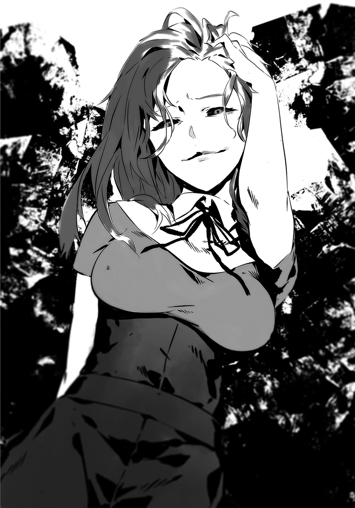
気がつけば、狼真の額に彼女の指先があった。バチン！ というネズミ取りのトラップが作動したかのような音が爆ぜる。狼真の額に凄まじい衝撃。鉛玉でも打ちこまれたのかと錯覚した。しかし、食らったのは、タダの『デコピン』だ。走行中に外れたトラックのタイヤの如く、暴れるように転がる狼真。
「まさか、ここまであんたに引っ搔き回されるとは思わなかったよ」
衣澄は、右手を腰に添え、呆れるような吐息と共に、その言葉を漂わせた。
柔らかな風が、髪を揺らしていた。強い意志を感じる瞳に、堂々たる態度。母というよりも女王の風格だと狼真は思った。
「......黒野はどうした？」
クラリと、眩暈を覚えながらも立ち上がる狼真。
「車から突き落とした」
「くくっ。あいつも酷い姉を持ったもんだ」
「悪いことしたとは思ってる。謝って許されることじゃないよね。けど、やらなくちゃいけなかった。白瑠璃の未来が大変なことになるから」
「加担した連中は、宮間も含めて、自らを省みない奴らばかりだ。金で動くような奴らじゃねぇ。軍隊式でもねぇ。宗教式だね。黒幕は、崇拝されてるレベルじゃねぇと、成り立たなかったんだ。もっと早く気づくべきだったぜ」
「探偵って肩書きは飾りじゃなかったんだね」
「てめえは紫苑から蛍の情報をもらった。扱いやすそうな宮間を懐柔して、誘拐させようとしたんだ。酷いお姉様だぜ。宮間を悪者にしやがって」
「......それは違う」
横槍を入れてきたのは宮間本人であった。
「子供たちのためにも、姉さんは犯罪者のレッテルを貼られるわけにはいかなかった。俺たちが泥を被ればいい」
「じゃあ、やっぱり酷いお姉さまだ。宮間クンの努力の甲斐なく、表舞台に出てきちまったんだからな」
「私だって、最後までいいお姉ちゃんでいたかったよ」
けれど、狼真が蛍を横取りしてしまった。急遽、誘拐成功時の足止め要員を確保に回した。ハイウェイでの失敗があるから、凄まじい数の人員を用意していた。だが、威竜が警官を動かし、黒野にまで助けを求めてしまう。次々にプランが崩れていった。失敗の許されない衣澄は、自らが動くことで決着をつけようとした。
「蛍ちゃんの能力は、ホロと人間の戦争を誘発するかもしれない。滅ぼす兵器なんて......存在したらダメなんだよ。子供たちとホロの将来のためにも、黙ってるわけにはいかなかった。たとえ、この手を血に染めてもね」
ビルに掲げられた巨大なディスプレイに威竜が映る。
『戦争は飛躍しすぎです』
「や、ようやくあらわれたね。市長さん」
『彼女は抑止力として所有するだけです。ホロに偏見を持っている人間はいます。けど、抑止力があれば不安を取り除けます。ホロも、能力を悪事に使おうとは思わなくなります。そういう平和の保ち方もあるんですよ』
衣澄は、指を左右に振りながら、反論する。
「ノン。寝ぼけたことを言ってるね。......逆にだよ？ もし、私たちホロが、人間だけを滅ぼす細菌兵器のようなモノを開発していたらどうする？ 『どうぞどうぞ、抑止力になりますから応援します』って言える？」
『言えません。あなたのおっしゃるとおりです。けど、隠れて暮らしてきたホロと違い、人間は秩序の中で暮らしてきました。培ってきた信頼があるんです』
「その発想自体が、ホロに喧嘩を売ってるんだよ。人間は信用できる。ホロは信用できないって言ってるようなものだもん」
『否定はしません。しかし、それゆえ、白瑠璃市が共存都市として機能しているのです。お互いの信頼関係を築くために』
「わかるよ。けど、人間は区別という名の差別をする生き物なんだ。共存を謳ってるけどさ。白瑠璃市の開発自体が『差別』を推奨してるんだよね。外壁とか、明らかに『隔離』じゃん。威竜の監視システムも『管理』じゃん。抑止力は『支配』じゃん。最初は悪くなかったよ。ぶっちゃけ期待してた。けど、悪い方にエスカレートしていった。隔離や管理する必要がなくなってこその共存なのに、それを目指そうとしていない。あ、ちなみに、私は差別しないよ。人間とホロは『対等』な関係で共存するべきだと思ってる。教会には、ホロの子供も人間の子供もいる。分け隔てなくかわいがってる。実際、凄くかわいい。そんな子供たちの未来を守るために、私たちは戦うの。綺麗事だけじゃ、自分たちを守れないのは、歴史を見て誰よりも知ってる。百年以上生きてきたんだしね」
威竜も衣澄も、望んでいるのは人間とホロの共存。だが、そこにはお互いの『信頼』がない。まるで世界の縮図だと狼真は思った。戦争をする気はなくても、抑止力と謳って戦力を保有し、牽制しあっている。戦争も喧嘩も、所詮はワガママのぶつけあいだ。
野坂威竜は、抑止力によって、白瑠璃に安寧をもたらそうとしている。
薙原衣澄は、歪んだ博愛主義で、共存の道を進もうとしている。
黒野弥人は、甘すぎる正義感で、弱者を守ろうとしている。
姫川パパは、自己満足のために、蛍を自由にしようとした。
天刀狼真は、己のために、姉を殺そうとしている。
物事の善悪など、誰にも決められない。ドラマやアニメのように、人を殺しても正当化されることだってある。
「俺からも、質問していいっすか？」
「どうぞ。狼真君」
「おまえ、感染型のホロだろ？」
「正解。内緒にしてたんだけど、ま、バレバレだよね。私の血をコップ一杯ぐらい飲むと、男性限定で能力を分け与えることができるんだ」
「こんなに増やしてどうする気だ？ ホロの世界でも作ろうとしてんじゃねぇかって不安になってくる。ネズミ算式に増殖して、収拾がつかなくなるぞ？ 裏切り者だって出てくる」
「その点に関しては大丈夫。感染源は私に限定されてるから。それに、この子たちは、絶対に裏切ったりしないよ。家族だからね」
子供たちを洗脳するわけでもなく、教育するわけでもなく、育てる過程で、衣澄に似た思考を持つ者が現れる。そんな子供が成長した時、衣澄は仲間に引き入れる。仲間が仲間を集め、組織は膨らんでいく。強引な勧誘はせず、相応しい者のみが集まった。宮間も、その一人だ。彼の部下にも似たような思想を持つ連中が多くいたのだろう。
紫苑は、とんでもない奴に情報を吹き込んだものだ。上手く操れると思ったのかもしれないが、さすがの紫苑もコレは手に余るのではないか。衣澄の能力――いや、彼女の存在そのものがバケモノだ。思想、能力、カリスマ性。そして恐ろしいまでの深い愛。来たるべき人間とホロの危機のため、革命を起こすだけの戦力が密かに集まっている。
「組織形態には見習うべきところがあるな。能力も教祖様向きだ。種族名は？」
「サイコマリアっていうんだけどね。聞いたことあるかな？」
感染源である衣澄をサイコマリア。その血を受け継いだ者はサイコチルドレンと呼称しているらしい。
『都市伝説の......架空のバケモノですね』
ホロの中でも稀有な存在。おそらく、一族一種一人。日本の僻地の小さな村に、口承だけで伝わる逸話に登場するそうだ。
「威竜の主張はわかる。黒野の優しさも理解してあげられる。けど、私たちも譲れない。悪者になってでもがんばらないと、安心して暮らせない『未来』が来るから」
彼女は大勢を救おうとしている。ただ、そんな中、ないがしろにされている奴が一人いる。
「衣澄様の主張はわかったよ。まさにホロの鑑だな。うん。だが、そのために、こんな幼気な子供を襲うのはイケナイことだぜ」
狼真は、蛍の頭へ、ポンと手を置いた。
「よ、よくわからないけど、蛍、怖いんだよ？ も、漏らしそうなんだよ？」
ふぇへへへ、と、不気味な笑いを漂わせる蛍。
「好きなだけ漏らせ。新しいパンツは、サボリの黒野に買わせてやる」
「イケナイことなのはわかってるよ。けど、選ばなくちゃ駄目だった。大勢の未来か、蛍ちゃんの人生か。十字架を背負う覚悟は――」
衣澄が台詞を紡いでいると、彼女の背後から荒々しい声が飛んできた。
「母さん！」「おまえ、そんガハッ！」「この、死にぞこない、ゴフッ！」「い、衣澄姉さ――うおわぁッ！」
突如として、蹴散らされるチルドレン。それを抜けるように、ゆっくりと現れる帽子を被った優男。誰もが、そいつに視線を鷲摑みにされた。
フラフラで満身創痍といった感じだった。うつむき加減で、生気なんて感じられなかった。
けど、襲いかかる衣澄の手下たちを、最低限の動きと最小限の速さで、丁寧に叩きのめす。
一歩、また一歩と、引き寄せられるように、そいつは歩いてきた。
今にも死んでしまいそうな彼は、血で濡れた顔を持ち上げた。
「ま、待たせたな......」
車から落とされたと聞いて、リタイアしたものだと判断していた。よしんばたどり着いたところで、役に立たないだろうと狼真は思っていた。
狼真は、へらへらとほのかな笑みを湛えながら、黒野弥人に言葉を贈ってやる。
「別に待ってねぇよ。今更、何しに来たんだ？」
☆
ぼんやりと向けた視界の中には、姉と慕う女性の姿があった。
「......弥人。さっきは悪かったね。終わったら、全部話すよ」
「いい。......威竜から、聞いた」
大勢の見守る中、黒野は衣澄とすれ違う。
交わす言葉はあった。話したいこともある。ただ、お互いの気持ちが理解できた以上、会話をしたところで、それは馴れ合いにしかならないと黒野は思った。
「にぃに！」
蛍がトテテテテと近づいてきた。彼女の目線の高さまでしゃがもうとした。瞬間、足に力が入らなくなって、勢いよく膝をついてしまう。明らかに不自然なそれは、むしろ彼女を心配させてしまったようだ。
「にぃに、大丈夫？」
『平気だ』と伝えたかったが、荒々しい吐息が邪魔をする。蛍は、不安げに顔を覗きこんできた。かすかに笑ってごまかし、呼吸を整える。
「おい、黒野。一人だけサボろうとしてんじゃねえぞぉ」
狼真の掌が、黒野のうしろ襟を鷲摑みにする。ぐぇ、と、強引に引っ張られたかと思うと、むりやりといった感じに立ち上がらされた。
楽しげな、その狼真の表情を見て、黒野は思わず顔を引きつらせる。
「ハ、ハハ......鬼か......」
今にも倒れそうな黒野を見ても、彼は尚、戦えと言いたいらしい。
黒野は、丹田と膝に力を込めるようにして体勢を保ちながら、ようやく蛍に安心させてやれるような言葉を送った。
「にぃには、平気だ」
「本当に？ 無理しちゃ駄目なんだよ？」
「無理なんてしてないよ」
強がるような言葉を吐きながら、黒野は性悪探偵と肩を並べた。
そして、視線の先にいる衣澄を見た。黒野は睨むように。狼真は勝ち誇るかのように。
彼女は、寂しそうな瞳で、それを受け止めていた。
「......それが、弥人の正義なんだね？ 間違っていると思わないんだね？ 微塵の迷いもないんだね？ 未来を見据えて、本気でそれが正しいと思ってるの？」
「思ってる」
衣澄や宮間の行動も正しい。黒野の考えは甘く、無責任だ。まるでガキのワガママだろう。
何もしなければ、蛍の件は衣澄に丸投げできる。けど、それは最高に卑怯な手段だと思った。
蛍を守ると決めた以上、それに起因する問題は黒野にも責任が課せられる。衣澄が危惧しているように、人間が抑止力を振りかざし、ホロを管理し始めるかもしれない。そういう問題も、すべてひっくるめて、黒野が向き合わなければならない。子供を一人救うだけの、シンプルな話ではない。大勢のホロの未来と姫川蛍の命。それらが掛けられた天秤の、どちらかを選ぶのではなく、それをぶっ壊して、調和のとれた天秤を作るという使命を背負う。できるかできないかではなく、そうしなければならないと偽善者の心が謳っている。
「姉ちゃんも本気だよ。叩きのめされるのをわかって戦うんだね？」
黒野たちの間に恨みはなく、ただ、成すべきコトをするために戦わなければならない。お互いがそれを了承し、向かい合っている。純粋な主義主張のぶつかりあいだ。
「年寄りは人生経験が豊富すぎるから困る。歳を重ねれば、しゃべるのも億劫になるが、目の前のババアは若すぎるのが難点だ。黒野、おまえ、舐められてんぞ」
「わかってるよ......」
そう言って、黒野は衣澄に向かって中指を立てた。
「......あんまし、上から見てんじゃねえぞ、クソ姉貴」
自分でも驚くほど汚い言葉を吐いた。一瞬だけ、狼真に精神を乗っ取られたかと思った。けど、気分は悪くない。おかげで吹っ切れた。
それを見た衣澄は、ほのかに笑っていたのだと思う。
黒野は、ジャケットの内ポケットからスパシオンのケースを取り出した。
「最後の一粒だ。無駄にすんなよ」
黒野は、ラスト一粒のスパシオンを狼真に渡し、ケースを捨てる。
彼は、それに視線を落とすと、呆れるように肩をすくめた。
「本物のお人好しだな。実を言うと、これから寝返るつもりだったんだ」
「そん時ゃ、諸共潰してやる。死ぬまで冗談ほざいてろ。ゴミ探偵」
天刀狼真は決して善人ではない。だが、黒野個人が信じている。自己中心的で、性格の悪い最低の奴だ。けど、信念に基づいて行動する同類だ。
「俺だって、奥の手は残してるんだ。こんなの必要ねぇが......ま、もらっといてやる」
そう言って、狼真はジャケットのポケットにスパシオンを入れた。
黒野は、視線を一周させた。囲んでいるのは大勢の若者たち。中には知った顔もいた。教会のＯＢである。宮間の手下と衣澄の子供たちの混成といったところか。
「戦っても傷つくだけ。けど、意地になるの、わかるよ。結果よりも過程。弥人は、それでいい。――けど、遊びじゃないから容赦はしない」
衣澄が、我が子をけしかける。黒野たちを囲んでいた数多のホロが、一斉に襲いかかってきた。
狼真が駆ける。向かってくるホロに対して、薙ぎ払うかのように刀を振って蹴散らす。狙うのは首だ。身体と脳を繫ぐ部分を断ち切れば、身体を動かすことができなくなる。打撃を食らわせるのなら顎か金的。気絶させることで相手を再起不能にする。狼真は、将を射んとばかりに衣澄との距離を詰めていく。
黒野は、全身の筋肉を弛緩させた。心を冷たくして落ち着かせる。周囲の敵を、スパシオンによって強化されている感覚の内側へと取り入れる。
「蛍。すぐ終わるから......目を瞑っていてくれ」
「う、うん！」
黒野弥人は、蛍の側から離れない。その位置から、襲い来るサイコチルドレンを、片っ端から沈めていく。どいつから倒せばいいのかを刹那の速さで判断。最短最速の技と動きで、蛍に指一本触れさせずに投げ飛ばす。顎を打ち抜く。地面に叩きつける。黒野弥人に触れた者は、有無を言わさず地面に横たわる。まるで、そういうシステムが出来上がっているかのように完璧な動きであった。
――ただ、現実は甘くはなかった。
窮屈な体勢から、狼真は鋭い剣撃を走らせる。敵は甘んじて受け止めると、倒れながらも狼真の足を摑んだ。不死身の集団は、痛みを恐れない。足や腕の一本、失う覚悟で襲いかかってくる。しかも、こちらの何十倍もの数がいるのだ。
「くっ......！」
怯んだ隙を狙って、他の奴が狼真の顔面めがけて拳を叩き込む。よろめいたところに、腹部への強烈な蹴りが突き刺す。さらに、額めがけて鉄パイプを打ちつけた。
「おおああぁああぁぁッ！」
狼真の雄々しき悲鳴が響き渡る。
「狼真！」
心配そうに彼の名前を呼ぶ黒野。けど、自身にも余裕がなかった。蛍からは離れられない。それに、動いているだけでも体力を消耗してしまっているのだから。
☆
誰の正義が勝るのか？
それは、もっとも愛の深い者である。最初からわかりきっていたことだ。
衣澄の子供の中で、黒野はもっとも純粋だった。特別扱いはしなかったが、特別な子だとは思った。両親が残酷に殺されたという忌まわしき記憶を持っていながら、まるで将棋の駒が成るかのように、その性格を一変させた。
本人は、己を偽善者だと宣うが、衣澄からすれば、彼こそが本物の善人であろう。
だが、愛が足りていない。自己犠牲の本質は、自分が傷つくのを躊躇わないことではなく、自分の心さえも殺すことである。愛のために、己の主義主張さえも覆し、最低な人間だと揶揄される覚悟をした者こそが勝者となる。
大勢は決した。狼真は酷い有様だ。多少は頭の働く奴だと思っていた。勝算ありきで向かってきたと思ったのだが、なんてことはない。袋叩きにあっている。
狼真は殺さない。彼は、紫苑とのコンタクトに使う。あの女は何を考えているかわからない。もし、狼真の言うような悪党であるのなら、衣澄が直接手を下す必要があるだろう。
もう、衣澄の正体はバレてしまった。日常に戻れるとは思わない。これからは、別の形で、白瑠璃と子供たちを守っていかなくてはならないのだから。
黒野も奮闘しているようだが、時間の問題だ。子供たちは手を焼いているが、身体の方が限界にきている。ここから、衣澄たちが負けることなど絶対にありえない。
心が痛む光景を眺めながら、衣澄は独り言をつぶやいた。
「ごめんね。弥人。これから......姉ちゃんは――」
その時だった。仲間の一人が、まるでライフル弾の如く直線的な軌道で飛んできた。それは、衣澄のすぐ側を通過し、背後にあったセダンのフロントへぶちあたると、歪なバウンドをしてから遙か後方へと転がっていった。
「は？」
衣澄は、遅れて背後を見た。仲間の姿を確認すると、すぐさま向き直って視線を戻す。
そこには、薙ぎ払うかのように腕を振るった狼真の姿があった。
「フー、フー」と、気の荒い猫のように呼吸を刻んでいる。
「な、何が起こったの......？」
衣澄は、困惑色の言葉を落とした。場の空気を一変させるほどの一撃だった。誰もが、呆気に取られているかの如く、動きを止めていた。
狼真の紅に染まった瞳が、サイコチルドレンをギロリと見やる。殺意ある眼光を向けられ、子供たちも何をすべきか思い出したのだろう。再び襲いかかった。
「お、あ、らあぁああぁぁぁあぁぁぁぁあぁぁッ！」
狼真は右腕を素早く動かした。鉄の刃が縦横無尽に、まるで網を構築するかのように駆け巡る。瞬きほどの暇に発生したその現象に巻き込まれ、二人のサイコチルドレンが一瞬にしてバラバラになった。
間隙を突いて、さらに一人襲いかかる。狼真が、強引に腕で薙ぎ払う。胸へと腕がめり込んだ。ミシメシバギャリと骨の砕ける音が響き渡ると、弾けるようにしてビルの壁へと叩きつけられた。派手に亀裂を入れ、ドサリと歩道に落下する。
近くにいた仲間が、拳を振りかざした。それが届くよりも早く、狼真が顔面を鷲摑みにした。そのまま後頭部を路面へと叩きつける。アスファルトが豪快に砕け散っていた。
「ひゃは......ひゃはははははは」
「ど、どういうこと......」
衣澄が、独り言のように問いかけた。けど、誰も答えはしなかった。
ぬらりと身体を起こしながら、天刀狼真は衣澄を睨んだ。まるで悪魔が笑っているかのような表情を浮かべていた。
「勝った気になってんじゃねえぞ、クソババア」
バラバラにした『子』の首を拾い上げる狼真。そのような状態になっても、サイコマリアの子は死んでいない。恐怖を湛えた瞳で、狼真を一瞥していた。
「ほぅら、新しい顔よぉッ！」
回転しながら投げつけられる生首。
衣澄は、すかさずドッジボールのように受け止める。キッと狼真を睨みながら『それ』をボンネットの上に置く。
狼真の表情は、お祭りに来た子供のように楽しげだった。瞳の色が変わったかと思ったら、身体能力が爆発的に上昇している。凶暴性も増しているように衣澄は思えた。
「狼真ッ！」
向かっていったのは宮間だ。ホロとなり、ブラッディドラッグによって強化された肉体は、他の子の比ではない。なのに――。
天刀狼真は、その拳を掌でバシンと受け止める。
「ぐ......その眼......。おまえもまさか、羊屋でユリウスをッ？」
「そんなチンケなブラッディドラッグじゃねえよッ。俺のはもっとジャンクだ。精製もされてねぇから、副作用も半端ねぇ。効果も半端ねぇケドな。ケケケケケ」
狼真が握る。すると、宮間の拳がリンゴのようにグシャリと潰れた。血液が飛散する。宮間の怯んだその瞬間、狼真は刀を強く握りしめた。
刹那、宮間の胴体を、閃光が横一文字に通過した。
「がッ......？」
両断された上半身めがけて、狼真は回し蹴りを叩き込む。
派手に吹っ飛んだ宮間の『上』は、道路に面したブティックのショーウィンドウの向こう側へと、豪快な破砕音をぶちまけながら消えていった。
「ヒャ、ハ、ハ、ハ！」
衣澄は、奥歯をギリと嚙んだ。
「......狼真は、ホロなんだっけ？ 種族は......？」
落ち着き払いながら、問いかける衣澄。
彼は、額から滴る紅い液体を、四本の指で拭い、指先をレロリと舐める。
「――ファルファリオス。ひひっ......俺の『血』にはよ......興奮作用があるんだ。胃に入れると、身体能力がアホみたいに強化される。んでもって理性が吹っ飛ぶ。剣と弓矢で戦争してた時代に、戦争馬鹿が乱獲しちまってな。絶滅したと思われてんだが......。ま、生き残りがいたわけだ」
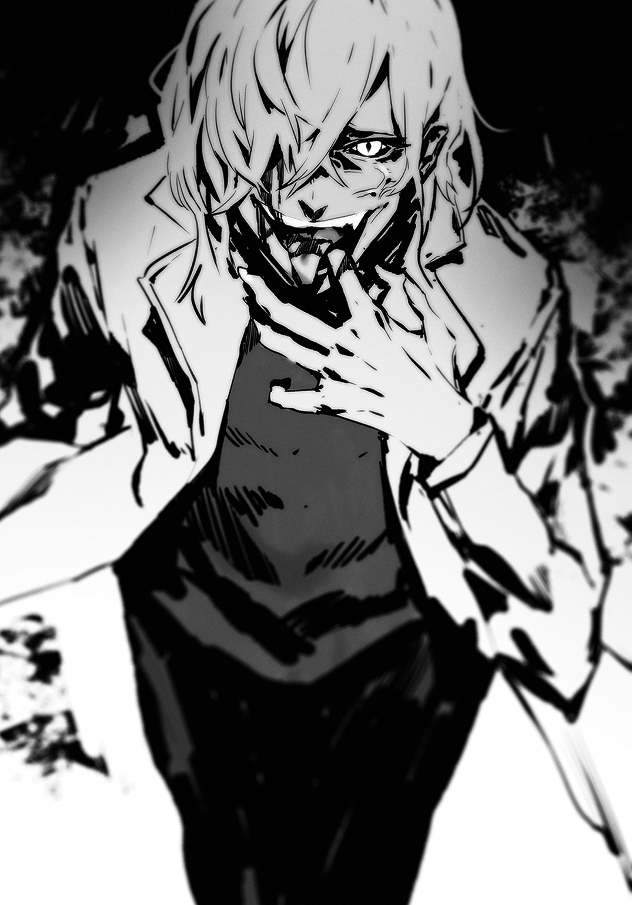
「その能力って、もしかして......」
「たぶん、ユリウスは、俺の血を使って作られたブラッディドラッグだよ。クソ姉貴が、俺を痛めつける度に、血ぃ抜いて、手下に使わせてたんだ。そのまま飲みゃいいんだが、あの羊が、上手く調合して副作用を抑え、保存しやすく粉末状にしたんだろうな」
「それなら、もっと早くやればよかったのに」
衣澄は呆れるように言った。おそらく、袋叩きにあった時に、額から流れる血で摂取したのだろう。
「言ったろぉ。理性が飛ぶってよ。俺は探偵だぜ？ 判断力や観察力が鈍るのに、に、に、安易に使えるかよ。しかも、飲み過ぎたら、ひ、悲惨なことにぃなっちまう。仲間まで殺しちゃうかもな、ヒャハハハ！ 黒野ぉ！ しっかりチビを守ってろよぉ！」
「あ、ああ。......大丈夫なのか......？」
「うるせぇ！ 自分の心配してろ。ロリコンギャングぅ。ヒャハハハハハ！」
バギャンと、車のドアを剝ぎ取って、黒野めがけて投げつける。
「へ？ お、おわッ！」
正気の沙汰とは思えなかった。黒野は、しゃがむように回避したが、食らっていたら致命傷は免れない。
狼真が最後まであきらめなかったのは、この奥の手を持っていたからか？
使えなかったのは、蛍を守ることができなくなってしまうからか？
黒野が来て、蛍を守ってもらえると確信したからこそ、使う気になったのか。
パワーも相当だが、それより恐ろしいのは『殺意』だろうか。黒野と違って甘さがない。
天刀狼真は殺す気だ。深紅の瞳が、そう語っている。
「そんな危険な奴、生かしておくわけにはいかないよね。よっ、この殺人鬼」
吐いた台詞に偽りはない。彼は危険だ。子供たちが手も足も出なかった。ブラッグを服用していた宮間さえも。ならばと衣澄自ら相手をする。
ゆらりとした体勢から、弾丸の如く狼真に襲いかかる。
「来いよ。こい、コい、恋、濃い、鯉、コイ、こイッ！ 不完全燃焼のままァッ、ぶっ殺されんじゃねえぞぉ、ヒャハハハハハハハ！」
間合いに入った瞬間、刀身が横一文字に放たれる。衣澄は潜るようにして回避する。長い髪がわずかに散った。懐に入って、狼真のみぞおちを睨む。ぶち抜くかのようなライフル弾の如き左ストレートを繰り出す。狼真はタイミングを合わせてきた。拳と拳がぶつかり合う。グシャリと嫌な音がした。衣澄の拳が砕けた音であった。怯んだ瞬間に、顔面への容赦のない蹴りが来る。衣澄は『砕けたはずの左手』で受け止め、狼真の足首を摑む。
サイコマリアの自己修復能力は、サイコチルドレンたちと比べ物にならない。
黒野は、衣澄の能力を不老と怪力、そして傷のつかない強靭な肉体だと思っているが、実際には傷がつかないのではなく、傷がついても瞬時に修復してしまうのである。
足を捕らえたまま、半円を描くようにして、狼真を地面へ叩きつける。クレーターを作るように、何度も何度も往復させること計五回。ドギャンバギャンとけたたましい破砕音が響き渡った。そして、宙吊りにするかの如く、足首を持ちあげる。
ぐったりと、血に塗れた狼真の姿があった。
「生きてる？」と、素っ頓狂な調子で問いかける衣澄。
「ヒ、ヒヒッ。元気いっぱぁい」
ニィと狼真が笑みを浮かべた。すると、衣澄の左腕を刀が通過した。が、通過し終わった頃には修復が完了している。しかし、ほんの一瞬、握力が弱まった。狼真の身体が落下する。
地面にたどり着くよりも早く、衣澄は彼の胸部めがけて前蹴りを叩きこんだ。
吹っ飛ばされた狼真は、空中で体勢を整える。刀をアスファルトへ差し込み、ブレーキとした。ギャリギャリと凄まじい音を走らせ、道路に溝を生み出した。
衣澄は、腕の感覚を確かめると、車のボンネットにそれを突っ込んだ。温かさの残るエンジンパーツを摑み、強引に車体を持ちあげ――天刀狼真めがけて、メジャーリーガーの投球のように投げつけた。
「ほう、らッ！」
轟々と大気を穿ちながら、高度を落とすことなく一直線に放たれる巨大な物体。
狼真は、自らそれに向かって行った。
「うおおおおらあぁぁぁぁぁぁッ！」
片腕でガシリと受け止める狼真。ズザザザと数メートル後退したかと思うと、グルリと身体を捻り、ハンマーのように車を投げ返してくる。
衣澄は丹田に力を込め「ふん！」と、拳で弾き飛ばす。ガコンガコンと、車だったものが、部品やガラスなどをまき散らしながら、道路を歪に転がっていった。
その暇のうちに、狼真を見失った。眼球を左右にスライドさせたあと、夜空を見上げる。そこには、満月を背景に、刀を掲げる狼真の姿があった。
ゾク、と、衣澄の背筋が凍りつく。こんな恐怖を抱いたのは、いつ以来か。
天刀狼真は強い。衣澄が今まで出会った誰よりも強い。普通の戦い方ではダメだ。衣澄も覚悟を決めて、その強さと向き合わなければなるまい。
刀が、まるでギロチンの刃のように振り下ろされる。
衣澄は、それを甘んじて受けることにした。だが、正面からというわけにはいかない。
ほんのわずか、十数センチの体運びによって、ずらす。
滝の如く凄まじい斬撃が、衣澄の左肩を通過した。荒々しい一撃は、瞬時に修復するはずの細胞を粉砕し、完璧に両断する。斬撃の余波とでもいうのだろうか、細胞の修復を遅らせるほどのそれが、衣澄の左肩から先を夜空へ飛ばした。
衣澄は歯牙にもかけない。相手は、同レベルのバケモノだ。それぐらいの『予想外』は『予想内』である。残った右腕に力を込めた。アスファルトを砕かんばかりに踏み込んで、全力で振るった。天刀狼真の腹へと薙ぎ払うように、腕を叩き込んだのだ。
天刀狼真は、身体をくの字に折りたたみ、自身が弾丸であるかのように飛んでいった。後方にあった車の運転席の扉を砕き、助手席側へと突き抜ける。さらに、その向こう側にある建物のガラスのドアを破壊して、その奥へと吸い込まれていった。
ビルの奥から、バキンガシャンと、家具や壺でもひっくり返したような音が届けられる。
「は、はは。......これで生きていたら人間じゃないね。ああ、ホロでもない。いや、生きてるかもしんないけどさ。もう、立てるわけがないよ」
天刀狼真はバケモノであった。その単語は白瑠璃市では差別に値するが、衣澄は敬意をもって、そう評する。切断されるはずのない腕が、ご覧の有様である。
衣澄は、飛んでしまった腕はどこへいったのかと、キョロキョロ視線を巡らせる。
その時。正面で、キラリと『何か』が光った。
瞬間、その『何か』は衣澄の喉を貫いた。
――なッ？
靴底が地面から剝がれ、身体が宙に浮いた。景色が一気に遠のいていく。
気がつけば、背中がビルの壁に叩きつけられていた。
薙原衣澄は、何が起こったのかを理解する。遙か向こう、ビルの中から、天刀狼真が刀を投げたのだ。それは、矢のように衣澄の喉元へと突き刺さった。ただならぬ威力があったのか、柄の部分が喉を押しつけ、衣澄を背後のビルの壁まで一気に運んだ。
――そんな、バカな！
声に出して言いたかったが、喉の刀が邪魔で声が出ない。衣澄は、刀という名のピンによって、昆虫標本のように固定されてしまった。
「ひゃっはははははははははははははははははははははははははははははッ！」
笑い声を置き去りにしながら、天刀狼真が獣の如く駆ける。凄まじいバネで車を飛び越え、衣澄のもとへ。
衣澄は残った右腕で刀を摑む。引き抜こうとした刹那――狼真が、刀の柄に掌底を食らわせ、さらに深く押し込んだ。声にならない声が潰れる。衣澄の口が大きく開いた。
狼真が「プッ」と、口に含んでいた何かを吹き出した。衣澄の大きく開いた口の中へと、石ころのようなモノが入ってくる。口を押さえられ、腹部にドムンと拳が叩きこまれる。思わず飲み込んでしまった。
「ケケケ。そ、そいつは、黒野からの送りモンだ。ヒャハハ、アアハハハハハッハハッ！」
狼真の鉄拳が、豪雨のように浴びせられる。一発一発が、砲丸のように重く。弾丸のように速かった。逃れたくても刀のせいで逃れられない。刀を抜こうとしても、ラッシュに押されて動けない。片腕一本で、防げるだけ防ぐ。天刀狼真とはいえ、これだけの攻撃を繰り出せば、いずれ拳の方が持たないだろう。
案の定、徐々に拳の速度が遅くなっている。目も慣れてきた。
――そして......痛みが......酷く......なっている？
己の身体の変化に、ようやく衣澄は気づく。拳が遅くなっているのではない。目が慣れてきたわけではない。衣澄の感覚が研ぎ澄まされているのだ、と。
――まさか、天刀狼真が飲ませた石ころは、スパシオンだったのか？
神経と精神を強化する反面、痛みも敏感に感じてしまう。
狼真の一撃一撃が、身体へと染みこんでくる。激痛を感じているうちに、次の痛みが襲ってくる。果たして、狼真の連撃は何十秒続いたのだろうか。衣澄にとって、それは何分、何十分にもわたる拷問のようであった。苦痛の叫びは、空気と共に、喉から抜けていく。
やがて、狼真の拳撃が止まった。激痛が抜けぬうちに、狼真は首の刀を握る。
グ、と、力が込められ、ギャリリと真横へ振り抜いた。首の半分が断ち切られた。
凄まじい痛みが迸る。天刀狼真は、手首を返し、さらに刃を薙いだ。
壁を切り裂く音が、ジットリと衣澄の右耳から左耳へと抜けていく。
再び、酷い痛みが首を襲った。そして、衣澄の視界が飛んだ。
夜空と道路。ビルやコンクリートジャングルといった景色が、歪にクルクルと回る。
側頭部に強い衝撃があった。頰がアスファルトの冷たさを感じ取る。再び、景色がコロコロと回転し、夜空を見上げるようにして止まった。
満月があった。そして、それを覆い隠すように、天刀狼真が楽しげに覗き込む。
紅き瞳に映る衣澄は、蒼き瞳を湛えていた――。
母の敗北に、子供たちが憤怒の炎を呼び起こす。
気持ちは嬉しかったけど、衣澄は「やめなさい」と言った。誰も言うことを聞いてくれなかった。仇を取ろうと、悪魔を裁かんと、誰もが命を懸けて立ち向かっていった。でも、結果は火を見るよりも明らかであった。
母が勝てぬ相手を、子がどうにかできるわけがない。せめて蛍だけでもと襲いかかる者もいたが、それは黒野が許してくれなかった。吹けば飛んでしまいそうな身体なのに、指一本、触れさせてくれそうにない。
天刀狼真は、向かってくる者に対して容赦がなかった。
転がる衣澄へと見せつけるように、一人、また一人と子供たちを潰していく。
身体の痛みは耐えられても、心の痛みは耐え難いものだ。
それを、スパシオンの粘りつくような感覚の中で、天刀狼真が思い知らせてくれる。
終章 前編 世界一危険な安息の地
こんにちは。ども、市長の野坂威竜です。
いやはや、衣澄さんの事件から一週間が経過しましたね。
え？ あのあと、どうなったのかって？
そうですねぇ。事件に関しては、大きく報道されてしまいました。テレビでもネットでも大騒ぎですよ。昨今のスマホには、当たり前のようにカメラがついてますからね。市内のあちこちで暴れる衣澄さんの子供たちが撮影され、ネット上にアップされてしまいました。ＳＮＳやブログ、掲示板などでも話題になってしまっています。自衛隊も出動しましたしね。
個人的には隠蔽したかったんですが、さすがに無理でしたよ。まあ、ホロだけを悪者にしないよう、記者会見の場では『ホロと人間の大規模なデモ』と説明しておきました。片方だけが非難されるような事件にしてしまうと共存関係に亀裂が入ってしまいますから。
......言いたいことはわかりますが、こういうの、仕方がないんです。バカ正直に真実を述べていたら、町はパニックになってしまいますから。
――まあ、事件の方は一応解決です。
衣澄さんと宮間さんは逮捕しました。大勢の子供たちもです。各地で足止め役をしていた連中を始め、逃げられてしまった者も多いですが、映像が残っているので近いうちに逮捕します。
黒野さんと狼真さんは、事件後に病院へと搬送させました。二週間ほど入院していただく予定だったのですが、病院がお嫌いなようで、二人とも四日で退院してしまいました。
蛍さんの件は......まあ、お察しのとおりです。現状維持以外の環境変化は望めません。今回の件を知る人からすれば、自由になってハッピーエンド的な展開を望んでいるのでしょうが、そういうわけにもいきません。能力の情報が出回ってしまった以上、狙われる機会も増えます。衣澄さんの残党だってあきらめていないと思います。安全のためにも、部屋での生活は仕方がないのです。
事件を通じて、蛍さんは外の世界への憧れが強くなってしまいました。学校やデパート、ショッピングなどの『場所』や『行動』だけに興味を持っていたのが『人』に対しても執着するようになりました。優しい黒野さんを兄のように慕い、危機を救ってくれた狼真さんを英雄視しています。少し、良くない傾向だと思います。叶わぬ想いと自由を願い続けるのは残酷ですから。僕も胸が痛いです。
『おまえＣＰＵだろ』というツッコミは却下です。
世話係は改善が必要でしょう。パパが死んでしまった以上『代わり』が必要ですし、彼女をコントロールする友人兼相談役を、用意した方がいいかもしれません。
けど、これで大団円です。蛍さんは無事に帰ってきましたし、衣澄さんの革命を止めることができました。紆余曲折ありましたが、白瑠璃の平和は守られたのだと僕は思っています。
黒野さんはこれから大変でしょう。宮間さんがいなくなったのは痛いです。クロノスの運営に関しては、彼を頼っていた節がありますし、末端構成員の多くは宮間さんが管理していましたから。
狼真さんは、紫苑さんを追いかけ続けるのでしょうか？ 市長として、彼の復讐には反対です。彼が本懐を果たす前に、紫苑さんを逮捕してみせます。現状、バーテン殺しの容疑者って紫苑さんなんですよね。
蛍さんも、狭い世界の中で幸せを見つけてくださると嬉しいです。
僕も市長としての業務に戻ります。白瑠璃市を監視し、そして市民に成長していただくよう努めます。皆さんも、好きなことを見つけてください。それを、使命と思えるような『夢』に昇華させてください。失敗も挫折もいっぱい味わってください。叶えられるかはともかく、そうすることで得られるものがいっぱいありますから。
それでは、また。市長の野坂威竜でした。っと............？
おや、市役所にお客さんです。というか、天刀狼真さんです。住民登録でもしに来たのでしょうか？ 白瑠璃市はホロを歓迎しますけど......いやいや、受付を素通りして、関係者以外立ち入り禁止エリアへと入って行くではありませんか。ナチュラルに挨拶しているせいか、警備員さん、彼が部外者だって気づいてませんね。仕事してください。
彼、そのまま職員用のエレベーターに乗り込んじゃいましたよ。
行き先は十九階のようですね。蛍さんのいる要人フロアです。もちろん、行ったところで会えません。居住エリアへの扉は開きませんから、エントランスで立ち往生間違いなしです。
狼真さんがエレベーターを降りました。案の定扉は開きません。パスワードロックの分厚い扉の前に立つと、無意味にもドンドンドンと叩くようなノックをします。
そして、楽しげな声で言いました。
『ほーたる君。あーそーぼっ』
☆
白瑠璃市役所十九階。
天刀狼真は、ドンドンドンと騒がしく扉を叩いて「ほーたる君。あーそーぼっ」と連呼していた。もちろん、こんなことをしていても、中から蛍が飛び出してくることはない。
ただ、不審なことをしていれば、いずれ誰かが威竜を連れてきてくれるのではないかと思ったから、こうしているだけである。
しばらくすると、狼真の思惑どおり、背後のエレベーターからスタッフが現れた。蛍の世話係をしていた女だ。
「あの......天刀狼真さんでしたよね？ 何をしていらっしゃるのですか？」
若干引き気味に声をかけられると、狼真は待ちわびたと言わんばかりに返事をする。
「おう、ちょうどいいところに来てくれた。チビと遊ぶ約束をしてたんだ。開けてくれ」
白々しく要求すると、彼女はジトリとした半眼を向けてきた。
「噓でしょう？ たとえ、約束をしていたとしても、開けるわけにはいきません」
彼女は、脇に抱えていた機械製の分厚いディスクを置いた。展開し、光を浮かび上がらせると、幽霊のように半透明な市長が浮かび上がる。
『やあ、狼真さん。一週間ぶりですね』
「この町じゃ、毎日会ってるようなもんだろ」
『僕を避けてたでしょ？ 怪我の具合はいかがですか』
「悪かったら、病院を抜け出したりしねぇよ」
『ここは関係者以外立ち入り禁止ですよ？ 蛍さんにも会えませんが？』
「知ってる。おまえに用事だ」
蛍に会えるなどと思っていない。威竜も、それをわかっているだろう。彼女と話をするための口実である。ただ、町のど真ん中でする話題ではないので、場所を選ばせてもらった。
『それなら一階のラウンジでお相手しましょう。そもそも、僕、町中にいるんですから、ここへ来なくてもお話しできますのに......』
「いいんだよ。ここで。プロポーズや退職みたく大事な用事を、メールや電話で済ます最近のゆとりどもとは違うんだ」
『では、手短に。部外者に入られて気持ちのいい場所ではありませんからね』
ならばと、狼真は早速とばかりに本題へと入らせてもらう。
掌の中で、ひょいと杖をスライドさせ、先端付近を握ると、柄の部分で、分厚い扉を指し示すようにコンコンと叩いた。
「この扉の向こうに、俺の部屋を用意しろ」
『はい？』
威竜は、素っ頓狂な声で、その二文字をつぶやいた。
「凶悪な姉貴がいるのは話したよな？ 何度も襲われたんだ。いつ殺されてもおかしくねぇ。同じ町にいればなおさらだ。安全な住居が必要なんだよ。ここなら文句なしだ」
『なるほど、そういうことですか......』
狼真にとって、これ以上安全な場所はない。長らく姉の脅威にさらされてきたゆえ、安心して眠れる場所を、ずっと探していた。もちろん、永遠に隔離される気はない。しかし、連中が出入りしているのだ。その程度の外出を許された上で、ここに住ませてほしかった。
「わがままで言ってるんじゃねえぞ。俺は真面目な話をしてる。警察は姉貴に無関心。俺を保護してくれることもない。だから、自分の身は自分で守ってる。仕込み杖まで持ち歩いてな。他に行くトコがねえんだよ」
『ならば、警察の官舎はいかがですか？ 特別に紹介しても構いませんが？』
「笑わせる。凶器を持ち歩いてるんだぜ？」
狙われる側の狼真だが、狙う側にもなり得る。警察と同じ建物で暮らすなど冗談ではない。そもそも怪事件専門の探偵なのだ。警察と近しい存在になれば、仕事は激減してしまうだろう。狼真は、決して思いつきだけで来ているわけではない。
『それなら、刑務所の中はどうでしょうか？』
「冗談は存在だけにしろ。死んでも御免だ」
断られるのも理解できる。このフロアは、いわゆるＶＩＰルームだ。蛍の厚遇ぶりを見ればわかる。チンピラ探偵が、容易く住めるような物件ではないのだろう。
「タダで住ませてもらおうとは思ってねぇよ。この前みたく襲撃があったら、警備員として戦ってやる。他にも、ホロ絡みの事件があれば、探偵として働いてやってもいい。そんかし、蛍と違って自由に出入りさせてもらうがな」
『僕の駒になると言っているのですか？』
「仲間って言った方が、感じが良くないか？」
利害関係は一致しているハズだ。威竜は白瑠璃の平和を担っている。狼真は、それを壊すであろう紫苑を追いかけているのだ。それに、蛍と違って養われるだけではない。相応の働きをするつもりはある。
「潔癖を装っちゃいるが、アングラな友達の一人も欲しいだろ？ ほら、初めて会った時、おまえ、言ってたじゃねえか。『白瑠璃に来たら、僕とお友達になることをお勧めします』ってよ。仲良くやろうぜ」
『ううん......』
腕を組んで唸る威竜。
「まともな代替案がねえのなら、しばらくでもいいから住ませろ」
『いえ、たしかに狼真さんのおっしゃるとおりなんです。しかし......』
そこまで言いかけると、威竜はスタッフの女性をチラと見た。続きは彼女が述べる。
「部屋が余っていないんですよ。ご愁傷様でした。よしんば、余っていたとしても、あなたのような素性の知れない人物を入居させることはできません」
スタッフの口元には、ほのかに勝ち誇ったかのような笑みが浮かべられていた。
「......俺を住ませたくないから、適当なことを言ってんだろ？」
『いえ、噓じゃないです。なんなら、すべての部屋をノックして回ってみますか？』
「......俺を狙ってるのは、姉貴だけじゃねえ。衣澄のババアを斬っちまったんだ。マザコンが大挙して押し寄せてくるのは目に見えてる」
最初から、二つ返事をもらえるとは思っていなかった。しかし、現実問題、断られてしまったら、白瑠璃に滞在する術はない。衣澄の残党が、どれだけ残っているかわからないのだ。セキュリティの高いマンション程度では、襲撃を防ぐことなどできないだろう。
「そういえば、蛍とかいうチビが退去したがってたじゃねえか。いい機会だ。追い出そうぜ」
『いやいや、できるわけがないでしょう？』
威竜は、わざとらしく肩をすくめた。
「というわけです。ご足労ありがとうございました」
スタッフの女性は、狼真のようなチンピラが嫌いなのか。淡々と帰宅を促される。
「......冗談じゃねえ。この町を出て行けって言うのかよ」
紫苑に近づいているというのに――。このまま白瑠璃を出れば、元の木阿弥である。それに、せっかく見つけた安息の地だ。離島も山奥も、紫苑の魔の手からは逃れられなかった。だから、逃げるのではなく、守られる方法で、姉側からの接触を防ぎたかった。
狼真は、辛辣な表情を浮かべる。軽々しく叶う要求だとは思っていなかったが、死活問題には変わりない。
すると、威竜は顎に指を当て、飄々と提案を投げかけた。
『ふむ......そうですねぇ。それなら......非常にリスキーですが、一つだけ良い方法がありますよ？ 責任は持てませんが』
「あ？」
☆
黒野を待っていたのは、とても平穏な生活と呼べるモノではなかった。
退院した黒野が、真っ先に向かったのは薙原教会である。管理人である衣澄がいなくなってしまい、四十人もの子供たちの心が路頭に迷っていた。ここ数日間は、モカが必死になって切り盛りしていたが、それも限界にきていた。
モカが『衣澄は遠いところに行ってしまった』という現実を、オブラートに包んで子供たちに伝えたのだが、納得してもらえるわけがなく、教会は大パニック。
庭や食堂、寝室など、どこへ行っても子供たちの大号泣の嵐。誰か一人が泣き始めれば、連鎖するかのように、涙の大合唱が巻き起こる。普段は家事を手伝ってくれる年長の子供たちも、作業が手につかない。ほとんどの仕事をモカが引き受けることになる。中には『お母さんを捜しに行く！』と、教会を飛び出す子供もいた。捜索に東奔西走するのも、やはりモカだった。
それを聞いた黒野は、収拾をつけるべく退院予定日を大幅に短縮し、戦線へと加わることにした。安静を言い渡されていたが、黒野は日がな一日、子供たちのために働く。仕事の合間を縫って、職員になってくれそうな人を探した。子供たちだってつらいのだと、顔が土色に変わるまで仕事をがんばっていた。けど、一日に二回は倒れていた。それを見たモカが『クロノが死んじゃう！』とオロオロ。ついには泣きだしてしまった。
そんな壮絶な日々を五日ほど繰り返し、ようやく収拾の目途が立つ。
子供たちも、徐々に落ち着きを取り戻してくれた。いつ死んでもおかしくなさそうな黒野と、泣きながらがんばっているモカを見て、哀れに思ってくれたのだろう。現実を受け入れ、家事を手伝ってくれるようになった――。
その日。昼食の洗い物を済ませた黒野は、院長室のソファへと背中を預け、天井を仰ぐようにしてくたびれ果てていた。膝にはモカの頭。彼女は、長い足をソファから放り出して、ぐったりと寝転がっている。シャツがはだけていて、ヘソが丸出し。みっともない姿であった。
「......クロノぉ、いいのか？ 本当に休んでいいのか？」
「ああ。......このあと、バイトの子が来るから、仕事の説明をするんだ。そうしたら、俺たちは楽になれる」
「仕事の説明は任せたゾ......クロノのためなら、どれだけでもがんばれるけど、モカはもうダメ。うぅ......クロノの膝で死ねるなら本望なんだ............」
最後の言葉を言い残し、モカは「ぐぅ」と死ぬように眠った。
黒野は、クマのできた眼で壁の時計を一瞥する。バイトの子が来るまで一時間ほどある。ほんの少し仮眠をとろうかと思った。意識がぼんやりと薄れ、コックリコックリと頭が揺れる。
そんな黒野を現実の世界へ呼び戻したのは、味気のないデフォルトの着信音だ。
ハッと目を覚ます。結構な音量であったが、モカは『ぐぅぐぅ』と眠ったままだった。
スマホを手に取ると、そこには『天刀狼真』と表示されていた。
「......もしもし」
『よう、黒野。久しぶりだな』
「............おまえ、まだ白瑠璃にいたのか？」
『いちゃ悪いのかよ。姉貴が町にいるかもしれないんだ。しばらくはこっちに滞在するぜ』
随分と大胆な決断だと黒野は思った。狼真には敵が多い。衣澄の残党だって、狼真のことを放っておくとは思えなかった。
「それで？ 不動産屋でも紹介してほしいのか？」
『いや、寝床は見つけた。おまえには、引っ越しの手伝いを頼みたい』
「......断る。俺の方も忙しいんだよ」
『そう言うな。他に頼れる奴がいないんだからよ。そもそも、おまえにはハイウェイでの貸しがあったよな？』
「知り合いの引っ越し業者を紹介してやる」
『引っ越し業者が入れねぇ場所にあるんだよ』
☆
――これが、現実というものであろうか。
変わらない一室。慣れ親しんだ自分の部屋。
大きなベッドの上に、ちょこんと座った蛍は、空虚に心を漂わせていた。
泣き声でホロを殺すというのであれば、なるほど危険な能力に違いない。幼い蛍でも、それぐらいは理解できる。隔離の理由に繫がるのも理解できる。大勢の人たちが、その危険な能力のため、必死になっていたというのも理解できる。
母から受け継がれた能力とはいえ、蛍は自分のことが怖かった。閉じ込められていても、仕方がないのかもしれない。
「茶子ちゃん......蛍は、寂しいんだよ......」
蛍は、亡き父の形見となってしまった茶子ちゃん人形に語りかける。
「うんうん。わかるのです。パパがいなくなっちゃって、一人きりの時間が増えちゃったんだもんね......だよ」
茶子ちゃんの腕を大仰に動かしながら、蛍は腹話術みたいにしゃべった。
ママとは月に一回。パパとは週に一回会えていた。パパが死んで、ただでさえ、少なかった家族との接触が減ってしまった。これは、蛍が多くを望んだせいかもしれない。
外の世界は素敵だった。教会や羊屋がある。車にも乗れた。それ以上に『人』がいる。言葉を交わし、心をかよわせることは、もの凄く楽しかったし、嬉しかった。
けど、それを手に入れようとすればするほど、大勢を不幸にする。黒野や狼真に苦しい思いをさせるのは本意ではない。威竜にも迷惑をかける。警察の人たちにも。
蛍が孤独を受け入れていれば、こんなことにはならなかった。あの事件以来、蛍はずっと、そんなことばかりを考えていた。
「もう、あきらめた方がいいのかなぁ......？」
蛍は、茶子ちゃん人形に問いかける。けど、当然、答えてはくれない。
腹話術なのだから『そうじゃないよ』と、否定させるのは簡単だ。
けど『自由を望まない方がいい』『孤独を受け入れた方がいい』そんな暗澹たる想いを、自分以外の誰かに否定してほしかった。奇跡でも幻想でもいい。人形が勝手に語り出して、蛍を慰めてくれないかと期待する。だから、しゃべらせなかった。
『あきらめる......というよりも、別の希望を持つのはいかがですか？』
ベッドに置いてあったタブレット端末が、威竜の姿を映し出した。蛍は、それを両手で持って、画面の中の意地悪な友人に問い返す。
「別の希望？」
『この部屋も、悪くはないと思います。望む世界ではないかもしれませんが、欲しい物はだいたい手に入るでしょう？』
「じゃあ、パパとママとにぃにとろうま」
無理な要求だとわかっていながら、蛍は意地悪を言ってみた。
『はは。人間はダメです。相手の都合もありますからね。例えば......あと、一カ月もしたら、劇場版みけみけみぃが公開されるんじゃないですか？ 楽しみですねぇ』
「ブルーレイになるのは、もっとあとなんだよ」
『じゃあ、劇場公開日に、ここのテレビで流して差し上げましょう。特別ですよ？』
威竜の話し方は嫌いだ。遠回しに『ここからは出られない』と言っているように聞こえる。外の世界に憧れを持たせないためだろう、物事を部屋の中で解決しようとしてくる。叶わぬ夢ならば、最初から抱かない方がいいと仄めかしているようだ。
――こんなこと、以前の蛍ならわからなかったかもしれない。
「映画を見て......語り合う友達が欲しいんだよ......」
『なるほど。じゃあ、僕と語り合いましょう。僕も劇場版を楽しみにしてるんです。そうだ、ママさんと相談して、公開日にここへ来られないか、スケジュールを調整してみましょう。ママさんも、みけみけみぃが好きですからね』
もういい、と、蛍は思った。はぐらかされているのはわかる。外に出る希望の片鱗さえも感じさせてくれない彼女の提案にはウンザリだった。
「......威竜君。蛍は、部屋から出ない方がいいの？」
タブレットの中の威竜は、淡々とした態度で答える。
『蛍さんのためを思えば、そういうことになるでしょう。外は危険ですからね』
「希望は......持っちゃダメ？」
縋るように問いかけると、威竜は大きな溜息をついた。
わずかに肩をすくめると、表情に真剣味を帯びさせる。
『蛍さんが成長したから......僕は正直に話します。――蛍さんの能力は危険です。悪い人が、それを狙ってます。だからこそ、僕は蛍さんを守るために、ここへ閉じ込めています。絶対に出られないとは言いません。ですが、絶対に出られるとも断言できません。だから、未来ではなく「今」を考えていただきたいのです。部屋の中でも幸せを感じられるように』
威竜という管理人が、たぶん初めて本音で語ってくれた。残酷な現実であるが、遠回しな言い方をされるよりはマシだ。ただ、悲しいのは如何ともし難い事実である。
――やはり、自分は怖い存在なのだ。部屋から出ちゃダメなのだ。
そう思ったら、ほんのわずかに涙が浮かび上がってくる。
『......いいですよ。泣いても。ここには、僕と蛍さんしかいませんから』
威竜は、穏やかな表情で優しく語りかけてくれた。
けど、蛍は泣かなかった。込み上げる感情を必死に抑え込む。
泣かないって、狼真と約束したから。
二度と会えないのなら、約束など守らなくてもいいだろう。けど、泣いてしまったら、彼との思い出すら壊してしまうような気がした。
泣かないことで、記憶の中の繫がりを保とうとしているのだと思う。
『――しかし、状況は刻一刻と変化を遂げます。蛍さんの環境も、いずれ変わることがあるかもしれません。もちろん、すべてが叶うわけではありません。自分の想いとは、違う変化かもしれません。受け入れる気があるなら、望む気持ちがあるなら、今のままではないと思いますよ？』
「......威竜君の言葉は難しいんだよ」
その時だった。ゴンゴンと鈍いノックが届けられる。すると、威竜はわざとらしく言った。
『おやぁ？ お客さんのようですねぇ。蛍さん、出迎えてあげたらいかがですか？』
「......ママかな？」
ママと会うのは、もっと先のハズだ。けど、事件を知ったママが、蛍を心配して会いに来てくれたのかもしれない。だったら、凄く嬉しい。
蛍は、瞳に滲んだ涙へ袖を押しつける。狼真と約束したのだ。相手が誰であろうと、涙は見せない。ぴょん、と、ベッドを降りて、テテテテテと駆ける蛍。
裸足のまま、玄関へ降りたところで思い出す。
「そういえば、玄関には鍵がかかってるんだよ。威竜君。開けてほしいんだよ」
考えてみれば、蛍が自分の手でドアを開くことはない。せいぜい脱走した時ぐらいだ。鍵は常にかかっているし、パパもママも自分で開けて入ってくる。スタッフの人もだ。
『鍵は解除してありますよ。ドアは蛍さんが開けてください』
「え？」
だから、蛍がドアを開けて出迎えるなど不思議なコトだった。
とりあえず、鈍いノックが続くので、蛍はノブを捻って、ドアを開放してあげた。
――誰だろう？
ドアの向こうにいた人物が、蛍の瞳に吸い込まれる。
そこには、銀色の髪の頼れるスーパーヒーローがいた。ちょっと怖い目つきをしているけど、みけみけみぃに詳しい『話せる奴』だ。
「ろう......ま？」
「よぉ、チビ。久しぶりだな」
手には、ボストンバッグや数多の紙袋。簡易取っ手を付けた電気屋の箱。それを強引に握りしめている彼は、まるで両手に孔雀を携えているかのようであった。
「おら、そこをどけ」
「わわっ」
強引に入ってきたかと思うと、それらすべてを床へ置いた。文字通りの重荷から解放された狼真は、首を左右に動かして、軽く腕を回す。
「あー、重かった」
「ど、どうしたの？ なんで、ろうまがここにいるの？」
「引っ越しのこと、威竜から聞いてねぇのか？」
「へ？ 引っ越し？」
蛍が困惑していると、ドアの向こうから、今度は黒野の声が飛んできた。
「おい、狼真！ 荷物置いたんなら、こっちも手伝えよ！」
「悪い！ 手が離せねぇ！」
そう言い返して、狼真は『ふぅ』と、くたびれた吐息を零しながら、玄関の段差へ腰掛ける。
すると、やがて廊下の奥から黒野がやってくる。巨大な段ボールを抱えながら、よろよろとふらつきながら入ってきた。
「おまえのベッドだろうが！ って、荷物で玄関塞いでんじゃねえよ！ ぬあああぁあッ！」
靴を履いたまま、なりふり構わぬ感じで上がると、床めがけて段ボールを荒々しく置いた。ドンという重々しい音が部屋に響き渡る。
黒野は、肩で息をしながら狼真めがけて言った。
「組み立ては、おまえがやれ！」
「俺は、プレステのセットアップをしなきゃなんねえ」
蛍は、ポカンと口を半開きにして、ただただ立ち尽くしていた。
いったい何事であろうか。それに、狼真の言っていた、引っ越しとはいったいなんのことだろうか。
『あ、すいません。言い忘れてました』
クルリと振り返ると、今度は巨大テレビに威竜が映っていた。彼女は、口元に笑みを浮かべながら、機嫌よさそうに続けた。
『もし、蛍さんさえよければ、彼も、ここに住ませてあげてくれませんか？』
「住むって......ろうまとにぃにが？」
「あ、住むのは狼真だけな。にぃには引っ越しの手伝いに来ただけ」
「ちょっと待て。威竜、蛍に確認取ってなかったのか？ 嫌だって言われたらどうするつもりだ。これだけの荷物を持って戻るとなったら、黒野がかわいそうだ。勘弁してやれよ。病み上がりなんだぞ？」
「そん時は、おまえが運べ！」
何がなんだかわからない蛍は、ぼんやりと紙袋に視線を落としてみた。中にはプレステや漫画、アニメのブルーレイディスクが入っていた。ケーキとかお菓子とかもいっぱい入っていた。
「ろうまと......一緒に住むの？」
蛍は、夢みたいなことを口にした。もし、それが現実となれば、これほど嬉しいことはない。アニメ好きの、頼りになる仲良しの友達。そんな彼が、ゲームをいっぱい持ってきてくれたのだ。一人じゃなくなる。たくさん語れる。一緒に遊べる。お互いが本気の本音で。
「いいだろ？ ゲームしたりアニメ見ながら引きこもりライフを楽しもうぜ。もっとも、俺はおまえと違って、自由に出入りできるけどな。ケケケ」
よくわからない。よくわからないけど。もの凄く胸が熱くなった。会いたいと願った人たちが、目の前にいる。まるで、蛍を孤独から助けに来てくれたかのように。
「毎日......一緒にいてくれるの？」
「いつまで滞在するかはわからねえけど、まあ、しばらくは」
「いいの？ ろうまはそれでいいの？」
「家賃がタダで助かる」
けど、蛍は危険なホロだ。狼真にとって、同棲は命がけだろう。少しの過ちで、彼を死なせてしまうかもしれないというのに――。
「ろうまは......蛍が怖くないの？」
ほんのわずかに、声を引きずらせる。
せっかく、涙が止まったというのに、再び瞳の奥底から液体が湧いてくる。
「泣かないんだろ？ 約束したよな？」
「うん......っ」
「だったら、怖くねえよ」
その言葉は、たまらなく嬉しかった。なんだか、自分が受け入れられたような気がした。生きていてもいいんだ。希望を持ってもいいんだって思えた。
『どうしますか、蛍さん。嫌なら、断ってもいいんですよ？』
蛍は、ちぎれんばかりに首を左右に振った。
目頭が、きゅうと熱くなって、涙が零れそうだった。けど、泣いたらとんでもないことになる。だから、一生懸命我慢した。袖を瞳に押しつけて、液体を吸収させる。そのまま『ぐじっ』と鼻水を啜る。苦しくても、口は開かない。喉が嗚咽を訴えていたけど、狼真のために堪えた。
嬉しかった。それ以上に救われた気持ちになった。どう言葉にしていいのかわからなかったし、泣くのを我慢するのに精一杯で、声なんて出てこなかった。
だから、瞳を袖で覆ったまま、蛍はもう片方の腕をゆっくりと突き出した。
ぎゅっと拳を固めた。
――そうしたら、相棒の拳が、蛍の拳とぶつかったんだ。
「おう、よろしくな」
蛍の言いたいことを、狼真が先に言ってくれた。
蛍も、言わなくちゃって思った。もっと明るく、もっと嬉しく。感情の赴くままに。
――よろしく、なんだよ！
けど、その言葉を彼に聞かせるのは、十秒ぐらいあとのこと。
気持ちが溢れて、止まらなかったから。
終章 後編 親がいなくなれば子はパーリィタイム
白瑠璃市警察署内の留置所。
やや広いフロアには、オフィスデスクが一つ。看守と思しき男がデスクワークをしていた。
他にも二名。アサルトライフルを抱えている戦闘要員が一人。もう一人は、非武装の若い青年だった。きっと、戦闘に特化した能力を持つホロなのだろう。
並ぶ鉄格子の中には、それぞれ三、四人が入っている。ほとんどが衣澄の子供たちだ。先日の事件のせいで、留置所は大盛況だった。
――衣澄が留置所にやって来たのは事件の翌日。首だけの状態で運ばれてきた。
十人ほどの武装した機動隊員が監視する中、留置所の奥にある別室へと運ばれる。
天井の高い、鉄板に囲まれた無機質な部屋。扉も分厚い。
病院で使われるようなキャスター付きベッドが中央にポツンとあって、衣澄の首から下が寝かされていた。拘束衣を幾重にも着せられ、全身を鎖でグルグル巻きにしてある。足には三つの手錠。さらに、身体全体が分厚い革製のベルトでベッドに固定されていた。
衣澄の頭部が、首のない身体へ。切断面をあわせると、細胞同士がお互いを求めあうようにして元通りになった。
「はは。優しいんだね。まさか、身体を返してもらえるとは思わなかったよ」
軽口を叩いてみるが、連中は何一つ返事をしてくれなかった。
衣澄の両眼がアイマスクで覆い隠される。視界が真っ暗になって、たくさんの足音が遠ざかっていく。扉が閉まって――最後に、鍵をかける音が耳へと届けられた。
食事はナシ。不定期に水だけが与えられる。会話する相手はいない。闇の中で時間が過ぎるのを待つだけ。やったことを鑑みれば、当然の仕打ちか。目的は誘拐だが、市役所を襲撃した上に、大勢の警察官を巻き込んだ。衣澄の能力からすれば、これぐらいの拘束は当然だろう。しかも、感染型。人間がもっとも警戒するタイプのホロだ。むしろ甘いぐらいであった。
――薙原衣澄は、自分がホロになった時のことを思い出す。
百年近く昔。衣澄は、山奥の集落に父母と三人で暮らしていた。
ある日、衣澄が山菜を採りに山へ行った。崖の近くにキノコが生えていたので、採取しようとしたのだが、崖が崩れてしまった。荒々しい岩肌に身体を何度も打ちつけて、薙原衣澄は二十二歳という若さで死亡した。両親は絶望に打ちひしがれ、とても嘆いたそうだ。
その時、ちょうど村へと流れてきた司祭がいた。名前はシトリという名の日本人。都会から来た高名な司祭だと名乗っていた。結果から言うと、彼は詐欺師だった。
父が、盛大な葬式を挙げてやりたいとシトリに頼む。村のやり方とは違った大仰な葬式が執り行われた。しかし、詐欺師に葬式などできるわけがなく、シトリは持っていた本を参考にして、寄付金のために適当な葬式を挙げる。
その本というのが、黒魔術的なモノだったらしい。葬式ではなく儀式となって、薙原衣澄を蘇らせた。後天的なホロは、こうやって生まれるのだろう。
家族は喜んだ。だが、村の人たちは違った。異端な能力を持つ衣澄を蔑んだ。嫌がらせも受けるようになった。いたたまれなくなった衣澄は、村を去ろうとしたのだが、父と母に見つかってしまい、一緒に出ていくことになった。こうして、村から一つの家族が消えた。
その年、偶然にも村は疫病と台風に見舞われた。大勢の村人が被害を受けた。村人は薙原衣澄の呪いだと噂した。その後、過疎が深刻化し、十数年後には、村そのものが消えた。
近年、どこかのライターだかブロガーが、村の子孫に話を聞いて、脚色し、面白おかしく書いた。サイコマリアと、中二病患者が食いつきそうな名称をつけた。村の人たちは、サイコマリアの怒りを買って皆殺しにされた――そんな尾鰭をつけ、やがては都市伝説となって、ゴシップ誌や訪問数の少ないブログに、歪んだ記録として残った。
衣澄は、村の人たちを恨んではいなかった。だが、強く胸に誓っていた。もし、自分なら、決して差別はしないと。衣澄の肉体は、望んで手に入れたモノではない。不可抗力な部分を差別の対象にするのは、恥ずべきことだ。
生き返ることができたのは幸福だが、不老不死の肉体は喜ぶべきコトではない。どんなに愛した人も、自分より先に死んでいく。ならばと、永遠に愛を繫ぐため、衣澄は遺児を育て続けた。愛し、愛されるうちは幸福でいられる。もし、目的を見失えば、心が朽ち果てそうだったから。偽りの愛は嫌だ。醜い世界で生きたくない。だから、この身を滅ぼしてでも、子供たちの未来を守りたかった。
ただ、その中に、たった一つだけエゴがあったことは否定しない。永遠に繰り返される時代を一人で生きるのが嫌だったから、ずっと一緒に生きてくれる家族が欲しかったんだ。
閉じ込められて二週間ほど経過した頃。扉が開いてゾロゾロと大勢の足音が入ってきた。枕元に『何か』が置かれた。スマホかタブレットだろう。威竜の声が聞こえてくる。
『どうも、お疲れ様でした。引っ越しですよ』
「へぇ。どこへ？」
衣澄は、まったくへこたれていないといった調子で問いかける。
『刑務所と伺っていますが......まあ、研究所のような刑務所でしょうね』
「私、裁判とか、受けてないんだけど？」
『今回は、内々で処理します。裁判とか、受けたいですか？ 傍聴席に、教会の子供たちが並ぶかもしれませんよ？』
「そっか。それは嫌だね。じゃあ、司法取引をしよう」
『子供たちのために裁判も報道もしません。その代わり、刑務所で罪を償ってください。取引は以上です。皆さん、衣澄さんを運んでください』
救急患者のようにベッドごと運ばれていく衣澄。
『開けろ』『出せ！』『姉ちゃん、必ず助けに行くからな！』『んぎぃぃぃぃっ、おら、開けろぉ！』『戻ってきてくれ！』『母さんッ！』
牢屋の前を通過しているのだろう。子供たちの、衣澄の身を案じる声が聞こえてくる。
看守に『うるさいぞ。静かにしろ！』と、怒鳴りつけられていた。
何か返さなくちゃいけないと思い、唯一動かせる口で、衣澄は明るく伝えた。
「姉ちゃんは大丈夫だよ！ あんたたちは、自分の信じる道を進みな！」
『姉ちゃんは、間違ってねぇよ！』『絶対に、世の中を正しく変えてやろうな！』『俺らのことは、心配いらないから！』
衣澄の耳に届かなくなるまで、子供たちは言葉を投げかけてくれた。
その後、階を移動し、警察署の外へと出た。車の走る音や、肌を撫でる風が、屋外なのだと教えてくれる。おそらく夜。風が冷たかったし、陽光も感じられなかった。
身体が傾いた。トラックの荷台のような場所へ押し込まれた。音の響く感じから、結構な広さがある。ロープのようなモノを張り巡らせて、ベッドを固定してるようだ。
「ねぇ、威竜。教会の子供たちはどうしてる？」
『黒野さんとモカさんが、切り盛りしてくれてます』
「そっか。よかった。あの二人なら、安心して任せられるね」
衣澄は、ほっと胸を撫でおろす。
十人ほどの足音が入ってくると、扉の閉まる音が聞こえた。エンジンが唸って、車が動き始める。衣澄は、耳元の威竜に問いかけた。
「ねぇ、取引しない？」
『しません』
そっけなく断られてしまったが、衣澄は勝手に話を続けた。
「この世界には、きっと私の他にも感染型がいるよ。近い未来、世界はそんな奴らに支配されるんじゃないかな。......そのホロが友好的ならいいけどさ。人間嫌いだったらどうする？」
衣澄の場合は、彼女からしか感染しないが、中にはネズミ算式に増えていくタイプや、無自覚に増やしてしまうタイプもいる。それらが鳴りを潜めていたのは、人間という生態系のピラミッドの頂点に睨まれないためである。だが、ホロが公になった以上、徐々に姿を現すだろう。
人間とホロのパワーバランスは、人間側に傾いている。どちらかに大きく傾かないよう調整するか、権力を手にした側が対等な関係を求めていかなくては、平和的な共存は望めない。
白瑠璃市の開発計画は、共存のための第一歩だと思っていた。だが、やはり人間は管理したがっている。抑止力は、一方だけに圧力をかけるシステムだ。
衣澄は、教会を運営する前から、こんな時代が来るのではないかと思っていた。だからこそ、大勢の同志を集めて備えていた。能力を与えることで、一蓮托生の運命共同体となった。出番がなければ平和に暮らしていればいい。けれど、人間側が威圧的なアプローチをかけてくるのなら、未来を見据えてホロ側も行動を起こさなければならない。
「私の目指す未来は、ホロの支配する世界でも、人間の支配する未来でもないよ。仲良く手をとりあう世界なんだ。もし、白瑠璃が脅かされた時は、相手がホロであろうと人間であろうと、私たちは立ち向かうつもりだしね」
『だから、逃がしてくれとでも言いたいのですか？』
「うん。もしくは......この車が到着する前に私を殺してほしい」
それは、衣澄の本心からの願いだった。
『不死身でしょう？ どうやって殺すんですか？』
「ちょうどいい子がいるじゃん。革命的な能力をもったさ」
すべてを手に入れた権力者は、健康と若さを求める。サイコマリアの血液は、不老不死という形で、それを叶えてしまう。衣澄の血液が採取され、流通すれば、多くの権力者がホロになる。蛍の計画も中止されるだろう。今度は人間が追いやられ、ホロ主体の時代がやってくる。人間が支配する世界を衣澄は望まないが、ホロが支配する世界も望まない。衣澄の望みはあくまで共存だ。可能性は潰しておいた方がいい。
『偉い人をホロにさせないためにも抑止力ですよ。姫川親子の存在を知れば、ホロになりたいなんて言う人もいなくなります。もっと信用してください。僕の望みも共存なんですから』
「信用できないね。所詮、あんたは人間の作ったプログラム。管理者を気取っていても、管理されている側なんだ。あんたにできないことを私はする。世界を変えるのではなく保つの。死ぬことのできない私は、時代を魅せられながら、永遠に生き続けなくちゃいけないんだから」
『......ふむ。いやぁ。ちゃんと考えてるんですねぇ。ちょっと感心しました』
「じゃ、助けてよ」
『けど、あなたは負けたんです。悔しいでしょうけど、僕のやり方で共存を目指しますよ』
種族間の共存どころか、威竜という個人とも相容れないか。
「見損なったよ、威竜。あんたは、もっと現実的に考えられる市長さんだと思ったのに」
『現実的ですよ。けど、あなたほど人間に失望していなッ――？』
そう言いかけたところで、突如、凄まじい衝撃が、轟音と共に車を揺らした。
「な、なんだッ？」「お、落ち着け！」
見張りの連中が騒ぎ始めた。威竜まで困惑している。
『こ、これは？ い、衣澄さん、あなた――？』
最初は衣澄もわからなかった。だが、連中の狼狽ぶりを見て、なんとなく察した。
――どうやら、思っていた以上に、子供たちは頼もしく成長してくれていたらしい。
再度、強烈な衝撃があった。車体が傾き、そのまま横転してしまう。ガリガリガリという金属の削れる音が荷台を満たした。固定されたベッドは、まるで車体の一部であるかの如く横向きに。
「応答しろ！ 外はいったいどうなってるんだッ！」
隊員の野太い声が、騒がしい車内に響き渡る。
ザザッというアナクロな音を奏で、無線から返事が返ってくる。
『敵襲だ。多いぞ。トラックには近づかせん。そっちは衣澄を見張ってろ』
――外にも護衛がいるのか？ しかし、交戦中？ 子供が助けに来てくれている？
とっさに、衣澄は全身に力を込めた。拘束衣の留め金がバギンと破壊され、繊維がビリと破ける。身体に巻かれた鎖は鋼鉄製か。さすがに破壊することはできない。しかしギギギという音と共に金属が伸びる。わずかな隙間ができた。
『撃ってください！』
威竜が命令する。しかし、トラックが派手に揺れた。弾丸が飛んでくるのが数秒遅れる。衣澄は、すかさず上半身を起こす。固定してあったベルトが弾け飛んだ。身体に巻きつく鎖を強引に持ちあげる。ようやくアサルトライフルの発砲音が刻まれた。鎖が盾となって、それらを防いでくれる。横転しているゆえに、体勢がよくわからない。とりあえず、踵を跳ね上げ、足部を固定しているベルトも弾き飛ばす。身体が、ドサリと落下した。
銃声が止まって、薬莢の落下する音が響き渡る。衣澄は、鎖の中でもがきながら、アイマスクを壊して外す。そして、ジャラリと鎖を脱ぎ棄てる。荷台の中、ＬＥＤの淡い光を感じながら、薙原衣澄はゆっくりとまぶたを開いた。
「――あ、はは......久しぶりの光だぁ」
座ったままの姿勢から、両足を揃えて軽く跳躍。空中でクルリと一回転して立ち上がる。足首の手錠が残っていたので、蹴りを繰り出すように振り上げて破壊する。ビリビリに破れた拘束衣がみっともなかったので、毟るように脱ぎ捨てた。つなぎの白衣が現れる。弾丸を受けてしまったのだろう、三カ所ほど血が滲んでいた。
「幸運が重なったね」
まず、連中が衣澄を甘く見てくれていたこと。数枚の拘束衣と鎖ぐらいで、サイコマリアを捕らえられるなど、見積もりが甘いにもほどがある。次に、仲間が助けに来てくれたこと。拘束を外すのに十数秒はかかると思っていた。不審な動きをすれば、頭部に弾丸を浴びせられて終わりだ。上手く外へ逃げられたとしても、周囲に護衛がいれば、やはり弾丸のシャワーを浴びることになる。威竜とて馬鹿ではない。それぐらいの用意はしているだろう。
視線を一周させる衣澄。それこそトラックの荷台といった感じの光景が広がっていた。壁に沿うようにして、長椅子がある。広いが、窓がないせいで圧迫感がある。見張りの連中は、重苦しいジャケットにアサルトライフルを装備。銃口からは煙を漂わせていた。数は......。
「......あ、え？ あ、あれ？」
数えていると、見慣れた顔の二人の姿があった。
機動隊員の群れの中に、杖を持った銀髪の悪人面。そして、ややうつむき加減の帽子の青年が佇んでいるではないか。
「......弥人......どうして、アンタが......」
連中をかき分け、帽子を傾けながら、ゆっくりと黒野が歩み出てくる。
「威竜に頼まれたんだよ。こんな時、姉ちゃんを説得するようにってな」
「ヒャハハ。懲りねぇ女だ。どっちが強いか、忘れてねえよな？ セルフサービスで鎖を巻いて、おとなしくベッドに寝とけ。ババアに悪戯する趣味はねぇから、安心していいぞぉ」
威竜もなかなか考えていると衣澄は思った。
「ちゃんと罪を償えば、条件次第で、戻ってこられるって威竜が言ってた。教会の子供たちは、やっぱ姉ちゃんじゃなきゃ駄目だよ。逃げるなんて考えはやめてくれ」
「戻ってこられる？ ......姉ちゃんが、それを信じると思う？」
「俺が約束させる。面会にも行く。不当なことをやらされているようなら、俺が正してやる。相手が威竜であろうが国であろうが、必ずだ」
黒野は、きっと衣澄を全力で守ってくれる。不当な扱いを受けていると知ったら、必死で抗議してくれるだろう。罪を償ったあとは、温かく迎えてくれるに違いない。
「弥人、あんたの気持ちは嬉しいよ。けどね、姉ちゃんには、やることがいっぱいあるんだ。それに......あんた以外にも、待ってくれている子供や弟妹がいるんだよ」
「姉ちゃんが帰るところは教会だ。表にいる奴らのところじゃない」
馬鹿馬鹿しいほどのお人好し。放っておけなくなるような無垢さ。そんな性格だからこそ、衣澄はクロノスの一員として黒野を支えてやりたくなった。その気持ちは、今でも変わらない。けど、支えてあげることは、もう、できない。
「......弥人は、そのままの弥人でいなさい。反抗期上等が、うちの教育方針だからね。......姉ちゃんとは、たまたま道が違ったんだって、思った方がいいよ」
「やだ」
子供じみた発言であったが、彼の瞳は真っ直ぐを見ていた。
「やだ、じゃないでしょ。もう十九歳なんだし、自分の考えを持つことも大事――」
「自分の考えなら持ってるさ！ 薙原衣澄は俺の姉ちゃんだろうが！ 間違った道に行こうとしているのなら、叩きのめしてでも正しい道に戻さなきゃならないんだよ！ いや、何が正しいかなんてわからない！ けど、一緒にいたい気持ちだけは本物なんだ！」
黒野の咆哮が、ビリビリと響き渡った。そして、衣澄の心にも届いた。
「あはは、姉ちゃんは、あんたを車から突き落としたんだよ？」
「それでも、俺は見捨てない」
衣澄は嬉しかった。これほどまでに愛してくれる弟がいるのだ。
もっと、幼いと思っていた。けど、彼はいつの間にか成長していた。支えなければいけないと思っていた対象は、すでに同じ目線にいたようだ。
「嬉しいよ。愛してる」
「俺もだ」
「けど、貫く正義は別だからね。弥人はそれでいい。姉ちゃんもこれでいいんだ」
衣澄は、壁――いや、横転しているから屋根だろうか。ボッと音速の拳を撃ち放ち、金属板を容易く貫いてみせる。それを摑み、ベリィと瘡蓋を剝がすかのように逃走経路を開いた。
「う、撃て！」と、隊長と思しき男が吠えた。
再び、アサルトライフルが放たれるが、衣澄は素早く穴から脱出する。
弾丸が、折り曲げられた鉄板へと蜂の巣のような穴を開けていった――。
☆
剝がすように開けられた穴から、機動隊員が衣澄を追いかける。狼真も、あとに続いた。
落ちていたスマホが、黒野に語りかけてくる。
『あてんしょん。外、大変なコトになってますね』
黒野は「そうか」と寂しそうにつぶやいて、外へ一歩踏み出した。
真っ黒な空のキャンバスには月と数多の星屑。街並みには人工的な光が煌々と輝いていた。交差点は悪い意味で賑やかだ。車が何台も横転している。パトカーのランプが、あちらこちらで点滅していた。機動隊が展開し、アサルトライフルを構えていた。数多のマズルフラッシュが瞬く。それに貫かれるのは衣澄の子供たち。己が母を救わんと、怯まず警官に襲いかかる。流れ弾で引火したのか、炎上している車さえあった。
「ひゃはは。いい眺めだな。イカれた町だと思っちゃいたが、これほどとは思わなかったぜ。おまえの姉貴は残念だった。見ろ。呑気な野次馬どもが撮影会をやってる。ババアは世間の敵になっちまった」
肩を並べて、狼真が言葉を零す。黒野は、冷静に「そうだな」とつぶやいた。
いったい、どれだけの子供がいたのだろうか。
道路は大規模な渋滞が起こっていた。車からは、若い男たちが、鉄パイプや拳銃などをぶらさげてゾロゾロと降りてくる。ビルの屋上からも、大勢降ってきた。警察官や機動隊員を攻撃している。何十人といった規模ではない。数百......いや、千にも上るチルドレン。これらすべてが、衣澄に賛同した者たちだというのだろうか。
機動隊の数も決して少なくはなかった。有事に備えて、護送車の周囲を五台のパトカーと三台の特型警備車で見張らせていたのだ。前回の事件を鑑みて、ホロの警察官も動員している。能力を駆使した戦いも繰り広げられていた。慌てふためきながら、逃げ出す市民がいる。店の奥で震えている者もいた。逃げ腰になりながらもスマホを構えている者もいた。
薙原衣澄はというと、横たわる巨大なトラックの上に佇んでいた。
喧騒の中、血の滲んだ白衣をはためかせ、澄んだ瞳で黒野を見下ろす。
「これ、みんな、姉ちゃんの子供たち。支えてくれてるの......。ホロと人間が幸せに暮らせる未来を守るんだ。そのために、姉ちゃんは戦い続けなくちゃいけないんだから」
交渉や説得など、そんなレベルでの解決は望めない。もはや、戦うことでお互いの信念を貫きとおさなければならない。同じレールの上を走っていても、同じ向きを走っているとは限らないのだから。
「さよなら。弥人」
「......勝手に......さよならしてんじゃねえよ......」
自らの心を押し潰すかのように、ポツリと独り言をつぶやく。
黒野は、内ポケットからケースを取り出す。スパシオンを一粒摘み、口の中に放り込む。帽子を深く被り直した。
狼真は、杖から刀身を引き抜いた。刃を握って、掌に一本の紅い線を生み出して滲ませる。口元に笑みを浮かび上がらせながら、掌をレロリと舐めた。
「ケケケ。お互い、姉貴には苦労するなぁ」
「そうだな」
「......泣いてんのかぁ？」
「泣いてねぇよ......」
黒野弥人の瞳が、海のように蒼々と澄み切っていく。
そして、天刀狼真の瞳は、燃えるような深紅へと染まっていくのであった。
周囲の、ありとあらゆる液晶広告塔。掲示板。店先の看板。カーナビ。スマホ。そして巨大なビルに掲げてある大型ディスプレイ――町中の画面という画面に、威竜の顔が流れるように映っていった。
『あてんしょん。どうも、市長の野坂威竜です。白瑠璃市民の皆さん。ご安心ください。僕たちが、あなたをお守りしますから。絶対に――』
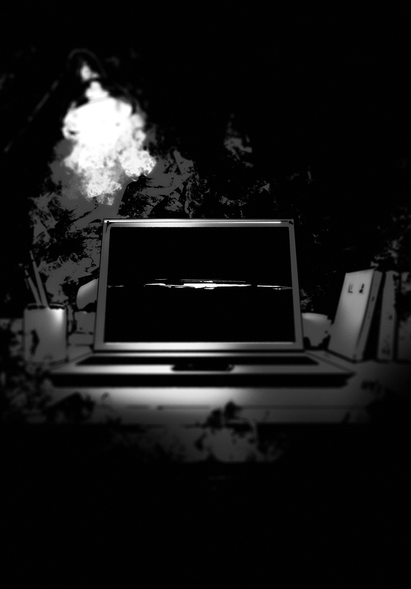
あとがき ～え、僕のあとがきないんですか？～
お久しぶりです。神高槍矢です。この度は『殺人探偵・天刀狼真』を手にとっていただきありがとうございます。入稿後。担当様に、あとがきについてこう言われました。
『今回、ページに余裕がないので、あとがきは半ページです』
『え？ 半ページ？ 一ページじゃなくてですか？』と、僕。
『おぐちさんと二人で一ページをシェアしてもらいます。けど、あとがき部分にはイラストを描いてもらおう思っているので、神高さんは一言だけお願いします』
と、いうわけで、実際には半ページどころか前代未聞の一言あとがきになってしまいそうだったので、その場合サブタイトルの言葉を入れようかと思っていました。しかし、その後、すったもんだありまして、結果、一ページ丸々いただけることになりました。
前作に引き続き、今回も素敵なイラストを描いてくださったおぐち様、ありがとうございました。ダッシュエックスの暴れマグロこと美人担当編集Ｏ様、作品が世に出るにあたって、多大なるご迷惑をおかけしたことを深くお詫びしつつ、多大なる御助力をいただいたことに感謝しています。またデザイナー様、印刷所様、編集部の皆様、僕を育ててくださった前担当編集様、本を読んでくださる読者の皆様のおかげで本作を出版することができました。
深くお礼申し上げます。
神 高 槍 矢
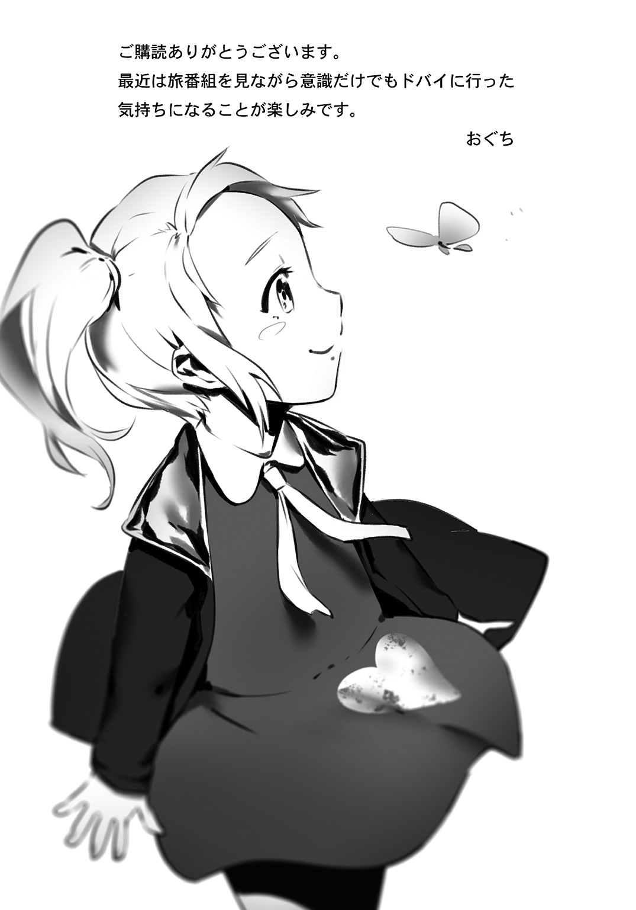
著者紹介
神高槍矢 かみたかそうや
三重県在住。伊勢志摩サミットで話題の志摩市に住んでいます。景色の良い町です。ダイエットのためにクロスバイクを購入。楽しいけどお腹が減ります。また、おぐちさんにイラストを書いてもらえて嬉しいです。
illustration
おぐち
イラストレーターのおぐちです。この度はご購読頂きありがとうございます。「殺人探偵・天刀狼真」のキャラデザでは、アレキサンダーワンをイメージしつつ全く違うものになりました！ そして、あまり女の子キャラがいないので少ない女子要素を可能な限り活かしていきたいと思います。
ダッシュエックス文庫DIGITAL
殺人探偵・天刀狼真
著者 神高槍矢
© SOUYA KAMITAKA 2016
２０１６年６月30日発行
この電子書籍は、ダッシュエックス文庫「殺人探偵・天刀狼真」
２０１６年５月30日発行の第１刷を底本としています。
発行者 鈴木晴彦
発行所 株式会社 集英社
〒１０１－８０５０
東京都千代田区一ツ橋２丁目５番10号
０３－３２３０－６０８０（読者係）
編集協力 大間華奈子
制作所 株式会社ＩＣＥ
本作品の全部また一部を無断で複製、転載、改竄、インターネット上に掲載すること、および有償無償に関わらず、本データを第三者に譲渡することを禁じます。なお個人利用の目的であっても、コピーガードを解除しての複製は、法律で禁じられています。